![In this picture preface is given. This book is developed in a holistic approach which inculcates comprehending and analytical skills. It will be helpfull for the students to understand higher secondary science in a better way and to prepare for competitive exams in future. This textbook is designed in a learner centric way to trigger the thought process of students through activities and to make them excel in learning science. How to use the Book? This book has 23 units. Each unit has simple activities that can be demonstrated by the teacher and also few group activities are given for students to do under the guidance of the teacher. Infographics and info-bits are added to enrich the learner’s scientific perception. The “Do you know?” and “More to know” placed in the units will be an eye opener. Glossary has been introduced to learn scientific terms. ICT corner and QR code are introduced in each unit for the digital native generation.](images/image-2.png)
![This picture is about career guidance. Engineering Courses B.E. / B.Tech 4 years. Aeronautical Engineering Aerospace Engineering Architecture Engineering Automobile Engineering Automation & Robotics Engineering Avionics Engineering Bio Medical Engineering Bio Technology Engineering Civil Engineering Chemical Engineering Ceramic Engineering Computer Science Engineering Construction Management & Technology Engineering Electronics and Communication Engineering Electrical and Electronics Engineering Environmental Science Engineering Information Science Engineering Industrial Engineering Industrial Production Engineering Instrumentation Technology Marine Engineering Medical Electronics Engineering Mechanical Engineering Mining Engineering Manufacturing Science Engineering Naval Architecture Polymer Technology Silk Technology Engineering Carpet Technology Engineering Textile Engineering Agriculture Courses 4 years B.Sc. Agriculture Science B.Sc. Horticulture B.Sc. Forestry B.Tech Agricultural Engineering Medical Course 5 years MBBS – Allopathy BSMS – Siddha BAMS - Ayurveda BUMS – Unani BHMS – Homeopathy BNYS – Naturopathy & Yoga BDS – Dental BVSc – Veterinary Paramedical Diploma / UG 2/3 years Nursing Pharmacy Anaesthesia Technician Cardiac Technician Dental Mechanic Health Inspector Medical imaging & tech Medical Lab Tech Medical X-ray Tech Nuclear Medicine Tech Occupational therapist Operation Theatre Tech Ophthalmic Assistant Physiotherapy Radiographic Assistant Radiotherapy Tech Rehabilitation Tech Respiratory Therapy Tech Blood Transfusion Tech Humanities 3 years Advertising BA-General Criminology Economics Fine Arts Foreign Languages Home Science Interior Design Journalism Library Sciences Physical Education Political Science Psychology Social Work Sociology Travel & Tourism](images/image-3.png)
![This picture is about road ahead after 12th B.Sc., Courses 3 years B.Sc. Physics B.Sc. Chemistry B.Sc. Botany B.Sc. Zoology B.Sc. Mathematics B.Sc. Computer Science B.Sc. PCM B.Sc. CBZ B.Sc. Dietician & Nutritionist B.Sc. Sericulture B.Sc. Oceanography B.Sc. Meteorology B.Sc. Anthropology B.Sc. Forensic Sciences B.Sc. Food Technology B.Sc. Dairy Technology B.Sc. Hotel Management B.Sc. Fashion Design B.Sc. Mass Communication B.Sc. Electronic Media B.Sc. Multimedia B.Sc. 3D Animation B.Sc. Home Science Commerce Courses 3 years CA – Chartered Accountant CMA Cost Management Accountant CS Company Secretary (Foundation) B.com – Regular B.com – Taxation & Tax Procedure B.com – Travel & Tourism B.com – Bank Management B.com – Professional BBA/BBM – Regular BFM – Bachelors in Financial Markets BMS – Bachelors in Management Studies BAF – Bachelors in Accounting & Finance Certified Stock Broker & Investment Analysis Certified Financial Analyst Certified Financial Planner Certified Investment Banker Management Courses (3 years) Business Management Bank Management Event Management Hospital Management Hotel Management Human Resources Management Logistics & Management C A CPT ATC IPCC ITT (100 Hours) Article ship Work under in CA Clear Final Exam Become a C.A. Law Courses 3.5 years LLB BA+LLB B.Com + LLB BBM+LLB BBA+LLB](images/image-4.png)
Table Of Contents
Unit |
Title |
Page No. |
1 |
Laws of Motion |
1 |
2 |
Optics |
16 |
3 |
Thermal Physics |
32 |
4 |
Electricity |
42 |
5 |
Acoustics |
59 |
6 |
Nuclear Physics |
74 |
7 |
Atoms and Molecules |
173 |
8 |
Periodic Classification of Elements |
155 |
9 |
Solutions |
124 |
10 |
Types of Chemical Reactions |
106 |
11 |
Carbon and its Compounds |
157 |
Unit |
Title |
Page No. |
12 |
Plant Anatomy and Plant Physiology |
|
13 |
Structural Organisation of Animals |
187 |
14 |
Transportation in Plants and Circulation in Animals |
200 |
15 |
Nervous System |
218 |
16 |
Plant and Animal Hormones |
229 |
17 |
Reproduction in Plants and Animals |
263 |
18 |
Heredity |
261 |
19 |
Origin and Evolution of Life |
329 |
20 |
Breeding and Biotechnology |
286 |
21 |
Health and Diseases |
300 |
22 |
Environmental Management |
25 |
23 |
Visual Communication |
25 |
24 |
Practicals |
|

At the end of this lesson students will be able to:
Human beings are so curious about things around them. Things around us are related to one another. Some bodies are at rest and some are in motion. Rest and motion are interrelated terms.
In the previous classes you have learnt about various types of motion such as linear motion, circular motion, oscillatory motion, and so on. So far, you have discussed the motion of bodies in terms of their displacement, velocity, and acceleration. In this unit, let us investigate the cause of motion.
When a body is at rest, starts moving, a question that arises in our mind is ‘what causes the body to move?’ Similarly, when a moving object comes to rest, you would like to know what brings it to rest? If a moving object speeds up or slows down or changes its direction. what speeds up or slows down the body? What changes the direction of motion?
One answer for all the above questions is ‘Force’. In a common man’s understanding of motion, a body needs a ‘push’ or ‘pull’ to move or bring to rest or change its velocity. Hence, this ‘push’ or ‘pull’ is called as ‘force’.
Let us define force in a more scientific manner using the three laws proposed by Sir Isaac Newton. These laws help you to understand the motion of a body and also to predict the future course of its motion, if you know the forces acting on it. Before Newton formulated his three laws of motion, a different perception about the force and motion of bodies prevailed. Let us first look at these ideas and then eventually learn about Newton’s laws in this unit.
Mechanics is the branch of physics that deals with the effect of force on bodies. It is divided into two branches, namely, statics and dynamics.
Statics: It deals with the bodies, which are at rest under the action of forces.
Dynamics: It is the study of moving bodies under the action of forces. Dynamics is further divided as follows.
Kinematics: It deals with the motion of bodies without considering the cause of motion.
Kinetics: It deals with the motion of bodies considering the cause of motion.
According to Aristotle a Greek Philosopher and Scientist, the natural state of earthly bodies is ‘rest’. He stated that a moving body naturally comes to rest without any external influence of the force. Such motions are termed as ‘natural motion’ (Force independent). He also proposed that a force (a push or a pull) is needed to make the bodies to move from their natural state (rest) and behave contrary to their own natural state called as ‘violent motion’ (Force dependent). Further, he said, when two different mass bodies are dropped from a height, the heavier body falls faster than the lighter one.
Galileo proposed the following concepts about force, motion and inertia of bodies:
While you are travelling in a bus or in a car, when a sudden brake is applied, the upper part of your body leans in the forward direction. Similarly, when the vehicle suddenly is moved forward from rest, you lean backward. This is due to, anybody would like to continue to be in its state of rest or the state of motion. This is known as ‘inertia’.
The inherent property of a body to resist any change in its state of rest or the state of uniform motion, unless it is influenced upon by an external unbalanced force, is known as ‘inertia’.
Activity 1
Take a glass tumbler and place a small cardboard on it as shown in the figure. Now, keep a coin at the center of the cardboard. Then, flick the cardboard quickly. What do you observe?
The cardboard falls off the ground and the coin falls into the glass tumbler.

In activity described above, the inertia of the coin keeps it in the state of rest when the cardboard moves. Then, when the cardboard has moved, the coin falls into the tumbler due to gravity. This happens due to ‘inertia of rest’.

Figure 1.1 Inertia of motion

The impact of a force is more if the velocity and the mass of the body is more. To quantify the impact of a force exactly, a new physical quantity known as linear momentum is defined. The linear momentum measures the impact of a force on a body.
The product of mass and velocity of a moving body gives the magnitude of linear momentum. It acts in the direction of the velocity of the object. Linear momentum is a vector quantity.
Linear Momentum = mass × velocity
p = m v (1.1)
It helps to measure the magnitude of a force. Unit of momentum in SI system is kilogram metre second power minus one and in C.G.S system its unit is gram centimeter second power minus one.
This law states that everybody continues to be in its state of rest or the state of uniform motion along a straight line unless it is acted upon by some external force. It gives the definition of force as well as inertia. body.
Force has both magnitude and direction. So, it is a vector quantity.
Based on the direction in which the forces act, they can be classified into two types as:
(a) Like parallel forces: Two or more forces of equal or unequal magnitude acting along the same direction, parallel to each other are called like parallel forces.
(b) Unlike parallel forces: If two or more equal forces or unequal forces act along opposite directions parallel to each other, then they are called unlike parallel forces. Action of forces are given in Table 1.1.
When several forces act simultaneously on the same body, then the combined effect of the multiple forces can be represented by a single force, which is termed as ‘resultant force’. It is equal to the vector sum (adding the magnitude of the forces with their direction) of all the forces.
Table 1.1 action of forcres
Action of forces |
Diagram |
Resultant force (F net) |
Parallel forces are acting in the same direction |
|
F net = F 1 + F 2 |
Parallel unequal forces are acting in opposite direction |
|
F net = F1 minus F2 ( if F 1 is greater than F 2) F net = F2 minus F1 ( if F 2 is greater than F 1) F net is directed along the greater force.
|
Parallel equal forces are acting in opposite directions in the same line of action ( F 1 = F 2) |
|
F net = F1 minus F2 (F 1 = F2) F net = 0 |
Figure 1.2 Combined effect of forces


(b) Unbalanced forces – Action of a lever

(c) Like parallel forces
If the resultant force of all the forces acting on a body is equal to zero, then the body will be in equilibrium. Such forces are called balanced forces. If the resultant force is not equal to zero, then it causes the motion of the body due to unbalanced forces
Examples: Drawing water from a well, force applied with a crowbar, forces on a weight balance, etcetera.
A system can be brought to equilibrium by applying another force, which is equal to the resultant force in magnitude, but opposite in direction. Such force is called as ‘Equilibrant’.
Have you observed the position of the handle in a door? It is always placed at the edge of door and not at some other place. Why? Have you tried to push a door by placing your hand closer to the hinges or the fixed edge? What do you observe?
The door can be easily opened or closed when you apply the force at a point far away from the fixed edge. In this case, the effect of the force you apply is to turn the door about the fixed edge. This turning effect of the applied force is more when the distance between the fixed edge and the point of application of force is more.
Figure 1.3 Rotating effect of a force

The axis of the fixed edge about which the door is rotated is called as the ‘axis of rotation’. Fix one end of a rod to the floor/wall and apply a force at the other end tangentially. The rod will be turned about the fixed point is called as ‘point of rotation’.
The rotating or turning effect of a force about a fixed point or fixed axis is called moment of the force about that point or torque(τ). It is measured by the product of the force (F) and the perpendicular distance (d) between the fixed point or the fixed axis and the line of action of the force.
τ = F × d (1.2)
Torque is a vector quantity. It is acting along the direction, perpendicular to the plane containing the line of action of force and the distance. Its SI unit is Newton metre.
Couple: Two equal and unlike parallel forces applied simultaneously at two distinct points constitute a couple. The line of action of the two forces does not coincide. It does not produce any translatory motion since the resultant is zero. But a couple results in causes the rotation of the body. Rotating effect of a couple is known as moment of a couple.
Examples: Turning a tap, winding or unwinding a screw, spinning of a top, etcetera.
Moment of a couple is measured by the product of any one of the forces and the perpendicular distance between the line of action of two forces. The turning effect of a couple is measured by the magnitude of its moment.
Moment of a couple = Force × perpendicular distance between the line of action of forces
M = F × S (1.3)
The unit of moment of a couple is newton metre (N m) in SI system and dyne centi metre in CGS system.
By convention, the direction of moment of a force or couple is taken as positive if the body is rotated in the anti-clockwise direction and negative if it is rotate in the clockwise direction. They are shown in
Figures 1.4 (a and b)


1. Gears:
A gear is a circular wheel with teeth around its rim. It helps to change the speed of rotation of a wheel by changing the torque and helps to transmit power.
2. Sea-saw
Most of you have played on the sea-saw. Since there is a difference in the weight of the persons sitting on it, the heavier person lifts the lighter person. When the heavier person comes closer to the pivot point (fulcrum) the distance of the line of action of the force decreases. It causes less amount of torque to act on it. This enables the lighter person to lift the heavier person.
3. Steering Wheel
A small steering wheel enables you to manoeuvre a car easily by transferring a torque to the wheels with less effort.
When a number of like or unlike parallel forces act on a rigid body and the body is in equilibrium, then the algebraic sum of the moments in the clockwise direction is equal to the algebraic sum of the moments in the anticlockwise direction. In other words, at equilibrium, the algebraic sum of the moments of all the individual forces about any point is equal to zero.

In the illustration given in figure 1.5, the force F one produces an anticlockwise rotation at a distance d one from the point of pivot P (called fulcrum) and the force F two produces a clockwise rotation at a distance d two from the point of pivot P. The principle of moments can be written as follows:
Moment in clockwise direction = Moment in anticlockwise direction
F1 × d1 = F2 × d2 (1.4)
According to this law, “the force acting on a body is directly proportional to the rate of change of linear momentum of the body and the change in momentum takes place in the direction of the force”.
This law helps us to measure the amount of force. So, it is also called as ‘law of force’. Let, ‘m’ be the mass of a moving body, moving along a straight line with an initial speed ‘u’ After a time interval of ‘t’, the velocity of the body changes to ‘v’ due to the impact of an unbalanced external force F.
Initial momentum of the body P initial = m u
Final momentum of the body P final = m v
Change in momentum Δp = P final minus P initial
= m v minus m u
By Newton’s second law of motion,
Force, F is proportional to rate of change of momentum
Here, k is the proportionality constant.
(1.5)
Since, acceleration = change in velocity/ time,
Hence, we have
F= m times a (1.6)
Force = mass × acceleration
No external force is required to maintain the motion of a body moving with uniform velocity. When the net force acting on a body is not equal to zero, then definitely the velocity of the body will change. Thus, change in momentum takes place in the direction of the force. The change may take place either in magnitude or in direction or in both.
Force is required to produce the acceleration of a body. In a uniform circular motion, even though the speed (magnitude of velocity) remains constant, the direction of the velocity changes at every point on the circular path. So, the acceleration is produced along the radius called as centripetal acceleration. The force, which produces this acceleration is called as centripetal force, about which you have learnt in class IX.
Units of force: SI unit of force is newton (N) and in C.G.S system its unit is dyne.
Definition of 1 newton (N): The amount of force required for a body of mass 1 kiloram produces an acceleration of 1 metre second power minus two, 1 N = 1 kilogram metre second power minus two
Unit force: Definition of 1 dyne: The amount of force required for a body of mass 1 gram produces an acceleration of 1 centi metre second power minus two, 1 dyne = 1 gram centi metre second power minus two; also 1 N = 10 power five dyne.
The amount of force required to produce an acceleration of 1 metre second power minus two in a body of mass 1 kilogram is called ‘unit force’.
Gravitational unit of force:
In the SI system of units, gravitational unit of force is kilogram force. In the CGS system its unit is gram force.
1 kilogram force = 1 kilogram × 9.8 metre second power minus two = 9.8 N;
1 gram orce = 1 gram × 980 centi metre second power minus two = 980 dyne
A large force acting for a very short interval of time is called as ‘Impulsive force’. When a force F acts on a body for a period of time t, then the product of force and time is known as ‘impulse’ represented by ‘J’
Impulse, J = F × t (1.7)
By Newton’s second law
F =Δp by t (Δ refers to change) Δp = F × t (1.8)
From 1.7 and 1.8
J = Δp
Impulse is also equal to the magnitude of change in momentum. Its unit is kilogram metre second power minus one or N s.
Change in momentum can be achieved in two ways. They are:
Examples:
Figure 1.6 Example of impulsive force

Newton’s third law states that ‘for every action, there is an equal and opposite reaction. They always act on two different bodies.
If a body A applies a force F A on a body B, then the body B reacts with force F B on the body A, which is equal to F A in magnitude, but opposite in direction. F B = minus F A
Examples:

There is no change in the linear momentum of a system of bodies as long as no net external force acts on them.
Let us prove the law of conservation of linear momentum with the following illustration:

Proof:
Let two bodies A and B having masses m 1 and m 2 move with initial velocity u 1 and u 2 in a straight line. Let the velocity of the first body be higher than that of the second body that is . During an interval of time t second, they tend to have a collision. After the impact, both of them move along the same straight line with a velocity v 1 and v 2 respectively.
Force on body B due to A, F A = m2 times (v 2 minus u 2) divided by t
Force on body A due to B, F B = m 1 times (v 1 minus u 1) divided by t
By Newton’s III law of motion,
Action force = Reaction force
F A = minus F B
m 1 times (v 1 minus u 1) divided by t = minus m2 times (v 2 minus u 2) divided by t
m 1 v 1 + m 2 v 2 = m 1 u 1 + m 2 u 2 equation (1.9)
The above equation confirms in the absence of an external force, the algebraic sum of the momentum after collision is numerically equal to the algebraic sum of the momentum before collision.
Hence the law of conservation linear momentum is proved.
Propulsion of rockets is based on the law of conservation of linear momentum as well as Newton’s III law of motion. Rockets are filled with a fuel (either liquid or solid) in the propellant tank. When the rocket is fired, this fuel is burnt and a hot gas is ejected with a high speed from the nozzle of the rocket, producing a huge momentum. To balance this momentum, an equal and opposite reaction force is produced in the combustion chamber, which makes the rocket project forward.
While in motion, the mass of the rocket gradually decreases, until the fuel is completely burnt out. Since, there is no net external force acting on it, the linear momentum of the system is conserved. The mass of the rocket decreases with altitude, which results in the gradual increase in velocity of the rocket. At one stage, it reaches a velocity, which is sufficient to just escape from the gravitational pull of the Earth. This velocity is called escape velocity. (This topic will be discussed in detail in higher classes).
This law states that every particle of matter in this universe attracts every other particle with a force. This force is directly proportional to the product of their masses and inversely proportional to the square of the distance between the centers of these masses. The direction of the force acts along the line joining the masses.
Force between the masses is always attractive and it does not depend on the medium where they are placed.

Let, m 1 and m 2 be the masses of two bodies A and B placed r meter apart in space

Where Gravity is the universal gravitational constant. Its value in SI unit is
When you throw any object upwards, its velocity ceases at a particular height and then it falls down due to the gravitational force of the Earth.
The velocity of the object keeps changing as it falls down. This change in velocity must be due to the force acting on the object. The acceleration of the body is due to the Earth’s gravitational force. So, it is called as ‘acceleration due to the gravitational force of the Earth’ or ‘acceleration due to gravity of the Earth’. It is represented as ‘g’. Its unit is m s power minus 2.
Mean value of the acceleration due to gravity is taken as 9.8 m s power minus 2 on the surface of the Earth. This means that the velocity of a body during the downward free fall motion varies by
9.8 m s power minus 1 for every 1 second. However, the value of ‘g’ is not the same at all points on the surface of the earth.
When a body is at rests on the surface of the Earth, it is acted upon by the gravitational force of the Earth. Let us compute the magnitude of this force in two ways. Let, M be the mass of the Earth and m be the mass of the body. The entire mass of the Earth is assumed to be concentrated at its centre. The radius of the Earth is R = 6378 km (= 6400 km approximately). By Newton’s law of gravitation, the force acting on the body is given by F = GMm divided by R power 2 equation 1.11

Here, the radius of the body considered is negligible when compared with the Earth’s radius. Now, the same force can be obtained from Newton’s second law of motion. According to this law, the force acting on the body is given by the product of its mass and acceleration (called as weight). Here, acceleration of the body is under the action of gravity hence a = g
F=m a = m g
F = weight = m g equation (1.12)
Comparing equations (1.7) and (1.8), we get
mg=GMm divided by R power two equation 1.13
Acceleration due to gravity
g =GMm divided by R power two equation 1.14
1.10.4 Mass of the Earth (M)
Rearranging the equation (1.14), the mass of the Earth is obtained as follows:
Mass of the Earth M = g R power 2 by G
Substituting the known values of g, R and G, you can calculate the mass of the Earth as
M = 5.972 × 10 power 24 kg
Since, g depends on the geometric radius of the Earth, (g is proportional 1 by R power 2), its value changes from one place to another on the surface of the Earth. Since, the geometric radius of the Earth is maximum in the equatorial region and minimum in the polar region, the value of g is maximum in the polar region and minimum at the equatorial region.
When you move to a higher altitude from the surface of the Earth, the value of g reduces. In the same way, when you move deep below the surface of the Earth, the value of g reduces. (This topic will be discussed in detail in the higher classes). Value of g is zero at the centre of the Earth.
Mass: Mass is the basic property of a body. Mass of a body is defined as the quantity of matter contained in the body. Its SI unit is kilogram (kg).
Weight: Weight of a body is defined as the gravitational force exerted on it due to the Earth’s gravity alone.
Weight = Gravitational Force
= mass (m) × acceleration due to gravity (g).
g = acceleration due to gravity for Earth (at sea level) = 9.8 m s power minus 2.
Weight is a vector quantity. Direction of weight is always towards the centre of the Earth. SI unit of weight is newton (N). Weight of a body varies from one place to another place on the Earth since it depends on the acceleration due to gravity of the Earth (g) weight of a body is more at the poles than at the equatorial region.
The value of acceleration due to gravity on the surface of the moon is 1.625 m s power minus-2. This is about 0.1654 times the acceleration due to gravity of the Earth. If a person whose mass is 60 kg stands on the surface of Earth, his weight would be 588 N (W = mg = 60 × 9.8). If the same person goes to the surface of the Moon, he would weigh only 97.5 N
(W = 60 × 1.625). But his mass remains the same (60 kg) on both the Earth and the Moon.
The weight that you feel to possess during up and down motion, is not same as your actual weight. Apparent weight is the weight of the body acquired due to the action of gravity and other external forces acting on the body.
Let us see this from the following illustration:

Figure 1.10 A person in a moving lift
Let us consider a person of mass m, who is travelling in lift. The actual weight of the person is
W = mg, which is acting vertically downwards. The reaction force exerted by the lift’s surface ‘R’, taken as apparent weight is acting vertically upwards.
Let us see different possibilities of the apparent weight 'R' of the person that arise, depending on the motion of the lift; upwards or downwards which are given in Table
Table 1.2 Apparent weight of a person in a moving lift
.
Case1:Lift is moving upward with an acceleration a |
Case2:Lift is moving downward with an acceleration a |
Case3:Lift is at rest. |
Case4: Lift is falling down freely |
R minus W =F net =m a R = W +m a R = m g +m a R =m times (g+a) |
W minus R=F net = m a R = W minus m a R = m g minus m a R =m times (g minus a) |
Here, the acceleration is zero a = 0 R =W R= m g |
Here, the acceleration is equal to g a = g R=m times (g minus g) |
R greater than W |
R lesser than W |
R =W |
R =0 |
Apparent weight is greater than the actual weight. |
Apparent weight is lesser than the actual weight. |
Apparent weight is equal to the actual weight. |
Apparent weight is equal to zero. |
Have you gone to an amusement park and taken a ride in a roller coaster? or in a giant wheel? During the fast downward and upward movement, how did you feel?
Figure 1.11 Weightlessness in a roller coaster
It’s amazing. You actually feel as if you are falling freely without having any weight. This is due to the phenomenon of ‘weightlessness’. You seem to have lost your weight when you move down with a certain acceleration. Sometimes, you experience the same feeling while travelling in a lift.
When the person in a lift moves down with an acceleration (a) equal to the acceleration due to gravity (g), that is , when a = g, this motion is called as ‘free fall’. Here, the apparent weight
(R = m (g – g) = 0) bracket R equal to m bracket g minus g dash of the person is zero. This condition or state refers to the state of weightlessness. (Refer case 4 from Table 1.2).
The same effect takes place while falling freely in a roller coaster or on a swing or in a vertical giant wheel. You feel an apparent weight loss and weight gain when you are moving up and down in such rides.
Some of us believe that the astronauts in the orbiting space station do not experience any gravitational force of the Earth So they float. But this is absolutely wrong.
Astronauts are not floating but falling freely around the earth due to their huge orbital velocity. Since space station and astronauts have equal acceleration, they are under free fall condition.
(R = 0 refer case 4 in Table 1.2). Hence, both the astronauts and the space station are in the state of weightlessness.
Figure 1.12 Weightlessness of astronauts
1) Dimensions of the heavenly bodies can be measured using the gravitation law. Mass of the Earth, radius of the Earth, acceleration due to gravity, etcetera. can be calculated with a higher accuracy.
2) Helps in discovering new stars and planets.
3) One of the irregularities in the motion of stars is called ‘Wobble’ led to the disturbance in the motion of a planet nearby. In this condition the mass of the star can be calculated using the law of gravitation.
4) Helps to explain germination of roots is due to the property of geotropism which is the property of a root responding to the gravity.
5) Helps to predict the path of the astronomical bodies.
Points to Remember
Problem-1: Calculate the velocity of a moving body of mass 5 kg whose linear momentum is
2.5 Kg m s power minus 1.
Solution: Linear momentum = mass × velocity
Velocity = linear momentum by mass.
V = two point five by 5 = 0.5 m s power minus 1
Problem 2: A door is pushed, at a point whose distance from the hinges is 90 centimetre, with a force of
40 Newton. Calculate the moment of the force about the hinges.
Solution:
Formula: The moment of a force M = F × d Given: F = 40 Newton and d = 90 cm = 0.9 m.
Hence, moment of the force = 40 × 0.9 = 36 Nm.
Problem 3: At what height from the centre of the Earth the acceleration due to gravity will be 1 by 4 th of its value as at the Earth.
Solution:
Data:
Height from the centre of the earth R dash = R + h
The acceleration due to gravity at that height, g dash = g by 4
Formula:
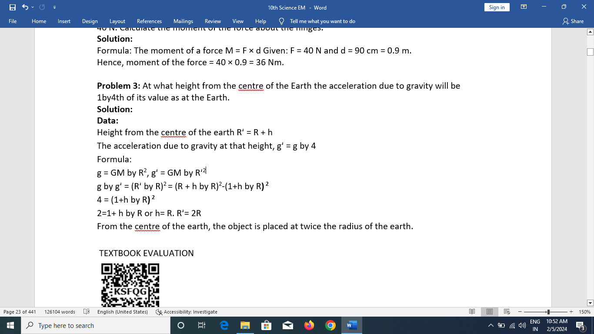
TEXTBOOK EVALUATION
\
ONE. Choose the correct answer
1. Inertia of a body depends on
a) weight of the object
b) acceleration due to gravity of the planet
c) mass of the object
d) Both a & b
2) Impulse is equals to
a) rate of change of momentum
b) rate of force and time
c) change of momentum
d) rate of change of mass
3) Newton’s III law is applicable
a) for a body is at rest
b) for a body in motion
c) both a & b
d) only for bodies with equal masses
4) Plotting a graph for momentum on the Y-axis and time on X-axis. slope of momentum-time graph gives
a) Impulsive force b) Acceleration
c) Force d) Rate of force
5) In which of the following sport the turning of effect of force used
a) swimming b) tennis
c) cycling d) hockey
6) The unit of ‘g’ is m s power -2. It can be also expressed as
a) cm s power -1
b) N kg power -1
c) N m power 2 kg power -1
d) cm power 2 s power -2
7) One kilogram force equals to
a) 9.8 dyne b) 9.8 × 10 power 4 N
c) 98 × 10 power 4 dyne d) 980 dynes
8) The mass of a body is measured on planet Earth as M kg. When it is taken to a planet of radius half that of the Earth then its value will be dash kg
a) 4 M
b) 2M
c) M by 4
d) M
9) If the Earth shrinks to 50% of its real radius its mass remaining the same, the weight of a body on the Earth will
a) decrease by 50%
b) increase by 50%
c) decrease by 25%
d) increase by 300%
10) To project the rockets which of the following
principle(s) is /(are) required?
a) Newton’s third law of motion
b) Newton’s law of gravitation
c) law of conservation of linear momentum
d) both a and c
II. Fill in the blanks
1. To produce a displacement dash is required
2. Passengers lean forward when sudden brake is applied in a moving vehicle. This can be explained by dash
3. By convention, the clockwise moments are taken as dash and the anticlockwise moments are taken as dash
4. dash is used to change the speed of car.
5. A man of mass 100 kg has a weight of dash at the surface of the Earth
III. State whether the following statements are true or false. Correct the statement if it is false:
1. The linear momentum of a system of particles is always conserved.
2. Apparent weight of a person is always equal to his actual weight
3. Weight of a body is greater at the equator and less at the polar region.
4. Turning a nut with a spanner having a short handle is so easy than one with a long handle.
5. There is no gravity in the orbiting space station around the Earth So the astronauts feel weightlessness.
FOUR. Match the following
Column 1 Column II
a. Newton’s first law - propulsion of a rocket
b. Newton’s second law - Stable equilibrium of a body
c. Newton’s third law - Law of force
d. Law of conservation of- Flying nature of bird
linear momentum
FIVE. Assertion & Reasoning Mark the correct choice as
(a) If both the assertion and the reason are true and the reason is the correct explanation of assertion.
(b) If both the assertion and the reason are true, but the reason is not the correct explanation of the assertion.
(c) Assertion is true, but the reason is false.
(d) Assertion is false, but the reason is true.
1. Assertion: The sum of the clockwise moments is equal to the sum of the anticlockwise moments.
Reason: The principle of conservation of momentum is valid if the external force on the system is zero.
2. Assertion: The value of ‘g’ decreases as height and depth increases from the surface of the Earth.
Reason: ‘g’ depends on the mass of the object and the Earth.
SIX. Answer briefly.
1. Define inertia. Give its classification.
2. Classify the types of force based on their application.
3. If a 5 Newton and a 15 Newton forces are acting opposite to one another. Find the resultant force and the direction of action of the resultant force
4. Differentiate mass and weight.
5. Define moment of a couple.
6. State the principle of moments.
7. State Newton’s second law.
8. Why a spanner with a long handle is preferred to tighten screws in heavy vehicles?
9. While catching a cricket ball the fielder lowers his hands backwards. Why?
10. How does an astronaut float in a space shuttle?
SEVEN. Solve the given problems
1. Two bodies have a mass ratio of 3 is to 4 The force applied on the bigger mass produces an acceleration of 12 m s power minus 2. What could be the acceleration of the other body, if the same force acts on it.
2. A ball of mass 1 kg moving with a speed of 10 MS power minus 1 rebounds after a perfect elastic collision with the floor. Calculate the change in linear momentum of the ball.
3. A mechanic unscrew a nut by applying a force of 140 Newton with a spanner of length 40 cm. What should be the length of the spanner if a force of 40 Newton is applied to unscrew the same nut?
4. The ratio of masses of two planets is 2 is to 3 and the ratio of their radii is 4is to 7 Find the ratio of their accelerations due to gravity.
EIGHT. Answer in detail.
1. What are the types of inertia? Give an example for each type.
2. State Newton’s laws of motion?
3. Deduce the equation of a force using Newton’s second law of motion.
4. State and prove the law of conservation of linear momentum.
5. Describe rocket propulsion.
6. State the universal law of gravitation and derive its mathematical expression
7. Give the applications of universal law gravitation.
NINE. HOT Questions
1. Two blocks of masses 8 kg and 2 kg respectively lie on a smooth horizontal surface in contact with one other. They are pushed by a horizontally applied force of 15 Newton. Calculate the force exerted on the 2 kg mass.
2. A heavy truck and bike are moving with the same kinetic energy. If the mass of the truck is four times that of the bike, then calculate the ratio of their momenta. (Ratio of momenta = 2is to1)
3. “Wearing helmet and fastening the seat belt is highly recommended for safe journey” Justify your answer using Newton’s laws of motion.
REFERENCE BOOKS
INTERNET RESOURCES
https://www.grc.nasa.gov
https://www.physicsclassroom.com
https://www. br itannica.com/science/Newtons-law-of-gravitation
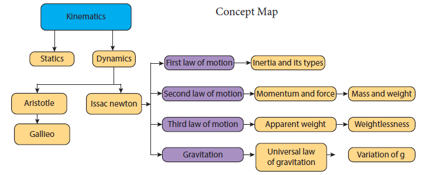
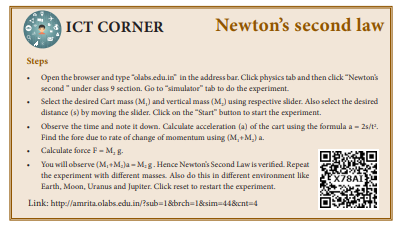
At the end of this lesson, students will be able to:
Light is a form of energy which travels in the form of waves. The path of light is called ray of light and group of these rays are called as beam of light. Any object which gives out light are termed as source of light. Some of the sources emit their own light and they are called as luminous objects. All the stars, including the Sun, are examples for luminous objects. We all know that we are able to see objects with the help of our eyes. But we cannot see any object in a dark room. Can you explain why? If your answer is ‘we need light to see objects’, the next question is ‘if you make the light from a torch to fall on your eyes, will you be able to see the objects?’ Definitely, ‘NO’. We can see the objects only when the light is made to fall on the objects and the light reflected from the objects is viewed by our eyes. You would have studied about the reflection and refraction of light elaborately in your previous classes. In this chapter, we shall discuss about the scattering of light, images formed by convex and concave lenses, human eye and optical instruments such as telescopes and microscopes.
Let us recall the properties of light and the important aspects on refraction of light.
1. Light is a form of energy.
2. Light always travels along a straight line.
3. Light does not need any medium for its propagation. It can even travel through vacuum.
4. The speed of light in vacuum or air is, c = 3 × 10 power 8metre second power –1.
5. Since, light is in the form of waves, it is characterized by a wavelength (λ) and a frequency (ν), which are related by the following equation: c = nu into lambda (c - velocity of light).
6. Different coloured light has different wavelength and frequency.
7. Among the visible light, violet light has the lowest wavelength and red light has the highest wavelength.
8. When light is incident on the interface between two media, it is partly reflected and partly refracted.
When a ray of light travels from one transparent medium into another obliquely, the path of the light undergoes deviation. This deviation of ray of light is called refraction. Refraction takes place due to the difference in the velocity of light in different media. The velocity of light is more in a rarer medium and less in a denser medium. Refraction of light obeys two laws of refraction.
2.2.1 First law of refraction:
The incident ray, the refracted ray of light and the normal to the refracting surface all lie in the same plane.
2.2.2 Second law of refraction:
The ratio of the sine of the angle of incidence and sine of the angle of refraction is equal to the ratio of refractive indices of the two media. This law is also known as Snell’s law.
sin i divided by sin r equal to mew2 divided by mew 1 2.1
Mew = c by v
We know that Sun is the fundamental and natural source of light. If a source of light produces a light of single colour, it is known as a monochromatic source. On the other hand, a composite source of light produces a white light which contains light of different colours. Sun light is a composite light which consists of light of various colours or wavelengths. Another example for a composite source is a mercury vapour lamp. What do you observe when a white light is refracted through a glass prism?
When a beam of white light or composite light is refracted through any transparent media such as glass or water, it is split into its component colours. This phenomenon is called as ‘dispersion of light’.
The band of colours is termed as spectrum. This spectrum consists of following colours: Violet, Indigo, Blue, Green, Yellow, Orange, and Red. These colours are represented by the acronym “VIBGYOR”. Why do we get the spectrum when white light is refracted by a transparent medium? This is because, different coloured lights are bent through different angles. That is the angle of refraction is different for different colours.
Angle of refraction is the smallest for red and the highest for violet. From Snell’s law, we know that the angle of refraction is determined in terms of the refractive index of the medium. Hence, the refractive index of the medium is different for different coloured lights. This indicates that the refractive index of a medium is dependent on the wavelength of the light.
When sunlight enters the Earth’s atmosphere, the atoms and molecules of different gases present in the atmosphere refract the light in all possible directions. This is called as ‘Scattering of light’. In this phenomenon, the beam of light is redirected in all directions when it interacts with a particle of medium. The interacting particle of the medium is called as ‘scatterer’.
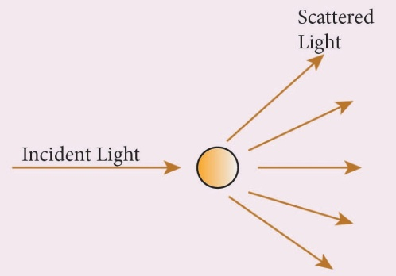
Figure 2.1 Scattering of light
When a beam of light, interacts with a constituent particle of the medium, it undergoes many kinds of scattering. Based on initial and final energy of the light beam, scattering can be classified as,
1) Elastic scattering 2) Inelastic scattering
1) Elastic scattering
If the energy of the incident beam of light and the scattered beam of light are same, then it is called as ‘elastic scattering’.
2) Inelastic scattering
If the energy of the incident beam of light and the scattered beam of light are not same, then it is called as ‘inelastic scattering’. The nature and size of the scatterer results in different types of scattering. They are
Rayleigh scattering
The scattering of sunlight by the atoms or molecules of the gases in the earth’s atmosphere is known as Rayleigh scattering.
Rayleigh’s scattering law
Rayleigh’s scattering law states that, “The amount of scattering of light is inversely proportional to the fourth power of its wavelength”. Amount of scattering ‘S’ proportional 1 by lambta power 4 According to this law, the shorter wavelength colours are scattered much more than the longer wavelength colours.
When sunlight passes through the atmosphere, the blue colour (shorter wavelength) is scattered to a greater extent than the red colour (longer wavelength). This scattering causes the sky to appear in blue colour.
At sunrise and sunset, the light rays from the Sun have to travel a larger distance in the atmosphere than at noon. Hence, most of the blue lights are scattered away and only the red light which gets least scattered reaches us. Therefore, the colour of the Sun is red at sunrise and sunset.
Mie scattering
Mie scattering takes place when the diameter of the scatterer is similar to or larger than the wavelength of the incident light. It is also an elastic scattering. The amount of scattering is independent of wavelength.
Mie scattering is caused by pollen, dust, smoke, water droplets, and other particles in the lower portion of the atmosphere.
Mie scattering is responsible for the white appearance of the clouds. When white light falls on the water drop, all the colours are equally scattered which together form the white light.
Tyndall Scattering
When a beam of sunlight, enters into a dusty room through a window, then its path becomes visible to us. This is because, the tiny dust particles present in the air of the room scatter the beam of light. This is an example of Tyndall Scattering.
The scattering of light rays by the colloidal particles in the colloidal solution is called Tyndall Scattering or Tyndall Effect.
Do you Know
Colloid is a microscopically small substance that is equally dispersed throughout another material. Example: Milk, Ice cream, muddy water, smoke
Raman scattering
When a parallel beam of monochromatic (single coloured) light passes through a gas or liquid or transparent solid, a part of light rays is scattered.
The scattered light contains some additional frequencies (or wavelengths) other than that of incident frequency (or wavelength). This is known as Raman scattering or Raman Effect.
Raman Scattering is defined as “The interaction of light ray with the particles of pure liquids or transparent solids, which leads to a change in wavelength or frequency.”
The spectral lines having frequency equal to the incident ray frequency is called ‘Rayleigh line’ and the spectral lines which are having frequencies other than the incident ray frequency are called ‘Raman lines. The lines having frequencies lower than the incident frequency is called stokes lines and the lines having frequencies higher than the incident frequency are called Anti-stokes lines.
You will study more about Raman Effect in higher classes.
A lens is an optically transparent medium bounded by two spherical refracting surfaces or one plane and one spherical surface.
Lens is basically classified into two types.
They are: (one) Convex Lens (two) Concave Lens
(one) Convex or bi-convex lens: It is a lens bounded by two spherical surfaces such that it is thicker at the centre than at the edges. A beam of light passing through it, is converged to a point. So, a convex lens is also called as converging lens.
(two) Concave or bi-concave Lens: It is a lens bounded by two spherical surfaces such that it is thinner at the centre than at the edges. A parallel beam of light passing through it, is diverged or spread out. So, a concave lens is also called as diverging lens.
Plano-convex lens: If one of the faces of a bi-convex lens is plane, it is known as a Plano convex lens.
Plano-concave lens: If one of the faces of a bi-concave lens is plane, it is known as a Plano concave lens.
All these lenses are shown in Figure 2.2 given below:
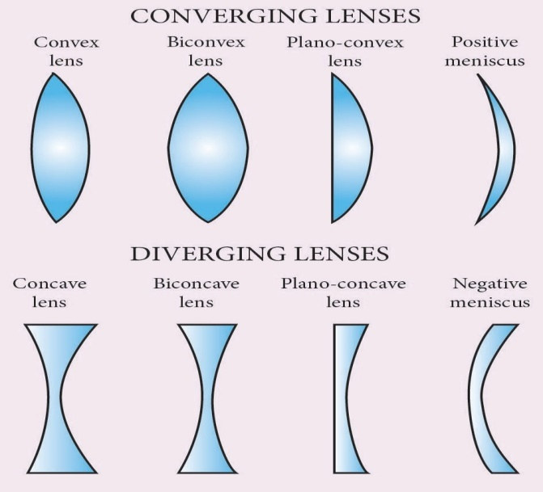
Figure 2.2 Types of lenses
When an object is placed in front of a lens, the light rays from the object fall on the lens. The position, size and nature of the image formed can be understood only if we know certain basic rules.
Rule-1: When a ray of light strikes the convex or concave lens obliquely at its optical centre, it continues to follow its path without any deviation (Figure2.3)
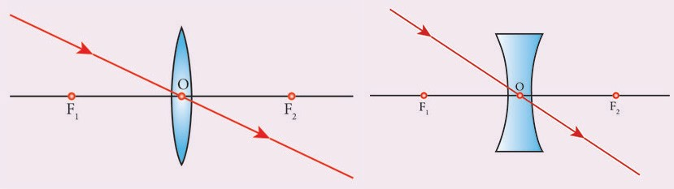
Figure 2.3 Rays passing through the optical centre
Rule-2: When rays parallel to the principal axis strikes a convex or concave lens, the refracted rays are converged to (convex lens) or appear to diverge from (concave lens) the principal focus (Figure2.4).
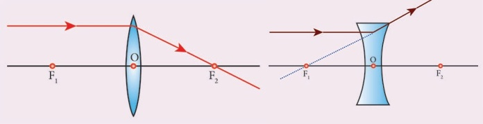
Figure 2.4 Rays passing parallel to the optic axis
Rule-3: When a ray passing through (convex lens) or directed towards (concave lens) the principal focus strikes a convex or concave lens, the refracted ray will be parallel to the principal axis (Figure2.5).
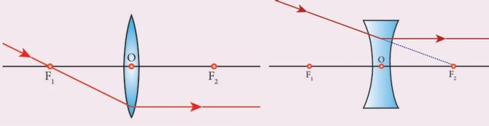
Figure 2.5 Rays passing through or directed towards the principal focus
Let us discuss the formation of images by a convex lens when the object is placed at various positions.
Object at infinity
When an object is placed at infinity, a real image is formed at the principal focus. The size of the image is much smaller than that of the object (Figure2.6).
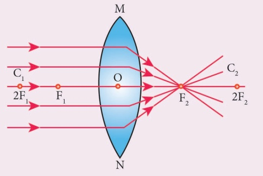
Figure 2.6 Object at infinity
Object placed beyond C(greater than 2F)
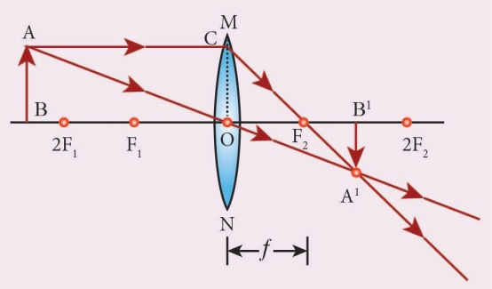
Figure 2.7 Object placed beyond C( greater than 2F)
When an object is placed behind the centre of curvature (beyond C), a real and inverted image is formed between the centre of curvature and the principal focus. The size of the image is the smaller than that of the object (Figure2.7).
Object placed at C
When an object is placed at the centre of curvature, a real and inverted image is formed at the other centre of curvature. The size of the image is the same as that of the object (Figure2.8).
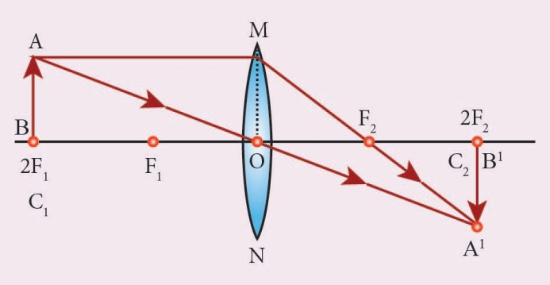
Figure.2.8 Object placed at C
Object placed between F and C
When an object is placed in between the centre of curvature and principal focus, a real and inverted image is formed behind the centre of curvature. The size of the image is bigger than that of the object (Figure2.9).
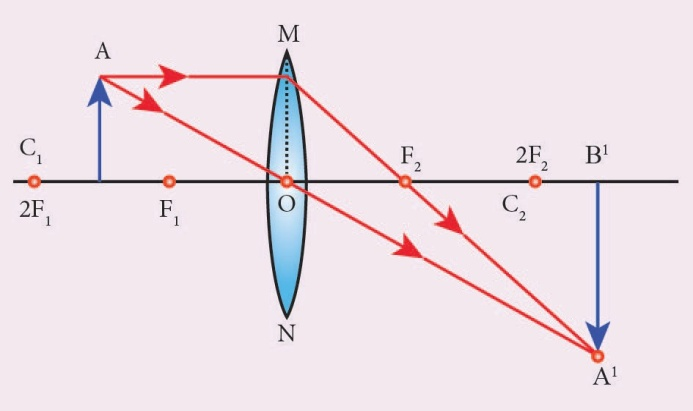
Figure 2.9 Object placed between F and C
Object placed at the principal focus F
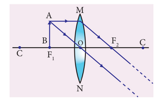
Figure 2.10 Object placed at the principal focus F
When an object is placed at the focus, a real image is formed at infinity. The size of the image is much larger than that of the object (Figure2.10).
Object placed between the principal focus F and optical centre O
When an object is placed in between principal focus and optical centre, a virtual image is formed. The size of the image is larger than that of the object (Figure2.11).
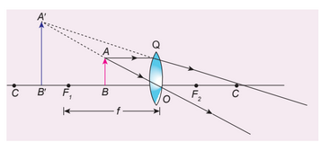
Figure 2.11 Object placed between the principal focus F and optical centre O
1. Convex lenses are used as camera lenses
2. They are used as magnifying lenses
3. They are used in making microscope, telescope and slide projectors
4. They are used to correct the defect of vision called hypermetropia
Let us discuss the formation of images by a concave lens when the object is placed at two possible positions.
Object at Infinity
When an object is placed at infinity, a virtual image is formed at the focus. The size of the image is much smaller than that of the object (Figure2.12).
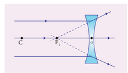
Figure 2.12 Concave Lens-Object at infinity
Object anywhere on the principal axis at a finite distance
When an object is placed at a finite distance from the lens, a virtual image is formed between optical centre and focus of the concave lens. The size of the image is smaller than that of the object (Figure2.13).
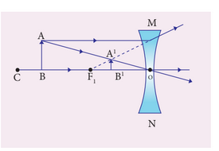
Figure 2.13 Concave Lens-Object at a finite distance
But, as the distance between the object and the lens is decreased, the distance between the image and the lens also keeps decreasing. Further, the size of the image formed increases as the distance between the object and the lens is decreased. This is shown in (figure2.14).
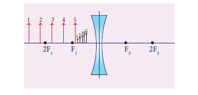
Figure 2.14 Concave lens-Variation in position and size of image with object distance
1. Concave lenses are used as eye lens of ‘GalileanTelescope’
2. They are used in wide angle spy hole in doors.
3. They are used to correct the defect of vision called‘myopia’
Like spherical mirrors, we have lens formula for spherical lenses. The lens formula gives the relationship among distance of the object (u), distance of the image (v) and the focal length (f) of the lens. It is expressed as 1 one by f equal to 1 by v minus 1 by u equation 2.2
It is applicable to both convex and concave lenses. We need to give an at most care while solving numerical problems related to lenses in taking proper signs of different quantities.
Cartesian sign conventions are used for measuring the various distances in the ray diagrams of spherical lenses. According to cartesian sign convention,
1. The object is always placed on the left side of the lens.
2. All the distances are measured from the optical centre of the lens.
3. The distances measured in the same direction as that of incident light are taken as positive.
4. The distances measured against the direction of incident light are taken as negative.
5. The distances measured upward and perpendicular to the principal axis is taken as positive.
6. The distances measured downward and perpendicular to the principal axis is taken as negative.
Like spherical mirrors, we have magnification for spherical lenses. Spherical lenses produce magnification and it is defined as the ratio of the height of the image to the height of an object. Magnification is denoted by the letter ‘m’. If height of the object is h and height of the image is h´, the magnification produced by lens is m = height of the image divided by height of the object = h dash by h equation 2.3
Also, it is related to the distance of the object (u) and the distance of the image (v) as follows:
M = distance of the image divided by distance of the object = v by u equation 2.4
If the magnification is greater than 1, then we get an enlarged image. On the other hand, if the magnification is less than 1, then we get a diminished image.
All lenses are made up of transparent materials. Any optically transparent material will have a refractive index. The lens formula relates the focal length of a lens with the distance of object and image. For a maker of any lens, knowledge of radii of curvature of the lens is required. This clearly indicates the need for an equation relating the radii of curvature of the lens, the refractive index of the given material of the lens and the required focal length of the lens. The lens maker’s formula is one such equation. It is given as one by f equal to mew minus one into one by R1 minus one by R2 equation 2.5
where mew is the refractive index of the material of the lens; R1 and R2 are the radii of curvature of the two faces of the lens; f is the focal length of the lens.
When a ray of light falls on a lens, the ability to converge or diverge these light rays depends on the focal length of the lens. This ability of a lens to converge (convex lens) or diverge (concave lens) is called as its power. Hence, the power of a lens can be defined as the degree of convergence or divergence of light rays. Power of a lens is numerically defined as the reciprocal of its focal length.
p equal to one by f equation 2.6
The SI unit of power of a lens is dioptre. It is represented by the symbol D. If focal length is expressed in ‘m’, then the power of lens is expressed in ‘D’ Thus 1D is the power of a lens, whose focal length is 1metre. 1D = 1metre power minus1.
By convention, the power of a convex lens is taken as positive whereas the power of a concave lens is taken, as negative.
More to Know
The lens formula and lens maker’s formula are applicable to only thin lenses. In the case of thick lenses, these formulae with little modifications are used.
Table2.1Differences between a Convex Lens and a Concave Lens
Serial number |
Convex Lens |
Concave Lens |
1 |
A convex lens is thicker in the middle than at edges. |
A concave lens is thinner in the middle than at edges. |
2 |
It is a converging lens. |
It is a diverging lens. |
3 |
It produces mostly real images. |
It produces virtual images. |
4 |
It is used to treat hypermetropia. |
It is used to treat myopia. |
The human eyes are most valuable and sensitive organs responsible for vision. They are the gateway to the wonderful world.
Structure of the eye
The eye ball is approximately spherical in shape with a diameter of about 2.3 cm. It consists of a tough membrane called sclera, which protects the internal parts of the eye. Important parts of human eye are
Cornea: This is the thin and transparent layer on the front surface of the eyeball as shown in figure 2.15. It is the main refracting surface. When light enters through the cornea, it refracts or bends the light on to the lens.
Iris: It is the coloured part of the eye. It may be blue, brown or green in colour. Every person has a unique colour, pattern and texture. Iris controls amount of light entering into the pupil like camera aperture.
Pupil: It is the centre part of the Iris. It is the pathway for the light to retina.
Retina: This is the back surface of the eye. It is the most sensitive part of human eye, on which real and inverted image of objects is formed.
Eye Lens – It is the important part of human eye. It is convex in nature.
Ciliary muscles – Eye lens is fixed between the ciliary muscles. It helps to change the focal length of the eye lens according to the position of the object.
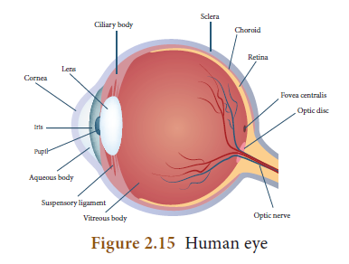
Working of the eye
The transparent layer cornea bends the light rays through pupil located at the centre part of the Iris. The adjusted light passes through the eye lens. Eye lens is convex in nature. So, the light rays from the objects are converged and a real and inverted image is formed on retina. Then, retina passes the received real and inverted image to the brain through optical nerves. Finally, the brain senses it as erects image.
Power of Accommodation
The ability of the eye lens to focus nearby as well as the distant objects is called power of accommodation of the eye. This is achieved by changing the focal length of the eye lens with the help of ciliary muscles. Eye lens is made of a flexible, jelly-like material. By relaxing and contracting the ciliary muscle, the curvature and hence the call length of the eye lens can be altered. When we see distant objects, the ciliary muscle relaxes and makes the eye lens thinner. This increases the focal length of the eye lens. Hence, the distant object can be clearly seen. On the other hand, when we look at a closer object, the focal length of the eye lens is decreased by the contraction of ciliary muscle. Thus, the image of the closer object is clearly formed on the retina.
Persistence of vision
If the time interval between two consecutive light pulses is less than 1 by 16 second, human eye cannot distinguish them separately. It is called persistence of vision.
The far point and near point of the human eye
The minimum distance required to see the objects distinctly without strain is called least distance of distinct vision. It is called as near point of eye. It is 25 cm for normal human eye.
The maximum distance up to which the eye can see objects clearly is called as far point of the eye. It is infinity for normal eye.
A normal human eye can clearly see all the objects placed between 25cm and infinity. But, for some people, the eye loses its power of accommodation. This could happen due to many reasons including ageing. Hence, their vision becomes defective. Let us discuss some of the common defects of human eye.
Myopia
Myopia, also known as short sightedness, occurs due to the lengthening of eye ball. With this defect, nearby objects can be seen clearly but distant objects cannot be seen clearly. The focal length of eye lens is reduced or the distance between eye lens and retina increases. Hence, the far point will not be infinity for such eyes and the far point has come closer. Due to this, the image of distant objects is formed before the retina (Figure 2.16-a). This defect can be corrected using a concave lens (Figure 2.16-b). The focal length of the concave lens to be used is computed as follows:
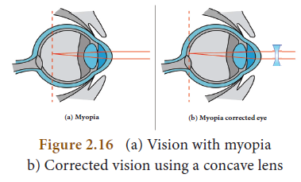
Let a person with myopia eye can see up to a distance x. Suppose that he wants to see all objects farther than this distance, that is up to infinity. Then the focal length of the required concave lens is
f = minus x. If the person can see up to a distance x and he wishes to see up to a distance y, then, the focal length of the required concave lens is, x times y by x minus y equation 2.7
Hypermetropia
Hypermetropia, also known as long sightedness, occurs due to the shortening of eye ball. With this defect, distant objects can be seen clearly but nearby objects cannot be seen clearly. The focal length of eye lens is increased or the distance between eye lens and retina decreases. Hence, the near point will not be at 25cm for such eyes and the near point has moved farther. Due to this, the image of nearby objects is formed behind the retina (Figure 2.17-a). This defect can be corrected using a convex lens (Figure 2.17-b). The focal length of the convex lens to be used is computed as follows:
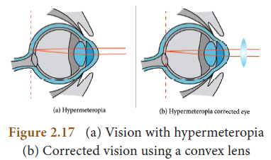
Let a person with hypermetropia eye can see object beyond a distance d. Suppose that he wants to see all objects closer than this distance up to a distance D. Then, the focal length of the required convex lens is f equal to d times D by d minus D. equation 2.8
Presbyopia
Due to ageing, ciliary muscles become weak and the eye-lens become rigid (inflexible) and so the eye loses its power of accommodation.
Because of this, an aged person cannot see the nearby objects clearly. So, it is also called as ‘old age hypermetropia’.
Some persons may have both the defects of vision - myopia as well as hypermetropia. This can be corrected by ‘bifocal lenses’ in which, upper part consists of concave lens (to correct myopia) used for distant vision and the lower part consists of convex lens (to correct hypermetropia) used for reading purposes.
Astigmatism
In this defect, eye cannot see parallel and horizontal lines clearly. It may be inherited or acquired. It is due to the imperfect structure of eye lens because of the development of cataract on the lens, ulceration of cornea, injury to the refracting surfaces, etcetera. Astigmatism can be corrected by using cylindrical lenses.
This is an optical instrument, which helps us to see tiny (very small) objects. It is classified as
1. Simple microscope
2. Compound microscope
Simple Microscope
Simple microscope has a convex lens of short focal length. It is held near the eye to get enlarged image of small object Let an object (A B) is placed at a point within the principal focus (u less than f) of the convex lens and the observer’s eye is placed just behind the lens.
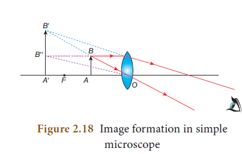
As per this position the convex lens produces an erect, virtual and enlarged image A dash b dash. The image formed is in the same side of the object and the distance equal to the least distance of distinct vision (D) (For normal human eye D = 25 cm).
Uses of Simple microscope
Simple microscopes are used
a) by watch repairers and jewellers.
b) to read small letters clearly.
c) to observe parts of flower, insects etc.
d) to observe finger prints in the field of forensic science.
Compound microscope
Compound microscope is also used to see the tiny objects. It has better magnification power than simple microscope. Magnification power of microscopes can be increased by decreasing the focal length of the lens used. Due to constructional limitations, the focal length of the lens cannot be decreased beyond certain limit. This problem can be solved by using two separate biconvex lenses.
Construction
A compound microscope consists of two convex lenses. The lens with the shorter focal length is placed near the object, and is called as ‘objective lens’ or ‘objective piece’. The lens with larger focal length and larger aperture placed near the observer’s eye is called as ‘eye lens’ or ‘eye piece’. Both the lenses are fixed in a narrow tube with adjustable provision.
Working
The object (AB) is placed at a distance slightly greater than the focal length of objective lens (u >of) u greater than fo. A real, inverted and magnified image (A'B') is formed at the other side of the objective lens.
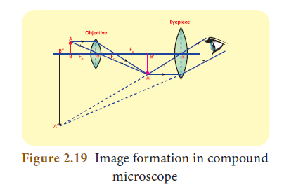
This image behaves as the object for the eye lens. The position of the eye lens is adjusted in such a way, that the image (A'B') A dash B dash falls within the principal focus of the eye piece. This eye piece forms a virtual, enlarged and erect image (A" B") A double dash B double dash on the same side of the object
Compound microscope has 50 to 200 times more magnification power than simple microscope
Travelling Microscope
A travelling microscope is one of the best instruments for measuring very small length with high degree of accuracy at the order of 0.01mm. It works based on the principle of vernier. Its least count is 0.01 mm.
Have you seen the recent lunar eclipse? With our naked eye we can’t visualize the phenomena distinctly. Then, how can we see the distant object in clearer manner? It is possible with telescope.
Telescope is an optical instrument to see the distant objects. The first telescope was invented by Johann Lippershey in 1608. Galileo made a telescope to observe distant stars. He got the idea, from a spectacle maker who one day observed that the distant weather cock appeared magnified through his lens system fitted in his shop. Galileo observed the satellites of Jupiter and the rings of Saturn through his telescope. Kepler invented Telescope in1611 which was fundamentally similar to the astronomical telescope.
Types of Telescopes
According to optical property, it is classified into two groups:
one) refracting telescope two) reflecting telescope
In refracting telescope lenses are used. Galilean telescope, Keplerian telescope, Achromatic refractors, are some refracting telescopes.
In reflecting telescope parabolic mirrors are used Gregorian, Newtonian, Cassegrain telescope are some Reflecting telescopes According to the things which are observed, Astronomical Telescope and Terrestrial Telescopes are the two major types of telescopes.
Astronomical Telescope
An astronomical telescope is used to view heavenly bodies like stars, planets galaxies and satellites.
Terrestrial Telescopes
The image in an astronomical telescope is inverted. So, it is not suitable for viewing objects on the surface of the Earth .There fore, a terrestrial telescope is used. It provides an erect image. The major difference between astronomical and terrestrial telescope is erecting the final image with respect to the object.
Advantages of Telescopes
Disadvantages
Problem 1
Light rays travel from vacuum into a glass whose refractive index is 1.5. If the angle of incidence is 30°, calculate the angle of refraction inside the glass.
According to Snell’s law, sin i by sin r equal to mew2 by mew1
mew 1 sin i equal to mew 2 sin r
here mew 1 equal to 1point zero, meu two equal to one point five , i equal to 30 degree with
in bracket 1.0 into sin 30 degree equal to 1.5 sin r
1 into one by two equal to one point five sin r
sin r equal to one by 2 into one point five equal to 1 by three
equal to 0.333
r equal to sin power minus one into 0 point 333
r equal to 19.45 degree
PROBLEM 2
A beam of light passing through a diverging lens of focal length 0.3m appear to be focused at a distance 0.2m behind the lens. Find the position of the object.

Problem3
A person with myopia can see objects placed at a distance of 4m. If he wants to see objects at a distanceof20m, what should be the focal length and power of the concave lens she must wear?
Solution:
Given that x = 4 meter and y = 20 meter.
Focal length of the correction lens is f = x into y divided by x minus y refer equation . 2.7
f = 4 multiply by 20 divided by 4 minus 20 = 80 divided by minus 16 = minus 5 meter
Power of the correction lens = 1 by f = minus 1 by 5 = minus 0.2 Diaptor
Problem4
For a person with hypermetropia, the near point has moved to 1.5m. Calculate the focal length of the correction lens in order to make his eyes normal.
Given that d=1.5 meter , D=25centimeter =0.25meter (For a normal eye)
From equation 2.8, the focal length of correction lens is
f = d in to D divided by d minus D = 1.5 multiplied by 0.25 divided by 1.5 minus 0.25 = 0.375 divided by 1.25 = 0.3 meter.
ONE-Choose the correct answer
1. The refractive index of four substances A, B, C and D are 1.31, 1.43, 1.33, 2.4 respectively.
The speed of light is maximum in
a) A
b) B
c) C
d) D
2. Where should an object be placed so that a real and inverted image of same size is obtained by a convex lens
a) f
b) 2f
c) infinity
d) between f and f
3. A small bulb is placed at the principal focus of a convex lens. When the bulb is switched on, the lens will produce
a) a convergent beam of light
b) a divergent beam of light
c) a parallel beam of light
d) a coloured beam of light
4. Magnification of a convex lens is
a) Positive
b) negative
c) either positive or negative
d) zero
5. A convex lens forms a real, diminished point sized image at focus. Then the position of the object is at
a) focus
b) infinity
c) at 2f
d) between f and 2f
6. Power of a lens is minus 4D, then its focal length is
a) 4metre
b) minus 40metre
c) minus 0.25 metre
d) minus 2.5 metre
7. In a myopic eye, the image of the object is formed
a) behind the retina
b) on the retina
c) in front of the retina
d) on the blind spot
8. The eye defect ‘presbyopia’ can be corrected by
a) convex lens
b) concave lens
c) convex mirror
d) Bi focal lenses
9. Which of the following lens would you prefer to use while reading small letters found in a dictionary?
a) A convex lens of focal length 5 cm
b) A concave lens of focal length 5 cm
c) A convex lens of focal length 10 cm
d) A concave lens of focal length 10 cm
10. If VB, VG, VR be the velocity of blue, green and red light respectively in a glass prism, then which of the following statement gives the correct relation?
a) VB = VG = VR
b) VB greater than VG greater than VR
c) VB less than VG less than VR
d) VB less than VG greater than VR
TWO. Fill in the blanks:
1. The path of the light is called as dash.
2. The refractive index of a transparent medium is always greater than dash.
3. If the energy of incident beam and the scattered beam are same, then the scattering of light is called as dash scattering.
4. According to Rayleigh’s scattering law, the amount of scattering of light is inversely proportional to the fourth power of its dash.
5. Amount of light entering into the eye is controlled by dash.
THREE. True or False. If false correct it.
1. Velocity of light is greater in denser medium than in rarer medium
2. The power of lens depends on the focal length of the lens
3. Increase in the converging power of eye lens cause ‘hypermetropia’
4. The convex lens always gives small virtual image.
FOUR. Match the following:
|
Column-I |
|
Column-II |
1 |
Retina |
a |
Path way of light |
2 |
Pupil |
b |
Far point comes closer |
3 |
Ciliary muscles |
c |
near point moves away |
4 |
Myopia |
d |
Screen of the eye |
5 |
Hypermetropia |
f |
Power of accommodation |
FIVE. Assertion and reasoning type
Mark the correct choice as
a) If both assertion and reason are true and reason is the correct explanation of assertion.
b) If both assertion and reason are true but reason is not the correct explanation of assertion.
c) Assertion is true but reason is false.
d) Assertion is false but reason is true.
1. Assertion: If the refractive index of the medium is high (denser medium) the velocity of the light in that medium will be small
Reason: Refractive index of the medium is inversely proportional to the velocity of the light
2. Assertion: Myopia is due to the increase in the converging power of eye lens.
Reason: Myopia can be corrected with the help of concave lens.
SIX. Answer Briefly
1. What is refractive index?
2. State Snell’s law.
3. Draw a ray diagram to show the image formed by a convex lens when the object is placed between F and 2F.
4. Define dispersion of light
5. State Rayleigh’s law of scattering
6. Differentiate convex lens and concave lens.
7. What is power of accommodation of eye?
8. What are the causes of ‘Myopia’?
9. Why does the sky appear in blue colour?
10. Why are traffic signals red in colour?
SEVEN. Give the answer in detail
1. List any five properties of light
2. Explain the rules for obtaining images formed by a convex lens with the help of ray diagram.
3. Differentiate the eye defects: Myopia and Hypermetropia
4. Explain the construction and working of a ‘Compound Microscope’.
EIGHT. Numerical Problems:
1. An object is placed at a distance 20cm from a convex lens of focal length 10cm. Find the image distance and nature of the image.
2. An object of height 3cm is placed at 10cm from a concave lens of focal length 15cm. Find the size of the image.
NINE. Higher order thinking (HOT) questions:
1. While doing an experiment for the determination of focal length of a convex lens, Raja Suddenly dropped the lens. It got broken into two halves along the axis. If he continues his experiment with the same lens,
(a) can he get the image? (b) Is there any change in the focal length?
2. The eyes of the nocturnal birds like owl are having a large cornea and a large pupil. How does it help them?
REFERENCE BOOKS
1. Fundamentals of optics by D.R. Khanna and H.R. Gulati, R. Chand & Co.
2. Principles of Physics – Halliday, Resnick & Walker, Wiley Publications, New Delhi.
INTERNET RESOURCES
1. www.physicsabout.com
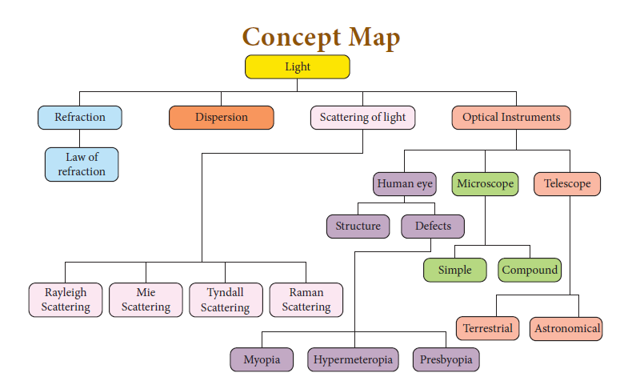
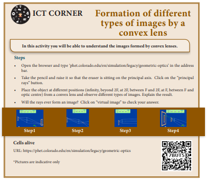
At the end of this lesson, students will be able to
Sun is the primary source of thermal energy for all living organisms. Thermal energy is the cause and temperature are the effect. All living organisms need a particular temperature for their survival. In the kitchen, a container with a steel bottom is placed on the induction stove. Do you know why? All of us have a common man’s understanding of thermal energy and temperature. But, in this chapter, you shall learn about thermal energy and temperature in a scientific manner. We shall also discuss about how thermal energy is transferred and the effects of thermal energy.
Temperature is defined as the degree of hotness of a body. The temperature is higher for a hotter body than for a colder body. It is also be defined as the property which determines whether a body is in equilibrium or not with the surroundings. (Or average kinetic energy of the molecules). Further, temperature is the property, which determines the direction of flow of heat. It is a scalar quantity. The SI unit of temperature is kelvin (K). There are other commonly used units of temperature such as degree Celsius (°C) and degree Fahrenheit (°F).
The temperature measured in relation to absolute zero using the kelvin scale is known as absolute scale temperature. It is also known as the thermodynamic temperature. Each unit of the thermodynamic scale of temperature is defined as the fraction of 1by273.16th part of the thermodynamic temperature of the triple point of water. A temperature difference of 1°C is equal to that of 1Kelvin. Zero Kelvin is the absolute scale of tempter of the body.
The relation between the different types of scale of temperature:
Celsius and Kelvin: K = C + 273,
Fahrenheit and Kelvin: K = open bracket F PLUS 460 close bracket into 5 by 9
0 Kelvin = minus 273°C.
Two or more physical systems or bodies are said to be in thermal equilibrium if there is no net flow of thermal energy between the systems. Heat energy always flows from one body to the other due to a temperature difference between them. Thus, you can define thermal equilibrium in another way. If two bodies are said to be in thermal equilibrium, then, they will be at the same temperature. What will happen if two bodies at different temperatures are brought in contact with one other? There will be a transfer of heat energy from the hot body to the cold body until a thermal equilibrium is established between them. This is depicted in Figure 3.1.
Figure 3.1 Establishing thermal equilibrium
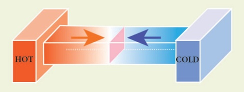
When a cold body is placed in contact with a hot body, some thermal energy is transferred from the hot body to the cold body. As a result, there is some rise in the temperature of the cold body and decrease in the temperature of the hot body. This process will continue until these two bodies attain the same temperature.
If you leave a cup of hot milk on a table for some time, what happens? The hotness of the milk decreases after some time. Similarly, if you keep a bottle of cold water on a table, the water becomes warmer after some time. What do you infer from these observations? In the case of hot milk, there is a flow of energy from the cup of milk to the environment. In the second case, the energy is transferred from the environment to the water bottle. This energy is termed as “thermal energy”.
When a hot object is in contact with another cold object, a form of energy flows from the hot object to the cold object, which is known as thermal energy. Thus, thermal energy is a form of energy which is transferred between any two bodies due to the difference in their temperatures. Thermal energy is also known as 'heat energy' or simply 'heat'.
Heat energy is the agent, which produces the sensation of warmth and makes bodies hot. The process in which heat energy flows from a body at a higher temperature to another object at lower temperature is known as heating. This process of transmission of heat may be done in any of the ways like conduction, convection or radiation. Heat is a scalar quantity. The SI unit of heat energy absorbed or evolved is joule (J)
During the process of transferring heat energy, the body at lower temperature is heated while the body at higher temperature is cooled. Thus, sometimes, this process of transfer of heat energy is termed as 'cooling'. But, in most of the cases the term 'heating' is used instead of 'cooling'. When the thermal energy is transferred from one body to another, this results in the rise or lowering of the temperature of either of the bodies.
Heat gained = Heat lost
Though the SI unit of heat energy is joule, there are some other commonly used units.
Calorie: One calorie is defined as the amount of heat energy required to rise the temperature of 1 gram of water through 1°C.
Kilocalorie: One kilocalorie is defined as the amount of heat energy required to rise the temperature of 1 kilogram of water through 1°C.
When a certain amount of heat energy is given to a substance, it will undergo one or more of the following changes:
The rise in temperature is in proportion to the amount of heat energy supplied. It also depends on the nature and mass of the substance. About the rise in temperature and the change of state, you have studied in previous classes. In the following section, we shall discuss about the expansion of substances due to heat.
When heat energy is supplied to a body, there can be an increase in the dimension of the object. This change in the dimension due to rise in temperature is called thermal expansion of the object. The expansion of liquids (example mercury) can be seen when a thermometer is placed in warm water. All forms of matter (solid, liquid and gas) undergo expansion on heating.
When a solid is heated, the atoms gain energy and vibrate more vigorously. This results in the expansion of the solid. For a given change in temperature, the extent of expansion is smaller in solids than in liquids and gases. This is due to the rigid nature of solids.
The different types of expansion of solid are listed and explained below:
When a body is heated or cooled, the length of the body changes due to change in its temperature. Then the expansion is said to be linear or longitudinal expansion.
The ratio of increase in length of the body per degree rise in temperature to its unit length is called as the coefficient of linear expansion. The SI unit of Coefficient of Linear expansion is Kelvin power minus one . The value of coefficient of linear expansion is different for different materials.
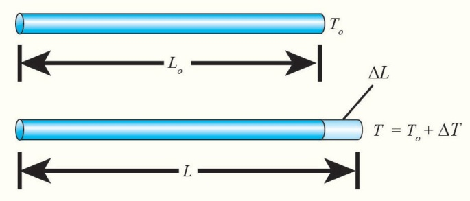
Figure 3.2 Linear expansion
The equation relating the change in length and the change in temperature of a body is given below:
delta L by L o equal to alpha L into delta T
Delta L – Change in length (Final length minus original length)
L o - Original length
DELTA T – Change in temperature (Final temperature minus Initial temperature)
Alpha L - Coefficient of linear expansion.
If there is an increase in the area of a solid object due to heating, then the expansion is called superficial or areal expansion.
Superficial expansion is determined in terms of coefficient of superficial expansion. The ratio of increase in area of the body per degree rise in temperature to its unit area is called as coefficient of superficial expansion. Coefficient of superficial expansion is different for different materials. The SI unit of Coefficient of superficial expansion is Kelvin power minus one
The equation relating to the change in area and the change in temperature is given below:
Figure 3.3 Superficial expansion
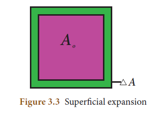
Delta A by A o equal to alpha A into delta T
Delta A - Change in area (Final area minus Initial area)
A o- Original area
Delta T – Change in temperature (Final temperature minus Initial temperature)
Alpha A- Coefficient of superficial expansion.
If there is an increase in the volume of a solid body due to heating, then the expansion is called cubical or volumetric expansion.
As in the cases of linear and areal expansion, cubical expansion is also expressed in terms of coefficient of cubical expansion. The ratio of increase in volume of the body per degree rise in temperature to its unit volume is called as coefficient of cubical expansion. This is also measured in Kelvin power minus one
Figure 3.4 Cubical expansion
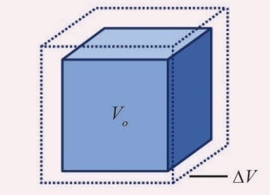
The equation relating to the change in volume and the change in temperature is given below:
DeltaV by V o equal to alpha V times delta T
Delta V - Change in volume (Final volume minus Initial volume)
V o - Original volume
DeltaT - Change in temperature (Final temperature minus Initial temperature)
Alpha V- Coefficient of cubical expansion.
Different materials possess different coefficient of cubical expansion. Table 3.1 gives the coefficient of cubical expansion for some common materials.
Table 3.1 Coefficient of cubical expansion of some materials
Serial number |
Name of the material |
Coefficient of cubic expansion(K power minus one) |
1 |
Aluminium |
7 × ten power minus five |
2 |
Brass |
6 × ten power minus five |
3 |
Glass |
2.5× ten power minus five |
4 |
Water |
20.7× ten power minus five |
5 |
Mercury |
18.2× ten power minus five |
When heated, the atoms in a liquid or gas gain energy and are forced further apart. The extent of expansion varies from substance to substance. For a given rise in temperature, a liquid will have more expansion than a solid and a gaseous substance has the highest expansion when compared with the other two. The coefficient of cubical expansion of liquid is independent of temperature whereas its value for gases depends on the temperature of gases.
When a liquid is heated, it is done by keeping the liquid in some container and supplying heat energy to the liquid through the container. The thermal energy supplied will be partly used in expanding the container and partly used in expanding the liquid. Thus, what we observe may not be the actual or real expansion of the liquid. Hence, for liquids, we can define real expansion and apparent expansion.
If a liquid is heated directly without using any container, then the expansion that you observe is termed as real expansion of the liquid.
Coefficient of real expansion is defined as the ratio of the true rise in the volume of the liquid per degree rise in temperature to its unit volume. The SI unit of coefficient of real expansion is Kelvin power minus one.
Heating a liquid without using a container is not possible. Thus, in practice, you can heat any liquid by pouring it in a container. A part of thermal energy is used in expanding the container and a part is used in expanding the liquid. Thus, what you observe is not the actual or real expansion of the liquid. The expansion of a liquid apparently observed without considering the expansion of the container is called the apparent expansion of the liquid.
Coefficient of apparent expansion is defined as the ratio of the apparent rise in the volume of the liquid per degree rise in temperature to its unit volume. The SI unit of coefficient of apparent expansion is Kelvin power minus one.
To start with, the liquid whose real and apparent expansion is to be determined is poured in a container up to a level. Mark this level as L1. Now, heat the container and the liquid using a burner as shown in the Figure 3.5. Initially, the container receives the thermal energy and it expands. As a result, the volume of the liquid appears to have reduced. Mark this reduced level of liquid as L2.
On further heating, the thermal energy supplied to the liquid through the container results in the expansion of the liquid. Hence, the level of liquid rises to L3. Now, the difference between the levels L1 and L3 is called as apparent expansion, and the difference between the levels L2 and L3 is called real expansion. The real expansion is always more than that of apparent expansion.
Figure 3.5 Real and apparent expansion of liquid
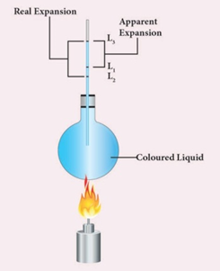
Real expansion = L 3 minus L 2
Apparent expansion = L 3 minus L 1
The three fundamental laws which connect the relation between pressure, volume and temperature are as follows:
1. Boyle’s Law
2. Charles's law
3. Avogadro’s law
When the temperature of a gas is kept constant, the volume of a fixed mass of gas is inversely proportional to its pressure. This is shown in Figure 3.6.
P proportional one by V
Figure 3.6 Variation of volume with pressure
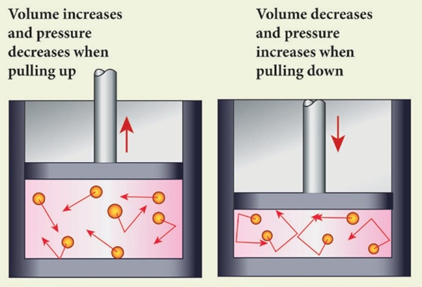
In other words, for an invariable mass of a perfect gas, at constant temperature, the product of its pressure and volume is a constant. that is PV = constant
Charles’s law was formulated by a French scientist Jacques Charles. According to this law, When the pressure of gas is kept constant, the volume of a gas is directly proportional to the temperature of the gas.
V directly proportional to T
or V by T equal to constant
Avogadro's law states that at constant pressure and temperature, the volume of a gas is directly proportional to number of atoms or molecules present in it.
that is V proportional n
or V by n is equal to a constant
Avogadro’s number (NA) is the total number of atoms per mole of the substance. It is equal to Six point zero two three into 10 power twenty three per mol.
Gases are classified as real gases and ideal gases.
If the molecules or atoms of gases interact with each other with a definite amount of intermolecular or inter atomic force of attraction, then the gases are said to be real gases. At very high temperature or low pressure, a real gas behaves as an ideal gas because in this condition there is no interatomic or intermolecular force of attraction.
If the atoms or molecules of a gas do not interact with each other, then the gas is said to be an ideal gas or a perfect gas.
Actually, in practice, no gas is ideal. The molecules of any gas will have a certain amount of interaction among them. But these interactions are weaker when the pressure is low or the temperature is high because the interatomic or intermolecular forces of attraction are weak in ideal gas. Hence, a real gas at low pressure or high temperature can be termed as a perfect gas.
Ideal gases obey Boyle’s law, Charles’s law and Avogadro’s law. All these laws state the relationship between various properties of a gas such as pressure (P), volume (V), temperature(T) and number of atoms (n). In a given state of the gas, all these parameters will have a definite set of values. When there is a change in the state of the gas, any one or more of these parameters change its value. The above said laws relate these changes.
The ideal gas equation is an equation, which relates all the properties of an ideal gas. An ideal gas obeys Boyle’s law and Charles’ law and Avogadro’s law.
According to Boyle’s law,
PV is equal to a constant equation (3.1)
According to Charles’s law,
V by T is equal to a constant equation 3.2
According to Avogadro’s law,
V by n is equal to a constant equation 3.3
After combining equations (3.1), (3.2) and (3.3), you can get the following equation.
PV by n T is equal to constant equation 3.4
The above relation is called the combined law of gases. If you consider a gas, which contains moles of the gas, the number of atoms contained will be equal to times the Avogadro number, NA.
That is n is equal to mew N A equation 3.5
Using equation (3.5), equation (3.4) can be written as
PV by mew N A T is equal to a constant
The value of the constant in the above equation is taken to be k B, which is called as Boltzmann constant (1.38 times 10 power minus 23 joule kelvin power minus one. Hence, we have the following equation:
PV by mew N A T is equal to K B
PV is equal to mew N A K B T
Here, mew N A k B is equal to R, which is termed as universal gas constant whose value is 8.31 joule mole power minus one kelvin power minus one.
PV is equal to RT equation (3.6)
Ideal gas equation is also called as equation of state because it gives the relation between the state variables and it is used to describe the state of any gas.
Points to Remember
Example 1
A container whose capacity is 70 ml is filled with a liquid up to 50 ml. Then, the liquid in the container is heated. Initially, the level of the liquid falls from 50 ml to 48.5 ml. Then we heat more, the level of the liquid rises to 51.2 ml. Find the apparent and real expansion.
Data:
Level of the liquid L1 = 50 ml
Level of the liquid L2 = 48.5 ml
Level of the liquid L3 = 51.2 ml
Apparent expansion = L3 minus L1
= 51.2 ml minus 50 ml = 1.2ml
Real expansion = L3 minus L2
= 51.2 ml minus 48.5ml = 2.7ml
So, Real expansion greater than apparent expansion
Example 2
Keeping the temperature as constant, a gas is compressed four times of its initial pressure. The volume of gas in the container changing from 20cc (V1 cc) to V2 cc. Find the final volume V2.
Data:
Initial pressure (P1) = P
Final Pressure (P2) = 4P
Initial volume (V1) = 20cc = 20 cm power 3
Final volume (V2) =?
Using Boyle's Law, PV = constant
P1V1 is equal to P2V2
V2 is equal to P1 by P2 into V1
V2 is equal to P by 4P in to 20 centimetre cube
V2 is equal to 5 centimetre cube
1. The value of universal gas constant
a. 3.81 joule mole power minus 1 kelvin power minus 1
b. 8.03 joule mole power minus 1 kelvin power minus 1
c. 1.38 joule mole power minus 1 kelvin power minus 1
d. 8.31 joule mole power minus 1 kelvin power minus 1
2. If a substance is heated or cooled, the change in mass of that substance is
a. Positive
b. Negative
c. Zero
d. none of the above
3. If a substance is heated or cooled, the linear expansion occurs along the axis of
a. X or X
b. Y or Y
c. both (a) and (b)
d. (a) or (b)
4. Temperature is the average dash of the molecules of a substance
a. difference in Kinetic energy and Potential energy.
b. sum of potential energy and kinetic energy.
c. difference in Thermal energy and Potential energy.
d. difference in Kinetic energy and thermal energy.
5. In the Given diagram, the possible direction of heat energy transformation is
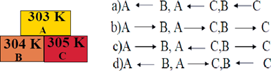
1. The value of Avogadro number dash.
2. The temperature and heat are dash quantities
3. One calorie is the amount of heat energy required to raise the temperature of dash of water through dash.
4. According to Boyle’s law, the shape of the graph between pressure and reciprocal of volume is dash
THREE. State whether the following statements are true or false, if false explain why?
1. For a given heat in liquid, the apparent expansion is more than that of real expansion.
2. Thermal energy always flows from a system at higher temperature to a system at lower temperature.
3. According to Charles’s law, at constant pressure, the temperature is inversely proportional to volume.
Column-ONE Column-TWO
1. Linear expansion (a) change in volume
2. Superficial expansion (b) hot body of cold body
3. Cubical expansion (c) 1.381 times 10 to the power minus 23 Joule kelvin power minus 1
4. Heat trans formation (d)change in length
5. Boltzmann constant (e) change in area
a. Both the assertion and the reason are true and the reason is the correct explanation of the assertion.
b. Both the assertion and the reason are true but the reason is not the correct explanation of the assertion.
c. Assertion is true but the reason is false.
d. Assertion is false but the reason is true.
1. Assertion: There is no effects on other end when one end of the rod is only heated.
Reason: Heat always flows from a region of lower temperature to higher temperature of the rod.
2. Assertion: Gas is highly compressible than solid and liquid
Reason: Interatomic or intermolecular distance in the gas is comparably high.
SIX. Answer briefly
1. Define one calorie.
2. Distinguish between linear, Arial and superficial expansion.
3. What is co-efficient of cubical expansion?
4. State Boyle’s law
5. State-the law of volume
6. Distinguish between ideal gas and real gas.
7. What is co-efficient of real expansion?
8. What is co-efficient of apparent expansion?
SEVEN. Numerical problems
1. Find the final temperature of a copper rod. Whose area of cross section changes from 10 m power2 to 11 m power 2 due to heating. The copper rod is initially kept at 90 Kelvin. (Coefficient of superficial expansion is 0.0021 per K)
2. Calculate the coefficient of cubical expansion of a zinc bar. Whose volume is increased
0.25 m power 3 from 0.3 m power 3 due to the change in its temperature of 50 Kelvin.
EIGHT. Answer in detail
1. Derive the ideal gas equation.
2. Explain the experiment of measuring the real and apparent expansion of a liquid with a neat diagram.
NINE. HOT question
If you keep ice at 0° C and water at 0°C in either of your hands, in which hand you will feel more chillness? Why?
REFERENCE BOOKS
INTERNET RESOURCE
http://aplusphysics.com/courses/honors/ thermo/thermal_physics.html
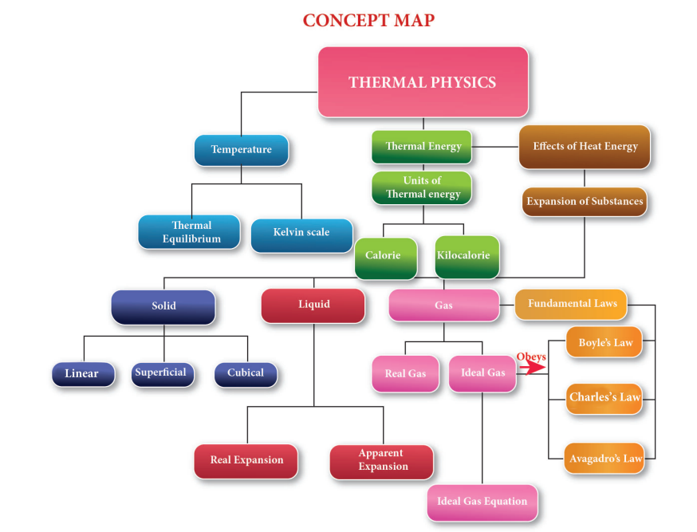
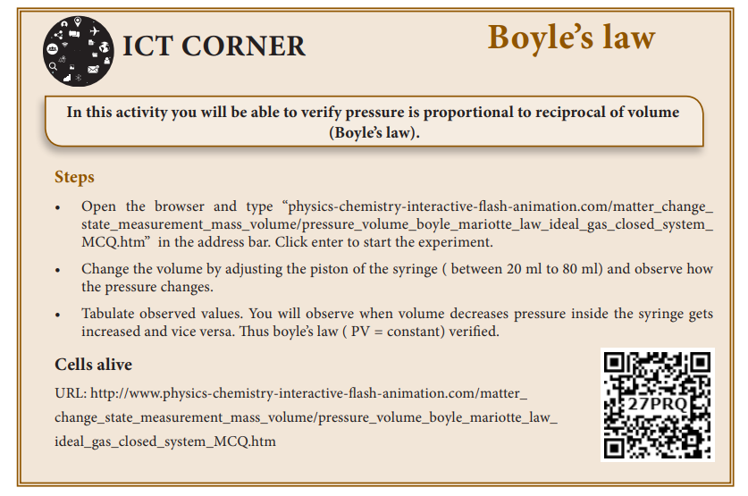
At the end of this lesson, students will be able to:
You have already learnt about electricity in your lower classes, haven’t you? Well, electricity deals with the flow of electric charges through a conductor. As a common term it refers to a form of energy. The usage of electric current in our day-to-day life is very important and indispensable. You are already aware of the fact that it is used in houses, educational in situations, hospitals, industries, etcetera. Therefore, its generation and transmission become a very crucial aspect of our life. In this lesson you will learn various terms used in understanding the concept of electricity. Eventually, you will realise the importance of the applications of electricity in day-to-day situations.
The motion of electric charges (electrons) through a conductor (example, copper wire) will constitute an electric current. This is similar to the flow of water through a channel or flow of air from a region of high pressure to a region of low pressure. In a similar manner, the electric current passes from the positive terminal (higher electric potential) of a battery to the negative terminal (lower electric potential) through a wire as shown in the Figure 4.1
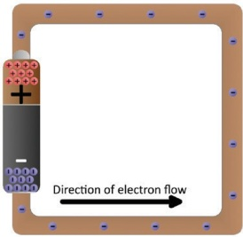
Figure 4.1 Electron flow
Electric current is often termed as ‘current’ and it is represented by the symbol ‘I’. It is defined as the rate of flow of charges in a conductor. This means that the electric current represents the amount of charges flowing in any cross section of a conductor (say a metal wire) in unit time. If a net charge ‘Q’ passes through any cross section of a conductor in time ‘t’, then the current flowing through the conductor is I is equal to Q by T equation 4.1
4.1.2 SI unit of electric current
The SI unit of electric current is ampere (A). The current flowing through a conductor is said to be one ampere, when a charge of one coulomb flows across any cross-section of a conductor, in one second. Hence, 1 ampere is equal to one coulomb divided by one second.
Solved Problem 1
A charge of 12 coulomb flows through a bulb in 5 second. What is the current through the bulb?
Solution:
Charge Q = 12 Coulomb, Time t = 5 second. Therefore, current I = Q by t = 12 by 5 = 2.4 Amphere
Table 4.1 Symbols of some components of a circuit
COMPONENT |
USE OF THE COMPONENT |
SYMBOL USED |
Resistor |
Used to fix the magnitude of the current through a circuit |
|
Variable resistor or Rheostat |
Used to select the magnitude of the current through a circuit. |
|
Ammeter |
Used to measure the current. |
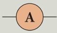 |
Voltmeter |
Used to measure the potential difference. |
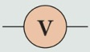 |
Galvanometer |
Used to indicate the direction of current. |
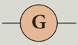 |
A diode |
It is used in electronic devises. |
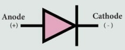 |
Light Emitting Diode (LED) |
It is used in seven segment display. |
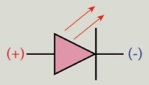 |
Ground connection |
Used to provide protection to the electrical components. It also serves as a reference point to measure the electric potential. |
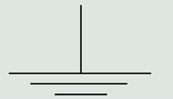 |
An electric circuit is a closed conducting loop (or) path, which has a network of electrical components through which electrons are able to flow. This path is made using electrical wires so as to connect an electric appliance to a source of electric charges (battery). A schematic diagram of an electric circuit comprising of a battery, an electric bulb, and a switch is given in Figure 4.2.
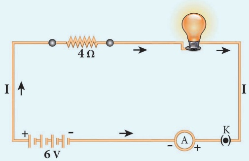
Figure 4.2 A simple electric circuit
In this circuit, if the switch is ‘on’, the bulb glows. If it is switched off, the bulb does not glow. Therefore, the circuit must be closed in order that the current passes through it. The potential difference required for the flow of charges is provided by the battery. The electrons flow from the negative terminal to the positive terminal of the battery.
By convention, the direction of current is taken as the direction of flow of positive charge (or) opposite to the direction of flow of electrons. Thus, electric current passes in the circuit from the positive terminal to the negative terminal.
The electric circuit given in Figure4.2 consists of different components, such as a battery, a switch and a bulb. All these components can be represented by using certain symbols. It is easier to represent the components of a circuit using their respective symbols.
The symbols that are used to represent some commonly used components are given in Table 4.1. The uses of these components are also summarized in the table.
You are now familiar with the water current and air current. You also know that there must be a difference in temperature between two points in a solid for the heat to flow in it. Similarly, a difference in electric potential is needed for the flow of electric charges in a conductor. In the conductor, the charges will flow from a point in it, which is at a higher electric potential to a point, which is at a lower electric potential.
4.3.1 Electric Potential
The electric potential at a point is defined as the amount of work done in moving a unit positive charge from infinity to that point against the electric force.
4.3.2 Electric Potential Difference
The electric potential difference between two points is defined as the amount of work done in moving a unit positive charge from one point to another point against the electric force.
Figure 4.3 Electric potential
Suppose you have moved a charge Q from a point A to another point B. Let ‘W’ be the work done to move the charge from A to B. Then, the potential difference between the points A and B is given by the following expression:
Potential difference V is equal to Work done divided by Charge equation 4.2
Potential difference is also equal to the difference in the electric potential of these two points. If VA and VB represent the electric potential at the points A and B respectively, then, the potential difference between the points A and B is given by:
V = VA minus VB (if VA is more than VB)
V = VB minus VA (if VB is more than VA)
4.3.3 Volt
The SI unit of electric potential or potential difference is volt (V) The potential difference between two points is one volt, if one joule of work is done in moving one coulomb of charge from one point to another against the electric force.
1volt = one joule by one coulomb
Solved Problem 2
The work done in moving a charge of 10 Coulomb across two points in a circuit is 100 Joule. What is the potential difference between the points?
Solution:
Charge, Q = 10 Coulomb Work Done, W = 100 Joule
Potential Difference V = W by Q is equal to 100 by 10
Therefore, V = 10 volt
A German physicist, George Simon Ohm established the relation between the potential difference and current, which is known as Ohm’s Law. This relationship can be understood from the following activity.
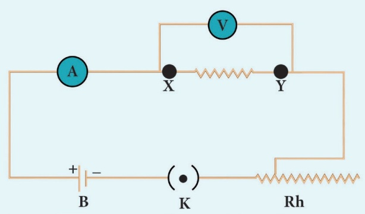
Figure 4.4 Electric circuit to understand Ohm’s law
According to Ohm’s law, at a constant temperature, the steady current ‘I’ flowing through a conductor is directly proportional to the potential difference ‘V’ between the two ends of the conductor.
I proportional to V. Hence, I by V is equal to constant
The value of this proportionality constant is found to be one by R
Therefore, I is equal to open bracket 1 by R close bracket V
V = I R equation (4.3)
Here, R is a constant for a given material (say Nichrome) at a given temperature and is known as the resistance of the material. Since, the potential difference V is proportional to the current I, the graph between V and I is a straight line for a conductor, as shown in the Figure 4.5.
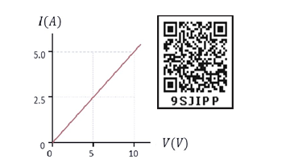
V (V)Figure 4.5 Relation between potential difference and current
In Figure 4.4, a Nichrome wire was connected between X and Y. If you replace the Nichrome wire with a copper wire and conduct the same experiment, you will notice a different current for the same value of the potential difference across the wire. If you again replace the copper wire with an aluminium wire, you will get another value for the current passing through it. From equation (4.3), you have learnt that V by I must be equal to the resistance of the conductor used. The variations in the current for the same values of potential difference indicate that the resistance of different materials is different. Now, the primary question is, “what is resistance?”
Resistance of a material is its property to oppose the flow of charges and hence the passage of current through it. It is different for different materials.
From Ohm’s Law V by I is equal to R
The resistance of a conductor can be defined as the ratio between the potential difference across the ends of the conductor and the current flowing through it.
The SI unit of resistance is ohm and it is represented by the symbol Ω.(ohm)
Resistance of a conductor is said to be one ohm if a current of one ampere flows through it when a potential difference of one volt is maintained across its ends.
1 ohm is equal to one volt by one ampere
Solved Problem 3
Calculate the resistance of a conductor through which a current of 2 Ampere passes, when the potential difference between its ends is 30 Volt.
Solution:
Current through the conductor I = 2 Ampere, Potential Difference V = 30 Volt
From Ohm’s Law: R is equal to V by I
Therefore, R = 30 by 2 is equal to 15 ohm
You can verify by doing an experiment that the resistance of any conductor ‘R’ is directly proportional to the length of the conductor ‘L’ and is inversely proportional to its area of cross section ‘A’.
R is proportional to L
R is proportional to one by A
hence, R is proportional to L by A
therefore, R is equal to rho into L by A. equation 4.4
Where, ρ (rho) is a constant, called as electrical resistivity or specific resistance of the material of the conductor.
From equation (4.4), rho is equal to R A by L
If L = 1 metre, A = 1 meter square then, from the above equation rho is equal to R
Hence, the electrical resistivity of a material is defined as the resistance of a conductor of unit length and unit area of cross section. Its unit is ohm metre.
Electrical resistivity of a conductor is a measure of the resisting power of a specified material to the passage of an electric current. It is a constant for a given material.
Conductance of a material is the property of a material to aid the flow of charges and hence, the passage of current in it. The conductance of a material is mathematically defined as the reciprocal of its resistance (R). Hence, the conductance ‘G’ of a conductor is given by
G is equl to one by R. equation 4.5
Its unit is ohm power minus one it is also represented as mho.
The r reciprocal of electrical resistivity of a material is called its electrical conductivity. Sigma is equal to one by rho equation 4.6
Its unit is ohm power minus 1 metre power minus 1. It is also represented as mho metre power minus 1. The conductivity is a constant for a given material. Electrical conductivity of a conductor is a measure of its ability to pass the current through it. Some materials are good conductors of electric current. Example: copper, aluminium, etcetera. While some other materials are non- conductors of electric current (insulators). Example: glass, wood, rubber, etcetera
Conductivity is more for conductors than for insulators. But the resistivity is less for conductors than for insulators. The resistivity of some commonly used materials is given in Table 4.2.
Table 4.2 Resistivity of some materials
NATURE OF THE MATERIAL |
MATERIAL |
RESISTIVITY (ohm meter) |
Conductor |
Copper |
1.62 into ten power minus eight |
Nickel |
6.84 into ten power minus eight |
|
Chromium |
12.9 into ten power minus eight |
|
Insulator |
Glass |
10 power 10 to 10 power fourteen |
Rubber |
10 power thirteen to 10 power sixteen |
Solved Problem 4
The resistance of a wire of length 10 metre is 2 ohms If the area of cross section of the wire is
2 into 10 power minus 7 metre power 2, determine its one resistivity
two conductance and three conductivity
Solution:
Given: Length, L = 10 metre, Resistance, R = 2 ohm and Area, A = 2 into 10 power minus 7 metre square
resistivity rho is equal to R into A by L is equal to 2 into 2 into 10 power minus 7 by 10 is equal to 4 into 10 power minus 8 ohm meter.
conductance, G is equal to one by R equal to one by two is equal to zero point five mho.
conductivity, sigma is equal to one by rho is equal to one by four into ten power minus eight
equal to zero point two five into ten power eight mho meter power minus one.
So far, you have learnt how the resistance of a conductor affects the current through a circuit. You have also studied the case of the simple electric circuit containing a single resistor. Now in practice, you may encounter a complicated circuit, which uses a combination of many resistors. This combination of resistors is known as ‘system of resistors’ or ‘grouping of resistors. Resistors can be connected in various combinations. The two basic methods of joining resistors together are:
a) Resistors connected in series, and b) Resistors connected in parallel.
In the following sections, you shall compute the effective resistance when many resistors having different resistance values are connected in series and in parallel.
A series circuit connects the components one after the other to form a ‘single loop’. A series circuit has only one loop through which current can pass. If the circuit is interrupted at any point in the loop, no current can pass through the circuit and hence no electric appliances connected in the circuit will work. Series circuits are commonly used in devices such as flashlights. Thus, if resistors are connected end to end, so that the same current passes through each of them, then they are said to be connected in series.
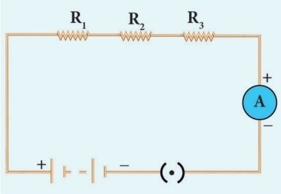
Figure 4.6 Series connection of resistors
Let, three resistances R1, R2 and R3 be connected in series (Figure 4.6). Let the current flowing through them be I. According to Ohm’s Law, the potential differences V1, V2 and V3 across R1, R2 and R3 respectively, are given by:
V1 = I R1 (4.7)
V2 = I R2 (4.8)
V3 = I R3 (4.9)
The sum of the potential differences across the ends of each resistor is given by:
V = V1 + V2 + V3
Using equations (4.7), (4.8) and (4.9), we get V = I R1 + I R2 + I R3 (4.10)
The effective resistor is a single resistor, which can replace the resistors effectively, so as to allow the same current through the electric circuit. Let, the effective resistance of the series-combination of the resistors, be RS. Then,
V = I RS (4.11)
Combining equations (4.10) and (4.11), you get,
I RS = I R1 + I R2 + I R3
RS = R1 + R2 + R3 (4.12)
Thus, you can understand that when a number of resistors are connected in series, their equivalent resistance or effective resistance is equal to the sum of the individual resistances. When ‘n’ resistors of equal resistance R are connected in series, the equivalent resistance is ‘n R’.
Tht is , RS is equal to n R
The equivalent resistance in a series combination is greater than the highest of the individual resistances.
Solved Problem5
Three resistors of resistances 5 ohm., 3 ohm and 2 ohms are connected in series with 10 V battery. Calculate their effective resistance and the current flowing through the circuit.
Solution:
R1 = 5 ohm, R2 = 3 ohm, R3 = 2 ohm, V = 10 Volt
R s = R1 + R2 + R3, Rs = 5 + 3 + 2 = 10, hence R s = 10 Ω
The current, I = V by R s equal to ten by ten equal to 1 ampere.
A parallel circuit has two or more loops through which current can pass. If the circuit is disconnected in one of the loops, the current can still pass through the other loop(s). The wiring in a house consists of parallel circuits.
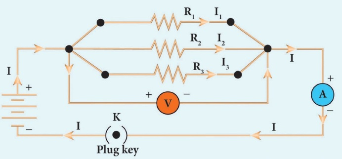
Figure 4.7 Parallel connections of resistors
Consider that three resistors R1, R2 and R3 are connected across two common points A and B. The potential difference across each resistance is the same and equal to the potential difference between A and B. This is measured using the voltmeter. The current I arriving at A divides into three branches I1, I2 and I3 passing through R1, R2 and R3 respectively.
According to the Ohm’s law, you have,
I one is equal to V by R one equation 4.13
 I2 is equal to V by R two equation 4.14
I2 is equal to V by R two equation 4.14
I3 is equal to V by R three equation 4.15
The total current through the circuit is given by
I =I 1 + I 2 + I 3
Using equations (4.13), (4.14) and (4.15), you get
I is equal to V by R one plus V by R two plus V by R three equation 4.16
Let the effective resistance of the parallel combination of resistors be R p. Then,
I is equal to V by R p equation 4.17
Combining equations (4.16) and (4.17), you have
V by Rp is equal to V by R one plus V by R2 plus V by R3
One by R p = 1 by R 1 + 1 by R 2 + 1 by R 3 equation 4.18
Thus, when a number of resistors are connected in parallel, the sum of the reciprocals of the individual resistances is equal to the reciprocal of the effective or equivalent resistance. When ‘n’ resistors of equal resistances R are connected in parallel, the equivalent resistance is R by n.
that is one by R p is equal to one by R plus one by R plus one by R and so on plus 1 by R is equal to n by R
hence Rp is equal to R by n
The equivalent resistance in a parallel combination is less than the lowest of the individual resistances.
If you consider the connection of a set of parallel resistors that are connected in series, you get a series – parallel circuit. Let R1 and R2 be connected in parallel to give an effective resistance of RP1. Similarly, let R3 and R4 be connected in parallel to give an effective resistance of RP2. Then, both of these parallel segments are connected in series (Figure 4.8).
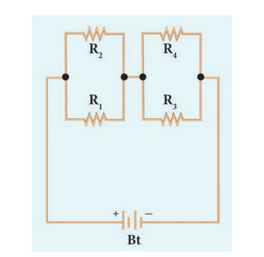
Figure 4.8 Series-parallel combination of resistors
Using equation (4.18), you get
one by R p1 is equal to one by R 1 plus one by R 2
one by R p2 is equal to one by R 3 plus one by R 4
Finally, using equation (4.12), the net effective resistance is given by R total is equal to R p1 plus R p2
If you consider a connection of a set of series resistors connected in a parallel circuit, you get a parallel-series circuit. Let R1 and R2 be connected in series to give an effective resistance of RS1. Similarly, let R3 and R4 be connected in series to give an effective resistance of RS2. Then, both of these serial segments are connected in parallel (Figure 4.9).
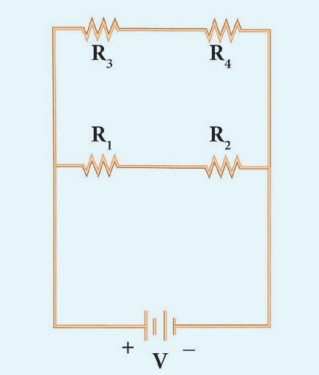
Figure 4.9 Parallel-series combination of resistors
Using equation (4.12), you get
R s1 is equal to R 1 plus R 2, R s2 is equal to R 3 plus R 4
Finally, using equation (4.18), the net effective resistance is given by
One by R total is equal to one by R s1 plus one by R s2
The difference between series and parallel circuits may be summed as follows in Table 4.3
Serial number |
Criteria |
Series |
parallel |
1 |
Equivalent resistance |
More than the highest resistance |
Less than the lowest resistance |
2 |
Amount of current |
Current is less as effective resistance is more |
Current is more as effective resistance is less |
3 |
Switching ON or OFF |
If one appliance is disconnected, others also do not work |
If one appliance is disconnected, others will work independently . |
Have you ever touched the motor casing of a fan, which has been used for a few hours continuously? What do you observe? The motor casing is warm. This is due to the heating effect of current. The same can be observed by touching a bulb, which was used for a long duration. Generally, a source of electrical energy can develop a potential difference across a resistor, which is connected to that source. This potential difference constitutes a current through the resistor. For continuous drawing of current, the source has to continuously spend its energy. A part of the energy from the source can be converted into useful work and the rest will be converted into heat energy. Thus, the passage of electric current through a wire, results in the production of heat. This phenomenon is called heating effect of current. This heating effect of current is used in devices like electric heater, electric iron, etcetera.
Let ‘I’ be the current flowing through a resistor of resistance ‘R’, and ‘V’ be the potential difference across the resistor. The charge flowing through the circuit for a time interval ‘t’ is ‘Q’.
The work done in moving the charge Q across the ends of the resistor with a potential
difference of V is VQ. This energy spent by the source gets dissipated in the resistor as heat. Thus, the heat produced in the resistor is:
H = W = VQ
You know that the relation between the charge and current is Q = I t. Using this, you get
H = V I t (4.19)
From Ohm’s Law, V = I R. Hence, you have
H = I power 2 R t (4.20)
This is known as Joule’s law of heating.
Joule’s law of heating states that the heat produced in any resistor is:
1.Electric Heating Device:
The heating effect of electric current is used in many home appliances such as electric iron, electric toaster, electric oven, electric heater, geyser, etcetera. In these appliances Nichrome, which is an alloy of Nickel and Chromium is used as the heating element. Why? Because:
(1)it has high resistivity, (2) it has a high melting point, (3) it is not easily oxidized.
2.Fuse Wire:
The fuse wire is connected in series, in an electric circuit. When a large current passes through the circuit, the fuse wire melts due to Joule’s heating effect and hence the circuit gets disconnected. Therefore, the circuit and the electric appliances are saved from any damage. The fuse wire is made up of a material whose melting point is relatively low.
3.Filament in bulbs:
In electric bulbs, a small wire is used, known as filament. The filament is made up of a material whose melting point is very high. When current passes through this wire, heat is produced in the filament. When the filament is heated, it glows and gives out light. Tungsten is the commonly used material to make the filament in bulbs.
Solved Problem-6
An electric heater of resistance 5 ohm is connected to an electric source. If a current of 6 Ampere flows through the heater, then find the amount of heat produced in 5 minutes.
Solution:
Given resistance R = 5 ohm, Current I = 6 Ampere, Time t = 5 minutes = 5 × 60 second = 300 second
Amount of heat produced, H= I power 2Rt, H = 6 power 2 × 5 × 300. Hence, H = 54000 Joule
In general, power is defined as the rate of doing work or rate of spending energy. Similarly, the electric power is defined as the rate of consumption of electrical energy. It represents the rate at which the electrical energy is converted into some other form of energy.
Suppose a current ‘I’ flows through a conductor of resistance ‘R’ for a time ‘t’, then the potential difference across the two ends of the conductor is ‘V’. The work done ‘W’ to move the charge across the ends of the conductor is given by the equation (4.19) as follows:
W = V I t,
Power P = work by time = V I t by t
P = V I (4.21)
Thus, the electric power is the product of the electric current and the potential difference due to which the current passes in a circuit.
4.9.1 Unit of Electric Power
The SI unit of electric power is watt. When a current of 1 ampere passes across the ends of a conductor, which is at a potential difference of 1 volt, then the electric power is
P = 1 volt × 1 ampere = 1 watt
Thus, one watt is the power consumed when an electric device is operated at a potential difference of one volt and it carries a current of one ampere. A larger unit of power, which is more commonly used is kilowatt.
Electricity is consumed both in houses and industries. Consumption of electricity is based on two factors: (1) Amount of electric power and (2) Duration of usage. Electrical energy consumed is taken as the product of electric power and time of usage. For example, if 100 watt of electric power is consumed for two hours, then the power consumed is100 × 2 = 200watt hour. Consumption of electrical energy is measured and expressed in watt hour, though its SI unit is watt second. In practice, a larger unit of electrical energy is needed. This larger unit is kilowatt hour (kWh). One kilowatt hour is otherwise known as one unit of electrical energy. One kilowatt hour means that an electric power of 1000 watt has been utilized for an hour. Hence,
1 kWh = 1000watt hour = 1000 × (60 × 60) watt second = 3.6 × 10 power 6 Joul
The electricity produced in power stations is distributed to all the domestic and industrial consumers through overhead and underground cables. The diagram, which shows the general scheme of a domestic electric circuit, is given in Figure 4.10In our homes, electricity is distributed through the domestic electric circuits wired by the electricians. The first stage of the domestic circuit is to bring the power supply to the main-box from a distribution panel, such as a transformer. The important components of the main-box are: (1) a fuse box and (2)a meter. The meter is used to record the consumption of electrical energy. The fuse box contains either a fuse wire or a miniature circuit breaker (MCB). The function of the fuse wire or a MCB is to protect the house hold electrical appliances from overloading due to excess current
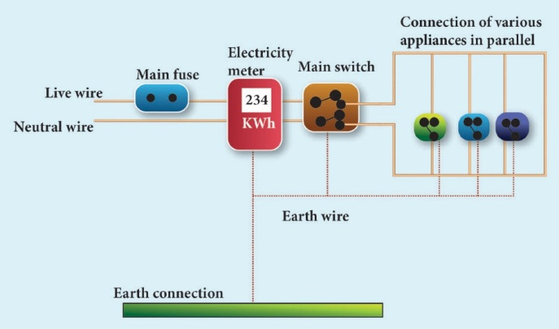
Figure 4.10 Domestic electric circuit
You have learnt about a fuse wire in section4.8.2. An MCB is a switching device, which can be activated automatically as well as manually. It has a spring attached to the switch, which is attracted by an electromagnet when an excess current passes through the circuit. Hence, the circuit is broken and the protection of the appliance is ensured. Figure 4.11 represents a fuse and an MCB.
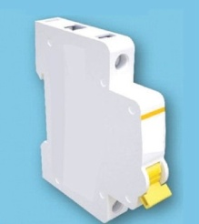
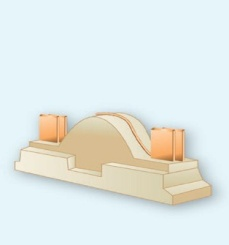
Figure 4.11 A fuse and an MCB
The electricity is brought to houses by two insulated wires. Out of these two wires,
one wire has a red insulation and is called the ‘live wire’. The other wire has a black insulation and is called the ‘neutral wire’. The electricity supplied to your house is actually an alternating current having an electric potential of 220 Volt. Both, the live wire and the neutral wire enter into a box where the main fuse is connected with the live wire. After the electricity meter, these wires enter into the main switch, which is used to discontinue the electricity supply whenever required. After the main switch, these wires are connected to live wires of two separate circuits. Out of these two circuits, one circuit is of a 5 Ampere rating, which is used to run the electric appliances with a lower power rating, such as tube lights, bulbs and fans. The other circuit is of a 15 Ampere rating, which is used to run electric appliances with a high-power rating, such as air-conditioners, refrigerators, electric iron and heaters. It should be noted that all the circuits in a house are connected in parallel, so that the disconnection of one circuit does not affect the other circuit. One more advantage of the parallel connection of circuits is that each electric appliance gets an equal voltage.
Do you know?
In India domestic circuits are supplied with an alternating current of potential 220 or 230 volt. And frequency 50 hertz. In countries like U S A and U K domestic circuits are supplied with an alternating current of potential of 110 or 120 volt and frequency of 60 hertz.
The fuse wire or MCB will disconnect the circuit in the event of an overloading and short circuiting. Over loading happens when a large number of appliances are connected in series to the same source of electric power. This leads to a flow of excess current in the electric circuit.
When the amount of current passing through a wire exceeds the maximum permissible limit, the wires get heated to such an extent that a fire may be caused. This is known as overloading. When a live wire comes in contact with a neutral wire, it causes a ‘short circuit’. This happens when the insulation of the wires gets damaged due to temperature changes or some external force. Due to a short circuit, the effective resistance in the circuit becomes very small, which leads to the flow of a large current through the wires. This results in heating of wires to such an extent that a fire may be caused in the building.
In domestic circuits, a third wire called the earth wire having a green insulation is usually connected to the body of the metallic electric appliance. The other end of the earth wire is connected to a metal tube or a metal electrode, which is buried into the Earth. This wire provides a low resistance path to the electric current. The earth wire sends the current from the body of the appliance to the Earth, whenever a live wire accidentally touches the body of the metallic electric appliance. Thus, the earth wire serves as a protective conductor, which saves us from electric shocks.
An LED bulb is a semiconductor device that emits visible light when an electric current passes through it. The colour of the emitted light will depend on the type of materials used. With the help of the chemical compounds like Gallium Arsenide and Gallium Phosphide, the manufacturer can produce LED bulbs that radiates red, green, yellow and orange colours. Displays in digital watches and calculators, traffic signals, street lights, decorative lights, etcetera., are some examples for the use of LEDs.
Figure 4.12 Seven segment display
A ‘Seven Segment Display’ is the display device used to give an output in the form of numbers or text. It is used in digital meters, digital clocks, micro wave ovens, etcetera. It consists of 7 segments of LEDs in the form of the digit 8.
These seven LEDs are named as a, b, c, d, e, f and g (Figure 4.12). An extra 8th LED is used to display a dot.
1.As there is no filament, there is no loss of energy in the form of heat. It is cooler than the incandescent bulb.
2.In comparison with the fluorescent light, the LED bulbs have significantly low power requirement.
3.It is not harmful to the environment.
4.A wide range of colours is possible here.
5.It is cost-efficient and energy efficient.
6.Mercury and other toxic materials are not required.
One way of overcoming the energy crisis is to use more LED bulbs.
LED Television is one of the most important applications of Light Emitting Diodes. An LED TV is actually an LCD TV (Liquid Crystal Display) with LED display. An LED display uses LEDs for backlight and an array of LEDs act as pixels. LEDs emitting white light are used in monochrome (black and white) TV; Red, Green and Blue (RGB) LEDs are used in colour television. The first LED television screen was developed by James. Mitchell in 1977. It was a monochromatic display. But, after about three decades, in 2009, SONY introduced the first commercial LED Television.
σ = 1 by ρ.
1. Two bulbs are having the ratings as 60 Watt, 220 Volt and 40 Watt, 220 Volt respectively. Which one has a greater resistance?
Solution:
Electric power P is equal to V square by R
For the same value of V, R is inversely proportional to P.
Therefore, lesser the power, greater the resistance
Hence, the bulb with 40 Watt, 220 Volt rating has a greater resistance.
2. Calculate the current and the resistance of a 100 Watt, 200 Volt electric bulb in an electric circuit.
Solution:
Power P = 100 Watt and Voltage V = 200 Volt Power P = V into I
So, Current, I = P by V equal to 100 by 200 equal to 0.5 ampere
Resistance, R is equal to V by I is equal to 200 by 0.5 is equal to 400 ohm.
3. In the circuit diagram given below, three resistors R1, R2 and R3 of 5 Ω, 10 Ω and 20 Ω respectively are connected as shown. Calculate:
A. Current through each resistor
B. Total current in the circuit
C. Total resistance in the circuit
Solution:
A. Since the resistors are connected in parallel, the potential difference across each resistor is same (that is V =10 Volt) Therefore, the current through R 1 is,
I 1 = V by R1 is equal to 10 by five is equal to 2 Ampere
Current through R 2 = I 2 = V by R2 equal to ten by ten equal to one ampere.
Current through R3 equal to I 3 equal to V by R3 equal to ten by twenty is equal to 0.5 ampere.
B. Total current in the circuit, I is equal to I one plus I two plus I three
= 2 + 1 + 0.5 = 3.5 ampere
C. Total resistance in the circuit 1 by R p = 1 by R 1 + 1 by R 2 + 1 by R 3
= 1 by 5. + 1 by 10. + 1 by 20. = 4 + 2 + 1 divided by 20.
1 by R p = 7 by 20
Hence R p = 20 by 7 = 2.857 ohm.
4. Three resistors of 1 ohm, 2 ohm and 4 ohm are connected in parallel in a circuit. If a 1 ohm resistor draws a current of 1 A, find the current through the other two resistors.
Solution:
R1=1 ohm, R2=2 ohm, R3=4 ohm Current I 1 = 1A R one is equal to 1 ohm, R2 is equal to 4 ohm R3 is equal to 4 ohm current I1 is equal to one ampere
The potential difference across the 1 Ω resistor
I one R one equal to one into one equal to one volt
Since, the resistors are connected in parallel in the circuit, the same potential difference will exist across the other resistors also.
So, the current in the 2 ohm resistor, V by R2 is equal to one by two is equal to zero point five ampere.
Similarly, the current in the 4 ohm resistor,
V by R3 equal to one by four equal to zero point two five ampere.
ONE. Choose the best answer
1. Which of the following is correct?
a) Rate of change of charge is electrical power.
b) Rate of change of charge is current.
c)Rate of change of energy is current.
d)Rate of change of current is charge.
2. SI unit of resistance is
a) mho
b) joule
c) ohm
d) ohm meter
3. In a simple circuit, why does the bulb glow when you close the switch?
a) The switch produces electricity.
b) Closing the switch completes the circuit.
c)Closing the switch breaks the circuit.
d)The bulb is getting charged.
4. Kilowatt hour is the unit of
a) resistivity
b) conductivity
c) electrical energy
d) electrical power
2. Fill in the blanks
1. When a circuit is open, dash cannot pass through it.
2. The ratio of the potential difference to the current is known as dash
3. The wiring in a house consists of dash circuits.
4. The power of an electric device is a product of dash and dash.
5. LED stands for dash.
3. State whether the following statements are true or false: If false correct the statement.
1. Ohm’s law states the relationship between power and voltage.
2. MCB is used to protect house hold electrical appliances.
3. The SI unit for electric current is the coulomb.
4. One unit of electrical energy consumed is equal to 1000kilowatt hour.
5. The effective resistance of three resistors connected in series is lesser than the lowest of the individual resistances.
4. Match the items in column-I to the items in column-II:
Column 1 |
Column 2 |
(1) electric current |
(a)volt |
(2) potential difference |
(b) ohmmeter |
(3) specific resistance |
(c)watt |
(4) electrical power |
(d)joule |
(5) electrical energy |
(e)ampere |
5. Assertion and reason type questions:
Mark the correct choice as
a) if both the assertion and the reason are true and the reason is the correct explanation of the assertion.
b) if both the assertion and the reason are true, but the reason is not the correct explanation of the assertion.
c) if the assertion is true, but the reason is false.
d) if the assertion is false, but the reason is true.
1. Assertion: Electric appliances with a metallic body have three wire connections.
Reason: Three pin connections reduce heating of the connecting wires
2. Assertion: In a simple battery circuit the point of highest potential is the positive terminal of the battery.
Reason: The current flows towards the point of the highest potential
3. Assertion: LED bulbs are far better than incandescent bulbs.
Reason: LED bulbs consume less power than incandescent bulbs.
6. Very short answer questions.
1. Define the unit of current.
2. What happens to the resistance, as the conductor is made thicker?
3. Why is tungsten metal used in bulbs, but not in fuse wires?
4. Name any two devices, which are working on the heating effect of the electric current.
7. Short answer questions
1. Define electric potential and potential difference.
2. What is the role of the earth wire in domestic circuits?
3. State Ohm’s law.
4. Distinguish between the resistivity and conductivity of a conductor.
5. What connection is used in domestic appliances and why?
8.Long answer questions.
1. With the help of a circuit diagram derive the formula for the resultant resistance of three resistances connected: a) in series and b) in parallel
2. a) What is meant by electric current?
b) Name and define its unit.
c) Which instrument is used to measure the electric current? How should it be connected in a circuit?
3. a) State Joule’s law of heating.
b) An alloy of nickel and chromium is used as the heating element. Why?
c) How does a fuse wire protect electrical appliances?
4. Explain about domestic electric circuits. (Circuit diagram not required)
5. a) What are the advantages of LED TV over the normal TV?
b) List the merits of LED bulb.
9. Numerical problems:
1. An electric iron consumes energy at the rate of 420 Watt when heating is at the maximum rate and 180 Watt when heating is at the minimum rate. The applied voltage is 220 Volt. What is the current in each case?
2. A 100watt electric bulb is used for 5 hours daily and four 60watt bulbs are used for 5 hours daily. Calculate the energy consumed (in kWh) in the month of January.
3. A torch bulb is rated at 3 V and 600 mA.
Calculate it’s
a) power
b) resistance
c) energy consumed if it is used for 4hour.
4 A piece of wire having a resistance R is cut into five equal parts.
a) How will the resistance of each part of the wire change compared with the original resistance?
b) If the five parts of the wire are placed in parallel, how will the resistance of the combination change?
c) What will be ratio of the effective resistance in series connection to that of the parallel connection?
10.HOTS:
1. Two resistors when connected in parallel give the resultant resistance of 2 ohm; but when connected in series the effective resistance becomes 9ohm. Calculate the value of each resistance.
2. How many electrons are passing per second in a circuit in which there is a current of 5 Ampere?
3. A piece of wire of resistance 10 ohm is drawn out so that its length is increased to three times its original length. Calculate the new resistance.
REFERENCE BOOKS
1. Electrodynamics by Griffiths
2. Fundamentals of Electric Circuits by Charles Alexander
INTERNET RESOURCES
https://www.elprocus.com/basic-electrical- circuits-and-their-working-for-electrical- engineers/
https://www.physicsclassroom.com/calcpad/ circuits
By the end of this section, the students will be able to:
Sound plays a major role in our lives. We communicate with each other mainly through sound. In our daily life, we hear a variety of sounds produced by different sources like humans, animals, vehicle horns, etcetera. Hence, it becomes inevitable to understand how sound is produced, how it is propagated and how you hear the sound from various sources. It is sometimes misinterpreted that acoustics only deals with musical instruments and design of auditoria and concert halls. But acoustics is a branch of physics that deals with production, transmission, reception, control, and effects of sound. You have studied about propagation and properties of sound waves in ninth standard. In this lesson we will study about reflection of sound waves, Echo and Doppler effect.
When you think about sound, the questions that arise in your minds are: How is sound produced? How does sound reach our ears from various sources? What is sound? Is it a force or energy? Let us answer all these questions.
Figure 5.1 Production of sound waves
By touching a ringing bell or a musical instrument while it is producing music, you can conclude that sound is produced by vibrations. The vibrating bodies produce energy in the form of waves, which are nothing but sound waves (Figure 5.1). Suppose you and your friend are on the Moon. Will you be able to hear any sound produced by your friend? As the Moon does not have air, you will not be able to hear any sound produced by your friend. Hence, you understand that the sound produced due to the vibration of different bodies needs a material medium like air, water, steel, etcetera, for its propagation. Hence, sound can propagate through a gaseous medium or a liquid medium or a solid medium.
ACTIVITY 1
Take a squeaky toy or old mobile phone and put it inside a plastic bag. Seal the bag with the help of a candle or with a thread. Fill a bucket with water and place the bag in the water bucket and squeeze the toy or ring the mobile. You will hear a low sound. Now place your ear against the side of the bucket and squeeze the toy or ring the mobile phone again. You will hear a louder sound.
Figure 5.2 Sound propagates as longitudinal waves
Sound waves are longitudinal waves that can travel through any medium (solids, liquids, gases) with a speed that depends on the properties of the medium. As sound travels through a medium, the particles of the medium vibrate along the direction of propagation of the wave. This displacement involves the longitudinal displacements of the individual molecules from their mean positions. This results in a series of high- and low-pressure regions called compressions and rarefactions as shown in figure 5.2.
(1) Audible waves – These are sound waves with frequency ranging between 20 Hz and 20,000 Hz. These are generated by vibrating bodies such as vocal cords, stretched strings etcetera.
(2) Infrasonic waves – These are sound waves with a frequency below 20 Hz that cannot be heard by the human ear. example waves produced during earthquake, ocean waves, sound produced by whales, etcetera.
(3) Ultrasonic waves – These are sound waves with a frequency greater than 20 kHz, Human ear cannot detect these waves, but certain creatures like mosquito, dogs, bats, dolphins can detect these waves. example waves produced by bats.
Serial number. |
SOUND |
LIGHT |
1 |
Medium is required for the propagation. |
Medium is not required for the propagation. |
2 |
Sound waves are longitudinal. |
Light waves are transverse. |
3 |
Wavelength ranges from 1.65 cm to 1.65 meter. |
Wave length ranges from 4 times 10 power minus 7 meter to 7 times 10 power minus 7 meter. |
4 |
Sound waves travel in air with a speed of about 340 meter per second at NTP. |
Light waves travel in air with a speed of 3 times 10 power 8 meter per second. |
When you talk about the velocity associated with any wave, there are two velocities, namely particle velocity and wave velocity. SI unit of velocity is metre second power minus one..
Particle velocity:
The velocity with which the particles of the medium vibrate in order to transfer the energy in the form of a wave is called particle velocity.
Wave velocity:
The velocity with which the wave travels through the medium is called wave velocity. In other words, the distance travelled by a sound wave in unit time is called the velocity of a sound wave.
Velocity = distance travelled by time
If the distance travelled by one wave is taken as one wavelength (λ) and, the time taken for this propagation is one time period (T), then, the expression for velocity can be written as
Therefore V is equal to lambta by T equation 5.1
Therefore, velocity can be defined as the distance travelled per second by a sound wave. Since, Frequency (n) is equal to 1, equation (5.1) can be written as
V = n λ equation (5.2)
Velocity of a sound wave is maximum in solids because they are more elastic in nature than liquids and gases. Since, gases are least elastic in nature, the velocity of sound is the least in a gaseous medium.
So, v S greater than v L greater than V G
In the case of solids, the elastic properties and the density of the solids affect the velocity of sound waves. Elastic property of solids is characterized by their elastic moduli. The speed of sound is directly proportional to the square root of the elastic modulus and inversely proportional to the square root of the density. Thus, the velocity of sound in solids decreases as the density increases whereas the velocity of sound increases when the elasticity of the material increases. In the case of gases, the following factors affect the velocity of sound waves.
Effect of density: The velocity of sound in a gas is inversely proportional to the square root of the density of the gas. Hence, the velocity decreases as the density of the gas increases.
V is proportional to square root of one by d
Effect of temperature: The velocity of sound in a gas is directly proportional to the square root of its temperature. The velocity of sound in a gas increase with the increase in temperature. V∝ √T. Velocity at temperature T is given by the following equation:
V T = (v 0 + 0.61 T) meter second power minus one. VT is equal to V0 plus zero point six one T with in the bracket metre second power minus one
Here, V 0 is the velocity of sound in the gas at 0° C. For air, V 0 = 331 meter second power minus one. Hence, the velocity of sound changes by 0.61 metre second power minus one when the temperature changes by one degree Celsius.
Effect of relative humidity: When humidity increases, the speed of sound increases. That is why you can hear sound from long distances clearly during rainy seasons.
Speed of sound waves in different media are given in table 5.1
Table 5.1 Speed of sound in different media
Serial Number |
Nature of the medium |
Name of the Medium |
Speed of sound(in meter second power minus one) |
1 |
Solid |
Copper |
5010 |
2 |
Iron |
5950 |
|
3 |
Aluminum |
6420 |
|
4 |
Liquid |
Kerosene |
1324 |
5 |
Water |
1493 |
|
6 |
Seawater |
1533 |
|
7 |
Gas |
Air (at 0 degree Celsius) |
331 |
8 |
Air (at 20 degree celsius) |
343 |
Example Problem 5.1
1. At what temperature will the velocity of sound in air be double the velocity of sound in air at 0 degree Celsius
Let T degree celsius be the required temperature. Let V 1 and V 2 be the velocity of sound at temperatures
T 1 Kelvin and T 2 kelvin respectively. T 1 = 273 Kelvin (0 degree celsius) and T 2 = (T degree Celsius +273) Kelvin
V 2 by V 1 = square root of T 2 by T 1 = square root of 273 + T divided by square root of 273 = 2
Here it is given that V 2 by V 1 = 2
So, 273 + T divided by 273 = 4
T = (273 times 4) minus 273 = 819 degree Celsius.
When you speak in an empty room, you hear a soft repetition of your voice. This is nothing but the reflection of the sound waves that you produce. Let us discuss about the reflection of sound in detail through the following activity.
When sound waves travel in a given medium and strike the surface of another medium, they can be bounced back into the first medium. This phenomenon is known as reflection. In simple the reflection and refraction of sound is actually similar to the reflection of light. Thus, the bouncing of sound waves from the interface between two media is termed as the reflection of sound. The waves that strike the interface are termed as the incident wave and the waves that bounce back are termed as the reflected waves, as shown in Figure 5.3
Figure 5.3 Reflection of sound
Like light waves, sound waves also obey some fundamental laws of reflection. The following two laws of reflection are applicable to sound waves as well.
These laws can be observed from Figure 5.4.
Figure 5.4 Laws of reflection
In the above Figure 5.4, the sound waves that travel towards the reflecting surface are called the incident waves. The sound waves bouncing back from the reflecting surface are called reflected waves. For all practical purposes, the point of incidence and the point of reflection is the same point on the reflecting surface.
A perpendicular line drawn at the point of incidence is called the normal. The angle which the incident sound wave makes with the normal is called the angle of incidence, ‘i’. The angle which the reflected wave makes with the normal is called the angle of reflection, ‘r’.
Acoustical wonder of Golconda fort (Hyderabad, Telangana)
The Clapping portico in Golconda Fort is a series of arches on one side, each smaller than the preceding one. So, a sound wave generated under the dome would get compressed and then bounce back amplified sufficiently
A longitudinal wave travels in a medium in the form of compressions and rarefactions. Suppose a compression travelling in air from left to right reaches a rigid wall. The compression exerts a force F on the rigid wall. In turn, the wall exerts an equal and opposite reaction R = minus F on the air molecules. This results in a compression near the rigid wall. Thus, a compression travelling towards the rigid wall is reflected back as a compression. That is the direction of compression is reversed (Figure 5.5).
Figure 5.5 Reflection of sound at a denser medium
Consider a wave travelling in a solid medium striking on the interface between the solid and the air. The compression exerts a force F on the surface of the rarer medium. As a rarer medium has smaller resistance for any deformation, the surface of separation is pushed backwards (Figure 5.6). As the particles of the rarer medium are free to move, a rarefaction is produced at the interface. Thus, a compression is reflected as a rarefaction and a rarefaction travel from right to left.
Figure 5.6 Reflection of sound at a rarer medium
More to know:
What is meant by rarer and denser medium? The medium in which the velocity of sound increases compared to another medium is called rarer medium. (Water is rarer compared to air for sound).
The medium in which the velocity of sound decreases compared to another medium is called denser medium. (Air is denser compared to water for sound)
When sound waves are reflected from a plane surface, the reflected waves travel in a direction, according to the law of reflection. The intensity of the reflected wave is neither decreased nor increased. But, when the sound waves are reflected from the curved surfaces, the intensity of the reflected waves is changed. When reflected from a convex surface, the reflected waves are diverged out and the intensity is decreased. When sound is reflected from a concave surface, the reflected waves are converged and focused at a point So the intensity of reflected waves is concentrated at a point. Parabolic surfaces are used when it is required to focus the sound at a particular point. Hence, many halls are designed with parabolic reflecting surfaces. In elliptical surfaces, sound from one focus will always be reflected to the other focus, no matter where it strikes the wall.
This principle is used in designing whispering halls. In a whispering hall, the speech of a person standing in one focus can be heard clearly by a listener standing at the other focus.
Do You Know?
An echo is the sound reproduced due to the reflection of the original sound from various rigid surfaces such as walls, ceilings, surfaces of mountains, etc.
If you shout or clap near a mountain or near a reflecting surface, like a building you can hear the same sound again. The sound, which you hear is called an echo. It is due to the reflection of sound. One does not experience any echo sound in a small room. This does not mean that sound is not reflected in a small room. This is because smaller rooms do not satisfy the basic conditions for hearing an echo.
1. The persistence of hearing for human ears is 0.1 second. This means that you can hear two sound waves clearly, if the time interval between the two sounds is at least 0.1 s. Thus, the minimum time gap between the original sound and an echo must be 0.1 second.
2. The above criterion can be satisfied only when the distance between the source of sound and the reflecting surface would satisfy the following equation:
velocity is equal to distance travelled by sound divided by time taken
V is equal to 2d by t
d is equal to vt by two
Since, t is equal to 0.1 second, then d is equal to v into zero point one divided by two is equal to v divided by twenty.
Thus, the minimum distance required to hear an echo is 1 by 20th part of the magnitude of the velocity of sound in air. If you consider the velocity of sound as 344 the minimum distance required to hear an echo is 17.2 m.
Apparatus required:
A source of sound pulses, a measuring tape, a sound receiver, and a stopwatch.
Measuring velocity of sound by echo method
Procedure:
1. Measure the distance ‘d’ between the source of sound pulse and the reflecting surface using the measuring tape.
2. The receiver is also placed adjacent to the source. A sound pulse is emitted by the source.
3. The stopwatch is used to note the time interval between the instant at which the sound pulse is sent and the instant at which the echo is received by the receiver. Note the time interval as ‘t’.
4. Repeat the experiment for three or four times. The average time taken for the given number of pulses is calculated.
Calculation of speed of sound:
The sound pulse emitted by the source travels a total distance of 2d while travelling from the source to the wall and then back to the receiver. The time taken for this has been observed to be ‘t’. Hence, the speed of sound wave is given by speed of sound equal to distance travelled divided by time taken = 2 times d divided by t.
5.4.1.Sound board
These are basically curved surfaces (concave), which are used in auditoria and halls to improve the quality of sound. This board is placed such that the speaker is at the focus of the concave surface. The sound of the speaker is reflected towards the audience thus improving the quality of sound heard by the audience.
5.4.2.Ear trumpet
Ear trumpet is a hearing aid, which is useful by people who have difficulty in hearing. In this device, one end is wide, and the other end is narrow. The sound from the sources falls into the wide end and are reflected by its walls into the narrow part of the device. This helps in concentrating the sound and the sound enters the ear drum with more intensity. This enables a person to hear the sound better.
5.4.3.Megaphone
A megaphone is a horn-shaped device used to address a small gathering of people. It’s one end is wide, and the other end is narrow. When a person speaks at the narrow end, the sound of his speech is concentrated by the multiple reflections from the walls of the tube. Thus, his voice can be heard loudly over a long distance.
The whistle of a fast-moving train appears to increase in pitch as it approaches a stationary listener, and it appears to decrease as the train moves away from the listener. This apparent change in frequency was first observed and explained by Christian Doppler (1803 to 1853), an Austrian Mathematician and Physicist. He observed that the frequency of the sound as received by a listener is different from the original frequency produced by the source whenever there is a relative motion between the source and the listener. This is known as Doppler effect This relative motion could be due to various possibilities as follows:
DEFINITION
Whenever there is a relative motion between a source and a listener, the frequency of the sound heard by the listener is different from the original frequency of sound emitted by the source. This is known as “Doppler effect”.
Figure 5.7 Source and listener moving towards each other
For simplicity of calculation, it is assumed that the medium is at rest. That is the velocity of the medium is zero. Let S and L be the source and the listener moving with velocities vS and vL respectively. Consider the case of source and listener moving towards each other (Figure 5.7). As the distance between them decreases, the apparent frequency will be more than the actual source frequency.
Let n and n dash be the frequency of the sound produced by the source and the sound observed by the listener respectively. Then, the expression for the apparent frequency n' is
n dash is equal to v plus v1 by v minus vs into n
Here, v is the velocity of sound waves in the given medium. Let us consider different possibilities of motions of the source and the listener. In all such cases, the expression for the apparent frequency is given in table 5.2.
Table 5.2 Expression for apparent frequency due to Doppler effect
Case Number. |
Position of source and listener |
Note |
Expression for apparent frequency |
1 |
Both source and listener move They move towards each other |
a) Distance between source and listener decreases.
b) Apparent frequency is more than actual frequency.
|
N dash equal to v plus v1 divided by v minus vs in to n |
2 |
Both source and listener move They move away from each other |
a) Distance between source and listener increases.
b) Apparent frequency is less than actual frequency.
c) vSandLbecome opposite to that in case1.
|
N dahs equal to v minus v1 by v plus vs in to n |
3 |
Both source and listener move They move one behind the other Source follows the listener |
a) Apparent frequency depends on the velocities of the source and the listener.
b) vS becomes opposite to that in case2.
|
N dah equal to v minus v1 by v-vs into n |
4 |
Both source and listener move They move one behind the other Listener follows the source |
a) Apparent frequency depends on the velocities of the source and the listener.
b) vS and vL become opposite to that in case3.
|
N dash is equal to v plus v1 by v plus vs into n |
5 |
Source at rest Listener moves towards the source |
a) Distance between source and listener decreases.
b) Apparent frequency is more than actual frequency.
c) vS = 0 incase1.
|
N dash is equal to v plus v1 by v into n |
6 |
Source at rest Listener moves away from the source |
a) Distance between source and listener increases.
b) Apparent frequency is less than actual frequency.
c) vS = 0 incase2.
|
N dash is equal to v minus v1 by v into n |
7 |
Listener at rest Source moves towards the listener |
a) Distance between source and listener decreases.
b) Apparent frequency is more than actual frequency.
c) vL = 0 incase1.
|
N dash is equal to v by v minus vs into n |
8 |
Listener at rest Source moves away from the listener |
a) Distance between source and listener increases.
b) Apparent frequency is less than actual frequency.
c) vL = 0 incase2.
|
N dash is equal to v by v plus vs into n |
Suppose the medium (say wind) is moving with a velocity W in the direction of the propagation of sound. For this case, the velocity of sound, ‘v’ should be replaced with (v + W). If the medium moves in a direction opposite to the propagation of sound, then ‘v’ should be replaced with (v minus W).
Solved problems
1. A source producing a sound of frequency 90 Hz is approaching a stationary listener with a speed equal to (1by10) of the speed of sound. What will be the frequency heard by the listener?
Solution: When the source is moving towards the stationary listener, the expression for apparent frequency is
2. A source producing a sound of frequency 500 Hz is moving towards a listener with a velocity of 30 metre second power minus 1. The speed of the sound is 330 metre second power minus1. What will be the frequency heard by listener?
Solution: When the source is moving towards the stationary listener, the expression for apparent frequency is
n dash is equal to v by v minus v s whole bracket into n
n dash is equal to 330 by 330 minus 30 whole bracket into 500 = 550 Hz
3. A source of sound is moving with a velocity of 50 meter second power minus 1 towards a stationary listener. The listener measures the frequency of the source as 1000 Hz. what will be the apparent frequency of the source when it is moving away from the listener after crossing him? (Velocity of sound in the medium is 330 meter second power minus 1)
Solution: When the source is moving towards the stationary listener, the expression for apparent frequency is
n dash = v divided by v – v s whole bracket multiplied by n
1000 = 330 divided by 330 minus 50 whole bracket multiplied by n
n = 1000 times 280 divided by 330
n = 848.48 Hz.
The actual frequency of the sound is 848.48 Hz. When the source is moving away from the stationary listener, the expression for apparent frequency is
n dash = open bracket v divided by v plus v s close bracket multiplied by n
= open bracket 330 divided by 330 + 50 closed bracket multiplied by 848.48
=736.84 Hz
4. A source and listener are both moving towards each other with a speed v by 10 where v is the speed of sound. If the frequency of the note emitted by the source is f, what will be the frequency heard by the listener?
Solution: When source and listener are both moving towards each other, the apparent frequency is
n dash = open bracket v + v l divided by v minus v s close bracket multiplied by n
n dash = open bracket v + v by 10 divided by v minus v by 10 close bracket multiplied by n
n dash = 11 divided by 9 multiplied by f
= 1.22 f
5. At what speed should a source of sound move away from a stationary observer so that observer finds the apparent frequency equal to half of the original frequency?
Solution: When the source is moving away from the stationary listener, the expression for the apparent frequency is
n dash = open bracket v by v + v s close bracket multiplied by n
n by 2 = open bracket v by v + v s close bracket multiplied by n
v s = v
Under the following circumstances, there will be no Doppler effect and the apparent frequency as heard by the listener will be the same as the source frequency.
(i) When source (S) and listener (L) both are at rest.
(ii) When S and L move in such a way that distance between them remains constant.
(iii) When source S and L are moving in mutually perpendicular directions.
(iv) If the source is situated at the centre of the circle along which the listener is moving.
An electromagnetic wave is emitted by a source attached to a police car. The wave is reflected by a moving vehicle, which acts as a moving source. There is a shift in the frequency of the reflected wave. From the frequency shift, the speed of the car can be determined. This helps to track the over speeding vehicles.
The frequency of radio waves emitted by a satellite decreases as the satellite passes away from the Earth. By measuring the change in the frequency of the radio waves, the location of the satellites is studied.
In RADAR, radio waves are sent, and the reflected waves are detected by the receiver
of the RADAR station. From the frequency change, the speed and location of the aeroplanes and aircrafts are tracked.
In SONAR, by measuring the change in the frequency between the sent signal and received signal, the speed of marine animals and submarines can be determined.

I- choose the correct answer
1. When a sound wave travels through air, the air particles
a) vibrate along the direction of the wave motion
b) vibrate but not in any fixed direction
c) vibrate perpendicular to the direction of the wave motion
d) do not vibrate
2. Velocity of sound in a gaseous medium is 330 meter second power minus 1. If the pressure is increased by 4 times without causing a change in the temperature, the velocity of sound in the gas is
a) 330 meter second power minus 1
b) 660 meter second power 1
c) 156 meter second power minus 1
d) 990 meter second power minus 1
3. The frequency, which is audible to the human ear is
a) 50 kHz b) 20 kHz c) 15000 kHz d) 10000 kHz
4. The velocity of sound in air at a particular temperature is 330 meter second power minus 1. What will be its value when temperature is doubled, and the pressure is halved?
a) 330 meter second power minus 1
b) 165 meter second power minus 1
c) 330 × √2 meter second power minus 1
d) 320 by √ 2 meter second power minus 1
5. If a sound wave travels with a frequency of
1.25 × 10 power 4 Hz at 344 meter second power minus 1, the wavelength will be
a) 27.52 meter
b) 275.2 meter
c) 0.02752 meter
d) 2.752 meter
6. The sound waves are reflected from an obstacle into the same medium from which they were incident. Which of the following changes?
a) speed
b) frequency
c) wavelength
d) none of these
7.Velocity of sound in the atmosphere of a planet is 500 meter second power minus 1. The minimum distance between the sources of sound and the obstacle to hear the echo, should be
a) 17 meter
b) 20 meter
c) 25 meter
d) 50 meter
II. Fill up the blanks
1. Rapid back and forth motion of a particle about its mean position is called dash.
2. If the energy in a longitudinal wave travel from south to north, the particles of the medium would be vibrating in dash.
3. A whistle giving out a sound of frequency 450 Hz, approaches a stationary observer at a speed of 33 meter second power minus 1. The frequency heard by the observer is (speed of sound = 330 meter second power minus 1) dash.
4. A source of sound is travelling with a velocity 40 km per h towards an observer and emits a sound of frequency 2000 Hz. If the velocity of sound is 1220 km per h, then the apparent frequency heard by the observer is dash.
III. True or false: - (If false give the reason)
1. Sound can travel through solids, gases, liquids and even vacuum.
2. Waves created by earthquake are Infrasonic.
3. The velocity of sound is independent of temperature.
4. The Velocity of sound is high in gases than liquids.
IV. Match the following
1. Infrasonic - (a) Compressions
2. Echo - (b) 22 kHz
3. Ultrasonic - (c) 10 Hz
4. High pressure region - (d) Ultrasonography
V. Assertion and Reason Questions
Mark the correct choice as
a. If both the assertion and the reason are true and the reason is the correct explanation of the assertion.
b. If both the assertion and the reason are true but the reason is not the correct explanation of the assertion.
c. Assertion is true, but the reason is false.
d. Assertion is false, but the reason is true.
1) Assertion: The change in air pressure affects the speed of sound.
Reason: The speed of sound in a gas is proportional to the square of the pressure
2) Assertion: Sound travels faster in solids than in gases.
Reason: Solid possess a greater density than that of gases.
VI. Answer very briefly
1. What is a longitudinal wave?
2. What is the audible range of frequency?
3. What is the minimum distance needed for an echo?
4. What will be the frequency sound having 0.20 m as its wavelength, when it travels with a speed of 331 m s power –1?
5. Name three animals, which can hear ultrasonic vibrations.
VII. Answer briefly
1. Why does sound travel faster on a rainy day than on a dry day?
2. Why does an empty vessel produce more sound than a filled one?
3. Air temperature in the Rajasthan desert can reach 46°C. What is the velocity of sound in air at that temperature? (V0 = 331 meter second power minus 1)
4. Explain why, the ceilings of concert halls are curved.
5. Mention two cases in which there is no Doppler effect in sound?
VIII. Problem Corner
1. A sound wave has a frequency of 200 Hz and a speed of 400 meter second power minus 1 in a medium. Find the wavelength of the sound wave.
2. The thunder of cloud is heard 9.8 seconds later than the flash of lightning. If the speed of sound in air is 330 meter second power minus 1, what will be the height of the cloud?
3. A person who is sitting at a distance of 400 m from a source of sound is listening to a sound of
600 Hz. Find the time period between successive compressions from the source?
4. An ultrasonic wave is sent from a ship towards the bottom of the sea. It is found that the time interval between the transmission and reception of the wave is 1.6 seconds. What is the depth of the sea, if the velocity of sound in the seawater is 1400 meter second power minus 1?
5. A man is standing between two vertical walls 680 m apart. He claps his hands and hears two distinct echoes after 0.9 seconds and 1.1 second respectively. What is the speed of sound in the air?
6. Two observers are stationed in two boats 4.5 km apart. A sound signal sent by one, under water, reaches the other after 3 seconds. What is the speed of sound in the water?
7. A strong sound signal is sent from a ship towards the bottom of the sea. It is received back after 1sWhat is the depth of sea given that the speed of sound in water 1450 meter second power minus 1?
IX. Answer in Detail
1. What are the factors that affect the speed of sound in gases?
2. What is mean by reflection of sound? Explain:
a) reflection at the boundary of a rarer medium
b) reflection at the boundary of a denser medium
c) Reflection at curved surfaces
3. a) What do you understand by the term ‘ultrasonic vibration’?
b) State three uses of ultrasonic vibrations.
c) Name three animals which can hear ultrasonic vibrations.
4. What is an echo?
a) State two conditions necessary for hearing an echo.
b) What are the medical applications of echo?
c) How can you calculate the speed of sound using echo?
X. HOT Questions
1. Suppose that a sound wave and a light wave have the same frequency, then which one has a longer wavelength?
a) Sound b) Light c) both a and b d) data not sufficient
2. When sound is reflected from a distant object, an echo is produced. Let the distance between the reflecting surface and the source of sound remain the same. Do you hear an echo sound on a hotter day? Justify your answer.
REFERENCE BOOKS 1. Fundamental Physics by K.L. Gomber and K.L. Gogia
2. Fundamentals of sound and vibration by Franky Fahy and David Thomson
3. The theory of sound by Rayleigh and John William Strutt
INTERNET RESOURCE 1. http://people.bath.ac.uk/ensmjc/Notes/ acoustics.pdf


After learning this unit, students will be able to
Humans are very much interested in knowing about atoms. Things around us are made up of atoms. A Greek Philosopher 'Democritus' in 400 BC believed that matter is made up of tiny indestructible units called atoms. Later, in 1803, John Dalton considered that elements consist of atoms, which are identical in nature. J J Thomson discovered cathode rays, known as electrons, experimentally and Goldstein discovered positive rays, which were named as protons by Rutherford. In 1932, James Chadwick discovered the charge less particles called neutrons. Presently, a large number of elementary particles like photon, meson, positron and neutrino have been discovered. In 1911, the British scientist, Ernest Rutherford explained that the mass of an atom is concentrated in its central part called Nucleus. You have already learnt about the atomic structure in the earlier classes.
In 1896, French physicist Henri Becquerel finished his research for the week and stored a certain amount of uranium compound away in a drawer for the week end. By chance, an unexposed photographic plate was also stored in the same drawer. After a week he returned and noticed that the film had been exposed to some radiation. He discovered that he could reproduce the effect whenever he placed uranium near a photographic film. Apparently, uranium radiated something that could affect a photographic plate. This phenomenon was called as Radioactivity. Uranium was identified to be a radioactive element.
Two years later, the Polish physicist Marie Curie and her husband Pierre Curie detected radioactivity in 'Pitchblende', a tiny black substance. They were not surprised at the radioactivity of pitchblende, which is known as an ore of uranium. Later, they discovered that the radiation was more intense from pure uranium. Also, it was found that the pitchblende had less concentration of uranium. They concluded that some other substance was present in pitchblende. After separating this new substance, they discovered that it had unknown chemical properties and it also emitted radiations spontaneously like uranium. They named this new substance as 'Radium'. The radioactive elements emit harmful radioactive radiations like alpha rays or beta rays or gamma rays.
The nucleus of some elements is unstable. Such nuclei undergo nuclear decay and get converted into more stable nuclei. During this nuclear reaction, these nuclei emit certain harmful radiations and elementary particles. The phenomenon of nuclear decay of certain elements with the emission of radiations like alpha, beta, and gamma rays is called 'radioactivity' and the elements, which undergo this phenomenon are called 'radioactive elements'.
The elements such as uranium and radium undergo radioactivity and emit the radiations on their own without any human intervention. This phenomenon of spontaneous emission of radiation from certain elements on their own is called 'natural radioactivity'.
The elements whose atomic number is more than 83 undergo spontaneous radioactivity. Example ; uranium, radium, Etcetera. There are only two elements, which have been identified as radioactive substances with atomic number less than 83. They are technetium (Tc) with atomic number 43 and promethium (Pm) with atomic number 61.
There have been 29 radioactive substances discovered so far. Most of them are rare earth metals and transition metals.
The phenomenon by which even light elements are made radioactive, by artificial or induced methods, is called 'artificial radioactivity' or 'man-made radioactivity'.
This kind of radioactivity was discovered by Irene Curie and Joliot in 1934. Artificial radioactivity is induced in certain lighter elements like boron, aluminium etc., by bombarding them with radiations such as 'alpha particles' emitted during the natural radioactivity of uranium. This also results in the emission of invisible radiations and elementary particles. During such a disintegration, the nucleus which undergoes disintegration is called 'parent nucleus' and that which is produced after the disintegration is called a 'daughter nucleus'. The particle, which is used to induce the artificial disintegration is termed as projectile and the particle which is produced after the disintegration is termed as ejected particle. When the projectile hits the parent nucleus, it is converted into an unstable nucleus, which in turn decays spontaneously emitting the daughter nucleus along with an ejected particle.
Table 6.1 Comparison between Natural and Artificial Radioactivity
S. No. |
Natural radioactivity |
Artificial radioactivity |
1 |
Emission of radiation due to self- disintegration of a nucleus. |
Emission of radiation due to disintegration of a nucleus through induced process. |
2 |
Alpha, beta and gamma radiations are emitted. |
Mostly elementary particles such as neutron, positron, etcetera… are emitted. |
3 |
It is a spontaneous process. |
It is an induced process. |
4 |
Exhibited by elements with atomic number more than83. |
Exhibited by elements with atomic number less than83. |
5 |
This cannot be controlled. |
This can be controlled. |
Activity 6.1
Using the periodic table, list out the radioactive elements. Also identify the name of the groups in which they are present.
If you denote the parent and daughter nuclei as X and Y respectively, then the nuclear disintegration is represented as follows: X (P, E) Y. Here, P and E represent the projectile particle and ejected particle respectively.

In the above nuclear reaction, 6 Carbon 13 is unstable and is radioactive.
This reaction can be represented as 4 Beryllium 9 (α, n) 6 Carbon 12.
4 Beryllium 9 + 2 helium 4 gives 6 carbon 12 + 1 neutron.

Curie: It is the traditional unit of radioactivity. It is defined as the quantity of a radioactive substance which undergoes 3.7 × 10 power 10 disintegrations in one second. This is actually close to the activity of 1 g of radium 226.
1 curie = 3.7 × ten power ten disintegrations per second.
Rutherford (Rd): It is another unit of radioactivity. It is defined as the quantity of a radioactive substance, which produces ten power of six disintegrations in one second.
1 Rutherford = ten power of six disintegrations per second.
Becquerel (Bq): The SI unit of radioactivity is becquerel. It is defined as the quantity of one disintegration per second.
Roentgen (R): It is the radiation exposure of γ and x-rays is measured by another unit called roentgen. One roentgen is defined as the quantity of radioactive substance which produces a charge of 2.58 × 10 power -4 coulomb in 1 kg of air under standard conditions of pressure, temperature and humidity.
When a radioactive nucleus undergoes radioactivity, it emits harmful radiations. These radiations are usually comprised of any of the three types of particles. They are alpha(α), beta (β) and gamma(γ) rays.
Uranium, named after the planet Uranus, was discovered by Martin Klaproth, a German chemist in a mineral called pitchblende.
These three particles possess certain similarities and dissimilarities in their properties as listed below in Table 6.2
Table 6.2 Properties of alpha, beta and gamma rays
Properties |
α rays |
β rays |
ᵧ rays |
What are they? |
Helium nucleus ( two helium four) consisting of two protons and two neutrons. |
They are electrons (minus 1 electron 0), basic elementary particle in all atoms. |
They are electromagnetic waves consisting of photons. |
Charge |
Positively charged particles. Charge of each alpha particle Is equal to plus two eletron |
Negatively charged particles. Charge of each beta particle = minus electron |
Neutral particles. Charge of each gamma particle = zero |
Ionizing power |
100 times greater than βrays and 10,000 times greater than γ rays |
Comparatively low |
Very less ionization power |
Penetrating power |
Low penetrating power (even stopped by a thick paper) |
Penetrating power is greater than that of α rays. They can penetrate through a thin metal foil. |
They have a very high penetrating power greater than that of β rays. They can penetrate through thick metal blocks. |
Effect of electric and magnetic field |
Deflected by both the fields. (In accordance with Fleming’s left-hand rule) |
Deflected by both the fields; but the direction of deflection is opposite to that for alpha rays (in accordance with Fleming’s left-hand rule) |
They are not deflected by both the fields. |
Speed |
Their speed ranges from 1by10 to 1by20 times the speed of light. |
Their speed can go up to 9 by10 times the speed of light. |
They travel with the speed of light. |
In 1913, Soddy and Fajan framed the displacement laws governing the daughter nucleus produced during an alpha and beta decay. They are stated below:
A nuclear reaction in which an unstable parent nucleus emits an alpha particle and forms a stable daughter nucleus, is called 'alpha decay'.
Example: Decay of uranium (Uranium 238) to thorium (Thorium 234) with the emission of an alpha particle. 
In α decay, the parent nucleus emits an α particle and so it is clear that for the daughter nucleus, the mass number decreases by four and the atomic number decreases by two as illustrated in Figure 6.1

Figure 6.1 Alpha decay
A nuclear reaction, in which an unstable parent nucleus emits a beta particle and forms a stable daughter neuleus, is called 'beta decay'. Example.: Beta decay of phosphorous.

In β - decay there is no change in the mass number of the daughter nucleus, but the atomic number increases by one.
Note: In a nuclear reaction, the element formed as the product nucleus is identified by the atomic number of the resulting nucleus and not by its mass number.
In a γ - decay, only the energy level of the nucleus changes. The atomic number and mass number of the radioactive nucleus remain the same.

In 1939, German Scientist Otto Hahn and Strassman discovered that when a uranium nucleus is bombarded with a neutron, it breaks up into two smaller nuclei of comparable mass along with the emission of a few neutrons and energy. This process of breaking (splitting) up of a heavier nucleus into two smaller nuclei with the release of a large amount of energy and a few neutrons is called 'nuclear fission'. Example: Nuclear fission of a uranium nucleus (U235)

The average energy released in eae:ch fission process is about 3.2 × 10 power -11 Joule. Nuclear fission is pictorially represented in Figure 6.2.

Figure 6.2 Nuclear fission
A fissionable material is a radioactive element, which undergoes fission in a sustained manner when it absorbs a neutron. It is also termed as 'fissile material'.
Example: Uranium 235, plutonium (plutonium 239 and Plutonium 241) All isotopes of uranium do not undergo nuclear fission when they absorb a neutron. For example, natural uranium consists of99.28 % of Uranium 92 235 and 0.72 percentage of Uranium 92 235 . Of these two, Uranium 238 does not undergo fission whereas Uranium 235 undergoes fission. Hence, Uranium 235 is a fissionable material and Uranium 238 is non- fissionable.
There are some radioactive elements, which can be converted into fissionable material. They are called as fertile materials. Example : Uranium-238, Thorium-232, Plutonium-240.
A uranium nucleus (U-235) when bombarded with a neutron undergoes fission producing three neutrons. These three neutrons in turn can cause fission in three other uranium nuclei present in the sample, thus producing nine neutrons. These nine neutrons in turn may produce twenty-seven neutrons and so on. This is known as 'chain reaction'. A chain reaction is a self- propagating process in which the number of neutrons goes on multiplying rapidly almost in a geometrical progression.
Two kinds of chain reactions are possible. They are: (One) controlled chain reaction and (Two)uncontrolled chain reaction.
In the controlled chain reaction, the number of neutrons released is maintained to be one. This is achieved by absorbing the extra neutrons with a neutron absorber leaving only one neutron to produce further fission. Thus, the reaction is sustained in a controlled manner. The energy released due to a controlled chain reaction can be utilized for constructive purposes. Controlled chain reaction is used in a nuclear reactor to produce energy in a sustained and controlled manner.
(b) Uncontrolled chain reaction
In the uncontrolled chain reaction, the number of neutrons multiplies indefinitely and causes fission in a large amount of the fissile material. This results in the release of a huge amount of energy within a fraction of a second. This kind of chain reaction is used in the atom bomb to produce an explosion. Figure 6.3 represents an uncontrolled chain reaction.

Figure 6.3 Uncontrolled chain reaction
6.3.4 Critical Mass
During a nuclear fission process, about 2 to 3 neutrons are released. But all these neutrons may not be available to produce further fission. Some of them may escape from the system, which is termed as 'leakage of neutrons' and some may be absorbed by the non-fissionable materials present in the system. These two factors lead to the loss of neutrons. To sustain the chain reaction, the rate of production of neutrons due to nuclear fission must be more than the rate of its loss. This can be achieved only when the size (That is mass) of the fissionable material is equal to a certain optimum value. This is known as 'critical mass'.
The minimum mass of a fissile material necessary to sustain the chain reaction is called' critical mass (mc)'. It depends on the nature, density and the size of the fissile material.
If the mass of the fissile material is less than the critical mass, it is termed as 'subcritical'. If the mass of the fissile material is more than the critical mass, it is termed as 'supercritical'.
Activity 6.2
Using beads make a chain reaction model
6.3.5 Atom bomb
The atom bomb is based on the principle of uncontrolled chain reaction. In an uncontrolled chain reaction, the number of neutrons and the number of fission reactions multiply almost in a geometrical progression. This releases a huge amount of energy in a very small-time interval and leads to an explosion.
Structure:
An atom bomb consists of a piece of fissile material whose mass is subcritical. This piece has a cylindrical void. It has a cylindrical fissile material which can fit into this void and its mass is also subcritical. When the bomb has to be exploded, this cylinder is injected into the void using a conventional explosive. Now, the two pieces of fissile material join to form the supercritical mass, which leads to an explosion. The structure of an atom bomb is shown in Figure 6.4

Figure 6.4 Atom bomb
During this explosion tremendous amount of energy in the form of heat, light and radiation is released. A region of very high temperature and pressure is formed in a fraction of a second along with the emission of hazardous radiation like γ rays, which adversely affect the living creatures. This type of atom bombs was exploded in 1945 at Hiroshima and Nagasaki in Japan during the World War II.
Do You Know?
Electron Volt it read as eV is the unit used in nuclear physics to measure the energy of small particles. It is nothing but the energy of one electron when it is accelerated using an electric potential of one volt.
1eV = 1.602 × 10 power -19 joule.
1 million electron volt = 1 MeV = 10 power 6 eV
(Mega electron volt)
The energy released in a nuclear fission process is about 200 MeV.

You have learnt that energy can be produced when a heavy nucleus is split up into two smaller nuclei. Similarly, energy can be produced when two lighter nuclei combine to form a heavier nucleus. This phenomenon is known as nuclear fusion.
The process in which two lighter nuclei combine to form a heavier nucleus is termed as 'nuclear fusion'.
Example 1 Hydrogen 2 + 1 Hydrogen 2 2 helium 4 + Q (Energy)

Figure 6.5 Nuclear fusion
Here, 1H2 represents an isotope of hydrogen known as 'deuterium'. The average energy released in each fusion reaction is about 3.84 × 10 power -12 Joule. Figure 6.5 represents this.
The mass of the daughter nucleus formed during a nuclear reaction (fission and fusion) is lesser than the sum of the masses of the two parent nuclei. This difference in mass is called mass defect. This mass is converted into energy, according to the mass-energy equivalence. This concept of mass-energy equivalence was proposed by Einstein in 1905. It stated that mass can be converted into energy and vice versa. The relation between mass and energy proposed by Einstein is
E = mc power 2 where c is the velocity of light in vacuum and is equal to 3 × 10 power of 8 .
Do you Know
The nuclear bomb that was dropped in Hiroshima during World War II was called as
'Little boy'. It was a gun-type bomb which used a uranium core. The bomb, which was subsequently dropped over Nagasaki was called as 'Fat man'. It was an explosion type bomb, which used a plutonium core.
Earth’s atmosphere contains a small trace of hydrogen. If nuclear fusion is a spontaneous process at normal temperature and pressure, then a number of fusion processes would happen in the atmosphere which may lead to explosions. But we do not encounter any such explosions. Can you explain why?
The answer is that nuclear fusion can take place only under certain conditions.
Nuclear fusion is possible only at an extremely high temperature of the order of 10 power of 7 to
10 power of 9 Kelvin and a high pressure to push the hydrogen nuclei closer to fuse with each other. Hence, it is named as 'Thermonuclear reaction'.
Do you know
Nuclear fusion is the combination of two lighter nuclei. The charge of both nuclei is positive. According to electrostatic theory, when they come closer, they tend to repel each other. This repulsive force will be overcome by the kinetic energy of the nuclei at higher temperature of the order of 10 power of 7 to 10 power of 9 Kelvin.
The stars like our Sun emit a large amount of energy in the form of light and heat. This energy is termed as the stellar energy. Where does this high energy come from? All stars contain a large amount of hydrogen. The surface temperature of the stars is very high which is sufficient to induce fusion of the hydrogen nuclei.
Fusion reaction that takes place in the cores of the Sun and other stars results in an enormous amount of energy, which is called as 'stellar energy. Thus, nuclear fusion or thermonuclear reaction is the source of light and heat energy in the Sun and other stars.
Hydrogen bomb is based on the principle of nuclear fusion. A hydrogen bomb is always designed to have an inbuilt atom bomb which creates the high temperature and pressure required for fusion when it explodes. Then, fusion takes place in the hydrogen core and leads to the release of a very large amount of energy in an uncontrolled manner. The energy released in a hydrogen bomb (or fusion bomb) is much higher than that released in an atom bomb (or fission bomb).
Table 6.3 Features of Nuclear fission and nuclear fusion
Serial Number |
NUCLEAR FISSION |
NUCLEAR FUSION |
1 |
The process of breaking up (splitting) of a heavy nucleus in to two smaller nuclei is called 'nuclear fission'. |
Nuclear fusion is the combination of two lighter nuclei to form a heavier nucleus. |
2 |
Can be performed at room temperature. |
Extremely high temperature and pressure Is needed. |
3 |
Alpha, beta and gamma radiations are emitted. |
Alpha rays, positrons, and neutrinos are emitted. |
4 |
Fission leads to emission of gamma radiation. This triggers the mutation in the human gene and causes genetic transform diseases. |
Only light and heat energy is emitted. |
Do you know
Sun fuses about 620 million metric tons of hydrogen each second and radiates about
3.8 × 10 power of 26 joule s energy per second. When this energy is radiated towards the Earth, it decreases in its intensity. When it reaches the Earth, its value is about 1.4 kilo joule per unit area in unit time.

Many radio isotopes can be obtained from radioactivity. These radio isotopes have found wide variety of applications in the fields of medicine, agriculture, industry and archaeological research.
6.5.1 .Agriculture
The radio isotope of phosphorous (Phosphorous -32) helps to increase the productivity of crops.
The radiations from the radio isotopes can be used to kill the insects and parasites and prevent the wastage of agricultural products. Certain perishable cereals exposed to radiations remain fresh beyond their normal life, enhancing the storage time. Very small doses of radiation prevent sprouting and spoilage of onions, potatoes and gram.
6.5.2. Medicine
Medical applications of radio isotopes can be divided into two parts:
First ) Diagnosis , Second ) Therapy .
Radio isotopes are used as tracers to diagnose the nature of circulatory disorders of blood, defects of bone metabolism, to locate tumours, etc. Some of the radio isotopes which are used as tracers are: hydrogen, carbon, nitrogen, sulphur, edcetera.
In industries, radioactive isotopes are used as tracers to detect any manufacturing defects such as cracks and leaks. Packaging faults can also be identified through radio activity. Gauges, which have radioactive sources are used in many industries to check the level of gases, liquids and solids.
6.5.4 Archaeological research
Using the technique of radio carbon dating, the age of the Earth, fossils, old paintings and monuments can be determined. In radio carbon dating, the existing amount of radiocarbon is determined, and this gives an estimate about the age of these things.
In day-to-day life, you do receive some natural radiation from the Sun. The radioactive elements present in the soil and rocks, the household appliances like television, microwave ovens, cell phones and the X-rays used in hospitals. These radiations do not produce any severe effects as they are very low in intensity.
The second source of radiation exposure is man-made. These are due to nuclear reactors and during the testing of the nuclear devices in the atmosphere or in the ground.
Improper and careless handling of radioactive materials release harmful radiations in our environment. These radiations are very harmful to the human body. A person who is exposed to radiations very closely or for a longer duration, is at a greater health risk and can be affected genetically.
Do you Know
How old is our mother Earth? Any guess?? It is nearly 4.54 × 10 power of 9 years (around 45 Crore 40 lakh years). Wow!!
6.6.1. Permitted range
The International Commission on Radiological Protection (ICRP) has recommended certain maximum permissible exposure limits to radiation that is believed to be safe without producing any appreciable injury to a person. Safe limit of overall exposure to radiation is given as 20 milli sievert per year. In terms of roentgen, the safe limit of receiving the radiation is about 100 milli Roentgen per week. If the exposure is 100 Roentgen, it may cause fatal diseases like leukaemia (death of red blood corpuscle in the blood) or cancer. When the body is exposed to about 600 Roentgen, it leads to death.
Do you Know
Dosimeter is a device used to detect the levels of exposure to an ionizing radiation. It is frequently used in the environments where exposure to radiation may occur such as nuclear power plants and medical imaging facilities. Pocket dosimeter is used to provide the wearer with an immediate reading of his/her exposure to X-rays and γ rays.
Preventive measures

Figure. 6.6 Lead coated aprons model.
A Nuclear reactor is a device in which the nuclear fission reaction takes place in a self-sustained and controlled manner to produce electricity. The first nuclear reactor was built in 1942 at Chicago, USA.
6.7.1 Types of nuclear reactors
Breeder reactor, fast breeder reactor, pressurized water reactor, pressurized heavy water reactor, boiling water reactor, water- cooled reactor, gas-cooled reactor, fusion reactor and thermal reactor are some types of nuclear reactors, which are used in different places world-wide.
6.7.2 Components of a nuclear reactors
The essential components of a nuclear reactor are (1) fuel, (2) moderator, (3) control rod, (4) coolant and (5) protection wall.
First is . Fuel: A fissile material is used as the fuel. The commonly used fuel material is uranium.
Second one is, Moderator: A moderator is used to slow down the high energy neutrons to provide slow neutrons. Graphite and heavy water are the commonly used moderators.
Third one is , Control rod: Control rods are used to control the number of neutrons in order to have sustained chain reaction. Mostly boron or cadmium rods are used as control rods. They absorb the neutrons.
Fourth one is , Coolant: A coolant is used to remove the heat produced in the reactor core, to produce steam. This steam is used to run a turbine in order to produce electricity. Water, air and helium are some of the coolants.
Last one is , Protection wall: A thick concrete lead wall is built around the nuclear reactor in order to prevent the harmful radiations from escaping into the environment.

6.7.3. Uses of a nuclear reactor
6.7.4. Nuclear power plants in India
IndianAtomicEnergyCommission (AEC) was established in August 1948 by the Department of Indian Scientific Research committee at Bombay (now Mumbai) in Maharashtra. It is the nodal agency for all the research done in the field of atomic energy. Dr.Homi Jahangir Bhaba was the first chairman of Indian Atomic Energy Commission. Now, it is known as Bhaba Atomic Research Centre (BARC).
Nuclear power is the fifth largest source of power in India. Tarapur Atomic Power Station is India’s first nuclear power station. Now, there are a total of seven power stations, one each in Maharashtra, Rajasthan, Gujarat, Uttar Pradesh and two in Tamil Nadu. In Tamilnadan, we have nuclear power stations in Kalpakkam and Kudankulam. Apsara was the first nuclear reactor built in India and Asia. Now, there are 22 nuclear reactors which are operating in India. Some other operating reactors are
Solved problem 6.1
Identify A, B, C, and D from the following nuclear reactions.

A is alpha particle, B is neutron, C is proton, and D is electron.
Solved problem 6.2
A radon specimen emits radiation of 3.7 × 10 power 3 GBq per second. Convert this disintegration in terms of curie. (One curie = 3.7 × 10 power 10 disintegration per second)
1 Becquerel is equal to one disintegration per second one curie = 3.7 × 10 power 10 Becquerel

Solved problem:6.3
Uranium 92 235 experiences one α - decay and one β - decay. Find number of neutrons in the final daughter nucleus that is formed.
Solution:
Let X and Y be the resulting nucleus after the emission of the alpha and beta particles respectively.

Number of neutrons is deduction of Atomic number from mass Number
= 231 – 91 =140
Solved problem 6.4
Calculate the amount of energy released when a radioactive substance undergoes fusion and results in a mass defect of 2 kg.


10 power 6 disintegrations in one second. 1 Rutherford is 10 power 6 disintegrations per second.

1. Choose the correct answer
1. Man-made radioactivity is also known as dash
a. Induced radioactivity
b. Spontaneous radioactivity
c. Artificial radioactivity
d. a & c
2. Unit of radioactivity is dash
a. roentgen
b. curie
c. becquerel
d. all the above
3. Artificial radioactivity was discovered by
a. Becquerel
b. Irene Curie
c. Roentgen
d. Neils Bohr
4. In which of the following, no change in mass number of the daughter nuclei takes place
1) α decay
2) β decay
3) γ decay
4) neutron decay
(a). 1 is correct
(b). 2 and 3 are correct
(c). 1 and 4 are correct
(d) 2 and 4 are correct
5. dash isotope is used for the treatment of cancer.
a. Radio Iodine b. Radio Cobalt c. Radio carbon d. Radio Nickel
6. Gamma radiations are dangerous because
a. it affects eyes & bones b. it affects tissues c. it produces genetic disorder
d. it produces enormous amount of heat
7. dash aprons are used to protect us from gamma radiations
a. Lead oxide b. Iron c. Lead d. Aluminium
8. Which of the following statements is/are correct?
1.) α particles are photons
2.) Penetrating power of γ radiation is very low
3.) Ionization power is maximum for α rays
4.) Penetrating power of γ radiation is very high
a. (1) & (2) are correct
b. (2) & (3) are correct
c. (4) only corrects
d. (3) & (4) are correct
9. Proton - Proton chain reaction is an example of dash
a. nuclear fission
b. α – decay
c. nuclear fusion
d. β - decay
10. In the nuclear reaction 6 X 12 under goes alpha decay yields z Y A, the value of A & Z.
(a). 8, 6
(b). 8, 4
(c). 4, 8
(d). cannot be determined with the given data
11. Kamini reactor is located at
a. Kalpakkam
b. Koodankulam
c. Mumbai
d. Rajasthan
12. Which of the following is or are correct?
1. Chain reaction takes place in a nuclear reactor and an atomic bomb.
2. The chain reaction in a nuclear reactor is controlled
3.The chain reaction in a nuclear reactor is not controlled
4. No chain reaction takes place in an atom bomb
a. (1) only correct
b. (1) & (2) are correct
c. (4) only correct
d. (3) & (4) are correct
2. Fill in the blanks
1. One roentgen is equal to dash disintegrations per second dash
2. Positron is a dash.
3.Anemia can be cured by dash isotope.
4. Abbreviation of ICRP dash.
5. dash is used to measure exposure rate of radiation in humans.
6. dash has the greatest penetration power.
7. Z Y A yields Z + 1 Y A + X; Then, X is dash.
8. z X A yields z Y A This reaction is possible in dash decay.
9. The average energy released in each fusion reaction is about dash Joule.
10. Nuclear fusion is possible only at an extremely high temperature of the order of dash Kelvin.
11. The radio isotope of dash helps to increase the productivity of crops.
12. If the radiation exposure is 100 Roentgen, it may cause dash.
3. State whether the following statements are true or false: If false, correct the statement
1. Plutonium -239 is a fissionable material.
2. Elements having atomic number greater than 83 can undergo nuclear fusion.
3. Nuclear fusion is more dangerous than nuclear fission.
4. Natural uranium U-238 is the core fuel used in a nuclear reactor.
5. If a moderator is not present, then a nuclear reactor will behave as an atom bomb.
6. During one nuclear fission on an average, 2 to 3 neutrons are produced.
7. Einstein’s theory of mass energy equivalence is used in nuclear fission and fusion.
4. Match the following
Match: 1
a. BARC - Kalpakkam
b. India’s first atomic power - Apsara station
c. IGCAR - Mumbai
d. First nuclear reactor in India - Tarapur
Match: 2
a. Fuel - lead
b. Moderator - heavy water
c. Control rods - cadmium rods
d. Shield - uranium
Match: 3
a. Soddy Fajan - Natural radioactivity
b. Irene Curie - Displacement law
c. Henry Becquerel- Mass energy equivalence
d. Albert Einstein- Artificial Radioactivity
Match: 4
a. Uncontrolled fission- Hydrogen Bomb reaction
b. Fertile material - Nuclear Reactor
c. Controlled fission - Breeder reactor reaction
d. Fusion reaction - Atom bomb
Match: 5
a. Iron – 59- Age of fossil
b. Iodine – 131- Function of Heart
c. sodium – 24- Leukaemia
d. Carbon – 14- Thyroid disease
5.. Arrange the following in the correct sequence:
1. Arrange in descending order, on the basis of their penetration power
Alpha rays, beta rays, gamma rays, cosmic rays
2. Arrange the following in the chronological order of discovery
Nuclear reactor, radioactivity, artificial radioactivity, discovery of radium.
6. Use the analogy to fill in the blank
1. Spontaneous process: Natural Radioactivity, Induced process: dash.
2. Nuclear Fusion: Extreme temperature, Nuclear Fission: dash.
3. Increasing crops: Radio phosphorous, Effective functioning of heart: dash.
4. Deflected by electric field: α ray, Null Deflection: dash.
7. Numerical problems:
1. 88 Ra 226 experiences three α - decay. Find the number of neutrons in the daughter element.
2. A cobalt specimen emits induced radiation of 75.6 millicurie per second. Convert this disintegration in to becquerel (one curie = 3.7 × 10 power10 Bq)
8. Assertion and reason type questions:
Mark the correct choice as
(a) If both the assertion and the reason are true and the reason is the correct explanation of the assertion.
(b) If both the assertion and the reason are true, but the reason is not the correct
explanation of the assertion.
(c) Assertion is true, but the reason is false.
(d) Assertion is false, but the reason is true.
1.Assertion: A neutron impinging on U235, splits it to produce Barium and Krypton.
Reason: U - 235 is a fissile material.
2. Assertion: In a β - decay, the neutron number decreases by one.
Reason: In β - decay atomic number increases by one.
3. Assertion: Extreme temperature is necessary to execute nuclear fusion.
Reason: In a nuclear fusion, the nuclei of the reactants combine releasing high energy.
4.Assertion: Control rods are known as 'neutron seeking rods'
Reason: Control rods are used to perform sustained nuclear fission reaction
9. Answer in one or two words (VSA)
1. Who discovered natural radioactivity?
2. Which radioactive material is present in the ore of pitchblende?
3. Write any two elements which are used for inducing radioactivity?
4. Write the name of the electromagnetic radiation which is emitted during a natural radioactivity.
5. If A is a radioactive element which emits an α - particle and produces 104Rf 259. Write the atomic number and mass number of the element A.
6. What is the average energy released from a single fission process?
7. Which hazardous radiation is the cause for the genetic disease?
8. What is the amount of radiation that may cause death of a person when exposed to it?
9. When and where was the first nuclear reactor built?
10. Give the SI unit of radioactivity.
11. Which material protects us from radiation?
10. Answer the following questions in few sentences.
1. Write any three features of natural and artificial radioactivity.
2. Define critical mass.
3. Define one roentgen.
4. State Soddy and Fajan’s displacement law.
5. Give the function of control rods in a nuclear reactor.
6. In Japan, some of the new born children are having congenital diseases. Why?
7. Mr. Ramu is working as an X - ray technician in a hospital. But he does not wear the lead aprons. What suggestion will you give to Mr. Ramu?
8. What is stellar energy?
9. Give any two uses of radio isotopes in the field of agriculture?
XI. Answer the following questions in detail.
1. Explain the process of controlled and uncontrolled chain reactions.
2. Compare the properties of alpha, beta and gamma radiations.
3. What is a nuclear reactor? Explain its essential parts with their functions.
XII. HOT Questions:
1. Mass number of a radioactive element is 232 and its atomic number is 90. When this element undergoes certain nuclear reactions, it transforms into an isotope of lead with a mass number 208 and an atomic number 82. Determine the number of alpha and beta decay that can occur.
2. 'X – rays should not be taken often'. Give the reason.
3. Cell phone towers should be placed far away from the residential area – why?
REFERENCE BOOKS
1. Physics concepts and connections – by Art Hobson Edition: Pearson education
2. Modern Physics – by Dr. R Murugesan &Er. Kiruthiga Sivaprasath–S.Chand publications
INTERNET RESOURCES
1. https://physics.columbia.edu/research/nu- clear physics
2. http://www.newworldencyclopedia.org/ entry/Nuclear_physics


At the end of the lesson the students will be able to:
You have learnt, in your lower classes that matter is around us everywhere. Matter is made of atoms. Curiously the idea of atom was first proposed by the Greek philosophers in the fifth century BC (BCE). But their theory was more philosophical than scientific.
The first scientific theory of the atom was proposed by John Dalton. Few of the postulates of Dalton’s theory about an atom were found incorrect by the later on studies made by J.J. Thomson, Rutherford, Neils Bohr and Schrodinger. In the light of the result of the research most of the limitations of the Dalton’s theory were removed and a new theory known as the modern atomic theory was put forward. ‘The main postulates of modern atomic theory’ are as follows:
The modern atomic theory is the basis for all the studies of chemical and physical processes that involve atoms. You have studied the most fundamental ideas about an atom in your lower classes. Let us discuss some more concepts about atoms in this lesson.
As you know, anything that has mass and occupies space is called matter. Atoms are the building blocks of matter. Since matter has mass, it must be due to its atoms. According to the modern atomic theory, an atom contains subatomic particles such as protons, neutrons and electrons. Protons and neutrons have considerable mass, but electrons don't have such a considerable mass. Thus, the mass of an atom is mainly contributed by its protons and neutrons and hence the sum of the number of protons and neutrons of an atom is called its mass number.
Individual atoms are very small, and it is difficult to measure their masses. You can measure the mass of macroscopic materials in gram or kilogram. The mass of an atom is measured in atomic mass unit (amu).
Atomic mass unit is one-twelfth of the mass of a carbon-12 atom; an isotope of carbon, which contains 6 protons and 6 neutrons.
(Note: The symbol ‘amu’ is no longer used in the modern system and instead, it uses the symbol ‘u’ to denote unified atomic mass. The mass of a proton or neutron is approximately 1 amu).
As an atom is very small, its absolute mass cannot be determined directly. The early pioneers of chemistry used to measure the atomic mass of an atom relative to an atom of another element. They measured the masses of equal number of atoms of two or more elements at a time, to determine their relative masses. They established one element as a standard, gave it an arbitrary value of atomic mass and using this value they measured the relative mass of other elements. The mass obtained by this way is called relative atomic mass. In the beginning, the mass of hydrogen atom was chosen as a standard and masses of other atoms were compared with it, because of the existence of isotopic character of hydrogen (1H1, 1H2, 1H3). Later hydrogen atom was replaced by oxygen atom as the standard. Now, the stable isotope of carbon (C-12) with atomic mass 12 is used as the standard for measuring the relative atomic mass of an element.
Relative atomic mass of an element is the ratio between the average mass of its isotopes to
1 by 12 th part of the mass of a carbon-12 atom. It is denoted as Ar. It is otherwise called “Standard Atomic Weight”.
Relative Atomic Mass

Modern methods of determination of atomic mass by Mass Spectrometry uses C-12 as standard. For most of the elements, the relative atomic mass is very closer to a whole number, and it is rounded off to a whole number, to make calculations easier. Table 7.1 lists some of the elements of periodic table and their Relative Atomic mass values.
Table 7.1 Relative atomic mass of elements (C-12 Scale)
Element |
Symbol |
Relative atomic mass |
Hydrogen |
H |
1 |
Carbon |
C |
12 |
Nitrogen |
N |
14 |
Oxygen |
O |
16 |
Sodium |
Na |
23 |
Magnesium |
Mg |
24 |
Sulphur |
S |
32 |
Do you Know
Relative Atomic Mass is only a ratio, so it has no unit. If the atomic mass of an element is expressed in grams, it is called as Gram Atomic Mass
Gram Atomic Mass of hydrogen = 1 gram
Gram Atomic Mass of carbon = 12 gram
Gram Atomic Mass of nitrogen = 14 gram
Gram Atomic Mass of oxygen = 16 gram

How can one measure the atomic mass of an element? It is somewhat more complicated because most of the naturally occurring elements exist as a mixture of isotopes, each of which has its own mass. Thus, it is essential to consider this isotopic mixture while calculating the atomic mass of an element.
The average atomic mass of an element is the weighted average of the masses of its naturally occurring isotopes.
But, the abundance of isotopes of each element may differ. So, the abundancy of all these isotopes is taken into consideration while calculating the atomic mass. Then, what do we mean by a weighted average?
Let us consider an element which exists as a mixture of 50% of an isotope having a mass of 9 amu, and 50% of another isotope having a mass of 10 amu. Then, its average atomic mass is calculated by the following equation:
Average atomic mass
= (Mass of 1st isotope × % abundance of 1st isotope) + (Mass of 2nd isotope ×% abundance of 2nd isotope) Thus, for the given element the average

(Note: In the calculations involving percentages, you need to convert percentage abundance into fractional abundance. For example, 50 percent is converted into 50 by 100 or 0.50 as shown in a foresaid calculation.)
The atomic masses of elements, given in the periodic table, are average atomic masses. Sometimes, the term atomic weight is used to mean average atomic mass. It is observed, from the periodic table that atomic masses of most of the elements are not whole numbers. For instance, the atomic mass of carbon given in the periodic table is 12.01 amu, not 12.00 amu. The reason is that while calculating the atomic mass of carbon, both of its natural isotopes such as carbon-12. and carbon-13 are considered. The natural abundance of C-12 and C-13 are 98.90 % and 1.10 % respectively. The average of the atomic mass of carbon is calculated as follows:

So, it is important to understand that if it is mentioned that the atomic mass of carbon is 12 amu, it refers to the average atomic mass of the carbon isotopes, not the mass of the individual atoms of carbon.
Table 7.2 Atomic mass of some elements
Atomic Number |
Name |
Symbol |
Atomic Mass unit(amu) |
1 |
Hydrogen |
H |
1.008 |
2 |
Helium |
H e |
4.003 |
3 |
Lithium |
L i |
6.941 |
4 |
Beryllium |
B e |
9.012 |
5 |
Boron |
B |
10.811 |
Calculation of average atomic mass – Solved Examples
Example 1: Oxygen is the most abundant element in both the Earth’s crust and the human body. It exists as a mixture of three stable isotopes in nature as shown in Table 7.3:
Table 7.3 Isotopes of oxygen
Isotope |
Mass (Atomic Mass Unit) |
% abundance |
8O16 |
15.9949 |
99.757 |
8O17 |
16.9991 |
0.038 |
8O18 |
17.9992 |
0.205 |
The atomic mass of
Oxygen = (15.9949×0.99757) + (16.9991×
0.00038) + (17.9992×0.00205)
=15.999amu.
Example 2: Boron naturally occurs as a mixture of boron-10 (5 protons + 5 neutrons) and boron-11 (5 protons + 6 neutrons) isotopes. The percentage abundance of B-10 is 20 and that of B-11 is 80. Then, the atomic mass of boron is calculated as follows:
Atomic mass of boron is equal to 10*20 divided by 100 +11*80 divided by 100
= (10 × 0.20) + (11 × 0.80)
= 2 + 8.8
= 10.8 amu
Except noble gases, atoms of most of the elements are found in the combined form with itself or atoms of other elements. It is called as a molecule. A molecule is a combination of two or more atoms held together by strong chemical forces of attraction,that is chemical bonds.
Activity 7.1
Complete the following table by filling the appropriate values /terms

A molecule may contain atoms of the same element or may contain atoms of two or more elements joined in a fixed ratio, in accordance with the law of definite proportions. Thus, a molecule may be an element or a compound. If the molecule is made of similar kind of atoms, then it is called homoatomic molecule.
The molecule that consists of atoms of different elements is called heteroatomic molecule. A compound is a heteroatomic molecule. The number of atoms present in the molecule is called its ‘atomicity’.
Table 7.4 Classification of molecules
Atomicity |
Number of atoms present |
Name |
1 |
1 |
Monoatomic |
2 |
2 |
Diatomic |
3 |
3 |
Triatomic |
>3 |
>3 |
Polyatomic |
Let us consider oxygen. Oxygen gas exists in two allotropic forms: Oxygen (O2) and Ozone (O3). In oxygen molecule, there are two oxygen atoms. So, its atomicity is two. Since both the atoms are similar, oxygen (O2) is a homo diatomic molecule. Other elements
Element |
Number of Protons |
Number of Neutrons |
Mass Number |
Stable Isotopes(abundance) |
Atomic Mass(amu) |
|
7 |
|
|
N-14(99.6%) |
|
|
8 |
|
N-15(0.4%) |
||
Silicon |
14 |
|
28 |
Si-28(92.2%) |
|
14 |
|
|
Si-29(4.7%) |
||
|
16 |
|
Si-30(3.1%) |
||
|
17 |
|
|
Cl-35(75%) |
|
17 |
|
|
Cl-37(25%) |
that exist as diatomic molecules are hydrogen (H2), nitrogen (N2) and halogens: fluorine (F2), chlorine (Cl2), bromine (Br2) and iodine (I2).


Oxygen Ozone
(Homo diatomic molecule) (homo triatomic molecule)
Figure 7.1 Homoatomic molecules
Ozone (O3) contains three oxygen atoms and hence it is called homo triatomic molecule. If a molecule contains more than three atoms, then it is called polyatomic molecule.
Consider hydrogen chloride. It consists of two atoms, but of different elements,that is hydrogen and chlorine. So, its atomicity is two. It is a hetero diatomic molecule. Similarly, the water molecule contains two hydrogen atoms and one oxygen atom. So, its atomicity is three. It is a hetero triatomic molecule.

Figure 7.2 Heteroatomic molecules
Activity7.2
Classify the following molecules based on their atomicity and fill in the table:
Hydrogeniodide (H I),Sulphuric acid (H2 s o 4),Methane(CH4),Glucose(C6H12O6),Carbon monoxide(C O)
Molecule |
Di atomic |
Tri atomic |
Poly atomic |
Homo |
|
|
|
Hetero |
|
|
|
As the molecules are made of atoms, they also have their own mass. The mass of the molecule of an element or compound is measured in the C-12 scale and hence called relative molecular mass. The Relative Molecular Mass of a molecule is the ratio between the mass of one molecule of the substance to 1 by 12 th mass of an atom of Carbon 12
Do you Know
Relative Molecular Mass is only a ratio. So, it has no unit. If the molecular mass of a compound is expressed in grams, it is called Gram Molecular Mass.
Gram Molecular Mass of water =18gram
Gram Molecular Mass of carbon dioxide = 44gram
Gram Molecular Mass of ammonia=17gram
Gram Molecular Mass of HCl =36.5gram
The relative molecular mass is obtained by adding together the relative atomic masses of all the atoms present in a molecule.
Calculation of relative molecular mass – Solved examples:
Example 1: Relative molecular mass of sulphuric acid (H2SO4) is calculated as follows: Sulphuric acid contains 2 atoms of hydrogen, 1 atom of sulphur and 4 atoms of oxygen.
Therefore, Relative molecular mass of sulphuric acid = (2 × mass of hydrogen) + (1 × mass of sulphur) + (4 × mass of oxygen)
= (2 × 1) + (1 × 32) + (4 × 16)
= 98
That is one molecule of H2SO4 is 98 times as heavy as 1 by 12 the of the mass of a carbon 12.
Example 2: Relative molecular mass of water (H2O) is calculated as follows: A water molecule is made of 2 atoms of hydrogen and one atom of oxygen.
So, the relative molecular mass of water
= (2 × mass of hydrogen) + (1 × mass of oxygen)
= (2 × 1) + (1 × 16)
= 18
That is one molecule of H2O is 18 times as heavy as 1 by 12 th of the mass of a carbon 12.
Even though atoms are the basic components of molecules, they differ in many aspects when compared to the molecules. Table 7.5 consolidates the major difference between atoms and molecules.
Table 7.5 Difference between atoms and molecules
Atom |
Molecule |
An atom is the smallest particle of an element |
A molecule is the smallest particle of an element or compound. |
Atom does not exist in free state except in a noble gas |
Molecule exists in free state |
Except some of noble gas, other atoms are highly reactive |
Molecules are less reactive |
Atom does not have a chemical bond |
Atoms in a molecule are held by chemical bonds |
So far, we discussed about matters in terms of individual atoms and molecules. Atomic mass units provide a relative scale for the masses of the elements. Since the atoms have such small masses, no usable scale can be devised to weigh them in the calibrated units of atomic mass units. In any real situation, we deal with macroscopic samples containing enormous number of atoms. Therefore, it is convenient to have a special unit to describe a very large number of atoms. The idea of a ‘unit’ to denote a particular number of objects is not new. For example, the pair (2 items) and the dozen (12 items), are all familiar units. Chemists measure atoms and molecules in moles. So, you can now understand that ‘mole’ denotes a number of particles.
In the SI system, the mole (mol) is the amount of a substance that contains as many elementary entities (atoms, molecules, or other particles) as there are atoms in exactly 12 gram (or 0.012 kg) of the carbon 12 isotope. The actual number of atoms in 12 gram of carbon 12 is determined experimentally. This is called
Avogadro’s Number (NA), named after an Italian scientist Amedeo Avogadro who proposed its significance. Its value is 6.023 × 10 power 23. So, one mole of a substance contains 6.023 × 10 power 23 entities. Thus, 5 moles of oxygen molecules contain 5 × 6.023 ×10 power 23 molecules.
Mole Concept: The study of the collection of particles by using mole as the counting unit, in order to express the mass and volume of such unit particles in a bulk of matter is known as mole concept.
The number of moles of a substance can be calculated by various means depending on the data available, as follows:
Note:
STP-Standard Temperature and Pressure (273.15 Kelvin , 1.00 standard atmosphere pressure)
Mole of atoms:
One mole of an element contains6.023 × 10 power 23 atoms and it is equal to its gram atomic mass.
That is , one mole of oxygen contains 6.023 × 10 power 23 atoms of oxygen, and its gram atomic mass is 16 gram.
Mole of molecules:
One mole of matter contains 6.023 × 10 power 23 molecules, and it is equal to its gram molecular mass.
That is , one mole of oxygen contains 6.023 × 10 power 23 molecules of oxygen and its gram molecular mass is 32 gram.
Molar volume:
One mole of any gas occupies 22.4 litre or 22400 ml at S.T.P. This volume is called as molar volume.
Calculation of number of moles by Different modes
Number of moles
= Mass by Atomic Mass
= Mass by Molecular mass
= Number of Atoms by 6.023 × 10 power 23
= Number of Molecules by 6.023 × 10 power 23

Figure 7.3 Mole concept
So, for, we were dealing with the number of entities present in a given substance. But many times, the information regarding the percentage of a particular element present in a compound is required.
The percentage composition of a compound represents the mass of each element present in 100 gram of the compound.
Let us understand the percentage composition of oxygen and hydrogen by taking the example of H2O. It can be calculated using the formula

This percentage composition is useful to determine the empirical formula and molecular formula.
Example1: Find the mass percentage composition of methane (C H 4).

In 1811 Avogadro framed a hypothesis based on the relationship between the number of molecules present in equal volumes of gases in different conditions.
The Avogadro’s law states that “equal volumes of all gases under similar conditions of temperature and pressure contain equal number of molecules”
It follows that the volume of any given gas must be proportional to the number of molecules in it. If ‘V’ is the volume and ‘n’ is the number of molecules of a gas, then Avogadro law is represented, mathematically, as follows:
V is directly proportional to n
V equal to constant multiply by n
Thus, one litre (1 dm power 3) of hydrogen contains the same number of molecules as in one litre of oxygen, that is , the volume of the gas is directly proportional to the number of molecules of the gas.


Figure 7.4 Avogadro Hypothesis
Explanation
Let us consider the reaction between hydrogen and chlorine to form hydrogen chloride gas

According to Avogadro’s law 1 volume of any gas is occupied by “n” number of molecules.
n molecules + n molecules → 2n molecules
If n=1then
1 molecule +1molecule →2 molecules.
½ molecule + ½molecule → 1 molecule
1 molecule of hydrogen chloride gas is made up of ½ molecule of hydrogen and ½ molecule of chlorine. Hence, the molecules can be subdivided. This law is in agreement with Dalton’s atomic theory.
Activity 7.3
Under same conditions of temperature and pressure if you collect 3 litres of O2, 5 litres of Cl2 and 6 litres of H2,
7.7 APPLICATIONS OF AVOGADRO’S LAW
1. Relative molecular mass: (Hydrogen scale)
The Relative Molecular Mass of a gas or vapour is the ratio between the mass of one molecule of the gas or vapour to mass of one atom of Hydrogen.
Vapour density is the ratio of the mass of a certain volume of a gas or vapour, to the mass of an equal volume of hydrogen, measured under the same conditions of temperature and pressure.
Vapour Density (V.D.)

|
|
|
|
|
|
According to Avogadro's law, equal volumes of all gases contain equal number of molecules.
Thus, let the number of molecules in one volume = n, then
Vapour density at standard Temperature and pressure

|
|
|
Cancelling 'n' which is common, you get

|
|
|
However, since hydrogen is diatomic

|
|
|
When you compare the formula of vapour density with relative molecular mass, they can be represented as
 (Equation7.1)
(Equation7.1)
Relative molecular mass (hydrogen scale)

(Equation 7.2)
You can therefore substitute the above equation to an Equation 7.1 and arrive at the following formula

|
Now on cross multiplication, you have 2 * vapour density equal to Relative molecular mass of a gas
(Or)
Relative molecular mass = 2 * Vapour density
I. Calculation of molecular mass
Calculate the gram molecular mass of the following.
1) H2 O
2) C O2
3) C a3 (P O4) twice
Solution:
1) H2 O
Atomic masses of H = 1, O = 16
Gram molecular mass of H2 O
= (1×2) + (16×1)
= 2+16
Gram molecular mass of H2 O=18 gram
2)C O2
Atomic masses of C=12, O=16
Gram molecular mass of C O2
= (12×1) + (16×2)
= 12+32
Gram molecular mass of C O2 = 44 gram
3)Ca3 (P O4) twice
Atomic masses of C a=40, P=30, O=16.
Gram molecular mass of Ca3(P O4) twice
= (40×3) + [30+(16×4)] × 2
=120+(94×2)
=120+188
Gram molecular mass of C a 3(P O4) twice = 308 gram
2. Calculation based on number of moles from mass and volume

= 46 divided by 23
= 2 moles of sodium

|
|
Number of moles of oxygen is 5.6 divided by 22.4 is equal to 0.25 moles of oxygen |
|
|
|
12.046 × 10 power 23 atoms of iron ?

|
|
|
= 12.046 × 10 power of 23 by 6.023× 10 power of 23
= 2 moles of iron
3. Calculation of mass from mole
Calculate the mass of the following

|
|
|
Mass = No. of moles multiplied by atomic mass
So, mass of A l = 0.3 multiplied by 27
= 8.1 gram
2.24 litre of S O2 gas at S. T. P
Molecular mass of S O2 = 32 + (16×2)
= 32 + 32 =64
Number of moles of S O2 = |
Given volume of S O2 at S. T. P divided by Molar volume SO2 at S. T. P |
Number o fmoles of S O2 = 2.24BY 22.4 |
|
|
= 0.1mole

|
|
|
Mass = No. of moles multiplied by molecular mass
Mass = 0.1x64
Mass of S O2 = 6.4 gram
Molecular mass of H2 O=18

= 1.51 ×10 power of 23 by 6.023 ×10 power of 23
= 1 by 4
= 0.25 mole
0.25 = mass by 18
Mass = 0.25×18
Mass = 4.5gram
Molecular mass of glucose = 180
|
|
|
= (180*5 *10 power of 23 )by 6.023 *10power of 23
= 149.43gram
IV. Calculation based on number of atoms or molecules.

|
|
|
= 11.2 By 22.4
= 0.5mole
Number of molecules of C O2
= number of moles of C O2 * Avogadro’snumber
= 0.5 * 6.023 * 10 power of 23
= 3.011 * 1o power of 23 molecules of C O2

|
|
|
Number of atoms of Gold
|
1 by 198 multiplied by 6.023x10 power of 23 |
Number of atoms of
Gold = 3.042x10 power of 23 gram

Number of molecules of water = 6.023x10 power of 23 in to 54 divided by18
= 18.069x10 power of 23 molecules
4)Calculate the number of atoms of oxygen and carbon in 5 moles of C O2.
1 mole of C O2 contains 2 moles of oxygen
5 moles of C O2 contain 10 moles of oxygen
Number of atoms of oxygen = Number of moles of oxygenxAvogadro’s number
= 10x6.023x10 power 23
= 6.023x10 power 24 atoms of Oxygen
1 mole of C O2 contains 1 mole of carbon
5 moles of C O2 contain 5 moles of carbon
No. of atoms of carbon= |
No. of moles of carbonxAvogadro’s number |
= 5x6.023x1O power of 23 =3.011x10 power of 24 atoms of Carbon
5. Calculation based on molar volume
Calculate the volume occupied by:

|
|
|
Volume of CO2 at S.T.P = 22.4 × 2.5
= 56 litres.
Number of moles= |
Number of molecules |
Avogadro’s number |
= 12.046 × 10 power 23 by 6.023 × 10 power of 23
= 2 moles
Volume occupied by N H3
= number of moles × molar volume
= 2 × 22.4
= 44.8 litres at S. T. P
Number of moles = 14 by 28
= 0.5mole
Volume occupied by N 2 at S. T. P
= number of molesxmolar volume
= 0.5 x 22.4
= 11.2 litres.
6. Calculation based on % composition
Calculate % of Sulpher in H2S O4
Molecular mass of H2S O4
= (1 × 2) + (32 × 1) + (16 × 4)
= 2 + 32 + 64
= 98 gram
% of Sulphur in H2S O4 = mass of sulphur divided by molecular mass of H2 S O4 100
= 38 divided by 98 100 = 32.65%
1. Choose the best answer.
1. Which of the following has the smallest mass?
a. 6.023 × 10 power 23 atoms of H e
b. 1 atom of H e
c. 2 g of H e
d. 1 mole atoms of H e
2. Which of the following is a triatomic molecule?
a. Glucose
b. Helium
c. Carbon dioxide
d. Hydrogen
3. The volume occupied by 4.4 gram of C O2 at S. T. P
a.22.4 litre
b. 2.24 litre
c. 0.24 litre
d. 0.1 litre
4. Mass of 1 mole of Nitrogen atom is
a.28 atomic mass unit
b. 14 atomic mass unit
c. 28 gram
d. 14 gram
5. Which of the following represents 1 amu?
a. Mass of a C-12 atom
b. Mass of a hydrogen atom
c. 1 by 12th of the mass of a C-12 atom
d. Mass of O-16 atom
6. Which of the following statement is incorrect?
a. 12 gram of C – 12 contains Avogadro’s number of atoms.
b. One mole of oxygen gas contains Avogadro’s number of molecules.
c. One mole of hydrogen gas contains Avogadro’s number of atoms.
d. One mole of electrons stands for6.023 × 10 power 23 electrons.
7. The volume occupied by 1 mole of a diatomic gas at S. T. P is
a.11.2 litre
b. 5.6 litre
c. 22.4 litre
d. 44.8 litre
8. In the nucleus of 20 C a 40, there are
a. 20 protons and 40 neutrons
b. 20 protons and 20 neutrons
c. 20 protons and 40 electrons
d. 40 protons and 20 electrons
9. The gram molecular mass of oxygen molecule is
a. 16 g
b. 18 g
c. 32 g
d. 17 g
10. 1 mole of any substance contains dash molecules.
a. 6.023 × 10 power 23
b. 6.023 × 10 power minus 23
c. 3.0115 × 10 power 23
d. 12.046 × 10 power 23
II. Fill in the blanks
1. Atoms of different elements having dash mass number, but dash atomic numbers are called isobars.
2. Atoms of one element can be transmitted into atoms of other elements by dash.
3. The sum of the numbers of protons and neutrons of an atom is called its dash
4. Relative atomic mass is otherwise known as dash.
5. The average atomic mass of hydrogen is dash amu.
6. If a molecule is made of similar kind of atoms, then it is called dash atomic molecule.
7. The number of atoms present in a molecule is called its dash.
8. One mole of any gas occupies dash milli litre at S. T. P
9. Atomicity of phosphorous is dash.
III. Match the following
1. |
8 gram of O 2 |
- |
4 moles |
2. |
4 gram of H 2 |
- |
0.25 moles |
3. |
52 gram of H e |
- |
2 moles |
4. |
112 gram of N 2 |
- |
0.5 moles |
5. |
35.5 gram of C l 2 |
- |
13 moles |
IV. True or False: (If false give the correct statement)
1. Two elements sometimes can form more than one compound.
2. Noble gases are Diatomic
3. The gram atomic mass of an element has no unit
4. 1 mole of Gold and Silver contain same number of atoms
5. Molar mass of CO2 is 42g.
five. Assertion and Reason:
Answer the following questions using the data given below:
1. Assertion: Atomic mass of aluminium is 27
Reason: An atom of aluminium is 27 times heavier than 1by12th of the mass of the C – 12 atoms.
2. Assertion: The Relative Molecular Mass of Chlorine is 35.5 atomic mass unit
Reason: The natural abundance of Chlorine isotopes is not equal.
VI. Short answer questions
1. Define: Relative atomic mass.
2. Write the different types of isotopes of oxygen and its percentage abundance.
3. Define: Atomicity
4. Give any two examples for hetero diatomic molecules.
5. What is Molar volume of a gas?
6. Find the percentage of nitrogen in ammonia.
VII. Long answer questions
1. Calculate the number of water molecule present in one drop of water which weighs
0.18 g.
2. N2 + 3 H2 gives 2 N H3
(The atomic mass of nitrogen is 14, and that of hydrogen is 1)
1 mole of nitrogen (dash gram) +3 moles of hydrogen (dash gram) gives 2 moles of ammonia (dash gram).
3. Calculate the number of moles in
i)27gram of A l ii) 1.51 × 10 power 23 molecules of N H4 C l
4. Give the salient features of “Modern atomic theory”.
5. Derive the relationship between Relative molecular mass and Vapour density.
VIII. HOT question
1. Calcium carbonate is decomposed on heating in the following reaction
C a C O3 → C a O + C O2
i. How many moles of Calcium carbonate are involved in this reaction?
ii. Calculate the gram molecular mass of calcium carbonate involved in this reaction
iii. How many moles of C O2 are there in this equation?
IX. Solve the following problems
1. How many grams are there in the following?
i. 2 moles of hydrogen molecule, H2
ii. 3 moles of chlorine molecule, C l2
iii. 5 moles of sulphur molecule, S8
iv. 4 moles of phosphorous molecule, P4
2.C alculate the % of each element in calcium carbonate. (Atomic mass: C-12, O-16, C a -40)
3. Calculate the % of oxygen in Al2(SO4)3. (Atomic mass: A l-27, O-16, S -32)
4. Calculate the % relative abundance of B -10 and B -11, if its average atomic mass is 10.804 atomic mass unit.
REFERENCE BOOKS
1) Petrucci, Ralph H et.al. General Chemistry: Principles & Modern Applications (9th Edition). Upper Saddle River, NJ: Pearson Prentice Hall, 2007. Print.
2) Raymond Chang. (2010). Chemistry. New York, NY: The Tata McGraw Hill Companies. Inc.
3) Julia Burdge. (2011). Chemistry. New York, NY: The Tata McGraw Hill Companies. Inc.
INTERNET RESOURCES
1.https://www2.estrellamountain.edu/faculty/ farabee/biobk/BioBookCHEM1.html
2.https://www.toppr.com/guides/chemistry/ atoms-and-molecules/
After a thorough perusal of this unit, the students will be able to:
The eighteenth and nineteenth centuries witnessed a rapid development in chemistry in all spheres of scientific activities. By 1860, scientists had already discovered 60 elements and determined their atomic masses. They noticed that some elements had similar properties and hence arranged them into groups. During this period, several new elements were discovered. These elements were found to have different properties. It was realized that instead of studying the properties of all these elements individually, it would be more convenient to divide them into groups and periods in such a way that each group contained a certain number of elements (like an array of fruits and vegetables showing orderliness) with similar properties and periods showing a regular gradation. So, scientists made several attempts to arrange elements in a logical way. You have studied about all these early attempts of arrangement of elements in standard IX. In continuation of the knowledge gained in the topic periodic classification of elements in standard IX with earlier concepts and their subsequent deliberations, you get set to go ahead with the higher order of thinking to enhance your knowledge on the properties of elements.
Mendeleev’s periodic table had some discrepancies, which were difficult to overcome. For example, the atomic mass of argon (39.95 amu) is greater than that of potassium (39.10 amu), but argon comes before potassium in the periodic table. If elements were arranged solely according to increasing atomic mass, argon would appear in the position occupied by potassium in our modern periodic table (see in Figure 8.1). No chemist would place argon, a gas with no tendency to react, in the same group as lithium and sodium, which are two highly reactive metals. This kind of discrepancies suggested that some fundamental property other than atomic mass must be the basis of periodicity. The fundamental property turned out to be the number of protons in an atom’s nucleus, something that could not have been known by Mendeleev and his contemporaries.
Henry Moseley, a British scientist in 1912, discovered a new property of elements called atomic number, which provided a better basis for the periodic arrangement of the elements. It is a well-known fact that atomic number of an element is equal to the number of protons or the number of electrons present in the neutral atom of an element. The periodic law was, therefore, modified to frame a modern periodic law, which states that
“The physical and chemical properties of the elements are the periodic functions of
their atomic numbers”.
With reference to the modern periodic law, the elements were arranged in the increasing order of their atomic numbers to form the modern periodic table. The modern periodic table is a tabular arrangement of elements in rows and columns, highlighting the regular repetition of properties of the elements. Figure 8.1 shows the modern periodic table of 118 elements discovered so far.
As you have studied the features of the modern periodic table in standard IX, here let us confine to the study of the features of periods and groups.
Features of Periods
Features of Groups
Group Number |
Family |
1 |
Alkali Metals |
2 |
Alkaline earth metals |
3to12 |
Transition metals |
13 |
Boron Family |
14 |
Carbon Family |
15 |
Nitrogen Family |
16 |
Oxygen Family(or) Chalcogen family |
17 |
Halogens |
18 |
Noble gases |
The electronic configurations of elements help us to explain the periodic recurrence of physical and chemical properties. Anything which repeats itself after a regular interval is called periodic and this behaviour is called periodicity. Some of the atomic properties of the elements are periodic.
Properties such as atomic radius, ionic radius, ionisation energy, electronegativity, electron affinity, show a regular periodicity and hence they are called periodic properties. The main significance of the modern periodic table is that it gives a clear understanding of the general properties and trends within a group or a period to predict with considerable accuracy, the properties of any element, even though that element may be unfamiliar to us. Let us discuss the periodic trend of some of the properties.
8.3.1 Atomic Radius
Atomic radius of an atom is defined as the distance between the centre of its nucleus and the outermost shell containing the valence electron. Direct measurement of the radius of an isolated atom is not possible. Except for noble gases, usually the atomic radius is referred to as covalent radius or metallic radius depending on the nature of the
Figure 8.2
(a)Metallic Radius
(b)Covalent Radius
bonding between the concerned atoms. Atomic radius in metal atoms is known as metallic radius. It is defined as half the distance between the nuclei of adjacent metal atoms (Figure 8.2a)).
In non-metallic elements, their atomic radius is known as Covalent radius. It is defined as half the distance between the nuclei of two covalently bonded atoms of the same element in a molecule (Figure 8.2 (b)). For example, let us consider H2 molecule. The distance between the two hydrogen nuclei of the molecule is 0.74 Angstrom. So its covalent radius is 0.74 by 2 = 0.37 Angstrom.
When you look at the variation of the atomic radii in the periodic table, there are two distinct trends. Along the period, from left to right, the atomic radius of the elements decreases whereas along the groups, from the top to bottom, the atomic radius increases.
Figure 8.3 Atomic radius
The increase, down a group, is due to the increase in the valence shell number down the group. As the shell number increases, the distance between the valence shell and the nucleus increases. In contrast, when you observe along the period, the shell number remains the same but the number of protons (i.e. atomic number) increases. More and more positive charges impose a strong attraction over the electrons and thus the electron cloud shrinks towards the nucleus, which results in the decrease in the atomic size. Figure 8.4 shows how the atomic radius decreases from lithium to boron.
Figure 8.4 Variation of atomic radius
8.3.2 Ionic Radii
It is defined as the distance from the centre of the nucleus of the ion up to the point where it exerts its influence on the electron cloud of the ion.
Figure 8.5 Relative ionic radii of cation and anion
You know that ions are formed when an atom loss or gain electrons. When a neutral atom loses an electron, it becomes a positively charged ion called cation, whereas the gain of an electron by a neutral atom forms a negatively charged ion called anion. The size of the ions is important to determine their behaviours in solutions and the structure of ionic solids. The size of a cation is always smaller than its corresponding neutral atom. But the anion is larger than its neutral atom.
For instance, lithium and sodium lose the single electron from their outermost energy level to form cations. The ions so formed are smaller because the remaining electrons are at inner cells and attracted more strongly by the nucleus. Fluorine and chlorine become negative ions by gaining an electron. When electrons are added, the charge on the nucleus is not great enough to hold the increased number of electrons as closely as it holds the electrons in the neutral atom. So, as seen in atomic radius, ionic radii also decrease along the period from left to right and increase down the group.
8.3.3 Ionisation Energy
Ionisation energy is the minimum energy required to remove an electron from an isolated gaseous atom in its ground state to form a cation. It is otherwise called ionisation enthalpy. It is measured in kJ per mol. Higher the ionisation energy; it is more difficult to remove the electron.
As the atomic size decreases from left to right in a period, more energy is required to remove the electrons. So, the ionisation energy increases along the period. But, down the group, the atomic size increases and hence the valence electrons are loosely bound. They require relatively less energy for the removal. Thus, ionisation energy decreases down the group in the periodic table.
Note: As the positive charge increases the size of the cation decreases as the negative charge increases the size of the anion increases
8.3.4 Electron Affinity
Electron affinity is the amount of energy released when an isolated gaseous atom gains an electron to form its anion. It is also measured in kJ per mol and represented by the following equation:
A(g) + electron gives A(g) negative ion + Energy
Cl(g)+electron gives C l negative ion gaseous state +energy
Like ionisation energy, electron affinity also increases from left to right in a period and decreases from top to bottom in a group.
More to Know
Noble gases show no tendency to accept electrons because the outer s and p orbitals of noble gases are completely filled. No more electrons can be added to them and hence their electron affinities are zero.
8.3.5 Electronegativity
Electronegativity of an element is the measure of the tendency of its atom to attract the shared pair of electrons towards itself in a covalent bond. Let us consider HCl molecule. Both the hydrogen and chlorine atoms share one electron each to form the covalent bond between them. chlorine atom has a higher electronegativity and hence it pulls the shared electrons towards itself more strongly than hydrogen. Thus, when the bond breaks, the bonding electrons are left with chlorine forming H positive ion and C l negative ions. It is represented, diagrammatically, as shown below:
Figure 8.6 Relative electronegativity of H and Cl
Electronegativity is based on various experimental data such as bond energy, ionization potential, electron affinity, etc. Pauling scale is the widely used scale to determine the electronegativity, which in turn predicts the nature of bonding (ionic or covalent) between the atoms in a molecule. Electronegativity of some of the elements are given below
F = 4.0, Cl = 3.0, Br = 2.8, I = 2.5, H = 2.1, Na = 1
If the difference in electronegativity between two elements is 1.7, the bond has 50% ionic character and 50% covalent character.
If the difference is less than 1.7, the bond is considered to be covalent.
If the difference is greater than 1.7, the bond is considered to be more ionic.
Along the period, from left to right in the periodic table, the electronegativity increases because of the increase in the nuclear charge which in turn attracts the electrons more strongly. On moving down a group, the electronegativity of the elements decreases because of the increased number of valence shells.
Periodic Property |
In Periods |
In groups |
Atomic radius |
Decreases |
Increases |
Ionic radius |
Decreases |
Increases |
Ionisation energy |
Increases |
Decreases |
Electron affinity |
Increases |
Decreases |
Electro negativity |
Increases |
Decreases |
Test yourself
Predict the nature of the bond in the following molecules.
1) Na Cl (ii) Na Br (iii) Na I (iv) Na F (5) Na H
Human life is associated with various metals. We use metals in our day-to-day activities. It is the utmost need to have some metals like sodium, potassium, calcium, iron, etc. in the human body. Deficiency of these metals affects the metabolic activities thereby causing diseases. So, metals play a vital role in our life. In this section, let us discuss how metals are obtained from various sources by the process of metallurgy.
Metallurgy is a science of extracting metals from their ores and modifying the metals into alloys for various uses, based on their physical and chemical properties and their structural arrangement of atoms. A metallurgical process involve three main steps as follows:
(i) Concentration or Separation of the ore: It is the process of removal of impurities from the ore.
(ii) Production of the metal: It is the conversion of the ore into metal.
(iii) Refining of the metal: It is the process of purification of the metal.
Minerals: A mineral may be a single compound or a complex mixture of various compounds of metals found in the Earth.
Ore: the mineral from which a metal can be readily and economically extracted on a large scale is said to be an ore.
For example: Clay (A l2 O3. 2 Si O2. 2 H2 O) and bauxite (A l2 O3.2 H2 O) are the two minerals of aluminium, but aluminium can be profitably extracted only from bauxite. Hence, bauxite is an ore of aluminium and clay is its mineral.
Mining: The process of extracting the ores from the Earth's crust is called mining.
Gangue or Matrix: The rocky impurity associated with an ore is called gangue or matrix.
Flux: It is the substance added to the ore to reduce the fusion temperature and to remove the impurities. E.g., Calcium oxide (basic), Silica (acidic). If the gangue is acidic, then basic flux is added and vice versa.
Slag: It is the fusible product formed when a flux reacts with a gangue during the extraction of metals.
Flux + Gangue gives Slag
Smelting: Smelting is the process of reducing the roasted metallic oxide from the metal in its molten condition. In this process, impurities are removed as slag by the addition of flux.
8.4.2 Types of separation or concentration of an ore
There are four major types of separation of ores based on the nature of the ore. The different kinds of ores of metals are given in Table 8.1
Concentration of the crushed ore is done mainly by the following methods: -
(i)Hydraulic (Gravity Separation) method
Principle: The difference in the densities or specific gravities of the ore and the gangue is the main principle behind this method. Oxide ores are purified by this method. example Haematite F e2 O3 the ore of iron.
Note: When the ore is heavier than the impurity, this method can be used.
Method: The ore is poured over a sloping, vibrating corrugated table with grooves and a jet of water is allowed to flow over it. The denser ore particles settle down in the grooves and lighter gangue particles are washed down by water.
(ii) Magnetic separation method
Principle: The magnetic properties of the ores form the basis of separation. When either the ore or the gangue is magnetic, this method is employed. e.g., Tinstone S n O2, the ore of tin.
Figure 8.8 Magnetic separation
Method: The crushed ore is placed over a conveyer belt which rotates around two metal wheels, one of which is magnetic. The magnetic particles are attracted to the magnetic wheel and fall separately apart from the non- magnetic particles.
(iii) Froth floatation
Principle: This process depends on the preferential wettability of the ore with oil (pine oil) and the gangue particles by water. Lighter ores, such as sulphide ores, are concentrated by this method.
e.g., Zinc blende (Z n S).
Figure 8.9 Froth floatation
Note: When the impurity is heavier than the ore this method can be used.
Method: The crushed ore is taken in a large tank containing pine oil and water and agitated with a current of compressed air. The ore is wetted by the oil and gets separated from the gangue in the form of froth. Since the ore is lighter, it comes on the surface with the froth and the impurities are left behind. e.g., Zinc blende (ZnS).
(iv) Chemical method or Leaching
Table 8.1 Types of ores
Oxide Ores |
Carbonate Ores |
Halide Ores |
Sulphide Ores |
Bauxite (A l2 O3 . 2H2 O) |
Marble(Ca CO3) |
Cryolite(Na3 A l F6) |
Galena(P b S) |
Cuprite(Cu2 O) |
Mannesite ((MgCO3) |
Fluorspar(Ca F2) |
Iron pyrite(Fe S2) |
Haematite (Fe2O3) |
Siderite (Fe CO3) |
Rocksalt(NaCl) |
Zinc blende(Z n S) |
More to Know
Extraction of metal from metal oxide can be categorized into three types
More reactive metals |
Medium reactive metals |
Less reactive metals |
Na, K, Ca, Mg, A l |
Z n, F e,Pb, Cu |
Ag, Hg |
Electrolytic reduction of Metal oxide into metal |
Chemical reduction of metal Oxide into metal using coke |
Thermal decomposition of Metal oxide into metal |
This method is employed when the ore is in a very pure form.
The ore is treated with a suitable reagent such that the ore is soluble in it but the impurities are not. The impurities are removed by filtration. The solution of the ore, ie., the filtrate is treated with a suitable reagent which precipitates the ore. E.g. Bauxite Al2O3.2H2O, the ore of aluminium.
Lime stone: Coimbatore, Cuddalore, Dindugul
Gypsum: Trichy and Coimbatore Districts
Titanium minerals: Kanyakumari, Tirunelveli and Tuticorin.
Chromite: Coimbatore and Salem district.
Magnetite: Dharmapuri, Erode, Salem, Tiruvannamalai.
Tungsten: Madurai and Dindugal.
(Reference: mineral resources of Tamil Nadu-ENVIS Centre, Tamil Nadu)
8.6.1 Physical properties
1.Physical state: All metals are solids at room temperature except mercury and gallium.
2.Lustre: Metals possess a high lustre (called metallic lustre).
3.Hardness: Most of the metals are hard and strong (exceptions: sodium and potassium can be cut with a knife)
4.Melting point and Boiling point: Usually, metals possess high melting and boiling points and vaporize only at high temperatures (exceptions: gallium, mercury, sodium and potassium).
5. Density: Metals have a high density (exceptions: sodium and potassium are less dense than water).
8.6.2 Chemical Properties
Aluminium is the metal found most abundantly in the Earth’s crust. Since it is a reactive metal, it occurs in the combined state. The important ores of aluminium are as follows
Ores of Aluminium |
Formula |
Bauxite |
A l2 O3.2H2O |
Cryolite |
Na3 A l F6 |
Corundum |
A l2 O3 |
Bauxite is the chief ore of aluminium. The extraction of aluminium from bauxite involves two steps:
(i)Conversion of bauxite into alumina
Baeyer’s Process:
The conversion of Bauxite into Alumina involves the following steps:
Bauxite ore is finely ground and heated under pressure with a solution of concentrated caustic soda solution at 150° C to obtain sodium meta-aluminate.
A l2 O3 + 2 NaOH gives 2 Na A l O2 + H2 O
On diluting sodium meta-aluminate with water, a precipitate of aluminium hydroxide is formed.
Na A l O2 + 2 H2 O gives Al (O H) thrice + NaOH
The precipitate is filtered, washed, dried and ignited at 1000°C to get alumina.
2 A l (O H) thrice under goes at 1000 degree Celsius gives A l 2 O3 + 3 H2 O
(ii) Electrolytic reduction of alumina
Hall’s Process:
Aluminium is produced by the electrolytic reduction of fused alumina (A l 2 O3) in the electrolytic cell.
Cathode: Iron tank lined with graphite
Anode: A bunch of graphite rods suspended in molten electrolyte.
Electrolyte: Pure alumina+ molten cryolite+ fluorspar (fluorspar lowers the fusion temperature of electrolyte)
Temperature: 900 - 950 °C
Voltage used: 5-6 V
Overall reaction: 2 Al2O3 → 4 Al +3 O2↑
Electrolytic process of manufacturing aluminium
Figure 8.10 Hall's Process
Aluminium is deposited at the cathode and oxygen gas is liberated at the anode. Oxygen combines with graphite to form CO2.
Physical Properties of Aluminium
Chemical Properties of Aluminium
4 A l + 3 O2 gives 2 A l 2 O3 (Aluminium oxide)
2 A l+N2 gives 2 A l N (Aluminium nitride)
2A l+3H2 O (steam) gives A l 2 O3 (aluminium oxide) + 3H2 gas
2 A l+2NaOH+2H2 O gives 2NaA l O2 (Sodium meta-aluminate) +3H2 gas
2A l+6 H C l gives 2 A l C l3 (Aluminium chloride) + 3H2 gas
Aluminium liberates hydrogen on reaction with dilute sulphuric acid. Sulphur dioxide is liberated with hot concentrated sulphuric acid
2A l+3H2 S O4 gives A l 2 (S O4) thrice + 3H2 gas
2A l+6H2 S O4 gives A l2 (S O4)thrice +6H2 O+3 S O2 gas
More to Know
Dilute or concentrated nitric acid does not attack aluminium, but it renders aluminium passive due to the formation of an oxide film on its surface.
F e 2 O3 + 2 A l gives 2 F e + A l 2 O3 + heat
Uses
Aluminium is used in
household utensils
electrical cable industry
making aeroplanes and other industrial machine parts
Occurrence:
It was named as cuprum by the Romans because they got it from the Island of Cyprus. Copper is found in the native state as well as combined state.
Ores of copper |
Formula |
Copper pyrites |
Cu F e S2 |
Cuprite or ruby copper |
Cu2O |
Copper glance |
Cu2S |
The chief ore of copper is copper pyrite. It yields nearly 76% of the world production of copper. Extraction of copper from copper pyrites involves the following steps
i. Concentration of ore: The ore is crushed and concentrated by froth floatation process.
ii. Roasting: The concentrated ore is roasted in excess of air. During the process of roasting, the moisture and volatile impurities are removed. Sulphur, phosphorus, arsenic and antimony are removed as oxides. Copper pyrite is partly converted into sulphides of copper and iron.
2 CuF e S 2 + O2 gives Cu2S + 2 F e S + S O2 gas.
iii. Smelting: The roasted ore is mixed with powdered coke and sand and is heated in a blast furnace to obtain matte (Cu2 S + F e S) and slag. The slag is removed as waste.
iv. Bessemerisation: The molten matte is transferred to Bessemer converter in order to obtain blister copper. Ferrous sulphide from matte is oxidized to ferrous oxide, which is removed as slag using silica.
2 F e S + 3 O2 gives 2 F e O + 2 S O2 gas
F e O + S i O2 gives F e S I O 3 (slag) (Iron silicate)
2 Cu2 S + 3O2 gives 2 Cu2 O + 2 S O2 gas
2 Cu2 O + Cu2 S gives 6 Cu + S O2 gas (Blister copper)
v. Refining: Blister copper contains 98% of pure copper and 2% of impurities and is purified by electrolytic refining. This method is used to get metal of a high degree of purity. For electrolytic refining of copper, we use:
Cathode: A thin plate of pure copper metal.
Anode: A block of impure copper metal.
Electrolyte: Copper sulphate solution acidified with sulphuric acid.
When electric current is passed through the electrolytic solution, pure copper gets deposited at the cathode and the impurities settle at the bottom of the anode in the form of sludge called anode mud.
Physical Properties of Copper
Copper is a reddish-brown metal, with high lustre, high density and high melting point (1356°C).
Chemical Properties of Copper
1. Action of Air and Moisture: Copper gets covered with a green layer of basic copper carbonate in the presence of C O2 and moisture.
2Cu+O2+C O2+H2O gives Cu C O3.Cu (O H) twice.
2. Action of Heat: On heating at different temperatures in the presence of oxygen, copper forms two types of oxides Cu O, Cu2 O
2 Cu + O2 when heated below 1370 kelvin it gives 2 Cu O Copper II oxide (black)
4 Cu + O2 when heated above 1370 kelvin it gives 2Cu2 O Copper one oxide (red)
3. Action of Acids:
a) With dilute HCl and dilute H2 S O4:
Dilute acids such as HCl and H2 S O4 have no action on these metals in the absence of air. Copper dissolves in these acids in the presence of air.
2Cu+4HCl+O2(air) gives 2CuCl2+2H2O
b) With dil. HNO3:
Copper reacts with dil. HNO3 with the liberation of Nitric Oxide gas
3Cu+8HNO3 gives Cu (N O3)twice+2N O gas +4H2 O
4.Action of Chlorine:
Chlorine reacts with copper, resulting in the formation of copper (II) chloride.
Cu+Cl2 gives Cu Cl2
5.Action of Alkalis:
Copper is not attacked by alkalis.
Uses of Copper:
i. It is extensively used in manufacturing electric cables and other electric appliances.
ii. It is used for making utensils, containers, calorimeters and coins,
iii. It is used in electroplating.
iv. It is alloyed with gold and silver for making coins and jewels
Occurrence:
Iron is the second most abundant metal available next to aluminium. It occurs in nature as oxides, sulphides and carbonates. The ores of iron are as follows:
Ores of iron |
Formula |
Hematite |
F e2O3 |
Magnetite |
F e3O4 |
Iron pyrite |
F e S2 |
Iron is chiefly extracted from haematite ore (F e2O3)
1. Concentration by Gravity Separation: The powdered ore is washed with a steam of water. As a result, the lighter sand particles and other impurities are washed away and the heavier ore particles settle down.
2. Roasting and Calcination: The concentrated ore is strongly heated in a limited supply of air in a reverberatory furnace. As a result, moisture is driven out and sulphur, arsenic and phosphorus impurities are oxidized off.
3. Smelting (in a Blast Furnace): The charge consisting of roasted ore, coke and limestone in the ratio 8:4:1 is smelted in a blast furnace by introducing it through the hopper arrangement at the top. There are three important regions in the furnace.
Figure 8.11 Blast Furnace
(a)The Lower Region (Combustion Zone)- The temperature is at 1500°C. In this region, coke burns with oxygen to form C O2 when the charge comes in contact with a hot blast of air.
C+O2 when heated at 1500 degree Celsius it gives C O2 + Heat
It is an exothermic reaction since heat is liberated.
(b) The Middle Region (Fusion Zone) – The temperature prevails at 1000°C. In this region, C O2 is reduced to C O.
CO2 + C when heated at 1000 degree Celsius it gives 2 C O minus HEAT
Limestone decomposes to calcium oxide and C O2.
C a C O3 when heated at 1000 degree Celsius it gives C a O +C O2 minus HEAT
These two reactions are endothermic due to absorption of heat. Calcium oxide combines with silica to form calcium silicate slag.
C a O + S I O2 gives C a S I O3
(c) The Upper Region (Reduction Zone)- The temperature prevails at 400°C In this region carbon monoxide reduces ferric oxide to form a fairly pure spongy iron.
F e2 O3 + 3C O when heated at 400 degree Celsius it gives 2F e + 3C O2 gas
The molten iron is collected at the bottom of the furnace after removing the slag.
The iron thus formed is called pig iron. It is remelted and cast into different moulds. This iron is called cast iron.
Physical properties:
1. It is a lustrous metal, greyish white in colour.
ii. It has high tensility, malleability and ductility.
iii. It can be magnetized.
Chemical properties:
1. Reaction with air or oxygen: Only on heating in air, iron forms magnetic oxide.
3 F e + 2 O2 gives F e 3 O4 BLACK
ii. Reaction with moist air: When iron is exposed to moist air, it forms a layer of brown hydrated ferric oxide on its surface. This compound is known as rust and the phenomenon of formation of rust is known as rusting.
4 F e+ 3 O2 + x H2 O gives 2 F e 2 O3.x H2 O (rust)
iii. Reaction with steam: When steam is passed over red-hot iron, magnetic oxide is formed.
3 F e + 4 H2 O (STEAM) gives F e 3 O4 + 4 H2 gas
iv. Reaction with chlorine: Iron combines with chlorine to form ferric chloride.
2 F e + 3 C l 2 gives 2 F e C l3 (ferric chloride)
5. Reaction with acids: With dilute HCl and dilute H2 S O4 it liberates H2 gas.
F e + 2 HCl gives F e Cl2 + H2 gas
F e + H2 S O4 gives F e S O4 + H2 gas
With dilute HNO3 in cold condition it gives ferrous nitrate and ammonium nitrate.
4F e+10HNO3 gives 4F e (N O3) twice +NH4N O3+ 3 H2O
With con. H2 S O4 it forms ferric sulphate and liberates S O2.
2F e+6H2S O4 gives Fe2(S O4) thrice +3S O2+6H2O
When iron is dipped in concentrated H N O3 it becomes chemically passive or inert due to the formation of a layer of iron oxide (F e 3 O4) on its surface.
Uses of iron
Pig iron (Iron with 2-4.5% of carbon): It is used in making pipes, stoves, radiators, railings, manhole covers and drain pipes.
Steel (Iron with less than 0.25% of carbon): It is used in the construction of buildings, machinery, transmission cables and T.V towers and in making alloys.
Wrought iron (Iron with 0.25-2% of wrought carbon): It is used in making springs, anchors and electromagnets.
An alloy is a homogeneous mixture of two or more metals or of one or more metals with certain non-metallic elements.
The properties of alloys are often different from those of its components. Pure gold is brittle to be used. The addition of small percentage of copper enhances its strength and utility.
Amalgam
An amalgam is an alloy of mercury with another metal. These alloys are formed through metallic bonding with the electrostatic force of attraction between the electrons and the positively charged metal ions. Silver tin amalgam is used for dental filling.
Reasons for alloying:
Method of making alloys
(a)By fusing the metals together. example Brass is made by melting zinc and copper.
(b)By compressing finely divided metals.
Example Wood metal: an alloy of lead, tin, bismuth and cadmium powder is a fusible alloy.
Alloys as solid solutions:
Alloys can be considered solid solutions in which the metal with high concentration is solvent and other metals are solute.
For example, brass is a solid solution of zinc (solute) in copper (solvent).
Types of Alloys
Based on the presence or absence of Iron, alloys can be classified into:
Copper Alloys (Non- ferrous)
Alloys |
Uses |
Brass (C u, Z n) |
Electrical fittings, medal, decorative items, hardware |
Bronze (C u, S n) |
Statues, coins, bells, gongs |
Aluminium Alloys (Non- ferrous)
Alloys |
Uses |
Duralumin (A l, M g, M n, C u) |
Aircrafts, tools, pressure cookers |
Magnalium (A l, M g) |
Aircraft, scientific instruments |
Iron Alloys(Ferrous)
Alloys |
Uses |
Stainless steel (F e, C, N i, C r) |
Utensils, cutlery, auto mobile parts |
Nickel steel(F e ,C, N i) |
Cables, aircraft parts, propeller |
It is the gradual destruction of metals by chemical or electrochemical reaction with the environment. It is a natural process which converts a metal into its oxide, hydroxide or sulphide so that it loses its metallic characteristics.
Figure 8.12 Rusting
Rust is chemically known as hydrated ferric oxide (it is formulated as F e 2 O3.x H2O). Rusting results in the formation of scaling reddish brown hydrated ferric oxide on the surface of iron and iron containing materials.
i. Dry Corrosion or Chemical Corrosion: The corrosive action in the absence of moisture is called dry corrosion. It is the process of a chemical attack on a metal by a corrosive liquids or gases such as O2 , N2, S O2, H2S etc. It occurs at high temperature. Of all the gases mentioned above O2 is the most reactive gas to impart the chemical attack.
ii. Wet Corrosion or Electrochemical Corrosion: The corrosive action in the presence of moisture is called wet corrosion. It occurs as a result of electrochemical reaction of metal with water or aqueous solution of salt or acids or bases.
i. Alloying: The metals can be alloyed to prevent the process of corrosion. E.g.: Stainless Steel
ii. Surface Coating: It involves application of a protective coating over the metal. It is of the following types:
a) Galvanization: It is the process of coating zinc on iron sheets by using electric current.
b) Electroplating: It is a method of coating one metal over another metal by passing electric current.
c) Anodizing: It is an electrochemical process that converts the metal surface into a decorative, durable and corrosion resistant. Aluminium is widely used for anodizing process.
d) Cathodic Protection: It is the method of controlling corrosion of a metal surface protected is coated with the metal which is easily corrodible. The easily corrodible metal is called Sacrificial metal to act as anode ensuring cathodic protection.
Figure 8.13 Pamban Bridge
It is a railway bridge which connects the town of Rameswaram on Pamban Island to mainland India. Opened on 1914, it was India’s first sea bridge in India until the opening of the Bandari Sea Link in 2010. We can control the corrosion and renovation of historical pamban bridge by a periodical protective coating which will be the strong example for applied chemistry to uphold our history.
1. Choose the best answer.
1. The number of periods and groups in the periodic table are dash.
a) 6,16
b) 7,17
c) 8,18
d) 7,18
2. The basis of modern periodic law is dash.
a) atomic number
b) atomic mass
c) isotopic mass
d) number of neutrons
3. dash group contains the member of halogen family.
a)17th
b) 15th
c) 18th
d) 16th
4. dash is a relative periodic property
a) atomic radii
b) ionic radii
c) electron affinity
d) electronegativity
5. Chemical formula of rust is dash.
a) F e O.x H2O
b) F e O4.xH2O
c) F e 2O3.xH2O
d) F e O
6. In the alumina thermal process the role of Al is dash.
a) oxidizing agent
b) reducing agent
c) hydrogenating agent
d) sulphurising agent
7. The process of coating the surface of metal with a thin layer of zinc is called dash.
a) painting
b) thinning
c) galvanization
d) electroplating
8.Which of the following have inert gases 2 electrons in the outermost shell.
a) H e
b) N e
c) A r
d) K r
9. Neon shows zero electron affinity due to dash.
a) stable arrangement of neutrons
b) stable configuration of electrons
c) reduced size
d) increased density
10. dash is an important metal to for amalgam.
a) A g
b) H g
c) M g
d) A l
II. Fill in the blanks
1. If the electronegativity difference between two bonded atoms in a molecule is greater than 1.7, the nature of bonding is dash.
2. dash is the longest period in the periodical table.
3. dash forms the basis of modern periodic table.
4. If the distance between two Cl atoms in Cl2 molecule is 1.98 angstrom, then the radius of Cl atom is dash.
5. Among the given species A minus, A+, and A, the smallest one in size is dash.
6. The scientist who propounded the modern periodic law is dash.
7. Across the period, ionic radii dash. (Increases, decreases).
8. dash and dash are called inner transition elements.
9. The chief ore of Aluminium is dash.
10. The chemical name of rust is dash.
III. Match the following
1. Galvanisation |
: |
Noble gas elements |
2. Calcination |
: |
Coating with Z n |
3. Redox reaction |
: |
Silver-tin amalgam |
4. Dental filling |
: |
Alumino thermic process |
5. Group18 elements |
: |
Heating in the absence of air |
IV. True or False: (If false give the correct statement)
1. Moseley’s periodic table is based on atomic mass.
2. Ionic radius increases across the period from left to right.
3. All ores are minerals; but all minerals cannot be called as ores;
4. Al wires are used as electric cables due to their silvery white colour.
5. An alloy is a heterogenous mixture of metals.
5. Assertion and Reason
Answer the following questions using the data given below:
1) A and R are correct, R explains the A.
ii) A is correct, R is wrong.
iii) A is wrong, R is correct.
iv) A and R are correct, R doesn’t explain A.
1. Assertion The nature of bond in HF molecule is ionic
Reason The electronegativity difference between H and F is 1.9
2. Assertion Magnesium is used to protect steel from rusting
Reason Magnesium is more reactive than iron
3. Assertion An uncleaned copper vessel is covered with greenish layer.
Reason copper is not attacked by alkali
VI. Short answer questions
1. A is a reddish-brown metal, which combines with O2 at less 1370 Kelvin gives B, a black coloured compound. At a temperature greater than 1370 Kelvin, A gives C which is red in colour. Find A, B and C with reaction.
2. A is a silvery white metal. A combine with O2 to form B at 800oC, the alloy of A is used in making the aircraft. Find A and B
3. What is rust? Give the equation for formation of rust.
4. State two conditions necessary for rusting of iron.
VII. Long answer questions
1. a) State the reason for addition of caustic alkali to bauxite ore during purification of bauxite.
b) Along with cryolite and alumina, another substance is added to the electrolyte mixture. Name the substance and give one reason for the addition.
2. The electronic configuration of metal A is 2, 8, 18, 1.
The metal A when exposed to air and moisture forms B a green layered compound. A with
con. H2 S O4 forms C and D along with water. D is a gaseous compound. Find A, B, C and D.
3. Explain smelting process.
VIII. HOT questions
1. Metal A belongs to period 3 and group 13. A in red hot condition reacts with steam to form B. A with strong alkali forms C. Find A, B and C with reactions
2. Name the acid that renders aluminium passive. Why?
3. a) Identify the bond between H and F in HF molecule.
b) What property forms the basis of identification?
c) How does the property vary in periods and in groups?
REFERENCE BOOKS
1. Inorganic chemistry by PL Soni
2. Physical chemistry by Puri and Sharma
3. Inorganic chemistry by Atkins
4. Oxford Inorganic chemistry
INTERNET RESOURCES
After studying this lesson, students will BE able to
You have learnt about mixtures in your lower classes. Most of the substances that we encounter in our daily life are mixtures of two or more substances. The substances present in a mixture may exist in one or more physical state. For example, when we burn wood, the smoke released is a mixture of solid carbon and gases like C O2, C O, etc.
In some cases of mixtures, their components can be separated easily whereas in some other cases they cannot be. Consider the two mixtures, one which contains salt and water, and the another which contains sand and water. Water is the one of the components in both the mixtures. In the first case salt dissolves in water. In the second case the sand does not dissolve in water. Sand in water can be separated by filtration but salt cannot be separated as it dissolves in water to form a homogeneous mixture. This kind of homogenous mixtures are termed as “solutions”.
Figure 9.1 Homogeneous and heterogeneous mixtures
One of the naturally existing solutions is sea water. We cannot imagine life on earth without sea water. It is a mixture of many dissolved salts. Another one is air. It is a mixture of gases like nitrogen, oxygen, carbon dioxide and other gases.
All the life forms on the earth are associated with solutions. Plants take solutions of nutrients for their growth from the soil. Most of the liquids found in human body including blood, lymph and urine are solutions. Day to day human activities like washing, cooking, cleaning and few other activities involve the formation of solutions with water. Similarly, the drinks what we take, like fruit juice, aerated drinks, tea, coffee etc. are also solutions. Therefore, the ability of water to form solutions is responsible for sustenance of life
We know that, a solution is a homogeneous mixture of two or more substances. In a solution, the component which is present in lesser amount (by weight), is called solute and the component, which is present in a larger amount (by weight) is called solvent. The solute gets distributed uniformly throughout the solvent and thus forming the mixture homogeneous. So, the solvent acts as a dissolving medium in a solution. The process of uniform distribution of solute into solvent is called dissolution. Figure 9.2 shows the schematic representation of solution.
A solution must at least be consisting of two components (a solute and a solvent). Such solutions which are made of one solute and one solvent (two components) are called binary solutions. e.g. On adding copper sulphate crystals to water, it dissolves in water forming a solution of copper sulphate as shown in Figure 9.3. It contains two components i.e. one solute- copper sulphate and one solvent-water So it is a binary solution. Similarly, a solution may contain more than two components. For example if salt and sugar are added to water, both dissolve in water forming a solution. Here two solutes are dissolved in one solvent. Such kind of solutions which contain three components are called ternary solutions.
Figure 9.3 Formation of Copper sulphate solution
We know that substances normally exist in three physical states (phases) i.e., solid, liquid and gas. In binary solutions, both the solvent and solute may exist in any of these physical states. But the solvent constitutes the major part of the solution. Its physical state is the primary factor which determine the characteristics of the solution. Therefore, there are different types of binary solutions as listed in Table 9.1.
Table9.1Types of binary solutions
Most of the substances are soluble in water. That is why, water is called as ‘Universal solvent”. However some substances do not dissolve in water. Therefore, other solvents such as ethers, benzene, alcohols etc., are used to prepare a solution. On the basis of type of solvent, solutions are classified into two types. They are aqueous solutions and non-aqueous solutions.
a) Aqueous solution:
The solution in which water acts as a solvent is called aqueous solution. Example Common salt in water, Sugar in water, Copper sulphate in water etcetera.
b) Non–Aqueous solution:
The solution in which any liquid, other than water, acts as a solvent is called nonaqueous solution. Solvent other than water is referred to as non-aqueous solvent. Generally, alcohols, benzene, ethers, carbon disulphide, acetone, etcetera are used as non-aqueous solvents. Examples for non-aqueous solutions: Sulphur dissolved in carbon disulphide; Iodine dissolved in carbon tetrachloride.
Figure9.4 Sulphur is soluble in carbon-di-sulphide , Sulphur is Insoluble in water
The amount of the solute that can be dissolved in the given amount of solvent is limited under any given conditions. Based on the amount of solute, in the given amount of solvent, solutions are classified into the following types:
(i) Saturated solution
(ii) Unsaturated solution
(iii) Supersaturated solution
(i) Saturated solution: A solution in which no more solute can be dissolved in a definite amount of the solvent at a given temperature is called saturated solution. Example 36 gram of sodium chloride in 100 gram of water at 25 degree Celcius forms saturated solution. Further addition of sodium chloride, leave it undissolved.
(ii) Unsaturated solution: Unsaturated solution is one that contains less solute than that of the saturated solution at a given temperature. Example 10 gram or 20 gram or 30 gram of Sodium chloride in 100 gram of water at 25 degree Celcius forms an unsaturated solution.
(iii) Super saturated solution: Supersaturated solution is one that contains more solute than the saturated solution at a given temperature. Example 40 gram of sodium chloride in 100 gram of water at 25 degree Celcius forms super saturated solution. This state can be achieved by altering any other conditions like temperature, pressure. Super saturated solutions are unstable, and the solute is reappearing as crystals when the solution is disturbed.
It is another kind of classification of unsaturated solutions. It expresses the relative concentration of two solutions with respect to their solutes present in the given amount of the solvent. For example, you are given two cups of tea. When you taste them, you feel that one is sweeter than the other. What do you infer from it? The tea which sweet more contains higher amount of sugar than the other. How can you express your observation? You can say that the tea is stronger. But a chemist would say that it is ‘concentrated’. When we compare two solutions having same solute and solvent the one which contains higher amount of solute per the given amount of solvent is said to be ‘concentrated solution’ and the another is said to be ‘dilute solution’. They are schematically represented by Figure9.5.
Figure9.5 Dilute and Concentrated Solution
Differentiating solutions as dilute and concentrated is a qualitative representation. It does not imply the quantity of the solute. This difference is observed by means of some physical characteristics such as colour, density, etcetera.
Activity 1
Look at the following pictures. Label them as dilute and concentrated solution and justify your answer.
Usually, there is a limit to the amount of solute that can be dissolved in a given amount of solvent at a given temperature. When this limit is reached, we have a saturated solution and any excess solute that is added, simply resides at the bottom of the solution. The extent of dissolution of a solute in a solvent can be better explained by its solubility. Solubility is a measure of how much of a solute can be dissolved in a specified amount of a solvent.
Solubility is defined as the number of grams of a solute that can be dissolved in 100 gram of a solvent to form its saturated solution at a given temperature and pressure. For example, 36 gram of sodium chloride need to be dissolved in 100 gram of water to form its saturated solution at 25 degree Celcius Thus the solubility of sodium chloride in water is 36 gram at 25 degree Celcius .The solubility is mathematically expressed as
Solubility = mass of the solute multiplied by 100 divided by mass of the solvent.
Table 9.2 Solubility’s of some common substances in water at 25 degree Celcius
Name of the solute |
Formula of the solute |
Solubility gram per 100 gram water |
Calcium carbonate |
C a C O3 (solid) |
0.0013 |
Sodium chloride |
NaCl(solid) |
36 |
Ammonia |
NH3(gas) |
48 |
Sodium hydroxide |
NaOH(solid) |
80 |
Glucose |
C6H12O6(solid) |
91 |
Sodium bromide |
NaBr (solid) |
95 |
Sodium iodide |
Na I (solid) |
184 |
There are three main factors which govern the solubility of a solute. They are:
(i) Nature of the solute and solvent
(ii) Temperature
(iii) Pressure
(i) Nature of the solute and solvent
The nature of the solute and solvent plays an important role in solubility. Although water dissolves an enormous variety of substances, both ionic and covalent, it does not dissolve everything. The phrase that scientists often use when predicting solubility is “like dissolves like.” This expression means that dissolving occurs when similarities exist between the solvent and the solute. For example: Common salt is a polar compound and dissolves readily in polar solvent like water. Non-polar compounds are soluble in non-polar solvents. For example, Fat dissolved in ether. But non-polar compounds, do not dissolve in polar solvents; polar compounds do not dissolve in non-polar solvents.
ii. Effect of Temperature
Solubility of Solids in Liquid: Generally, solubility of a solid solute in a liquid solvent increase with increase in temperature. For example, a greater amount of sugar will dissolve in warm water than in cold water. In endothermic process, solubility increases with increase in temperature. In exothermic process, solubility decreases with increase in temperature.
Solubility of Gases in liquid Do you know why is it bubbling when water is boiled? Solubility of gases in liquid decrease with increase in temperature. Generally, water contains dissolved oxygen. When water is boiled, the solubility of oxygen in water decreases, so oxygen escapes in the form of bubbles. Aquatic animals live more in cold regions because, more amount of dissolved oxygen is present in the water of cold regions. This shows that the solubility of oxygen in water is more at low temperatures.
Effect of Pressure
Effect of pressure is observed only in the case of solubility of a gas in a liquid. When the pressure is increased, the solubility of a gas in liquid increases. The common examples for solubility of gases in liquids are carbonated beverages, That is soft drinks, household cleaners containing aqueous solution of ammonia, formalin-aqueous solution of formaldehyde, etcetera.
Figure9.6 Effect of pressure on solubility
More to know
The effect of pressure on the solubility of a gas in liquid is given by Henry’s law. It states that, the solubility of a gas in a liquid is directly proportional to the pressure of the gas over the solution at a definite temperature.
So far, we discussed what is a solution? what does it consist of and its types. Most of the chemical reactions take place in solutions form So it is essential to quantify the solute in solvent to study the reactions. To quantify the solute in a solution, we can use the term
“concentration”.
Concentration of a solution may be defined as the amount of solute present in a given amount of solution or solvent.
Quantitatively, concentration of a solution may be expressed in different methods. But here, we shall discuss percentage by mass ( percentage of mass) and percentage by volume (percentage of volume).
Mass percentage of a solution is defined as the percentage by mass of the solute present in the solution. It is mostly used when solute is solid and solvent is liquid.
Mass percentage = mass of the solute x 100 divided by mass of the solution.
Mass percentage = mass of the solute x 100 divided by open bracket mass of the solute + mass of the solvent close bracket.
For example: 5% sugar solution (by mass) means 5 gram of sugar in 95 gram of water. Hence it is made of 100gram of solution.
Usually, mass percentage is expressed as w/w (weight / weight); mass percentage is independent of temperature.
Volume percentage is defined as the percentage by volume of solute (in ml) present in the given volume of the solution.
Volume percentage = Volume of the solute x 100 divided by Volume of the solution.
Volume percentage = Volume of the solute x 100 divided by open bracket Volume of the solute + Volume of the solvent close bracket.
For example, 10% by volume of the solution of ethanol in water, means 10 ml of ethanol in100 ml of solution (or 90 ml of water)
Usually volume percentage is expressed as v divided by v (volume by volume). It is used when both the solute and solvent are liquids. Volume percentage decreases with increases in temperature, because of expansion of liquid.
You can notice that in the commercial products that we come across in our dailylife such as a solution of syrups, mouth wash,antiseptic solution, household disinfectants etc.,the concentration of the ingredients is expressed as v by v. Similarly, in ointments, antacid, soaps,etc., the concentration of solutions are expressed as w by w.
Figure9.7Ointment (w by w percent)
When ionic substances are dissolved in water to make their saturated aqueous solution, their ions attract water molecules which then attached chemically in certain ratio. This process is called hydration. These ionic substances crystallize out from their saturated aqueous solution with a definite number of molecules of water. The numberof water molecules found in the crystalline substance is called water of crystallization.Such salts are called hydrated salts.
On heating these hydrated crystalline salts, they lose their water of crystallization and become amorphous or lose their colour(if they are coloured). Table 9.3 shows some common hydrated salts:
Table 9.3 Hydrated salts
Common Name |
IUPAC Name |
Molecular Formula |
Blue Vitriol |
Copper(II) sulphate pentahydrate |
CuSO4.5H2O |
Epsom Salt |
Magnesium sulphate heptahydrate |
MgSO4.7H2O |
Gypsum |
Calcium sulphate dihydrate |
C a S O4.2H2O |
Green Vitriol |
Iron (II) sulphate heptahydrate |
F eS O4.7H2 O |
White Vitriol |
Zinc sulphate heptahydrate |
ZnSO4.7H2O |
The number of water molecules in bluevitriol is five. So its water of crystallization is 5. When blue coloured copper sulphate crystals are gently heated, it loses its five water molecules and becomes colourless anhydrouscopper sulphate.
Figure 9.9 Copper sulphate heating before and after
If you add few drops of water or allow it to cool, the colourless anhydrous salt again turns back into blue coloured hydrated salt.
Figure 9.10 Anhydrous copper sulphate turns to blue when water is added
Its water of crystallization is 7. When magnesium sulphate heptahydrate crystals are gently heated, it loses seven water molecules,and becomes anhydrous magnesium sulphate.
MgSO4 dot 7H2O (Magnesium sulphate heptahydrate) |
Under goes reversible reaction. While heating right ward equation while cooling left ward reaction |
MgSO4 +7H2 O (Anhydrous Magnesium sulphate) |
If you add few drops of water or allow it tocool, the colourless anhydrous salt again turnsback into hydrated salt.
Certain substances, when exposed to the atmospheric air at ordinary temperature,absorb moisture without changing their physical state. Such substances are called hygroscopic substances and this property is called hygroscopy.
Hygroscopic substances are used as drying agents.
Example: 1. Conc.Sulphuric acid (H2S O4).
2. Phosphorus Pentoxide (P2O5).
3. Quick lime (C aO).
4. Silica gel (S I O2).
Certain substances which are so hygroscopic, when exposed to the atmospheric air at ordinary temperatures, absorb enough water and get completely dissolved. Such substances are called deliquescent substances and this property is called deliquescence.
Deliquescent substances lose their crystalline shape and ultimately dissolve in the absorbed water forming a saturated solution.
Deliquescence is maximum when:
1)The temperature is low
2)The atmosphere is humid
Examples: Caustic soda (NaOH), Caustic potash(KOH) and Ferric chloride (FeCl3).
Table 9.3 Difference between hygroscopic substances and deliquescence.
Figure 9.11 Deliquescence in Sodium hydroxide
Hygroscopic substances |
Deliquescence substances |
When exposed to the atmosphere at ordinary temperature, they absorb moisture and do not dissolve. |
When exposed to the atmospheric air at ordinary temperature, they absorb moisture and dissolve. |
Hygroscopic substances do not change its physical state on exposure to air. |
Deliquescent substances change its physical state on exposure to air. |
Hygroscopic substances may be amorphous solids or liquids. |
Deliquescent substances are crystalline solids. |
1) 1.5 gram of solute is dissolved in 15 gram of water to form a saturated solution at 298 Kelvin. Find out the solubility of the solute at the temperature.
Mass of the solute = 1.5 gram
Mass of the solvent=15 gram
Solubility =of the solute |
Mass of the solute ×100 divided by Mass of the solvent |
Solubility of the solute = |
1.5 x 100 divided by 15 |
=10 gram
2) Find the mass of potassium chloride would be needed to form a saturated solution in 60 gram of water at 303 Kelvin? Given that solubility of the K Cl is 37 per 100 gram at this temperature.
Mass of potassium chloride in 100 gram of water in saturated solution = 37 gram
Mass of potassium chloride in 60 gram of water in saturated solution is equal to |
37 x 60 divided by 100
|
=22.2 gram
3) What is the mass of sodium chloride that would be needed to form a saturated solution in 50gram of water at 30°C. Solubility of sodium chloride is 36 gram at 30°C?
At 30°C, 36gram of sodium chloride is dissolved in 100gram of water.
Therefore Mass of sodium chloride that would be needed for100 gram of water=36 gram
Mass of sodium chloride dissolved in 50g of water = |
36×50 divided by 100 |
=18 gram
4) The Solubility of sodium nitrate at 50°C and 30°C is 114 gram and 96 gram respectively. Find the amount of salt that will be thrown out when a saturated solution of sodium nitrate containing 50 gram of water is cooled from 50°C to 30°C?
Amount of sodium nitrate dissolved in 100 gram of water at 50°C is 114 gram
Amount of sodium nitrate dissolving in 50g of water at 50°C is equal to |
114×50 divided by 100 |
=57 gram
Similarly amount of sodium nitrate dissolving in 50gram of water at 30°C is equal to |
96×50 divided by 100
|
= 48 gram.
Amount of sodium nitrate thrown when 50g of water is cooled from 50°C to 30°C is= 57 minus 48 = 9 gram
1) A solution was prepared by dissolving 25 gtam of sugar in 100 gram of water. Calculate the mass percentage of solute.
Mass of the solute = 25 gram
Mass of the solvent=100gram
Mass percentage = mass of the solute x 100 divided by mass of the solution.
Mass percentage = mass of the solute x 100 divided by open bracket mass of the solute + mass of the solvent close bracket.
= 25 x 100 divided by 25 + 100 = 25 x 100 divided by 125 = 20%
2) 16 grams of NaOH is dissolved in 100grams of water at 25°C to form a saturated solution.Find the mass percentage of solute and solvent.
Mass of the solute (NaOH) = 16 gram
Mass of the solvent H2O = 100 gram
(i) Mass percentage of the solute
Mass percentage = mass of the solute x 100 divided by open bracket mass of the solute + mass of the solvent close bracket.
= 16 x 100 divided by 16 + 100 = 1600 divided by 116 = 13.79
Mass percentage of the solute=13.79%
Mass percentage of solvent = 100 minus (Mass percentage of the solute)
=100 minus 13.79
= 86.21%
3) Find the amount of urea which is to be dissolved in water to get 500 gram of 10% w by w aqueous solution?
Mass percentage w by w = mass of the solute x 100 divided by mass of the solution.
10 = mass of the urea x 100 divided by 500
Mass of urea=50 gram
1. A solution is made from 35 ml of Methanol and 65 ml of water. Calculate the volume percentage.
Volume of the ethanol = 35 ml
Volume of the water=65ml
Volume percentage is equal to |
Volume of the solute x 100 divided by Volume of the solution |
Volume percentage is equal to |
Volume of the solute ×100 divided by Volume of the solute + Volume of the solvent = 35 x 100 divided by 35 + 65 = 35 x 100 divided by 100 =35%
|
2. Calculate the volume of ethanol in 200 ml solution of 20% v by v aqueous solution of ethanol.
Volume of aqueous solution=200ml
Volume percentage is equal to |
Volume of solute×100 divided by Volume of solution |
Volume percentage=20%
20= |
Volume of ethanol ×100 divided by 200 |
|
Volume of ethanol= |
20×200 divided by 100 = 40 ml |
|
1. Choose the correct answer.
1. A solution is a dash mixture.
a. homogeneous
b.heterogeneous
c. homogeneous and heterogeneous
d. nonhomogeneous
2. The number of components in a binary solution is dash.
a. 2
b. 3
c. 4
d. 5
3. Which of the following is the universal solvent?
a. Acetone
b.Benzene
c. Water
d. Alcohol
4. A solution in which no more solute can be dissolved in a definite amount of solvent at a given temperature is called dash.
a. Saturated solution
b. Unsaturated solution
c. Supersaturated solution
d. Dilute solution
5. Identify the nonaqueous solution.
a. sodium chloride in water
b. glucose in water
c. coppersulphate in water
d. sulphur in carbon-di-sulphide
6. When pressure is increased at constant temperature the solubility of gases in liquid dash.
a. Nochange
b. increases
c. decreases
d. no reaction
7. Solubility of NaCl in 100 ml water is 36 gram.If 25 gram of salt is dissolved in 100 ml of water how much more salt is required for saturation dash. .
a. 12 gram
b. 11gram
c. 16gram
d. 20gram
8. A 25% alcohol solution means
a. 25ml alcohol in 100ml of water
b. 25ml alcohol in 25ml of water
c. 25ml alcohol in 75ml of water
d. 75 ml alcohol in 25ml of water
9. Deliquescence is due to dash.
a. Strong affinity to water
b. Less affinity to water
c. Strong hatred to water
d. Inertness to water
10. Which of the following is hygroscopic in nature?
a. ferricchloride
b. coppersulphate pentahydrate
c. silica gel
d. none of the above
II. Fill in the blanks
1. The component present in lesser amount, in a solution is called dash.
2. Example for liquid in solid type solution is dash.
3. Solubility is the amount of solute dissolved in dash g of solvent.
4. Polar compounds are soluble in dash solvents
5. Volume percentage decreases with increases in temperature because dash.
III. Match the following
1. Blue vitriol – C a S O4.2H2O
2. Gypsum –C a O
3. Deliquescence – CuS O4.5H2O
4. Hygroscopic – NaOH
IV.True or False: (If false give the correct statement)
1. Solutions which contain three components are called binary solution.
2. In a solution the component which is present in lesser amount is called solvent.
3. Sodiumchloride dissolved in water forms a non-aqueous solution.
4. The molecular formula of green vitriol is MgSO4dot7H2O
5. When Silica gel is kept open, it absorbs moisture from theair,because it is hygroscopic in nature.
5. Short answer
1. Define the term:Solution
2. What is meant by binary solution
3. Give an example each
1) gas in liquid
ii) solid in liquid
iii) solid in solid iv)gas in gas
4. What is aqueous and non-aqueous solution? Give an example.
5. Define Volume percentage
6. The aquatic animals live more in cold region Why?
7. Define Hydrated salt.
8. A hot saturatedsolution of copper sulphate forms crystals as it cools.Why?
9. Classify the following substances into deliquescent,hygroscopic.
Conc.Sulphuric acid,Copper sulphate penta hydrate, Silica gel, Calcium chloride,and Gypsum salt.
VI. Longanswer:
1. Write notes on
1) saturated solution
ii) unsaturated solution
2. Write notes on various factors affecting solubility.
3. a)What happens when MgSO4 dot 7H2O is heated?Write the appropriate equation
b) Define solubility
4. In what way hygroscopic substances differ from deliquescent substances.
5. A solution is prepared by dissolving 45gram of sugar in 180 gram of water. Calculate the mass percentage of solute.
6. 3.5litres of ethanol is present in 15litres of aqueous solution of ethanol.Calculate volume percentage of ethanol solution.
VII. HOT
1. Vinu dissolves 50 gram of sugar in 250 ml of hot water, Sarath dissolves 50 gram of same sugar in 250ml of cold water.Who will get faster dissolution of sugar?andWhy?
2. 'A' is a blue coloured crystaline salt. On heating, it loses blue colour and to give 'B'.When water is added, 'B' gives back to 'A'.Identify A and B,write the equation.
3. Will the cool drinks give more fizz at top of the hills or at the foot?Explain.
REFERENCEBOOKS
1. Properties Liquids Solutions John Murrell2ndEdition.
2.FundamentalInterrelationshipsBetweenCertainSolubleSaltsandSoilColloids(ClassicReprint)Hardcover,byLeslieTheodoreSharp
![This picture is about the concept map regarding solutions, in this concept map important concepts of this lesson as follows types of solution based on type of solvent 1. aqueous solution 2. non aqueous solution. based on type of solute is classified into two types as 1. based on saturation saturated solution unsaturated solution super saturated solution 2. based on concentration dilute solution concentric solution. based on the physical state of the solute and solvent. 1. solid solution 2. liquid solution 3. gas solution.](images/image-145.png)
After completing this lesson learners will be able to
As you know from your earlier studies, a chemical reaction involves breaking of old chemical bonds and formation of new chemical bonds. This change may happen spontaneously or it may be facilitated by external forces or energy. Chemistry is all about chemical reactions. In your day-to-day life, you could observe many chemical reactions. A clear understanding of these reactions is essential in order to manipulate them for the sake of human life and environment. So, chemistry mainly focuses on chemical reactions. Let us try to find the answer for the following questions:
You get energy from the digestion of the food you eat. Plants grow by absorbing nutrients from the Earth and get their food by photosynthesis. The combustion of a fuel makes the car to move. Oxidation of iron causes rusting. So, all these processes are chemical changes. the materials, which undergo changes are converted into some other new materials. For example, by burning petrol, the hydrocarbons present in it are converted into carbon dioxide and water. In this chapter, let us discuss the nature and types of chemical reactions.
What happens during a chemical reaction?
How are chemical reactions represented?
When methane reacts with oxygen, it forms carbon dioxide and water. How can you represent this reaction? It can be written as a word equation as shown below:
Methane + Oxygen → Carbon dioxide + Water
But this equation does not give the chemical composition of the reactants and products. So, to learn the characteristics of a chemical reaction, it is represented by a chemical equation. In the chemical equation, the chemicals of the reaction are represented by their chemical formulae. The compounds or elements, which undergo reactions (reactants) are shown to the left of an arrow and the compounds formed (products) are shown to the right of the arrow. The arrow indicates the direction of the reaction. Thus, the aforesaid reaction can be written as follows:
C H4 + O2 gives C O2 + H2O
But this is also an incomplete chemical equation. Because, the law of conservation of matter states that matter cannot be created or destroyed. You cannot create new atoms by a chemical reaction. In contrast, they are rearranged in different ways by a chemical reaction to form a new compound. So, in a chemical equation, the number of atoms of the reactants and that of the products must be equal. The number of hydrogen and oxygen atoms in the reactants and the products are not equal in the given equation. On balancing the number of atoms, the following equation can be obtained:
CH4+2O2givesC O2+2H2O
Further, the chemical equation provides information on the physical state of the substances and the conditions under which the reaction takes place.
CH4(gas)+2O2(gas) gives CO2(gas)+2H2O(gas)
Methane + Oxygen gives Carbon-dioxide + Water
A balanced chemical equation is the simplified representation of a chemical reaction which describes the Chemical composition, physical state of the reactants and the products, and the reaction conditions.
MORE TO KNOW
The phases or the physical state of the substances in a chemical reaction are denoted in short form within a bracket, as the subscript of the formula, of the respective substances. For example, when solid potassium reacts with liquid water, it produces hydrogen gas and potassium hydroxide solution. All these information of the reaction is given in the chemical equation as shown below:
2K(solid) + 2H2O (Liquid) gives 2KOH (aqueous) + H2(gas)
Symbol |
Phase or physical state |
s |
Solid |
l |
Liquid |
g |
Gas |
aq |
Aqueous Solution |
So far you studied about a chemical reaction and how it can be described as a chemical equation. A large number of chemical reactions are taking place around us every day. Are they taking place in a similar way? No. Each reaction involves different kinds of atoms and hence the way they react also differs. Thus, based on the manner by which the atoms of the reactants are rearranged, chemical reactions are classified as follows.
a. Combination reactions
A combination reaction is a reaction in which two or more reactants combine to form a compound. It is otherwise called 'synthesis reaction' or 'composition reaction'. When a reactant ‘A’ combines with ‘B’, it forms the product ‘AB’. The generalised scheme of a combination reaction is given below:
Example: Hydrogen gas combines with chlorine gas to form hydrogen chloride gas.
H2(gas) + Cl2(gas) gives 2HCl(gas)
Depending on the chemical nature of the reactants, there are three classes of combination reactions:
In this type of combination reaction, two elements react with one other to form a compound. The reaction may take place between a metal and a non-metal or two non-metals.
Example 1: When solid sulphur reacts with oxygen, it produces sulphur dioxide. Here both the reactants are non-metals.
S(solid)+O2(gas) gives S O2(gas)
Example 2: Sodium, a silvery-white metal, combines with chlorine, a pale-yellow green gas, to form sodium chloride, an edible compound. Here one of the reactants is a metal (sodium) and the other (chlorine) is a non- metal.
2Na(solid)+Cl2(gas) gives 2NaCl(solid)
Test Yourself:
Identify the possible combination reactions between the metals and non-metals given in the following table and write their balanced chemical equations:
Metals |
Non-metals |
Na, K, Cs, Ca, Mg |
F, Cl, Br, I |
In this case, a compound reacts with an element to form a new compound. For instance, phosphorous trichloride reacts with chlorine gas and forms phosphorous pentachloride.
P Cl3(Iiquid) +Cl2(gas) gives P Cl5(solid)
It is a reaction between two compounds to form a new compound. In the following reaction, silicon dioxide reacts with calcium oxide to form calcium silicate.
Si O2(solid) + Ca O(solid) gives C a S i O3(solid)
Most of the combination reactions are exothermic in nature. Because, they involve the formation of new bonds, which releases a huge amount of energy in the form of heat.
(b) Decomposition reactions
In a decomposition reaction, a single compound splits into two or more simpler substances under suitable conditions. It is the opposite of the combination reaction. The generalised scheme of a decomposition reaction is given below:
Breaking of bonds is the major phenomenon in a decomposition reaction and hence it requires energy to break the bonds, depending on the nature of the energy used in the decomposition reaction.
There are three main classes of decomposition reactions. They are
Do You Know?
A solution of slaked lime is used for white washing walls. Calcium hydroxide reacts slowly with the carbon di oxide in air to form a thin layer of calcium carbonate on the walls. Calcium carbonate is formed after two to three days of white washing and gives a shiny finish to the walls. It is interesting to note that the chemical formula for marble is also CaCO3.
Ca (O H)twice(aqueous) + C O2(gas) gives C a C O3(solid) + H2O(Iiquid)
1. Thermal Decomposition Reactions
In this type of reaction, the reactant is decomposed by applying heat. For example, on heating mercury (II) oxide is decomposed into mercury metal and oxygen gas. As the molecule is dissociated by the absorption of heat, it is otherwise called ‘Thermolysis’. It is a class of compound to element by element decomposition. i.e. a compound (Hg O) is decomposed into two elements (Hg and Oxygen).
2Hg O(solid) when heated gives 2Hg(liquid)+ O2(gas)
Similarly, when calcium carbonate is heated, it breaks down in to calcium oxide and carbon dioxide. It is a type of compound to compound/compound decomposition.
C a C O3(solid) when heated gives Ca O + C O2(gas)
In thermal decomposition reaction, heat is supplied to break the bonds. Such reactions, in which heat is absorbed, are called ‘Endothermic reactions.
(ii)Electrolytic Decomposition Reactions
In some of the decomposition reactions, electrical energy is used to bring about the reaction. For example, decomposition of sodium chloride occurs on passing electric current through its aqueous solution. Sodium chloride decomposes in to metallic sodium and chlorine gas. This process is termed as ‘Electrolysis’.
2NaCI (aqueous) undergoes electrolytic decomposition gives 2Na(solid)+CI2(gas)
Here, a compound (NaCl) is converted into elements (sodium and chlorine).So it is a type of compound to element by element decomposition.
(iii)Photo Decomposition Reactions
Light is another form of energy, which facilitates some of the decomposition reactions. For example, when silver bromide is exposed to light, it breaks down into silver metal and bromine gas. As the decomposition is caused by light, this kind of reaction is also called ‘Photolysis’.
2AgBr (solid) undergoes photo decomposition and gives 2Ag (solid) + Br2(gas)
Figure 10.1 Photo decomposition of silver bromide
The yellow-coloured silver bromide turns into grey coloured silver metal. It is also a compound to element/element decomposition.
It is a reaction between an element and a compound. When they react, one of the elements of the compound-reactant is replaced by the element-reactant to form a new compound and an element. The general schematic representation of a single displacement reaction is given as:
‘A’ displaces element ‘B’ from the compound ‘B C’ and hence a single displacement reaction occurs. If zinc metal is placed in hydrochloric acid, hydrogen gas is evolved. Here, hydrogen is displaced by zinc metal and zinc chloride is formed.
Z n(Solid) + 2HCl(aqueous) gives Z n Cl2(aqueous) + H2(gas)
F e(Solid) + Cu S O4(aqueous) → F e S O4(aqueous) + Cu(Solid)
If an iron nail is placed in an aqueous solution of copper (II) sulphate as shown in Fig. 10.2, the iron displaces copper from its aqueous solution and the so formed copper deposits over the iron nail.
Figure 10.2 Displacement of copper
It is easy to propose so many reactions of this kind with different combinations of reactants. Will they all occur in practice? No. This is most easily demonstrated with halogens. Let us consider the following two reactions: 2NaCl (aqueous) + F2(gas) gives 2Na F(aqueous) + Cl2(gas)
2Na F(aqueous) + Cl2(gas) gives 2Na Cl(aqueous) + F2(gas)
The first reaction involves the displacement of chlorine from NaCl, by fluorine. In the second reaction, chlorine displaces fluorine from NaF. Out of these two, the second reaction will not occur. Because, fluorine is more active than chlorine and occupies the upper position in the periodic table. So, in displacement reactions, the activity of the elements and their relative position in the periodic table are the key factors to determine the feasibility of the reactions. More active elements readily displace fewer active elements from their aqueous solution. The activity series of some elements is given below:
• Please
• Send
• Lions
• Cats
• Monkeys
• And
• Zebras
• Into
• Lovely
• Hot
• Countries
• Signed
• General
Penguin |
Potassium (K) Sodium(Na) Lithium(Li) Calcium(Ca) Magnesium(Mg) Aluminium(Al) Zinc (Zn) Iron (Fe) Lead(Pb) Hydrogen(H) non-metal Copper(Cu) Silver (Ag) Gold (Au) Platinum (Pt)
|
Most reactive to least reactive |
By referring the activity series, try to answer the following questions:
Which of the metals displaces hydrogen gas from hydrochloric acid? Silver or Zinc. Give the chemical equation of the reaction and justify your answer.
Activity 10.1
When two compounds react, if their ions are interchanged, then the reaction is called double displacement reaction. The ion of one compound is replaced by the ion of another compound. Ions of identical charges are only interchanged, i.e., a cation can be replaced by other cations. This reaction is also called ‘Metathesis Reaction’. The schematic representation of a double displacement reaction is given below.
For a double displacement reaction to take place, one of the products must be a precipitate or water. By this way, there are major classes of double displacement reactions. They are:
(1) Precipitation Reactions
(ii) Neutralization Reactions
(1) Precipitation Reactions
When aqueous solutions of two compounds are mixed, if they react to form an insoluble compound and a soluble compound, then it is called precipitation reaction. Because the insoluble compound, formed as one of the products, is a precipitate and hence the reaction is so called.
Table 10.1 Differences between combination and decomposition reactions
COMBINATION REACTIONS |
DECOMPOSITIONREACTIONS |
One or more reactants combine to form a single product |
A single reactant is decomposed to form one or more products |
Energy is released |
Energy is absorbed |
Elements or compounds may be the reactants |
Single compound is the reactant |
When the clear aqueous solutions of potassium iodide and lead(II)nitrate are mixed, a double displacement reaction takes place between them.
Pb (N O3)twice(aqueous) + 2K I(aqueous) gives Pb I2(solid precipitate) + 2K N O3(aqueous)
Potassium and lead displace or replace one other and form a yellow precipitate of
lead (II) iodide as shown in Fig. 10.3.
Figure 10.3 Precipitation of PbI2
Activity 10.2
(ii) Neutralization Reactions
In your lower classes, you have learnt the reaction between an acid and a base. It is another type of displacement reaction in which the acid reacts with the base to form a salt and water. It is called 'neutralization reaction' as both acid and base neutralize each other.
Reaction of sodium hydroxide with hydrochloric acid is a typical neutralization reaction. Here, sodium replaces hydrogen from hydrochloric acid forming sodium chloride, a neutral soluble salt.
NaOH(aqueous) + HCl(aqueous) gives NaCl (aqueous) + H2O(liquid)
Similarly, when ammonium hydroxide reacts with nitric acid, it forms ammonium nitrate and water.
NH4O H (aqueous) + H N O3(aqueous) gives NH4N O3(aqueous) + H2O (liquid)
(d.)Combustion Reactions
A combustion reaction is one in which the reactant rapidly combines with oxygen to form one or more oxides and energy (heat). So in combustion reactions, one of the reactants must be oxygen. Combustion reactions are majorly used as heat energy sources in many of our day-to-day activities. For instance, we use LPG gas for domestic cooking purposes. We get heat and flame from LPG gas by its combustion reaction of its constituent gases. LPG is a mixture of hydrocarbon gases like propane, butane, propylene, etc. All these hydrocarbons burn with oxygen to form carbon dioxide and water.
C3H8(gas)+5O2(gas) gives 3C O2(gas)+4H2O(gas)+ Heat
Since heat is evolved, it is an exothermic reaction. As oxygen is added, it is also an oxidation. So, combustion may be called as an exothermic oxidation. If a flame is formed (as shown in Figure 10.4), then it is called burning.
Figure 10.4 Combustion of LPG gas
Which of the following is a combustion?
(i) Digestion of Food
(ii) Rusting of iron
Many thousands of reactions fall under these five categories and further you will learn in detail about these reactions in your higher classes.
Figure 10.5 Burning of wood and recharging of mobile battery
You know that innumerable changes occur every day around us. Are all they permanent? For example, liquid water freezes into ice, but then ice melts into liquid water. In other words, freezing is reversed. So, it is not a permanent change. Moreover, it is a physical change. Physical changes can be reversed easily. Can chemical changes be reversed? Can the products be converted into reactants? Let us consider the burning of a wood. The carbon compounds present in the wood are burnt into carbon dioxide gas and water. Can we get back the wood immediately from carbon dioxide and water? We cannot. So, it is a permanent change. In most of the cases, we cannot. But some chemical reactions can be reversed. Our mobile phone gets energy from its lithium-ion battery by chemical reactions. It is called discharging. On recharging the mobile, these chemical reactions are reversed. Thus, chemical reactions may be reversed under suitable conditions. Hence, they are grouped into two categories such as reversible and irreversible reactions.
Reversible Reactions
A reversible reaction is a reaction that can be reversed, i.e., the products can be converted back to the reactants. A reversible reaction is represented by a double arrow with their heads in the direction opposite to each other. Thus, a reversible reaction can be represented by the following equation:
Explanation: Here, the compound ‘A B’ undergoes decomposition to form the products ‘A’ and ‘B’. It is the forward reaction. As soon as the products are formed, they combine together to form ‘A B’. It is the backward reaction. So, the reaction takes place in both the directions. Do you think then that no products are formed in the aforesaid reaction? If you think so, you are wrong. Because, even though the reaction takes place in both the directions, at the initial stage the rates (speed) of these reactions are not equal. Consider the following decomposition reaction of phosphorous pentachloride into phosphorous trichloride and chlorine.
P Cl5(gas) undergoes reversible reaction and gives P Cl3(gas) + Cl2(gas)
The forward reaction is the decomposition of PCl5 and the backward reaction is the combination of PCl3 and Cl2. Initially, the forward reaction proceeds faster than the backward reaction. After sometimes, the speed of both the reactions become equal. So, PCl5 cannot be completely converted into the products as the reaction is reversed. It is a reversible reaction. The actual measurements of the given reaction show that the reaction is at equilibrium, but the amount of PCl5 is more than that of P Cl3 and Cl2.
MORE TO KNOW
If hydrogen peroxide is poured on a wound, it decomposes into water and oxygen. The gaseous oxygen bubbles away as it is formed and thus prevent the formation of H2O2.
Thus, more amount of products can be obtained in a reversible reaction by the periodical removal of one of the products or the periodical addition of the reactants.
2H2O2(aqueous) under goes reversible reaction and gives 2H2O (liquid) + O2(gas)
Irreversible Reactions
The reaction that cannot be reversed is called irreversible reaction. The irreversible reactions are unidirectional, i.e., they take place only in the forward direction. Consider the combustion of coal into carbon dioxide and water.
C(solid) + O2(gas) gives CO2(gas) + Heat
Coal + Oxygen gives Carbon dioxide + heat.
In this reaction, solid coal burns with oxygen and gets converted into carbon dioxide gas and water. As the product is a gas, as soon as it is formed it escapes out of the reaction container. It is extremely hard to decompose a gas into a solid. Thus, the backward reaction is not possible in this case. So, it is an irreversible reaction. Table 10.2 provides the main differences between a reversible and an irreversible reaction:
Table 10.2 Differences between reversible and irreversible reactions
REVERSIBLE REACTION |
IRREVERSIBLE REACTION |
It can be reversed under suitable conditions. |
It cannot be reversed. |
Both forward and backward reactions take place simultaneously. |
It is unidirectional. It proceeds only in forward direction. |
It attains equilibrium. |
Equilibrium is not attained. |
The reactants cannot be converted completely into products. |
The reactants can be completely converted into products. |
It is relatively slow. |
It is fast. |
You will learn more about these reactions in your higher classes.
So far, we discussed various types of chemical reactions and the nature of the reactants and products. Let us consider the following reactions:
How fast is each reaction? Rank them from the slowest to fastest. How will you determine, which is the fastest and which is the slowest? One of the ways to find out how fast a reaction is as follows: Measure the number of reactants or products before and after a specific period of time. For example, let us assume that 100 gram of a substance ‘A’ undergoes a reaction and after an hour 50 gram of ‘A’ is left.
A gives Product
In another instance, 100 gram of substance ‘C’ undergoes a reaction and after an hour, 20 g of ‘C’ is left.
C gives Product
Can you say which is the faster reaction? In the first reaction, 50 gram of the reactant (A) is converted into products whereas in the second reaction 80 gram of the reactant is converted into products in one hour. So, the second reaction is faster. This measurement is called ‘the reaction rate’.
“Rate of a reaction is the change in the amount or concentration of any one of the reactants or products per unit time”.
Consider the following reaction A gives B
The rate of the reaction is given by
rate = minus d square bracket A divided by d t = + d square bracket of B divided by d t
square bracket of A is concentration of A
square bracket of B is concentration of B
d t is change in time
The negative sign indicates the decrease in the concentration of A with time.
The positive sign indicates the increase in the concentration of B with time.
Note: square bracket represents the concentration, ‘d’ represents the infinitesimal change in the concentration.
Why is reaction rate important?
Faster the reaction, more will be the amount of the product in a specified time. So, the rate of a reaction is important for a chemist for designing a process to get a good yield of a product. Rate of reaction is also important for a food processor who hopes to slow down the reactions that cause food to spoil.
Can the rate of a reaction be changed? The rate of a reaction can be changed. For example, iron gets rusted faster in an acid than in water. Important factors that affect rate of a reaction are
1. Nature of the reactants
2. Concentration of the reactants
3. Temperature
4. Catalyst
5.Pressure
6. Surface area of the reactants
(1) Nature of the reactants
The reaction of sodium with hydrochloric acid is faster than that with acetic acid. Do you know why? Hydrochloric acid is a stronger acid than acetic acid and thus more reactive. So, the nature of the reactants influences the reaction rate.
2Na(solid)+2HCl(aquoes) gives 2NaCl(aqueous)+H2(g)(fast)
2Na(solid)+2CH3COOH(aqueous) gives 2CH3COONa(aqueous)+H2(gas)(slow)
(ii) Concentration of the reactants
Changing the amount of the reactants also increases the reaction rate. The amount of the substance present in a certain volume of the solution is called ‘concentration’. More the concentration, more particles per volume exist in it and hence faster the reaction. Granulated zinc reacts faster with
2M hydrochloric acid than 1M hydrochloric acid.
(iii) Temperature
Most of the reactions go faster at higher temperature. Because adding heat to the reactants provides energy to break more bonds and thus speed up the reaction. Calcium carbonate reacts slowly with hydrochloric acid at room temperature. When the reaction mixture is heated the reaction rate increases.
Do You Know?
Food kept at room temperature spoils faster than that kept in the refrigerator. In the refrigerator, the temperature is lower than the room temperature and hence the reaction rate is less.
(iv) Pressure
If the reactants are gases, increasing their pressure increases the reaction rate. This is because, on increasing the pressure the reacting particles come closer and collide frequently.
(5) Catalyst
A catalyst is a substance which increases the reaction rate without being consumed in the reaction. In certain reactions, adding a substance as catalyst speeds up the reaction. For example, on heating potassium chlorate, it decomposes into potassium chloride and oxygen gas, but at a slower rate. If manganese dioxide is added, it increases the reaction rate.
(vi) Surface area of the reactants
When solid reactants are involved in a reaction, their powdered form reacts more readily. For example, powdered calcium carbonate reacts more readily with hydrochloric acid than marble chips. Because, powdering of the reactants increases the surface area and more energy is available on collision of the reactant particles. Thus, the reaction rate is increased.
You will study more about reaction rate in you higher classes.
In a reversible reaction, both forward and backward reactions take place simultaneously. When the rate of the forward reaction becomes equal to the rate of backward reaction, then no more product is formed. This stage of the reaction is called ‘equilibrium state’. After this stage, no net change in the reaction can occur and hence in the amount of the reactants and products. Since this equilibrium is attained in a chemical reaction, it is called ‘Chemical Equilibrium’.
Chemical Equilibrium: It is state of a reversible chemical reaction in which no change in the amount of the reactants and products takes place. At equilibrium,
Rate of forward reaction = Rate of backward reaction.
Explanation: Initially the rate of the forward reaction is greater than the rate of the backward reaction. However, during the course of reaction, the concentration of the reactants decreases and the concentration of the products increases. Since the rate of a reaction is directly proportional to the concentration, the rate of the forward reaction decreases with time, whereas the rate of the backward reaction increases.
At a certain stage, both the rates become equal. From this point onwards, there will be no change in the concentrations of both the reactants and the products with time. This state is called as equilibrium state.
Let us consider the decomposition of calcium carbonate into lime and carbon dioxide. It is a reversible reaction. The speed of each reaction can be determined by how quickly the reactant disappears. If the reaction is carried out in a closed vessel, it reaches a chemical equilibrium. At this stage,
C a C O3(solid) undergoes reversible reaction and gives C aO(solid) + C O2(gas)
The rate of decomposition of C a C O3 = The rate of combination of C a O and C O2
Not only chemical changes, physical changes also may attain equilibrium. When water kept in a closed vessel evaporates, it forms water vapour. No water vapour escapes out of the container as the process takes place in a closed vessel. So, it builds up the vapour pressure in the container. At one time, the water vapour condenses back into liquid water and when the rate of this condensation becomes equal to that of vaporisation, the process attains equilibrium.
At this stage, the volume of the liquid and gaseous phases remains constant. Since it is a physical change, the equilibrium attained is called ‘Physical Equilibrium’. Physical equilibrium is a state of a physical change at which the volume of all the phases remains unchanged.
H2O(liquid) undergoes condensation which is reversible and gives H2O(gas)
Figure 10.6 State of physical equilibrium
Characteristics of equilibrium
Do You Know?
Aerated soft drinks contain dissolved carbon dioxide in a pop bottle (Soda). When the bottle is sealed,the dissolved carbon dioxide (in the form of carbonic acid) and gaseous C O2 are in equilibrium with each other. When you open the bottle, the gaseous C O2 can escape. So, the dissolved C O2 begins to undissolve back to the gas phase trying to replace the gas that was lost, when you opened the bottle. That’s why if you leave it open long enough, it goes ‘flat’. All the C O2 will be gone, blown away in the air.
Although pure water is often considered as a non-conductor of electricity, precise measurements show that it conducts electricity to a little extent. This conductivity of water has resulted from the self-ionisation of water. Self- ionisation or auto ionisation is a reaction in which two like molecules react to give ions. In the process of ionisation of water, a proton from one water molecule is transferred to another water molecule leaving behind an O H negative ion. The proton gets dissolved in water forming the hydronium ion as shown in the following equation:
The hydronium ion formed is a strong acid and the hydroxyl ion is a strong base. So as fast as they are formed, they react again to produce water. Thus, it is a reversible reaction and attains equilibrium very quickly. So, the extent of ionisation is very little and the concentration of the ions produced is also very less. The product of the concentration of the hydronium ion and the hydroxyl ion is called‘ionic product of water’. It is denoted as ‘K w’. It is mathematically expressed as follows:
K w = concentration of H3O+ ion into concentration of O H negative ion.
Concentrarion of H3O + ion may be simply written as concentration of H +ion. Thus the ionic product of water may also be expressed as
K w = concentration of H + ion in to concentration of O H negative ion.
Its unit is mol square deci meter power minus 6. At 25° C, its value is 1.00 × 10power minus 14.
All the aqueous solutions may contain hydrogen and hydroxyl ions due to self- ionisation of water. In addition to this ionisation, substances dissolved in water also may produce hydrogen ions or hydroxyl ions. The concentration of these ions decides whether the solution is acidic or basic. pH scale is a scale for measuring the hydrogen ion concentration in a solution. The 'p' in pH stands for ‘Potenz’ in German meaning 'power'. pH notation was devised by the Danish biochemist Sorensen in 1909. pH scale is a set of numbers from 0 to 14 which is used to indicate whether a solution is acidic, basic or neutral.
The pH is the negative logarithm of the hydrogen ion concentration
That is pH = minus log base 10 concentration of H+ ion
COMMON ACIDS |
pH |
HCl (4%) |
0 |
Stomach acid |
1 |
Lemon juice |
2 |
Vinegar |
3 |
Oranges |
3.5 |
Soda, grapes |
4 |
Sour milk |
4.5 |
Fresh milk |
5 |
Human saliva |
6-8 |
Pure water |
7 |
Tomato juice |
4.2 |
COMMON BASES |
pH |
Blood plasma |
7.4 |
Egg white |
8 |
Seawater |
8 |
Baking soda |
9 |
Antacids |
10 |
Ammonia water |
11 |
Limewater |
12 |
Drain cleaner |
13 |
Caustic soda4%(NaOH) |
14 |
Milk of magnesia |
10 |
Coffee |
5.6 |
How can we measure the pH of a given solution using pH Paper
The pH of a solution can be determined by using a universal indicator. It contains a mixture of dyes. It comes in the form of a solution or a pH paper.
Figure 10.7 pH Indicator
A more common method of measuring pH in a school laboratory is by using the pH paper. A pH paper contains a mixture of indicators. It shows a specific colour at a given pH. A colour guide is provided with the bottle of the indicator or the strips of paper impregnated with it, which are called pH paper strips. The test solution is tested with a drop of the universal indicator, or a drop of the test solution is put on the pH paper. The colour of the solution on the pH paper is compared with the colour chart and the pH value is read from it. The pH values thus obtained are only approximate values.
Are plants and animals pH sensitive?
Our body works within the pH range of 7.0 to 7.8. Living organisms can survive only in a narrow range of pH change. Different body fluids have different pH values. For example, pH of blood is ranging from 7.35 to 7.45. Any increase or decrease in this value leads to diseases. The ideal pH for blood is 7.4.
pH in our digestive system
It is very interesting to note that our stomach produces hydrochloric acid. It helps in the digestion of food without harming the stomach. During indigestion the stomach produces too much acid and this causes pain and irritation. pH of the stomach fluid is approximately 2.0.
pH changes as the cause of tooth decay
pH of the saliva normally ranges between6.5 to 7.5. White enamel coating of our teeth is calcium phosphate, the hardest substance in our body. When the pH of the mouth saliva falls below 5.5, the enamel gets weathered. Toothpastes, which are generally basic are used for cleaning the teeth that can neutralise the excess acid and prevent tooth decay.
pH of soil
In agriculture, the pH of the soil is very important. Citrus fruits require slightly alkaline soil, while rice requires acidic soil and sugarcane requires neutral soil.
pH of rain water
The pH of rain water is approximately 7, which means that it is neutral and also represents its high purity. If the atmospheric air is polluted with oxide gases of sulphur and nitrogen, they get dissolved in the rain water and make its pH less than 7. Thus, if the pH of rain water is less than 7, then it is called acid rain. When acid rain flows into the rivers it lowers the pH of the river water also.
The survival of aquatic life in such rivers becomes difficult.
The pH is the negative logarithm of the hydrogen ion concentration
pH= minus log base10 concentration of H+ ion
Example: Calculate the pH of 0.01MHNO3?
Solution:
Concentration of H+ ion = 0.01
pH = minus log base10 concentration of H+ ion
pH = minus log base10 [0.01]
pH= minus log [1×10 power minus 2]
pH= minus (log base101 minus 2log base10 10)
pH = 0 + 2×log base 10 10
pH = 0 + 2×1 = 2
pH= 2
pOH: The pOH of an aqueous solution is related to the pH.
The pOH is the negative logarithm of the hydroxyl ion concentration
pOH = minus log10 concentration of OH negative ion
Example: The hydroxyl ion concentration of a solution is 1 × 10 power minus 9 M. What is the p O H of the solution?
Solution
p O H = minus log base 10 concentration of O H negative ion
p O H = minus log base10 [1x10 power minus 9]
p O H = minus (log base10 1 + log base10 10 power minus 9 )
p O H = minus (0 minus 9 log base10 10)
p O H = minus(0 minus 9)
p O H = 9
Relationship between pH and p O H
The pH and p O H of a water solution at 25oC are related by the following equation.
pH + p O H = 14
If either the pH or the p O H of a solution is known, the other value can be calculated.
Example: A solution has a p O H of 11.76.What is the pH of this solution?
pH=14 minus p O H
pH=14 minus 11.76 = 2.24
10.8 Problems
Example 1: Calculate the pH of 0.001 molar solution of HCl.
Solution: HCl is a strong acid and is completely dissociated in its solutions according to the
process:
HCl(aqueous) gives H+ ion(aqueous) + Cl negative ion (aqueous)
From this process it is clear that one mole of HCl would give one mole of H+ions.
Therefore, the concentration of H+ ions would be equal to that of HCl, that is 0.001 molar or
1.0 × 10 power minus 3 mol litre power minus 1.
Thus, concentration of H+ ion = 1 × 10 power minus3 mol litre power minus 1
pH = minus log base 10 concentration of H+ ion = minus log base10 10 power minus3
= minus into (minus3 × log base10 10) = (3 × 1) = 3
Thus, pH = 3
Example 2: What would be the pH of an aqueous solution of sulphuricacid which is 5 × 10 power minus 5 mol litre power minus 1 in concentration.
Solution: Sulphuric acid dissociates in water as:
H2 S O 4(aqueous) gives 2 H+(aqueous) + S O4 2miuns ion (aqueous)
Each mole of sulphuric acid gives two mole of H+ ions in the solution. One litre of H2
S O4 solution contains 5 × 10 power minus 5 moles of H2 S O4 which would give 2 × 5 × 10 power minus 5 = 10 × 10 power minus 5 or 1.0 × 10 power minus 4 moles of H+ ion in one litre of the solution.
Therefore,
Concentration H+ ion = 1.0 × 10 power minus 4 mol litre power minus 1
pH = minus log base10 concentration of H+ ion
= minus log base 10 10 power minus 4
= minus into (minus4 × log base10 10)
= minus into(minus4 × 1) = 4
Example 3: Calculate the pH of 1 × 10 power minus 4 molar solution of NaOH.
Solution: NaOH is a strong base and dissociates in its solution as:
Na O H(aqueous) gives Na +ion (aqueous) + O H minus ion (aqueous)
One mole of NaOH would give one mole ofO H negative ion. Therefore
Concentration of O H negative ion = 1 × 10 power minus 4 mol litre power minus 1
p O H = minus log base10 concentration of O H negative ion
= minus log base10 × [10power minus 4]
= minus into (minus 4 × log base10 10)
= minus into (minus 4) = 4
Since, pH + p O H = 14
pH = 14 minus p O H = 14 minus 4
= 10.
Example 4: Calculate the pH of a solution in which the concentration of the hydrogen ions is 1.0 × 10 power minus 8 mol litre power minus 1.
Solution: Here, although the solution is extremely dilute, the concentration given is not of an acid or a base but that of H+ ions. Hence, the pH can be calculated from the relation:
pH = minus log base10 concentration of H+ ion
given concentration of H+ ion = 1.0 × 10 power minus 8 mol litre power minus 1
pH = minus log base 10 10 power minus8
= minus into (minus 8 × log base10 10)
= minus into (minus8 × 1)
= 8
Example 5: If the pH of a solution is 4.5, what is its p O H?
Solution:
pH + p O H = 14
p O H = 14 minus 4.5 = 9.5
pOH = 9.5
points to remember
1. Choose the correct answer.
1. H2(gas) + Cl29(gas) → 2HCl(gas) is a
a. Decomposition Reaction
b. Combination Reaction
c. Single Displacement Reaction
d. Double Displacement Reaction
2. Photolysis is a decomposition reaction caused by dash.
a. heat
b. electricity
c. light
d. mechanical energy
3. A reaction between carbon and oxygen is represented by
C(solid) + O2(gas) gives C O2(gas) + Heat. In which of the type(s), the above reaction can be classified?
(1) Combination Reaction
(ii) Combustion Reaction
(iii) Decomposition Reaction
(iv) Irreversible Reaction
a. 1 and ii
b. 1 and iv
c. 1, ii and iii
d. 1, ii and iv
4. The chemical equation
Na2 S O4(aqueous) + Ba Cl2(aqueous) gives Ba S O4(solid) precipitate + 2Na Cl(aqueous) represents which of the following types of reaction?
a. Neutralization
b. Combustion
c. Precipitation
d. Single displacement
5. Which of the following statements are correct about a chemical equilibrium?
(1) It is dynamic in nature
(ii) The rate of the forward and backward reactions is equal at equilibrium
(iii) Irreversible reactions do not attain chemical equilibrium
(iv) The concentration of reactants and products may be different
a. 1, ii and iii b. 1, ii and iv
c. ii, iii and iv d. 1, iii and iv
6. A single displacement reaction is represented by X(solid) + 2HCl(aqueous) gives XCl2(aqueous) + H2(gas).
Which of the following(s) could be X.
(1) Zn
(ii) Ag
(iii) Cu
(iv) Mg.
Choose the best pair.
a. 1 and ii
b. ii and iii
c. iii and iv
d. 1 and iv
7. Which of the following is not an “element + element → compound” type reaction?
a. C(solid) + O2(gas) gives C O2(gas)
b. 2K(solid) + Br2(liquid) gives 2 K Br(solid)
c. 2 C O(gas) + O2(gas) gives 2 C O2(gas)
d. 4 F e(solid) + 3 O2(gas) gives 2 F e 2 O3(solid)
8. Which of the following represents a precipitation reaction?
a. A(solid) + B(solid) gives C(solid) + D(solid)
b. A(solid) + B(aqueous) gives C(aqueous) + D(liquid)
c. A(aqueous) + B(aqueous) gives C(solid) + D(aqueous)
d. A(aqueous) + B(solid) gives C(aqueous) + D(liquid)
9. The pH of a solution is 3. Its [OH–] concentration is
a. 1 × 10 power minus 3 M
b. 3 M
c. 1 × 10 power minus 11 M
d. 11 M
10. Powdered C a C O3 reacts more rapidly than flaky C a CO3 because of dash.
a. large surface area
b. high pressure
c. high concentration
d. high temperature
II. Fill in the blanks
1. A reaction between an acid and a base is called dash.
2. When lithium metal is placed in hydrochloric acid, dash gas is evolved.
3.The equilibrium attained during the melting of ice is known as dash.
4. The pH of a fruit juice is 5.6. If you add slaked lime to this juice, its pH dash (increase or decrease)
5. The value of ionic product of water at 250 C is dash.
6. The normal pH of human blood is dash.
7. Electrolysis is type of dash reaction
8. The number of products formed in a synthesis reaction is dash.
9. Chemical volcano is an example for dash type of reaction
10. The ion formed by dissolution of H+ in water is called dash.
III. Match the following
1. Identify the types of reaction
REACTION |
type |
N H4 O H(aqueous) + C H3 C O O H(aqueous) gives C H3 C O O N H4(aqueous) + H2O(l) Neutralisation
|
Single Displacement
|
Zn(solid) + C u S O4(aqueous) gives Z n S O4(aqueous) + Cu(solid) |
Combustion
|
Zn C O3(solid) when heated gives Zn O(solid) + C O2(gas) |
Neutralisation
|
C2 H4(gas) + 4 O2(gas) gives 2 C O2(gas) + 2 H2
O (gas) + Heat |
Thermal decomposition |
IV. True or False: (If false give the correct statement)
1. Silver metal can displace hydrogen gas from nitric acid.
2. The pH of rain water containing dissolved gases like S O3, C O2, N O2 will be less than 7.
3. At the equilibrium of a reversible reaction, the concentration of the reactants and the products will be equal.
4. Periodical removal of one of the products of a reversible reaction increases the yield.
5. On dipping a pH paper in a solution, it turns into yellow. Then the solution is basic.
5. Short answer questions:
1. When an aqueous solution of potassium chloride is added to an aqueous solution of silver
nitrate, a white precipitate is formed. Give the chemical equation of this reaction.
2. Why does the reaction rate of a reaction increase on raising the temperature?
3. Define combination reaction. Give one example for an exothermic combination reaction.
4. Differentiate reversible and irreversible reactions
VI. Answer in detail
1. What are called thermolysis reactions?
2. Explain the types of double displacement reactions with examples.
3. Explain the factors influencing the rate of a reaction
4. How does pH play an important role in everyday life?
5. What is a chemical equilibrium? What are its characteristics?
VII. HOT questions
1. A solid compound ‘A’ decomposes on heating into ‘B’ and a gas ‘C’. On passing the gas ‘C’ through water, it becomes acidic. Identify A, B and C.
2. Can a nickel spatula be used to stir copper sulphate solution? Justify your answer.
VIII. Solve the following problems
1. Lemon juice has a pH 2, what is the concentration of H+ ions?
2. Calculate the pH of 1.0 ×10 power minus 4 molar solution of H N O3.
3. What is the pH of 1.0 × 10 power minus 5 molar solution of K O H?
4. The hydroxide ion concentration of a solution is 1 × 10 power minus 11M. What is the pH of the solution?
REFERENCE BOOKS
1. Text book of inorganic chemistry-P.L.SoniS.Chand & sons publishers, New Delhi.
2. Principles of Physical Chemistry- B.R.Ruri, L.R. Sharma, Vishal publishing Co Punjab.
INTERNET RESOURCES Webliography:www.chem4kids.com http://aravindguptatoys.com/filims.html
After studying this lesson, the student will be able to:
You have studied, in your lower classes, that carbon is an inseparable element in human life as we use innumerable number of carbon compounds in our day-to-day life. Because, the food we eat, medicines we take when ill, clothes we wear; domestic and automobile fuels, paint, cosmetics, automobile parts, etc., that we use contain carbon compounds. The number of carbon compounds found in nature and man-made, is much higher than that of any other element in the periodic table. In fact there are more than 5 million compounds of carbon. The unique nature of carbon, such as catenation, tetravalency and multiple bonding, enables it to combine with itself or other elements like hydrogen, oxygen, nitrogen, sulphur etc., and hence form large number of compounds. All these compounds are made of covalent bonds. These compounds are called organic compounds. In this lesson, you will learn about carbon compounds.
Everything in this world has unique character, similarly organic compounds are unique in their characteristics. Some of them are given below:
What is the significance of classification? There are millions of organic compounds known and many new organic compounds are discovered every year in nature or synthesized in laboratory. This may mystify organic chemistry to a large extent. However, a unique molecular structure can be assigned to each compound and it can be listed by using systematic methods of classification and eventually named on the basis of its structural arrangements. In early days, chemists recognised that compounds having similar structural features have identical chemical properties. So they began to classify compounds based on the common structural arrangements found among them.
Organic chemistry is the chemistry of catenated carbon compounds. The carbon atoms present in organic compounds are linked with each other through covalent bonds and thus exist as chains. By this way, organic compounds are classified into two types as follows:
1. Acyclic or Open chain compounds: These are the compounds in which the carbon atoms are linked in a linear pattern to form the chain. If all the carbon atoms in the chain are connected by single bonds, the compound is called as saturated. If one or more double bonds or triple bonds exist between the carbon atoms, then the compound is said to unsaturated.
Propane Propene
Saturated compound Unsaturated compound
2. Cyclic Compounds: Organic compounds in which the chain of carbon atoms is closed or cyclic are called cyclic compounds. If the chain contains only carbon atoms, such compounds are called carbocyclic (homocyclic)compounds. If the chain contains carbon and other atoms like oxygen, nitrogen, sulphur, etc., these compounds are called heterocyclic compounds. Carbocyclic compounds are further subdivided into alicyclic and aromatic compounds. Alicyclic compounds contain one or more carbocyclic rings which may be saturated or unsaturated whereas aromatic compounds contain one or more benzene rings (ring containing alternate double bonds between carbon atoms). E.g.
Organic compounds
Acyclic or Open chain compounds
Cyclic or Closed chain compounds
Saturated
(Compounds containing
C-C (single bond)
Example EthaneC2 H6
Unsaturated
(double Or Triple bond)
Ethene CH2 double bond CH2
Ethyne
CH triple bond CH
CarbocyclicCompounds
(Only cabon ring)
Heterocyclic Compounds (Ring containing carbon and other element)
Example Pyridine,Furan
Alicyclic
Compounds
Example Cyclobutane
Aromatic Compounds
Eexample Benzene
Figure 11.1 Classification of organic compounds
Figure 11.1 depicts the classification of organic compounds based on the pattern of carbon arrangements and their bonding in organic compounds:
Other than carbon, organic compounds contain atoms like hydrogen, oxygen, nitrogen, etc., bonded to the carbon. Combination of these kinds of atoms with carbon gives different classes of organic compounds. In the following section, let us discuss various classes of organic compounds.
The organic compounds that are composed of only carbon and hydrogen atoms are called hydrocarbons. The carbon atoms join together to form the framework of the compounds. These are regarded as the parent organic compounds and all other compounds are considered to be derived from hydrocarbons by replacing one or more hydrogen atoms with other atoms or group of atoms. Hydrocarbons are, further, sub divided into three classes such as:
(a)Alkanes: These are hydrocarbons, which contain only single bonds. They are represented by the general formula Cn H 2n + 2 (where n = 1,2, 3, ……). The simplest alkane (for n=1) is methane (C H4). Since, all are single bonds in alkanes, they are saturated compounds.
(b)Alkenes: The hydrocarbons, which contain one or more C=C bonds are called alkenes. These are unsaturated compounds. They are represented by the general formula CnH2n. The simplest alkene contains two carbon atoms (n=2) and is called ethylene (C2 H4).
(c)Alkynes: The hydrocarbons containing carbon to carbon triple bond are called alkynes. They are also unsaturated as they contain triple bond between carbon atoms. They have the general formula Cn H 2n – 2. Acetylene (C2 H2) is the simplest alkyne, which contains two carbon atoms. Table 11.1 lists the first five hydrocarbons of each class:
Table 11.1 Hydrocarbons containing 1to 5 carbon atoms
Number of carbon atoms |
Alkane(CnH2n+2) |
Alkene(Cn H2n) |
Alkyne (Cn H2n minus 2) |
1 |
Methane(C H4) |
- |
- |
2 |
Ethane(C2 H6) |
Ethene(C2 H4) |
Ethyne(C2 H2) |
3 |
Propane(C3 H8) |
Propene(C3 H6) |
Propyne(C3 H4) |
4 |
Butane(C4 H10) |
Butene(C4 H8) |
Butyne(C4 H6) |
5 |
Pentane(C5 H12) |
Pentene(C5 H10) |
Pentyne(C5 H8) |
Test to identify saturated and unsaturated compounds:
ADDITION OF BROMINE WATER TO ALKANES AND ALKENES
Figure 11.2 Test to identify unsaturated compounds.
11.3.3 Classification of organic compounds based on functional groups
The structural frameworks of organic compounds are made of carbon and hydrogen, which are relatively less reactive. But, the presence of some other atoms or group of atoms makes the compounds more reactive and thus determines the chemical properties of the compound. These groups are called functional groups.
A functional group is an atom or group of atoms in a molecule, which gives its characteristic chemical properties.
The chemical properties of an organic compound depend on its functional group whereas its physical properties rely on remaining part of the structure. Carbon to carbon multiple bonds
(C double bond C, C triple bond C) also are considered as functional groups as many of the properties are influenced by these bonds. Other functional groups include atoms of halogens, –O H, –C H O, –COOH, etc.
For example, ethane is a hydrocarbon having molecular formula C2H6. If one of its hydrogens is replaced by –O H group, you will get an alcohol. Leaving the functional group, the rest of the structure is represented by ‘R’. Thus an alcohol is represented by ‘R-O H’
A series of compounds containing the same functional group is called a class of organic compounds. Table 11.2 shows various classes or families of organic compounds and their functional groups:
Table 11.2 Classes of organic compounds based on functional group
Class of the compound |
Functional group |
Common Formula |
Examples |
Alcohols |
–O H |
R-O H |
Ethanol, CH3 CH2 O H |
Aldehydes |
-C double bond O - H |
R-C H O |
Acetaldehyde,CH3 C H O |
Ketones |
−C double bond O |
R–C O-R |
Acetone,CH3 C O CH3 |
Carboxylic acids |
C double bond O – O H |
R-C O O H |
Aceticacid,CH3 C O O H |
Ester |
C dounle bond O O R |
R-C O O R |
Methyl acetate, CH3 C O O CH3 |
Ether |
–O–R |
R-O-R |
Dimethyl ether,CH3 O CH3 |
Homologous series is a group or a class of organic compounds having same general formula and
similar chemical properties in which the successive members differ by a - CH2 group.
Let us consider members of alkanes given in Table 11.1. Their condensed structural formulas are given below:
Methane |
- |
CH4 |
Ethane |
- |
CH3 CH3 |
Propane |
- |
CH3 CH2 CH3 |
Butane |
- |
CH3 (CH2) twice CH3 |
Pentane |
- |
CH3 (CH2) thrice CH3 |
If you observe the above series. you can notice that each successive member has one methylene group more than the precedent member of the series and hence they are called homologs.
In ancient days, the names of organic compounds were related to the natural things from which they were obtained. For example, the formic acid was initially obtained by distillation of ‘red ants. Latin name of the red ant is ‘Formica’. So, the name of the formic acid was derived from the Latin name of its source Later, the organic compounds were synthesized from sources other than the natural sources. So scientists framed a systematic method for naming the organic compounds based on their structures. Hence, a set of rules was formulated by IUPAC (International Union of Pure and Applied Chemistry) for the nomenclature of chemical compounds.
11.5.2 Components of an IUPAC name
The IUPAC name of the any organic compound consists of three parts:
1. Root word
ii. Prefix
iii. Suffix
These parts are combined as per the following sequence to get the IUPAC name of the compound:
Prefix + Root Word + Suffix gives IUPAC Name
(1)Root word: It is the basic unit, which describes the carbon skeleton. It gives the number of carbon atoms present in the parent chain of the compound and the pattern of their arrangement. Based on the number of carbon atoms present in the carbon skeleton, most of the names are derived from Greek numerals (except the first four). Table 11.3 shows the root words for the parent chain of hydrocarbons containing 1to10 carbon atoms:
Table 11.3 Root words of hydrocarbons
Number of carbon atoms |
Root word |
1 |
Meth- |
2 |
Eth- |
3 |
Prop- |
4 |
But- |
5 |
Pent- |
6 |
Hex- |
7 |
Hept- |
8 |
Oct- |
9 |
Non- |
10 |
Dec- |
Table 11.4 Prefix for IUPAC Name
Substituent |
Prefix used |
-F |
Fluoro |
-Cl |
Chloro |
-Br |
Bromo |
-I |
Iodo |
-NH2 |
Amino |
-CH3 |
Methyl |
-CH2 CH3 |
Ethyl |
(ii)Prefix:
The prefix represents the substituents or branch present in the parent chain. Atoms or group of atoms, other than hydrogen, attached to carbon of the parent chain are called substituents. Table 11.4 presents the major substituents of organic compounds and respective prefix used for them
(iii)Suffix
The suffix forms the end of the name. It is divided into two parts such as (a) Primary suffix and (b) Secondary suffix. The primary suffix comes after the root word. It represents the nature in carbon-to-carbon bonding of the parent chain. If all the bonds between the carbon atoms of the parent chain are single, then suffix ‘ane’ has to be used. Suffix ‘ene’ and ‘yne’ are used for the compounds containing double and triple bonds respectively. The secondary suffix describes the functional group of the compound.
Table 11.5 Suffix for IUPAC Name
Class of the Compound |
Functional group |
Suffix used |
Alcohols |
−O H |
-ol |
Aldehydes |
−C H O |
-al |
Ketones |
C double bond O |
-one |
Carboxylicacids |
−C O O H |
-oic acid |
IUPAC rules for naming organic compounds:
11.5.4 IUPAC Nomenclature of hydrocarbons – Solved examples
Let us try to name, systematically, some of the linear and substituted hydrocarbons by following IUPAC rules:
Example 1: CH3-CH2-CH2-CH2-CH3
Step 1: It is a five- carbon chain and hence the root word is ‘Pent’. (Rule 1)
Step 2: All the bonds between carbon atoms are single bonds, and thus the suffix is ‘ane’.
So, its name is Pent + ane = Pentane
Example2:
CH3−CH−CH2−CH2−CH3 and methyl group CH3 is located with second carbon atom of the chain.
Step 1: The longest chain contains five carbon atoms and hence the root word is ‘Pent’.
Step 2: There is a substituent. So, the carbon chain is numbered from the left end, which is
closest to the substituent. (Rule 2)
CH3 – CH − CH2 − CH2 − CH3 and substituent methyl group is located at second carbon atom.
Step 3: All are single bonds between the carbon atoms and thus the suffix is ‘ane’.
Step 4: The substituent is a methyl group and it is located at second carbon atom. So, its locant number is 2. Thus the prefix is ‘2-Methyl’. (Rule 6).
The name of the compound is
2-Methyl + pent +ane = 2-Methylpentane
Example3:
CH3 −CH2-CH − CH2 − CH2 − CH2 − CH3 and substituent methyl group is located at third carbon atom.
Step 1: The longest chain contains seven carbon atoms and hence the root word is ‘Hept’.
Step 2: There is a substituent. So, the carbon chain is numbered from the end, which is closest to substituent. (Rule 2)
Step 3: All are single bonds between the carbon atoms and thus the suffix is ‘ane’.
Step 4: The substituent is a methyl group and it is located at third carbon. So, its locant number is 3. Thus the prefix is ‘3-Methyl’. (Rule 6)
Hence the name of the compound is
3-Methyl + hept + ane = 3 –Methylheptane
Example 4: CH3-CH2-CH2-CH double bond CH2
Step 1: It is a ‘five- carbon atoms chain’ and hence the root word is ‘Pent’. (Rule 1)
Step 2: There is a carbon-to-carbon double bond. The suffix is ‘ene’.
Step 3: The carbon chain is numbered from the end such that double bond has the lowest locant number as shown below: (Rule 3):
CH3− CH2−CH2− CH double bond CH2 number 1 2 3 4 5 given from right to left.
Step 4: The locant number of the double bond is 1 and thus the suffix is ‘-1-ene’.
So, the name of the compound is
Pent + (-1-ene) = Pent-1-ene
11.5.5 IUPAC Nomenclature of other classes – Solved examples
Example1: CH3− CH2−CH2− O H
Step1: The parent chain consists of 3 carbon atoms. The root word is ‘Prop’.
Step 2: There are single bonds between the carbon atoms of the chain. So, the primary suffix is ‘ane’.
Step 3: Since, the compound contains – OH group, it is an alcohol. The carbon chain is numbered from the end which is closest to –OH group. (Rule 3)
CH3−CH2−CH2−O H here number 1, 2, 3, is given from right to left for carbon atom.
Step 4: The locant number of –OH group is 1 and thus the secondary suffix is ‘1-ol’.
The name of the compound is
Prop + ane + (1-ol) = Propan-1-ol
Note: Terminal ‘e’ of ‘ane’ is removed as per Rule 5
Example 2: CH3 C O O H
Step1: The parent chain consists of 2 carbon atoms. The root word is ‘Eth’.
Step 2: All are single bonds between the carbon atoms of the chain. So the primary suffix is ‘ane’.
Step 3: Since the compound contains the–COOH group, it is a carboxylic acid. The secondary suffix is ‘oic acid’
The name of the compound is
Eth + ane + oic acid) = Ethanoic acid
Table 11.6 lists IUPAC names homologs of various classes of organic compounds
Test yourself:
Obtain the IUPAC name of the following compounds systematically:
Table 11.6 IUPAC Name of various classes of compounds
Number of carbonsatoms |
IUPAC Name |
|||
Alcohols |
Aldehydes |
Ketones |
Carboxylic acid |
|
1 |
Methanol(CH3OH) |
Methanal(HCHO) |
- |
Methanoic acid (H C O O H) |
2 |
Ethanol (CH3CH2OH) |
Ethanal (CH3C H O) |
- |
Ethanoic acid (CH3 C O O H) |
3 |
Propanol (CH3CH2CH2O H) |
Propanal (CH3CH2C H O) |
Propanone (CH3 C O CH3) |
Propanoic acid (CH3CH2 C O O H) |
4 |
Butanol (CH3CH2CH2CH2 O H) |
Butanal (CH3 CH2 CH2 C H O) |
Butanone (CH3 C O CH2 CH3) |
Butanoic acid (CH3 CH2 CH2 C O O H) |
5 |
Pentanol (CH3 CH2 CH2 CH2 CH2 O H) |
Pentanal (CH3 CH2 CH2 CH2 C H O) |
Pentanone (CH3 C O CH2 CH2 CH3) |
Pentanoic acid (CH3 CH2 CH2 CH2C O O H) |
Ethanol is commonly known as alcohol. All alcoholic beverages and some cough syrups contain ethanol. Its molecular formula is C2H5OH. Its structural formula is
Ethanol is manufactured in industries by the fermentation of molasses, which is a by-product obtained during the manufacture of sugar from sugarcane. Molasses is a dark coloured syrupy liquid left after the crystallization of sugar from the concentrated sugarcane juice. Molasses contains about 30% of sucrose, which cannot be separated by crystallization. It is converted into ethanol by the following steps:
(i) Dilution of molasses
Molasses is first diluted with water to bring down the concentration of sugar to about 8 to 10 percent.
(ii) Addition of Nitrogen source
Molasses usually contains enough nitrogenous matter to act as food for yeast during the fermentation process. If the nitrogen content of the molasses is poor, it may be fortified by the addition of ammonium sulphate or ammonium phosphate.
(iii) Addition of Yeast
The solution obtained in step (ii) is collected in large ‘fermentation tanks and yeast are added to it. The mixture is kept at about 303 Kelvin for a few days. During this period, the enzymes invertase and zymase present in yeast, bring about the conversion of sucrose into ethanol.
C12 H22 O11 (sugar) + H2O (water) in the presence of invertase gives C6 H12 O6 (glucose) + C6 H12 O6 (fructose)
C6 H12 O6 (glucose or fructose) in the presence of zymase gives 2C2 H5 O H ethanol + 2 C O2
The fermented liquid is technically called wash.
(iv) Distillation of 'Wash'
The fermented liquid (i.e. wash), containing 15 to 18 percent alcohol, is now subjected to fractional distillation. The main fraction drawn is an aqueous solution of ethanol which contains 95.5% of ethanol and 4.5% of water. This is called rectified spirit. This mixture is then refluxed over quicklime for about 5 to 6 hours and then allowed to stand for 12 hours. On distillation of this mixture, pure alcohol (100%) is obtained. This is called absolute alcohol.
More to know
Yeast and Fermentation: Yeasts are single–celled microorganisms, belonging to the class of fungi. The enzymes present in yeasts catalyse many complex organic reactions. Fermentation is conversion of complex organic molecules into simpler molecules by the action of enzymes. Example Curdling of milk
i) Ethanol is a colourless liquid, having a pleasant smell and a burning taste.
ii) It is a volatile liquid. Its boiling point is 780 C (351Kelvin), which is much higher than that of its corresponding alkane, that is ethane (Boiling Point = 184 Kelvin).
iii) It is completely miscible with water in all proportions.
(1) Dehydration (Loss of water)
When ethanol is heated with con H2 S O4 at 443Kelvin, it loses a water molecule that is dehydrated to form ethene.
CH3 CH2 O H Ethanol when heated with concentrated H2 S O 4 at 443 kelvin gives CH2 double bond CH2 ethene + H2O
(ii) Reaction with sodium:
Ethanol reacts with sodium metal to form sodium ethoxide and hydrogen gas.
2C2 H5 O H + 2Na gives 2 C2 H5 O N a (sodium ethoxide) + H2 gas
(iii) Oxidation:
Ethanol is oxidized to ethanoic acid with alkaline K M n O4 or acidified K2 C r2 O7
CH3 CH2 O H oxidized in the presence of acidified potassium di chromate gives CH3 CH O O H (ethanoic acid)+ H2O
During this reaction, the orange colour of K2 C r2 O7 changes to green. Therefore, this reaction can be used for the identification of alcohols.
(iv) Esterification:
The reaction of an alcohol with a carboxylic acid gives a compound having fruity odour. This compound is called an ester and the reaction is called esterification. Ethanol reacts with ethanoic acid in the presence of conc. H2 S O4 to form ethyl ethanoate, an ester.
C2 H5 O H (ethanol) + CH3 C O O H (ethanoic acid) in the presence of concentrated sulphuric acid gives CH3 C O O C2 H5 (ETHYL ETHANOATE) + H2O
(v) Dehydrogenation:
When the vapour of ethanol is passed over heated copper, used as a catalyst at 573 Kelvin, it is dehydrogenated to acetaldehyde
CH3 CH2 O H ethanol heated with copper at the temperature of 573 kelvin gives CH3 CH O ACETALDEHYDE + H2 gas
(vi) Combustion:
Ethanol is highly inflammable liquid. It burns with oxygen to form carbon dioxide and water.
C2 H5 O H ETHANOL + 3O2 gives 2C O2 Carbon dioxide + 3H2O
Ethanol is used
Ethanoic acid or acetic acid is one of the most important members of the carboxylic acid family. Its molecular formula is C2 H4 O2. Its structural formula is
Ethanoic acid is prepared in large scale, by the oxidation of ethanol in the presence of alkaline potassium permanganate or acidified potassium dichromate.
CH3 CH2 OH ETHANOL oxidized with alkaline K M n O4 gives CH3 C O O H ETHANOIC ACID+ H2O
(1) Ethanoic acid is a colourless liquid having an unpleasant odour.
(ii) It is sour in taste.
(iii) It is miscible with water in all proportions.
(iv) Its boiling point is higher than the corresponding alcohols, aldehydes and ketones.
(v) On cooling, pure ethanoic acid is frozen to form ice like flakes. They look like glaciers, so it is called glacial acetic acid.
1. Reaction with metal: Ethanoic acid reacts with active metals like N a, Z n, etcetera to liberate hydrogen and form ethanoate.
2CH3 C O O H +Z n gives (CH3 C O O) twice Z n +H2 gas
2CH3 C O O H + 2 N a gives 2CH3 C O O N a +H2 gas
2. Reaction with carbonates and bicarbonates: Ethanoic acid reacts with sodium carbonate and sodium bicarbonate, which are weaker bases and liberates C O2, with brisk effervescence.
2CH3 C O O H + N a2 C O3 gives 2CH3 C O O N a + C O2 gas + H2O
CH3 C O O H + N a H C O3 gives CH3 C O O N a + CO2 gas + H2O
(iii) Reaction with base: Ethanoic acid reacts with sodium hydroxide to form sodium ethanoate and water.
CH3 C O O H + N a O H gives CH3 C O O N a +H2O
(iv) Decarboxylation (Removal of C O2):
When a sodium salt of ethanoic acid is heated with soda lime (solid mixture of 3 parts of NaOH and 1 part of C a O), methane gas is formed.
CH3 C O O N a when heated with soda lime gives CH4 gas + Na2 C O3
Acetic acid, in lower concentration (vinegar), is used as a food additive, a flavoring agent and a preservative.
Ethanoic acid is used
Organic compounds are inseparable in human life. They are used by mankind or associated at all stages of life right from one's birth to death. Various classes of organic compounds and their uses in our daily life as follows:
Hydrocarbons
Alcohols
Aldehydes
Ketones
Ethers
Esters
Soaps and the Detergents are materials that are used by us for cleaning purposes because pure water alone cannot remove all types of dirt or any oily substance from our body or clothes. They contain ‘surfactants’, which are compounds with molecules that line up around water to break the ‘surface tension’. Both of them having a different chemical nature. Soap is a cleaning agent that is composed of one or more salts of fatty acids. Detergent is a chemical compound or a mixture of chemical compounds, which is used as a cleaning agent, also. They perform their cleaning actions in certain specific conditions. You will learn more about this in detail, in the following units.
11.9.1 Soap
Soaps are sodium or potassium salts of some long chain carboxylic acids, called fatty acids. Soap requires two major raw materials: i) fat and ii) alkali. The alkali, most commonly used in the preparation of soap is sodium hydroxide. Potassium hydroxide can also be used. A potassium-based soap creates a more water- soluble product than a sodium-based soap. Based on these features, there are two types of soaps:
A. HARD SOAP
Soaps, which are prepared by the saponification of oils or fats with caustic soda (sodium hydroxide), are known as hard soaps. They are usually used for washing purposes.
B. SOFT SOAP
Soaps, which are prepared by the saponification of oils or fats with potassium salts, are known as soft soaps. They are used for cleansing the body.
Manufacture of soap
KETTLE PROCESS:
This is the oldest method. But, it is still widely used in the small scale preparation ofsoap. There are mainly, two steps to be followed in this process.
1) Saponification of oil:
The oil, which is used in this process, is taken in an iron tank (kettle). The alkaline solution (10%) is added into the kettle, a little in excess. The mixture is boiled by passing steam through it. The oil gets hydrolysed after several hours of boiling. This process is called Saponification
ii) Salting out of soap:
Common salt is then added to the boiling mixture. Soap is finally precipitated in the tank. After several hours the soap rises to the top of the liquid as a ‘curdy mass’. The neat soap is taken off from the top. It is then allowed to cool down.
Effect of hard water on soap
Hard water contains calcium and magnesium ions (C a2 + and M g2+) that limit the cleaning action of soap. When combined with soap, hard water develops a thin layer (precipitates of the metal ions) called ‘scum’, which leaves a deposit on the clothes or skin and does not easily rinse away. Over time, this can lead to the deterioration of the fabric and eventually ruin the clothes. On the other hand, detergents are made with chemicals that are not affected by hard water.
Do You Know?
Why ordinary soap is not suitable for using with hard water?
Ordinary soaps when treated with hard water, precipitate as salts of calcium and magnesium. They appearat the surface of the cloth as sticky grey scum. Thus, the soaps cannot be used conveniently in hard water.
11.9.2 Detergents
Development of synthetic detergents is a big achievement in the field of cleansing. These soaps possess the desirable properties of ordinary soaps and also can be used with hard water and in acidic solutions. These are salts of sulphonic acids or alkyl hydrogen sulphates in comparison to soap, which are salts of carboxylic acids. The detergents do not form precipitates with C a 2+ and M g 2+ present in hard water. So, the cleansing action of detergents is better than that of soaps.
Preparation of detergents
Detergents are prepared by adding sulphuric acid to the processed hydrocarbon obtained from petroleum. This chemical reaction result in the formation of molecules similar to the fatty acid in soap. Then, an alkali is added to the mixture to produce the ‘surfactant molecules’, which do not bond with the minerals present in the hard water, thus preventing the formation of their precipitates.
In addition to a ‘surfactant’, the modern detergent contains several other ingredients. They are listed as follows:
1) Sodium silicate, which prevents the corrosion and ensures that the detergent does not damage the washing machine.
ii) Fluorescent whitening agents that give a glow to the clothes.
iii) Oxygen bleaches, such as ‘sodium perborate’, enable the removal of certain stains from the cloth.
iv) Sodium sulphate is added to prevent the caking of the detergent powder.
5) Enzymes are added to break down some stains caused by biological substances like blood and vegetable juice.
vi) Certain chemicals that give out a pleasant smell are also added to make the clothes fragrant after they are washed with detergents.
A soap molecule contains two chemically distinct parts that interact differently with water. It has one polar end, which is a short head with a carboxylate group (–COONa) and one non-polar end having the long tail made of the hydrocarbon chain.
The polar end is hydrophilic (Water loving) in nature and this end is attracted towards water. The non-polar end is hydrophobic (Water hating) in nature and it is attracted towards dirt or oil on the cloth, but not attracted towards water. Thus, the hydrophobic part of the soap molecule traps the dirt and the hydrophilic part makes the entire molecule soluble in water.
When a soap or detergent is dissolved in water, the molecules join together as clusters called ‘micelles’. Their long hydrocarbon chains attach themselves to the oil and dirt. The dirt is thus surrounded by the non-polar end of the soap molecules (Figure 11.3). The charged carboxylate end of the soap molecules makes the micelles soluble in water. Thus, the dirt is washed away with the soap.
Advantages of detergents over soaps
Detergents are better than soaps because they:
Biodegradable and Non-biodegradable detergents:
a) Biodegradable detergents:
They have straight hydrocarbon chains, which can be easily degraded by bacteria.
Figure 11.3 Cleansing action of soap
b) Non-biodegradable detergents:
They have highly branched hydrocarbon chains, which cannot be degraded by bacteria.
Disadvantages of Detergents
2. They are relatively more expensive than soap.
Comparison between soap and detergents
Soap |
Detergent |
It is a sodium salt of long chain fatty acids. |
It is sodium salts of sulphonic acids. |
The ionic part of a soap is –C O O minus N a plus. |
The ionic part in a detergent –S O3 minus N a plus. 3 |
It is prepared from animal fats or vegetable oils. |
It is prepared from hydrocarbons obtained from crude oil. |
Its effectiveness is reduced when used in hard water. |
It is effective even in hard water. |
It forms a scum in hard water. |
Does not form a scum in hard water. |
It has poor foaming capacity. |
It has rich foaming capacity. |
Soaps are biodegradable. |
Most of the detergents are non-biodegradable. |
Have you noticed the term "TFM" in soap
TFM means TOTAL FATTY MATTER.It is the one of the important factors to be considered to assess the quality of soap. A soap, which has higher TFM, is a good bathing soap.
1. Choose the best answer.
1. The molecular formula of an open chain organic compound is C3H6. The class of the compound is
a. alkane
b. alkene
c. alkyne
d. alcohol
2. The IUPAC name of an organic compound is 3-Methyl butan-1-ol. What type compound it is?
a. Aldehyde
b. Carboxylic acid
c. Ketone
d. Alcohol
3. The secondary suffix used in IUPAC nomenclature of an aldehyde is dash.
a. - ol
b. – oic acid
c. - al
d. - one
4. Which of the following pairs can be the successive members of a homologous series?
a. C3H8 and C4H10
b. C2H2 and C2H4
c. CH4 and C3H6
d. C2H5OH and C4H8OH
5. C2H5OH + 3O2 gives 2CO2 + 3H2O is a
a. Reduction of ethanol
b. Combustion of ethanol
c. Oxidation of ethanoic acid
d. Oxidation of ethanal
6. Rectified spirit is an aqueous solution which contains about dash of ethanol
a. 95.5 %
b. 75.5 %
c. 55.5 %
d. 45.5 %
7. Which of the following are used as anaesthetics?
a. Carboxylic acids
b. Ethers
c. Esters
d. Aldehydes
8. TFM in soaps represents dash content in soap
a. mineral
b. vitamin
c. fatty acid
d. carbohydrate
9. Which of the following statements is wrong about detergents?
a. It is a sodium salt of long chain fatty acids
b. It is sodium salts of sulphonic acids
c. The ionic part in a detergent is –SO–3Na+
d. It is effective even in hard water.
II. Fill in the blanks
1. An atom or a group of atoms which is responsible for chemical characteristics of an organic compound is called dash.
2. The general molecular formula of alkynes is dash.
3. In IUPAC name, the carbon skeleton of a compound is represented by dash. (root word or prefix or suffix)
4. (Saturated or Unsaturated) dash compounds decolourize bromine water.
5. Dehydration of ethanol by conc. Sulphuric acid forms dash. (ethene or ethane)
6. 100 % pure ethanol is called dash.
7. Ethanoic acid turns dash litmus to dash.
8. The alkaline hydrolysis of fatty acids is termed as dash.
9.Biodegradable detergents are made of dash (branched or straight) chain hydrocarbons
III. Match the following
Functional group – OH |
- |
Benzene |
Heterocyclic |
- |
Potassium stearate |
Unsaturated |
- |
Alcohol |
Soap |
- |
Furan |
Carbocyclic |
- |
Ethene |
IV. Assertion and Reason:
Answer the following questions using the data given below:
i) A and R are correct, R explains the A.
ii) A is correct, R is wrong.
iii) A is wrong, R is correct.
iv) A and R are correct, R doesn’t explains A.
1. Assertion: Detergents are more effective cleansing agents than soaps in hard water.
Reason: Calcium and magnesium salts of detergents are water soluble.
2. Assertion: Alkanes are saturated hydrocarbons.
Reason: Hydrocarbons consist of covalent bonds.
5. Short answer questions
1. Name the simplest ketone and give its structural formula.
2. Classify the following compounds based on the pattern of carbon chain and give their structural formula: (1) Propane (ii) Benzene
(iii) Cyclobutane (iv) Furan
3. How is ethanoic acid prepared from ethanol? Give the chemical equation.
4. How do detergents cause water pollution? Suggest remedial measures to prevent this pollution?
5. Differentiate soaps and detergents.
VI. Long answer questions
1. What is called homologous series? Give any three of its characteristics?
2. Arrive at, systematically, the IUPAC name of the compound: CH3–CH2–CH2–OH.
3. How is ethanol manufactured from sugarcane?
4. Give the balanced chemical equation of the following reactions:
(1) Neutralization of NaOH with ethanoic acid.
(ii) Evolution of carbon dioxide by the action of ethanoic acid with NaHCO3.
(iii) Oxidation of ethanol by acidified potassium dichromate.
(iv) Combustion of ethanol.
5. Explain the mechanism of cleansing action of soap.
VII. HOT questions
1. The molecular formula of an alcohol is C4H10O. The locant number of its –OH group is 2.
(1) Draw its structural formula.
(ii) Give its IUPAC name.
(iii) Is it saturated or unsaturated?
2. An organic compound ‘A’ is widely used as a preservative and has the molecular formula C2H4O2. This compound reacts with ethanol to form a sweet smelling compound ‘B’.
(i) Identify the compound ‘A’.
(ii) Write the chemical equation for its reaction with ethanol to form compound ‘B’.
1. Name the process.
REFERENCE BOOKS
1. Organic chemistry - B.S.Bahl & Arun Bahl S.Chand publishers, New delhi.
2. Organic chemistry - R.T.Morrision & R.MN. Boyd - Prentice Hall Publishers. New Delhi
INTERNET RESOURCES https://www.tutorvista.com/
https://www.topperlearning.com/
![This picture is about the concept map regarding carbon and its compounds, in this concept map important concepts are as follows carbon and its compounds have following functional groups ether ester carboxylic acids ketones aldehydes alcohols. carbon and its compounds have following daily use alcohol organic acid drugs fuel tyre plastic. carbon and its compounds are classified into two groups 1. open chain compounds they are saturated compounds unsaturated compounds. 2. closed chain compounds they are carbo cyclic compounds and hetero cyclic compounds. carbon and its compounds can name in two ways 1. IUPAC here we use root word, prefix, suffix. 2. common name is obtain from source of the compound.](images/image-171.png)


Plants exhibits varying degrees of organization. Atoms are organized into molecules, molecules into organelles, organelles into cells, cells into tissues and tissues into organs. The first account of internal structure of plants was published by English Physician Nehemiah Grew. He is known as Father of Plant Anatomy. Plant anatomy (Gk Ana = as under; Temnein = to cut) is the study of internal structure of plants. You have already studied the different kinds of tissues in IX standard. In this lesson, you will study about the internal structure of plant tissues, process of photosynthesis and respiration.
Tissues are the group of cells that are similar or dissimilar in structure and origin but perform similar function. Plant tissues can be broadly classified into two, based on their ability to divide. They are
Sachs (1875) classified tissue system in plants into three types
The functions of these tissues are given in Table 12.1.
It consists of epidermis, stomata and epidermal outgrowths. Epidermis is the outer most layer.
Minute pores called stomata are present in the epidermis of leaf and stem.
Table 12.1
Tissue system and its functions
Tissue System |
Components |
Functions |
Dermal Tissue System |
Epidermis and Periderm (in older stems and roots) |
• Protection
• Prevention of water loss
|
Ground Tissue System |
Parenchyma tissue Chlorenchyma Collenchyma tissue
Sclerenchyma tissue |
• Food storage
• Photosynthesis
• Support ,Protection
• Support ,rigidity
|
Vascular Tissue System |
Vascular tissues Xylem tissue Phloem tissue |
• Transport of water and minerals
• Transport of food
|
Cuticle is present on the outer wall of epidermis to check evaporation of water. Trichomes and root hairs are the epidermal outgrowths.
Functions:
1 Epidermis protects the inner tissues.
2 Stomata helps in transpiration.
3 Root hairs help in absorption of water and minerals.
It includes all the tissues of the plant body except epidermal and vascular tissues like
1 Cortex
2 Endodermis
3 ericycle
4 Pith
It consists of xylem and phloem tissues. They are present in the form of bundles called vascular bundles. Xylem conducts water and minerals to different parts of the plant. Phloem conducts food materials to different parts of the plant.
There are three different types of vascular bundles namely
1 Radial
2 Conjoint
3 Concentric
Xylem and phloem are present in different radii alternating with each other. Example:roots
Xylem and phloem lie on the same radius. There are two types of con joint bundles.
Xylem lies towards the centre and phloem lies towards the periphery.
When cambium is present in collateral bundles, it is called open. Example:dicot stem
and collateral bundle without cambium is called closed. Example:monocot stem.
In this type of bundle, the phloem is present on both outer and inner side of xylem.
Example:Cucurbita
Vascular bundle in which xylem completely surrounds the phloem or vice versa is called concentric vascular bundle. It is of two types:
Endarch: Protoxylem lies towards the centre and metaxylem lies towards the periphery. Example:stem.
Exarch: Protoxylem lies towards the periphery and metaxylem lies towards the centre. Example:roots.
Figure 12.1 Types of vascular bundle

A thin transverse section of dicot root shows the following structures.
1
Epiblema: It is the outermost layer. Cuticle and stomata are absent. Unicellular root hairs are present. It is also known as Rhizodermis or Piliferous layer.
2
Cortex: It is a multi-layered large zone made of thin-walled parenchymatous cells with intercellular spaces. It stores food and water.
3
Endodermis: It is the innermost layer of cortex. The cells are barrel shaped, closely packed, and show band like thickenings on their radial and inner tangential walls called casparian strips. But these
casparian strips are absent in the endodermis cells which are located opposite to the protoxylem. These thin-walled cells without casparian strips are called passage cell. It helps in the movement of water and dissolved salts from cortex into xylem.
4
Stele: All tissues inner to endodermis constitute stele. It includes pericycle and vascular bundle.
1 Pericycle: Inner to endodermis lies a single layer of pericycle. It is the site of origin of lateral roots.
2 Vascular bundle: It is radial. Xylem is exarch and tetrach. The tissue present between xylem and phloem is called conjunctive tissue. In dicot root, it is made up of parenchyma.
3 Pith: Young root contains pith whereas in old root pith is absent.
A thin transverse section of monocot root shows the following characteristic features.
1
Epiblema or Rhizotomies: It is the outermost layer of the root and is made up of single layer of thin walled, parenchymatous cell. Stomata and cuticle are absent. The root hair helps in absorption of water and minerals from the soil. This layer also protects the inner tissues.
Figure 12.2 Transverse section of Dicot root

Figure 12.3 Transverse section of Monocot root

2 Cortex: It is multi-layered large zone, composed of parenchymatous cells with intercellular spaces. It stores water and food material.
3
Endodermis: It is the innermost layer of cortex with characteristic casparian strips and passage cells. Casparian strips are band like thickening made of suberin.
4
Stele: All the tissues inner to endodermis constitute stele. It includes pericycle, vascular tissues and pith.
1 Pericycle: It is a single layer of thin-walled cells. The lateral roots originate from this layer.
2 Vascular tissues: It consists of many patches of xylem and phloem arranged radially. The xylem is exarch and polyarch. The conjunctive tissue is made up of sclerenchyma.
3 Pith: It is present at the center. It is made up of parenchyma cells with intercellular spaces. It contains abundant amount of starch grains. It stores food.
The transverse section of a dicot stem reveals the following structures.
1
Epidermis: It is the outermost layer. It is made up of single layer of parenchyma cells, its outer wall is covered with cuticle. It is protective in function.
2
Cortex: - It is divided into three regions:
1 Hypodermis: It consists of 3 - 6 layers of collenchyma cells. It gives mechanical support.
Table 12.2 Differences between Dicot and Monocot root
Serial Number. |
Tissues |
Dicot Root |
Monocot Root |
1 |
Number of Xylem |
Tetrarch |
Polyarch |
2 |
Cambium |
Present (During secondary growth only) |
Absent |
3 |
Secondary Growth |
Present |
Absent |
4 |
Pith |
Absent |
Present |
5 |
Conjunctive tissue
|
Parenchyma Example: bean |
Sclerenchyma Example: Maize |
2 Middle cortex: It is made up of few layers of chlorenchyma cells. It is involved in photosynthesis due to the presence of chloroplast.
3 Inner cortex: It is made up of few layers of parenchyma cells. It helps in gaseous exchange and stores food materials.
Endodermis is the inner most layer of cortex. It consists of a single layer of barrel shaped cells; these cells contain starch grains. So, it is also called starch sheath.
3 Stele: The central part of the stem inner to endodermis is known as stele. It consists of pericycle, vascular bundle and pith.
1 Pericycle: It occurs between vascular bundle and endodermis. It is multi-layered, parenchymatous with alternating patches of sclerenchyma.
2 Bundle cap: There is a patch of hard Sclerenchyma tissue outside the phloem of vascular bundle is called Bundle cap.
3 Vascular bundle: Vascular bundles are con joint, collateral, end arch and open. They are arranged in the form of a ring around the pith.
4 Pith: The large central parenchymatous zone with intercellular spaces is called pith. It helps in the storage of food materials.
A transverse section of monocot stem reveals the following structures.
(1). Epidermis: It is the outermost layer. It is made up of single layer of parenchyma cells. It is covered with thick cuticle. Multicellular hairs are absent, and stomata are also less in number.
(2). Hypodermis: It is made up of few layers of sclerenchyma cells interrupted by chlorenchyma. Sclerenchyma provides mechanical support to plant.


Figure 12.4 Transverse section of Dicot stem
(3). Ground tissue: The entire mass of parenchyma cells next to hypodermis and extending to the centre is called ground tissue. It is not differentiated into endodermis, cortex, pericycle and pith.
Figure 12.5 Transverse section of Monocot stem

(4). Vascular Bundle: Vascular bundles are skull shaped and scattered in the ground tissue. Vascular bundles are con joint, collateral, end arch and closed. Each vascular bundle is surrounded by few layers of sclerenchyma cells called bundle sheath.
(a) Xylem: It consists of metaxylem and protoxylem. Xylem vessels are arranged in V or Y shape. In mature vascular bundle, the lower most protoxylem disintegrates and form a cavity. This is called protoxylem lacuna.
(b) Phloem: It consists of sieve tube elements and companion cells. Phloem parenchyma, and phloem Fibres are absent.
(5). Pith: Pith is not differentiated in monocot stems.
Table 12.3 Differences between Dicot stem Example: Sunflower and Monocot Stem Example: Maize
Serial Number |
Tissues |
Dicot Stem |
Monocot Stem |
1 |
Hypodermis |
Collenchymatous |
Sclerenchymatous |
2 |
Ground tissue |
Differentiated into cortex, endodermis, pericycle and pith |
Undifferentiated |
3 |
Vascular bundles |
1 Less in number 2 Uniform in size 3 Arranged in a ring 4 Open (Cambium present) 5 Bundle sheath absent |
1 Numerous 2 Smaller near periphery, bigger in the center 3 Scattered 4 Closed(Cambium absent) 5 Bundle sheath present |
4 |
Secondary growth |
Present |
Mostly absent |
5 |
Pith |
Present |
Absent |
6 |
Medullary rays |
Present |
Absent |
The transverse section of leaf shows the following structures.
1 Upper epidermis: This is the outermost layer made of single layered parenchymatous cells without intercellular spaces. The outer wall of the cells is cuticularized. Stomata are less in number.
Figure 12.6 Transverse section of Dicot leaf

2 Lower epidermis: It is a single layer of parenchymatous cells with a thin cuticle. It contains numerous stomata. Chloroplasts are present only in guard cells. The lower epidermis helps in the exchange of gases. The loss of water vapour is facilitated through this chamber.
3 Mesophyll: The tissue present between the upper and lower epidermis is called mesophyll. It is differentiated into Palisade parenchyma and Spongy parenchyma.
a) Palisade parenchyma: It is found just below the upper epidermis. The cells are elongated. These cells have more number of chloroplasts. The cells do not have intercellular spaces and they take part in photosynthesis.
b) Spongy parenchyma: It is found below the palisade parenchyma tissue. Cells are almost spherical or oval and are irregularly arranged. Cells have intercellular spaces. It helps in gaseous exchange.
(4Vascular bundles: Vascular bundle are present in mid-rib and lateral veins. Vascular bundles are con joint, collateral and closed. Each vascular bundle is surrounded by a sheath of parenchymatous cells called bundle sheath. Each vascular bundle consists of xylem lying towards the upper epidermis and phloem towards the lower epidermis.
The transverse section of a monocot leaf reveals the following structures.
(1) Epidermis: Monocot leaf has upper and lower epidermis. Epidermis is made up of parenchyma cells. Cuticle is present on the outer wall stomata are present on both upper and lower epidermis. Some cells of upper epidermis are large and thin walled they are known as bulliform cells.
(2) Mesophyll: It is the ground tissue that is present between both epidermal layers. Mesophyll is not differentiated into palisade and spongy parenchyma. The cells are irregularly arranged with inter-cellular spaces. These cells contain chloroplasts.
(3) Vascular bundles: large number of vascular bundles are present, some of which are small, and some are large. Each vascular bundle is surrounded by parenchymatous bundle sheath. Vascular bundles are con joint, collateral and closed. Xylem is present towards upper epidermis and phloem towards lower epidermis.
Figure 12.7 Transverse section of Monocot Leaf

Table 12.4 Differences between Dicot and Monocot Leaf
Serial Number. |
Dicot Leaf |
Monocot Leaf |
1 |
Dorsiventral leaf |
Isobilateral leaf |
2 |
Mesophyll is differentiated Into palisade and Spongy parenchyma |
Mesophyll is not differentiated into palisade and spongy parenchyma |
Plastids are double membrane bound organelles found in plants and some algae. They are responsible for preparation and storage of food. There are three types of plastids.
Chloroplast - green coloured plastids
Chromoplast - yellow, red, orange-coloured plastids
Leucoplast - colourless plastids
Chloroplasts are green plastids containing green pigment called chlorophyll. Chloroplasts are oval shaped organelles having a diameter of 2-10 micrometre and a thickness of 1-2 micrometre.

Figure 12.8 Ultrastructure of Chloroplast
(1). Envelope: Chloroplast envelope has outer and inner membranes which is separated by intermembrane space.
(2). Stroma: Matrix present inside to the membrane is called stroma. It contains DNA, 70 S ribosomes and other molecules required for protein synthesis.
(3). Thylakoids: It consists of thylakoid membrane that encloses thylakoid lumen. Photosynthetic pigments are present in Thylakoids. Thylakoids forms a stack of disc like structures called a granum (singular-granum).
(4). Grana: Thylakoids are arranged in the form of discs stacked one above the other called granum Grana, are interconnected by stroma lamellae.

Photosynthesis (Photo = light; synthesis = to build) is a process by which autotrophic organisms like green plants, algae and chlorophyll containing bacteria utilize the energy from sunlight to synthesize their own food. In this process, carbon dioxide combines with water in the presence of sunlight and chlorophyll to form carbohydrates. During this process oxygen is released as a by-product.

Carbon dioxide + Water gives Glucose + water + Oxygen (In the presence of light and chlorophyll)
Photosynthesis occurs in all green parts of the plant especially in green leaves.
Pigments involved in photosynthesis are called Photosynthetic pigments. Photosynthetic pigments are of two classes namely, the primary pigments and accessory pigments. chlorophyll (a )is the primary pigment that traps solar energy and converts it into electrical and chemical energy. Thus, it is called the reaction centre. Other pigments such as chlorophyll b and carotenoids are called accessory pigments as they pass on the absorbed energy to chlorophyll a (Chl.a) molecule. Reaction centres (primary pigments and harvesting centre) (accessory pigments) together form photo systems.
The entire process of photosynthesis takes place inside the chloroplast. The structure of chloroplast is such that the light dependent (Light reaction) and light independent (Dark reaction) take place at different sites in the organelle
This was discovered by Robin Hill (1939). This reaction takes place in the presence of light energy in thylakoid membranes (grana) of the chloroplasts. Photosynthetic pigments absorb the light energy and convert it into chemical energy ATP and NADPH+H+. These products of light reaction move out from the thylakoid to the stroma of the chloroplast.
More to Know
ATP |
Adenosine Triphosphate |
ADP |
Adenosine Diphosphate |
N A D |
Nicotinamide Adenine Dinucleotide |
N A D P |
Nicotinamide Adenine Dinucleotide Phosphate |
Do you Know?
A cell cannot get its energy directly from glucose. So, in respiration the energy released from glucose is used to make ATP (Adenosine Triphosphate)
Dark reaction or biosynthetic pathway takes place in stroma. During this reaction C O2 is reduced into carbohydrates with the help of light generated ATP and N A DPH+H+. This is also called as Calvin cycle and is carried out in the absence of light. It is called dark reaction.
In Calvin cycle the inputs are CO2 from the atmosphere and the ATP and NADPH+H+ produced from light reaction.
Figure 12.9 Overview of Hill and Calvin cycle


Melvin Calvin, an American biochemist, discovered chemical pathway for photosynthesis. The cycle is named as Calvin cycle. He was awarded with Nobel Prize in the year 1961 for his discovery.
1 Pigments
2 Leaf age
3 Accumulation of carbohydrates
4 Hormones
1 Light
2 Carbon dioxide
3 Temperature
4 Water
5 Mineral elements
Info bit
Artificial photosynthesis is a method for producing renewable energy by the use of sunlight. Indian scientist C.N.R. Rao who was conferred the Bharat Ratna (2013) is also working on similar technology of artificial photosynthesis to produce - Hydrogen fuel (renewable energy).

Mitochondria are filamentous or granular cytoplasmic organelles present in cells. The mitochondria were first discovered by Kolliker in 1857 as granular structures in striated muscles. Mitochondria (singular: mitochondrion) are organelles within eukaryotic cells that produce adenosine triphosphate (ATP) which form the energy currency of the cell, for this reason, the mitochondria is referred to as the “Powerhouse of the cell”. Mitochondria vary in size from 0.5 mew m to 2.0 mew m.
Mitochondria contain 60-70% protein, 25-30% lipids, 5-7% RNA and small amount of DNA and minerals.
Mitochondrial Membranes: It consists of two membranes called inner and outer membrane. Each membrane is 60 to 70 Angstrom thick. Outer mitochondrial membrane is smooth and freely permeable to most small molecules. It contains enzymes, proteins and lipids. It has porin molecules (proteins) which form channels for passage of molecules through it.
Inner mitochondrial membrane is semi permeable membrane and regulates the passage of materials into and out of the mitochondria. It is rich in enzymes and carrier proteins. It consists of 80% proteins and lipids.
Figure 12.10 Structure of Mitochondria

Cristae: The inner mitochondrial membrane gives rise to finger like projections called cristae. These cristae increase the inner surface area (fold in inner membrane) of the mitochondria to hold variety of enzymes.
Oxysomes: The inner mitochondrial membrane bear minute regularly spaced tennis racket shaped particles known as oxysomes (F1particle). They involve in ATP synthesis.
Figure 12.11 Structure of Oxysomes

Mitochondrial matrix - It is a complex mixture of proteins and lipids. Matrix contains enzymes for Krebs cycle, mitochondrial ribosomes (70 S), tRNAs and mitochondrial DNA.
Mitochondria is the main organelle of cell respiration. They produce a large number of ATP molecules.

Respiration involves exchange of gases between the organism and the external environment. The plants obtain oxygen from their environment and release carbon dioxide and water vapour. This exchange of gases is known as external respiration. It is a physical process. Biochemical process occurs within cells where the food is oxidized to obtain energy, this is known as cellular respiration.
Aerobic respiration is the type of cellular respiration in which organic food is completely oxidized with the help of oxygen into carbon dioxide, water and energy. It occurs in most plants and animals.

a.
Glycolysis (Glucose splitting):
It is the breakdown of one molecule of glucose (6 carbon) into two molecules of pyruvic acid (3 carbon). Glycolysis takes place in cytoplasm of the cell. It is the first step of both aerobic and anaerobic respiration.
b.
Krebs Cycle: This cycle occurs in mitochondria matrix. At the end of glycolysis, 2 molecules of pyruvic acid enter into mitochondria. The oxidation of pyruvic acid into C O2 and water takes place through this cycle. It is also called Tricarboxylic Acid Cycle (TCA).
c.
Electron Transport Chain: This is accomplished through a system of electron carrier complex called electron transport chain (E T C) located on the inner membrane of the mitochondria. NADH+H+ and FADH2 molecules formed during glycolysis and Krebs cycle are oxidised to N A D+ and F A D to release the energy via electrons. The electrons, as they move through the system, release energy which is trapped by ADP to synthesize ATP. This is called oxidative phosphorylation. In this process, O2 the ultimate acceptor of electrons gets reduced to water.
Anaerobic respiration takes place without oxygen. Glucose is converted into ethanol
(Ethanol fermentation by yeast) or lactic acid (lactic acid fermentation by bacteria).

Respiratory quotient is the ratio of volume of carbon dioxide liberated and the volume of oxygen consumed during respiration. It is expressed as
RQ = Volume of CO2 liberated by Volume of O2 consumed.
1 Cortex
2 Pith
3 Pericycle
4 Endodermis
6 Oxygen is produced at what point during photosynthesis?
1 when ATP is converted to ADP
2 when CO2 is fixed
3 when H2O is splitted
4 All of these
A What are the end products for both light and dark reaction of photosynthesis?
B Explain how the biochemical pathway of photosynthesis recycles many of its own reactions and identify the recycled reactants.
REFERENCE BOOKS
1 Bajracharya D, Experiments in Plant Physiology, Narosa Publishing House, NewDelhi
2 Pandey B.P. Plant Anatomy, S.Chand and Company Ltd, New Delhi
3 Verma P.S. and Agarwal V.K. Cytology, S.Chand and Company Ltd, New Delhi
INTERNET RESOURCES
www.science daily.com
www.britannica.com
At the end of this lesson the students will be able to:
The variety in nature and habits of animals in the biosphere are quite amazing and interesting. What we see around us may be just few, but there are innumerable species living in this world. You have learnt in lower classes about the classification of animal kingdom. We will recall here that ‘Kingdom Animalia’ is divided into two groups, Invertebrates and Chordates.
There occurs a great diversity in the habit, habitat, structural organisation and mode of reproduction between the animals existing on earth. In this chapter, you will understand the structural morphology and anatomy of an Invertebrate (Leech) and a Vertebrate (Rabbit).
The scientific name of the Indian cattle leech is Hirudinaria granulosa which belongs to Phylum Annelida. Annelids are metamerically segmented worms with well-developed organ systems.
The scientific name of the common rabbit is Oryctolagus cuniculus. It is representing Phylum Chordata and Class Mammalia. Mammals occupy the highest group in the animal kingdom and show advancement over the other groups of animals. They are warm blooded and possess covering of hair on the body. Mammary gland in females is the most striking feature of a mammal. Let us now study about the morphology of leech and rabbit in detail.
Taxonomic Position |
|
Phylum |
Annelida |
Class |
Hirudinea |
Order |
Gnathobdellida |
Genus |
Hirudinaria |
Species |
granulosa |
Hirudinaria granulosa (Indian Cattle Leech) is found in India, Bangladesh, Pakistan, Myanmar and Sri Lanka. It lives in freshwater ponds, lakes, swamps and slow streams. They are ectoparasitic and feed on the blood of fishes, frogs, cattle and human. It is sanguivorous (blood sucking) in nature.
Shape and Size: The body of a leech is soft, vermiform, elongated and segmented. It becomes ribbon shaped when extended and almost cylindrical when contracted. Leeches may grow to a length of 35cm.
Colouration: Dorsal surface is olive green in colour and the ventral surface is orange yellow or orange red in colour.
Segmentation: Metamerism is the segmentation of the body. The body of leech is metamerically divided into 33 segments. The segments are arranged one behind the other. Each segment is further superficially subdivided into rings or annuli. A temporary clitellum is formed on segments 9-11, which is meant to produce a cocoon during the breeding season.
Receptors: On the dorsal side there are five pairs of eyes on the first five segments. Each segment bears a number of sensory projections called receptors. Annular receptors are located in each annulus and segmental receptors are located on the first annulus of each segment.
Figure 13.1 External morphology of Leech
1 Dorsal View
2 Ventral view
Suckers: Leech has two suckers. The sucker located at the anterior end is called anterior sucker or oral sucker which is ventral in position occupying the first five segments. The posterior sucker is formed by the fusion of the last seven segments. The anterior sucker helps in feeding, while both the suckers help in attachment and locomotion.
External apertures
3 Nephridiopores: Nephridia open to the exterior by 17 pairs of nephridiopores. They lie ventrally on the last annulus of each segment from 6 to 22.
Activity 1
Observe the external morphology of leech specimen in your biology laboratory.
Can you find leeches in your locality?
In which geographical areas are leeches found more predominantly in India?
The body of leech is divided into six regions.
Region |
Segments |
Cephalic region |
1to fifth |
Pre-clitella region |
6, 7 and eighth |
Clitellar region |
9, 10andeleventh |
Middle region |
Twelfth to twenty second |
Caudal region |
Twenty third to Twenty sixth |
Posterior sucker |
Twenty seventh to 33 |
Body wall of leech includes five layers:
1 cuticle (outermost layer) 2 epidermis which lies below the cuticle 3 dermis which lies below the epidermis formed of connective tissue 4 muscular layer formed of circular and longitudinal muscles 5 botryoidal tissue lies beneath longitudinal muscles and fills the entire coelom around the gut.
Locomotion in leech takes place by 1 looping or crawling movement 2 Swimming movement.
This type of movement is brought about by the contraction and relaxation of muscles. The two suckers serve for attachment during movement on a substratum.
Leeches swim very actively and perform undulating movements in water.
The digestive system includes the long alimentary canal and the digestive glands.
Alimentary Canal
The alimentary canal of leech is a straight tube running from the mouth to the anus. Mouth is a triradiate aperture situated in the middle of the anterior sucker that leads into the small buccal cavity. The wall of the buccal cavity bears three jaws with single row of minute teeth. The jaws are provided with papillae which bear the openings of salivary glands. Mouth and buccal cavity occupy the first five segments.
The buccal cavity leads into muscular pharynx. It is surrounded by salivary glands. The secretion of saliva contains hirudin which prevents the coagulation of blood. Pharynx leads into crop through a short and narrow oesophagus.
Crop is the largest portion of the alimentary canal. It is divided into a series of 10 chambers. The chambers communicate with one another through circular apertures surrounded by sphincters. A pair of laterals, backwardly directed caecae arises as blind outgrowth from each chamber known as caeca or diverticula. Crop and its diverticula can store large amount of blood which can be slowly digested.
The last chamber of crop opens into stomach. The stomach leads into intestine which is a small straight tube that opens into rectum. The rectum opens to the exterior by anus.
Food, Feeding and Digestion
The leech feeds by sucking the blood of cattle and other domestic animals. During feeding the leech attaches itself to its victim strongly by the posterior sucker. The leech makes a triradiate or Y shaped incision in the skin of the host by the jaws protruded through the mouth. The blood is sucked by muscular pharynx and the salivary secretion is poured.
The ingested blood is stored in crop chambers and its diverticulum. The blood passes from the crop into the stomach. Digestion takes place in stomach by the action of proteolytic enzyme. The digested blood is then absorbed slowly by the intestine. Undigested food is stored in rectum and egested through anus.
Leeches prevent blood clotting by secreting a protein called hirudin. They also inject an anaesthetic substance that prevents the host from feeling their bite.
Figure 13.2 Digestive system of Leech
More to Know
Table 13.1 Segmentation of Leech
External and Internal features |
Segments in which the structures are present |
Body segments |
33 |
Anterior Sucker, Mouth, Eyes |
1 to fifth |
Posterior sucker |
twenty seventh to 33 |
Pharynx |
Fifth to eighth |
Crop |
Ninth to eighteenth |
Stomach |
Nineteenth |
Intestine |
Tenth to twenty second |
Rectum |
Twenty third to twenty sixth |
Anus |
twenty sixth |
Nephridiopores |
sixth to twenty second |
Male genital aperture |
Tenth |
Female genital aperture |
eleventh |
Respiration takes place through the skin in leech. Dense network of tiny blood vessels called as capillaries containing the haemocoelic fluid extend in between the cells of the epidermis. The exchange of respiratory gases takes place by diffusion. Oxygen dissolved in water diffuses through the skin into haemocoelic fluid, while carbon dioxide diffuses out. The skin is kept moist and slimy due to secretion of mucus which also prevents it from drying.
In leech, circulation is brought about by haemocoelic system. There are no true blood vessels. The blood vessels are replaced by channels called haemocoelic channels or canals filled with blood like fluid. The coelomic fluid contains haemoglobin.
There are four longitudinal channels. One channel lies above (dorsal) the alimentary canal, one below (ventral) the alimentary canal. The other two channels lie on either (lateral) side of the alimentary canal which serve as heart and have inner valves. All the four channels are connected together posteriorly in the 26th segment.
The central nervous system of leech consists of a nerve ring and a paired ventral nerve cord. The nerve ring surrounds the pharynx and is formed of suprapharyngeal ganglion (brain), circumpharyngeal connective and subpharyngeal ganglion. The subpharyngeal ganglion lies below the pharynx and is formed by the fusion of four pairs of ganglia.
Figure 13.3 Nervous system of Leech
In leech, excretion takes place by segmentally arranged paired tubules called nephridia. There are 17 pairs of nephridia which open out by nephridiopores from 6th to 22nd segments.
Leech is hermaphrodite because both the male and female reproductive organs are present in the same animal.
Male Reproductive System
There are eleven pairs of testes, one pair in each segment from 12 to 22 segments. They are in the form of spherical sacs called testes sacs. From each testis arises a short duct called vas deferens, which join with the vas deferens. The vas deferens becomes convoluted to form the epididymis or sperm vesicle, to store spermatozoa.
The epididymis leads to a short duct called ejaculatory duct. The ejaculatory ducts on both sides join to form the genital atrium. The atrium consists of two regions, the coiled prostate glands and the penial sac consisting of penis that opens through the male genital pore.
Female Reproductive System
It consists of ovaries, oviducts and vagina. There is a single pair of ovaries in the 11th segment on the ventral side. Each ovary is a coiled ribbon-shaped structure.
The ova are budded off from the ovary. From each ovary runs a short oviduct. The oviducts of the two sides joins together, to form a common oviduct. The common oviduct opens into a pear-shaped vagina which lies mid-ventrally in the posterior part of the 11th segment.
Development
Figure 13.4 Reproductive system of Leech
More to Know
Medicinal value of Leech
Leeches are effective in increasing blood circulation and breaking up blood clots. It is surprising that they can be used to treat cardiovascular diseases. Biochemical substances derived from leech saliva are used for preparation of pharmaceutical drugs that can treat hypertension.
Leeches lead a parasitic mode of life by sucking the blood of vertebrates and show several important adaptations in their structure.
Do you Know?
Bloodletting is a technique of bleeding in a patient to remove toxic impurities from the body.
Taxonomic - Position
Phylum |
Chordata |
Sub-Phylum |
Vertebrata |
Class |
Mammalia |
Order |
Lagomorpha |
Genus |
Oryctolagus |
Species |
cuniculus |
Rabbits are gentle and timid animals. They show leaping movement and live in burrows. They are distributed throughout the world. They are herbivorous animals feeding on grass and vegetables like turnips, carrots and lettuce. Rabbits are gregarious (moving in groups) animals.
Do you Know?
The pygmy rabbit was listed as a threatened species in Washington in 1990, because of decline in its population size and distribution due to habitat loss. In March 2003, the Columbia Basin Pygmy Rabbit was federally listed as an endangered species.
Figure 13.5 Rabbit- External features
Shape, Size and Colouration: It has an elongated and cylindrical body. Males and females are of the same size. They grow about 45 cm in length and weigh about 2.25 kg as adult. The colour varies from white to black and white. Body is covered with fur which serves to keep it warm.
Body-division: The body of the rabbit is divisible into the head, neck, trunk and tail.
Head: Head is ovoid, flattened and bears a truncate snout. It contains mouth, external nares, eyes, ears and vibrissae. The mouth is a transverse slit-like bounded by upper lip and lower lip. Just above the mouth are two oblique openings called nostrils. From each side of the upper lip tactile hairs or vibrissae (whiskers) project outwards. A pair of large, movable external ear or pinnae is situated at the top of the head.
Neck: The neck connects the head with the trunk. It helps to turn the head.
Trunk: The trunk is divisible into an anterior thorax and a posterior abdomen. In females, four or five teats or nipples are present on the ventral surface between the thorax and abdomen.
The trunk bears two pairs of pentadactyl limbs. The forelimbs are shorter than the hind limbs. All the digits bear claws.
The anus is present at the posterior end of the abdomen at the base of tail. In females on the ventral side a slit like vulva is present. In male’s penis is present in the ventral side of anus. The male has a pair of testes enclosed by scrotal sacs.
Tail: The tail is short. It is used to give signals to other rabbits in the event of danger.
In tegument (Skin): The in tegument forms the outer covering of the body. The structures which are derived from it are hairs, claws, nails and glands like sweat glands, sebaceous glands and
mammary glands.
Mammary glands are modified glands of the skin. They secrete milk and help in nourishing young ones. The sweat glands and sebaceous glands embedded in the skin regulate the body temperature.
Rabbit is a coelomate animal. The body is divisible into thoracic cavity and abdominal cavity separated by transverse partition called diaphragm. Diaphragm is the characteristic feature of mammals. Breathing movements are brought by the movement of the diaphragm.
Lungs and heart lie in the thoracic cavity, whereas abdominal cavity encloses digestive and urinogenital system.
The digestive system includes the alimentary canal and the associated digestive glands. The alimentary canal consists of mouth, buccal cavity, pharynx, oesophagus, stomach, small intestine, caecum, large intestine and anus.
Mouth is a transverse slit bounded by upper and lower lips. It leads into the buccal cavity. The floor of the buccal cavity is occupied by a muscular tongue. Jaws bear teeth.
The buccal cavity leads into the oesophagus through the pharynx. Oesophagus opens into the stomach followed by small intestine. Caecum is a thin-walled sac present at the junction of small intestine and large intestine. It contains bacteria that helps in digestion of cellulose. The small intestine opens into the large intestine which has colon and rectum. The rectum finally opens outside by the anus.
Digestive glands
The digestive glands are salivary glands, gastric glands, liver, pancreas and intestinal glands. The secretions of digestive glands help in digestion of food in the alimentary canal.
Dentition in Rabbit
Teeth are hard bone-like structures used to cut, tear and grind the food materials. The rabbit has two sets of teeth. The existence of two sets of teeth in the life of an animal is called diphyodont dentition. The two types of teeth are milk teeth (young ones) and permanent teeth (in adults).
Figure 13.6 Digestive System of Rabbit
In rabbit the teeth are of different types. Hence, the dentition is called heterodont. There are four kinds of teeth in mammals namely. the incisors (I), canines (C), premolars (PM) and molars (M). This is expressed in the form of a dental formula.
Figure 13.7 Dentition of Rabbit (Arrangement of teeth in jaws)
Dental formula is the simple method of representing the teeth of a mammal. The number of each kind of tooth in the upper and the lower jaws on one side is counted.
Dental formula is: I(2 by 1), C (0 by 0), PM (3 by 2), M (3 by 3).
in rabbit which is written as2033 by 1023. Canines are absent. The gap between the incisors and premolar is called diastema. It helps inmastication and chewing of food in herbivorous animals.
Respiration takes place by a pair of lungs, which are light spongy tissues enclosed in the thoracic cavity. The thoracic cavity is bound dorsally by the vertebral column and ventrally by the sternum, laterally by the ribs. On the lower side of the thoracic cavity is the dome shaped diaphragm.
Figure. 13.8 Lungs of Rabbit
Each lung is enclosed by a double membranous pleura. Atmospheric air passes through the external nostril and nasal passages into the pharynx. From the pharynx it passes through the glottis into the windpipe.
The anterior part of the windpipe is enlarged to form the larynx or voice box with its wall supported by four cartilaginous plates. Inside the larynx lies the vocal cord and its vibrations result in the production of sound. The larynx leads into trachea or windpipe.
Tracheal walls are supported by rings of cartilage which help in the free passage of air. The epiglottis prevents the entry of food into the trachea through the glottis. The trachea divides into two branches called the bronchi one entering into each lung and dividing into further branches called bronchioles which end in alveoli.
The respiratory events consist of inspiration (breathing in) and expiration (breathing out) allowing exchange of gases (oxygen and carbon dioxide). Inspiration is an active process while expiration is a passive process.
Figure. 13.9 Heart of Rabbit – Ventral View
The circulatory system is formed of blood, blood vessels and heart. The heart is pear shaped and lies in the thoracic cavity in between the lungs. It is enclosed by pericardium, a double layered membrane.
The heart is four chambered with two auricles and two ventricles. The right and left auricles are separated by interarticular septum, similarly right and left ventricles are separated by interventricular septum.
The right auricle opens into the right ventricle by right auriculoventricular aperture, guarded by a tricuspid valve. The left auricle opens into the left ventricle by left auriculoventricular aperture guarded by a bicuspid valve or mitral valve. The opening of the pulmonary artery and aorta are guarded by three semilunar valves.
The right auricle receives deoxygenated blood through two precaval (superior vena cava) and one postcaval (inferior vena cava) veins from all parts of the body. The left auricle receives oxygenated blood from the pulmonary veins from the lungs. From the right ventricle arises pulmonary trunk which carries the deoxygenated blood to the lungs and from the left ventricle arises the systemic arch (aorta) which supplies oxygenated blood to all parts of the body.
The nervous system in rabbit is formed of the central nervous system (CNS), peripheral nervous system (P N S) and autonomic nervous system (A N S).
CNS consists of brain and spinal cord. PN S is formed of 12 pairs of cranial nerves and 37 pairs of spinal nerves. A N S comprises sympathetic and parasympathetic nerves.
Brain is situated in the cranial cavity and covered by three membranes called an outer durometer, an inner piamater and a middle arachnoid membrane. The brain is divided into forebrain (prosencephalon), (mesencephalon) and midbrain (rhombencephalon).
Forebrain consists of a pair of olfactory lobes, cerebral hemispheres and diencephalon. The right and left cerebral hemispheres are connected by transverse band of nerve tissue called corpus callosum.
Figure. 13.10 Brain of Rabbit (Dorsal view)
The midbrain includes the optic lobes. The hindbrain consists of the cerebellum, pons varolii and medulla oblongata. You will study about the details of mammalian brain in the chapter on nervous system.
It comprises the urinary or excretory system and the genital or reproductive system. Therefore, they are usually described as urinogenital system in vertebrates.
Excretory system
Each kidney is made of several nephrons. It separates the nitrogenous wastes from blood and excretes it in the form of urea. Kidneys are dark red, bean shaped organs situated in the abdominal cavity. From each kidney arises the ureters which open posteriorly into the urinary bladder and leads into a thick-walled muscular duct called urethra.
Reproductive System
Sexual dimorphism is exhibited in rabbits. The male and female sexes are separate and are morphologically different.
Male Reproductive system
The male reproductive system of rabbit consists of a pair of testes which are ovoid in shape. Testes are enclosed by scrotal sacs in the abdominal cavity. Each testis consists of numerous fine tubules called seminiferous tubules. This network of tubules leads into a coiled tubule called epididymis, which lead into the sperm duct called vas deferens. The vas deferens join in the urethra just below the urinary bladder. The urethra runs backward and passes into the penis.
There are three accessory glands namely prostate gland, Cowper’s gland and perineal gland. Their secretions are involved in reproduction.
Fig. 13.11 Male reproductive system of Rabbit
Female reproductive system
The female reproductive system of rabbit consists of a pair of ovaries which are small ovoid structures. They are located behind the kidneys in the abdominal cavity.
A pair of oviducts opens into the body cavity by a funnel shaped opening from each side of the ovary. The anterior part of the oviduct is the fallopian tube. It leads into a wider tube called the uterus. The uterus joins together to form a median tube called vagina. The common tube is formed by the union of urinary bladder and the vagina and is called the urinogenital canal or vestibule. It runs backwards and opens to the exterior by a slit- like aperture called vulva.
A pair of Cowper’s gland and perineal gland are the accessory glands present in the female reproductive system.
Figure. 13.12 Female reproductive system of Rabbit
Points to Remember
Organs |
Membranous Covering |
Location |
Brain |
pleura |
Abdominal cavity |
Kidney |
capsule |
mediastinum |
Heart |
meninges |
enclosed in thoracic cavity |
Lungs |
pericardium |
Cranial cavity |
REFERENCE BOOKS
1. Kotpal R.L, 2014 Modern Text Book of Zoology -Invertebrates,Rastogi Publications, Meerut.
2. Ekambaranatha AyyarM and Anantha krishnan T.N. 2003. Manual of Zoology, Vol I, Part I & II (Invertebrates), S. Viswanathan Printers and Publishers Pvt Ltd.
3. Kotpal R.L, 2012 Modern Text Book of Zoology -Vertebrates, Rastogi Publications, Meerut
4. Jordan E.L. and Verma P.S. 2003 Chordate Zoology, S. Chand and Company Ltd, NewDelhi
INTERNET RESOURCES
http://leeches-medicinalis.com/
http://www.biologydiscussion.com/zoology
http://animaldiversity.org/accounts/Hirudo_ medicinalis/
http://www.notesonzoology.com/rabbit/ external-morphology/external-morphology-ofrabbit-with-diagram-chordata-zoology/7642/
At the end of this lesson the students will be able to:
Multicellular organisms possess millions of cells in their body. Every cell needs a constant supply of essential substances like nutrients and oxygen to maintain life and survival. Food is the only source of energy, and every cell gets its energy by the breakdown of glucose. The cells utilise this energy and govern various vital activities of life.
Have you ever wondered how water and nutrients absorbed by the root are transported to the leaves? How is the food prepared by the leaves carried to the other parts of the plant? Do you know how water reaches the top of tall plants in spite of not having a circulatory system like animals? Water absorbed by the roots have to reach entire plant and the food synthesised by the leaves have to be distributed to all the parts of the plant. To understand this, we need to recall the anatomy of the plants. Water and mineral salts absorbed by the roots reach all parts of the plant through the xylem. The food synthesised by the leaves are translocated to all parts of the plant through the phloem. The bulk movement of substances through the vascular tissue is called Translocation.
‘Transport’ means to carry things from one place to another. Have you ever wondered how in animals the useful substances are transported to other cells and toxic substances are removed? In larger organism's transport of nutrients, salts, oxygen, hormones and waste products around the body are performed by the ‘Circulatory system’. The circulatory system consists of the circulating fluids, the blood and lymph and the heart and blood vessels which form the collecting and transporting system.
The transport of materials in and out of the cells is carried out by diffusion and active transport in plants.
The movement of solid, liquid and gaseous molecules from a region of higher concentration to a region of their lower concentration without the utilization of energy is called diffusion. This is a passive process
Figure 14.1 Diffusion across cell membrane
Active transport utilizes energy to pump molecules against a concentration gradient. Active transport is carried out by membrane bound proteins. These proteins use energy to carry substances across the cell membrane hence they are often referred to as pumps. These pumps can transport substances from a low concentration to a high concentration (‘uphill’ transport).
Osmosis is the movement of solvent or water molecules from the region of higher concentration to the region of lower concentration through a semi-permeable membrane. This process is carried out till an equilibrium is reached. Osmosis is the passive movement of water or any other solvent molecules.
Plasmolysis
It occurs when a living plant cell is placed in a hypertonic solution water molecule moves out of the cell and resulting in the shrinkage of protoplasm away from the cell wall.
Figure 14.2 Plasmolysis
Activity 1
Demonstration of Osmosis
A thistle funnel whose mouth is covered with a semipermeable membrane, is filled with sucrose solution. It is kept inverted in a beaker containing water. The water will diffuse across the membrane due to osmosis and raise the level of the solution in the funnel.
Imbibition
Imbibition is a type of diffusion in which a solid plant material absorbs water and gets swelled up.
Example absorption of water by dry seeds and grapes. If it were not for imbibition, seedlings would not have been able to emerge out of the soil.
There are millions of root hairs on the tip of the root which absorb water and minerals by diffusion. Root hairs are thin walled, slender extension of epidermal cell that increase the surface area of absorption.
Figure 14.3 Root Tip with Root Hairs
Once the water enters the root hairs, the concentration of water molecules in the root hair cells become more than that of the cortex. Thus, water from the root hair moves to the cortical cells by osmosis and then reaches the xylem. From there the water is transported to the stem and leaves.
Figure 14.4 T. S. of the root showing movement of water from soil to xylem
Once water is absorbed by the root hairs, it can move deeper into root layers by two distinct pathways:
The apo plastic movement of water occurs exclusively through the intercellular spaces and the walls of the cells. Apo plastic movement does not involve crossing the cell membrane. This movement is dependent on the gradient.
In this method, the water molecules moves to the adjacent cells through the plasma membrane, cytoplasm and
Plasmodesmata. This method of transport is slow as water moves through plasma membrane.
It is in accordance to the concentration gradient.
Figure 14.5 Symplastic and Apo plastic pathways of Water
Transpiration is the evaporation of water from the aerial parts of the plant through stomata in leaves. Stomata are open in the day and closed at night. The opening and closing of the stomata is due to the change in turgidity of the guard cells. When water enters into the guard cells, they become turgid and the stoma open. When the guard cells lose water, it becomes flaccid and the stoma closes.
Figure. 14.6 Process of Transpiration
Water evaporates from mesophyll cells of leaves through the open stomata, this lowers water concentration in mesophyll cells. As a result, more water is drawn into these cells from the xylem present in the veins through the process of osmosis. As water is lost from the leaves, pressure is created at the top to pull more water from the xylem to the mesophyll cells, this process is called transpiration pull. This extends up to the roots causing the roots to absorb more water from the soil to ensure continuous flow of water from the roots to the leaves.
Transpiration is affected by several external factors such as temperature, light, humidity, and wind speed. Internal factors that affect transpiration include number and distribution of stomata, percentage of open stomata, water status of the plant, canopy structure etc.
Figure. 14.7 Guard cell in turgid and flaccid condition
As mineral ions from the soil are actively transported into the xylem tissue of the root, water moves along and increases the pressure inside the xylem. This pressure is called root pressure and is responsible for pushing water upward to some extent
Plants depend on minerals from soil for its nutritional requirements. All minerals cannot be passively absorbed by the roots. Two factors account for this: 1 minerals are present in the soil as charged particles (ions) that cannot move across cell membranes and 2 the concentration of minerals in the soil is usually lower than the concentration of minerals in the root. Therefore, most minerals enter the root by active absorption through the cytoplasm of epidermal cells. This needs energy in the form of ATP. Then it is transported to all parts by transpiration pull.
Minerals are remobilised from older dying leaves to younger leaves. This phenomenon can be seen in deciduous plants. Elements like phosphorus, sulphur, nitrogen and potassium are easily mobilised, while elements like calcium are not remobilised. Small amounts of material exchange take place between xylem and phloem.
The food synthesised by the leaves are transported by the phloem either to the area of requirement or stored. Phloem tissue is composed of sieve tubes which have sieve plates. Cytoplasmic strands pass through the pores in the sieve plates.
Phloem transports food (sucrose) from a source to a sink. The source is part of the plant that synthesize food, that is the leaf, and sink, is the part that needs or stores the food. But the source and sink may be reversed depending on the season, or the plant’s need.
Since the source-sink relationship is variable, the direction of movement in the phloem can be upwards or downwards, that is, bidirectional. In contrast, the movement is always unidirectional in xylem that is upwards.
The mechanism of translocation of sugars from source to sink is through pressure flow hypothesis Glucose prepared at source (by photosynthesis) is converted to sucrose. Sucrose moves into the companion cells, then into the living phloem sieve tube cells by active transport. This process produces a hypertonic condition in the phloem. Water in the adjacent xylem moves into the phloem by osmosis. As osmotic pressure builds up, the phloem sap moves to areas of lower pressure. By active transport sucrose moves into the cells where it is utilised or stored. As sugars are removed, the osmotic pressure decreases, and water moves out of the phloem.
The upward movement of water and minerals from roots to different plant parts is called ascent of sap. A number of factors play a role in ascent of sap, and it takes places in following steps
Figure 14.8 Ascent of Sap
1 Root Pressure: Water from soil enters the root hairs due to osmosis. Root pressure is responsible for movement of water up to the base of the stem.
2 Capillary Action: Water or any liquid rises in a capillary tube because of physical forces, this phenomenon is called capillary action. In the same way, in stem water rises up to certain height because of capillary action.
3 Adhesion-cohesion of Water Molecules: Water molecules form a continuous column in the xylem because of forces of adhesion and cohesion among the molecules.
4 Cohesion: The force of attraction between molecules of water is called cohesion.
5 Adhesion: The force of attraction between molecules of different substances is called adhesion. Water molecules stick to a xylem because of force of adhesion.
More to Know
Dews are water droplets on the leaves of grass seen in the early mornings, when the climate is humid and excess of water is present in the plants, the excess water is exudated in the form of liquid. This is due to root pressure. This phenomenon is called Guttation which takes place through specialized cells called Hydathodes.
Transpiration Pull: Transpiration through stomata creates vacuum which creates a suction. called transpiration pull. The transpiration pull sucks the water column from the xylem tubes and thus water is able to rise to great heights even in the tallest plants.
Activity 2
Demonstration of Root Pressure
Choose a small soft stemmed plant. Cut the stem horizontally near the base with a blade in the morning. You will see drops of solution oozing out of the cut stem due to root pressure.
Blood is the main circulatory medium in the human body. It is a red coloured fluid connective tissue.
Components of Blood: The blood consists of two main components. The fluid plasma and the formed elements (blood cells) which are found suspended in the plasma.
Plasma: It is slightly alkaline, containing non-cellular substance which constitutes about 55% of the blood. Organic substances like proteins, glucose, urea, enzymes, hormones, vitamins and minerals are present in the plasma.
Formed Elements of Blood: Blood corpuscles are of three types
(1). Red blood corpuscles (RBC) or Erythrocytes
(2). White blood corpuscles (WBC) or Leucocytes
(3). Blood platelets or Thrombocytes.
Red blood corpuscles (Erythrocytes)
They are the most abundant cells in the human body. RBCs are formed in the bone marrow. The RBCs impart red colour to the blood due to presence of respiratory pigment haemoglobin. Matured mammalian RBCs do not have cell organelles and nucleus. They are biconcave and disc shaped. Their life span is about 120 days. RBC is involved in the transport of oxygen from lungs to tissues.
Erythrocytes
Do You Know
Why does mammalian RBC lack cell organelles and nucleus?
Mammalian RBC lack nucleus and makes the cells biconcave and increase surface area for oxygen binding, loss of mitochondria allows the RBC to transport all the oxygen to tissues, and loss of endoplasmic reticulum allows more flexibility for RBC to move through the narrow capillaries.
White blood corpuscles (Leucocytes)
WBCs are colourless. They do not have haemoglobin and are nucleated cells. It is found in the bone marrow, spleen, thymus and lymph nodes. They are capable of amoeboid movement
Figure 14.9 Leucocytes
The white blood corpuscles can be grouped into two categories:
Granulocytes
They contain granules in their cytoplasm. Their nucleus is irregular or lobed. The granulocytes are of three types
1 Neutrophils
They are large in size and have a 2 to 7 lobed nucleus. These corpuscles from 60% to 65% of the total leucocytes. Their numbers are increased during infection and inflammation.
2 Eosinophils
It has a bilobed nucleus and constitute 2% to 3% of the total leucocytes. Their number increases during conditions of allergy and parasitic infections. It brings about detoxification of toxins.
3 Basophils
Basophils have lobed nucleus. They from 0.5 to 1.0% of the total leucocytes. They release chemicals during the process of inflammation.
Agranulocytes
Granules are not found in the cytoplasm of these cells. The agranulocytes are of two types:
1 Lymphocytes
These are about 20 to 25% of the total leucocytes. They produce antibodies during bacterial and viral infections.
2 Monocytes
They are the largest of the leucocytes and are amoeboid in shape. These cells from 5 to 6 % of the total leucocytes. They are phagocytic and can engulf bacteria.
Blood Platelets or Thrombocytes
These are small and colourless. They do not have nucleus. There are about 2 lakh 50 thousand
to 4 lakh platelets per cubic mm of blood. Life span of Thrombocytes platelets is 8 to 10 days. They play an important role in clotting of blood. Platelets form clot at the site of injury and prevent blood loss
Thrombocytes
More to Know
Anaemia: Decrease in number of erythrocytes.
Leucocytosis: Increase in the number of leukocytes.
Leukopenia: Decrease in number of leukocytes.
Thrombocytopenia: Decrease in the number of thrombocytes.
Functions of blood
Blood vessels are a network of branched tubes that transport blood. There are three types of blood vessels namely arteries, veins and capillaries
Arteries: They are thick and elastic vessels that carry blood away from the heart to various organs of the body. All arteries carry oxygenated blood except the pulmonary artery which carry deoxygenated blood to the lungs.
Veins: Veins are thin and non-elastic vessels that transport blood to the heart from the different organs. All veins carry deoxygenated blood except the pulmonary vein which carry oxygenated blood from the lungs to the heart.
Capillaries: Capillaries are narrow tubes formed by branching of arterioles which then unite to form the venules and veins. They are about 8 mew m in diameter. Capillaries are formed of single layer of endothelial cells.
Table 14.1 Differences between Artery and Vein
Serial Number |
Artery |
Vein |
1 |
Distributing Vessel |
Collecting Vessel |
2 |
Pink in colour |
Red in colour |
3 |
Deep location |
Superficial in location |
4 |
Blood flow with high pressure |
Blood flow with low pressure |
5 |
Wall of artery is strong, thick and elastic |
Wall of vein is weak, thin and non-elastic |
6 |
All arteries carry oxygenated blood except pulmonary arteries |
All veins carry de oxygenated blood except pulmonary veins |
7 |
Internal valves are absent |
Internal valves are present |
Figure 14.10 Structure of blood vessel
Animals possess two types of circulatory system. They are
Open type
In open type the blood is pumped by heart into blood vessels that open into blood spaces called as sinuses. These sinuses are the body cavities which are called haemocoel. Capillary system is absent. Example Arthropods, Molluscs and Ascidians.
Closed type
In closed type the blood flows in a complete circuit around the body through specific blood vessels. The blood flows from arteries to veins through small blood vessels called capillaries.
Example Vertebrates.
More to Know
Closed circulatory system was discovered by William Harvey (1628) who is regarded the Father of Modern Physiology.
Heart is a muscular pumping organ that pumps out the blood into the blood vessels. Human heart is situated between the lungs, slightly tilted toward the left and above the diaphragm in the thoracic cavity. The heart is made of specialized type of muscle called the cardiac muscle.
The heart is enclosed in a double walled sac called pericardium. It contains lubricating pericardial fluid which reduces friction during heartbeat and protects it from mechanical injuries.
Figure 14.11 External structure of human heart
The human heart is four chambered. The two upper thin-walled chambers of the heart are called auricle or atria (sing: atrium) and two lower thick-walled chambers are called ventricles. The chambers are separated by partition called septum. The septum between auricles and ventricles prevents the mixing of oxygenated and deoxygenated blood.
The two auricles are separated from each other by interatrial septum. The left atrium is smaller than the right atrium. The right atrium receives deoxygenated blood from different parts of the body through the main vein’s superior vena cava, inferior vena cava and coronary sinus. Pulmonary veins bring oxygenated blood to the left atrium from the lungs. The right and left auricles pump blood into the right and left ventricles respectively.
The ventricles form the lower part of the heart. The two ventricles are separated from each other by an interventricular septum. The left and right ventricles have thick walls because the ventricles have to pump out blood with force away from the heart. From the right ventricle arises the pulmonary trunk which bifurcates to form right and left pulmonary arteries. The right and left pulmonary arteries supply deoxygenated blood to the lungs of the respective side. The left ventricle is longer and narrower than the right ventricle. The walls are about three times thicker than the right ventricle. The left ventricle gives rise to aorta. The oxygenated blood is supplied by the aorta to various organs of the body. The coronary arteries supply blood to the heart.
Figure 14.12 INTERNAL STRUCTURE OF HUMAN HEART
Valves: The valves are the muscular flaps that regulate the flow of blood in a single direction and prevent back flow of blood. The heart contains three types of valves.
Right atrioventricular valve: It is located between the right auricle and right ventricle. It has three thin triangular leaf like flaps and therefore called tricuspid valve. The apices of the flaps are held in position by chordae tendinea arising from the muscular projection of the ventricle wall known as papillary muscles.
Left atrioventricular valve: It is located between the left auricle and left ventricle. It has two cusps and therefore called bicuspid or mitral valve.
More to Know
Heart chambers in vertebrate animals
Two chambered: Fishes
Three chambered: Amphibians
Incomplete Four chambered: Reptiles
Four chambered: Aves, Mammals and Crocodiles (Reptile)
Semilunar valves: The major arteries (pulmonary artery and aorta) which leave the heart have semilunar valves which prevent backward flow of blood into the ventricles. They are the pulmonary and aortic semilunar valves.
The blood circulates in our body as oxygenated and deoxygenated blood.
The types of circulation are:
When the blood circulates twice through the heart in one complete cycle it is called double circulation. In double circulation the oxygenated blood do not mix with the deoxygenated blood.
However, in some animals the oxygenated and deoxygenated blood are mixed and pass through the heart only once. This type of circulation is called single circulation. Example fishes, amphibians and certain reptiles.
Figure 14.13 Systemic and Pulmonary circulation
One complete contraction (systole) and relaxation (diastole) of the atrium and ventricles of the heart constitute heartbeat. The heart normally beats 72 – 75 times per minute.
More to Know
Neurogenic and Myogenic Heartbeat
Neurogenic heartbeat is initiated by a nerve impulse caused from a nerve ganglion situated near the heart. Example Annelids, most arthropods
Myogenic heartbeat is initiated by a specialized group of modified heart muscle fibres. example Mollusca and Vertebrates
Initiation and conduction of Heartbeat
The human heart is myogenic in nature. Contraction is initiated by a specialized portion of the heart muscle, the Sino-atrial (S A) node which is situated in the wall of the right atrium near the opening of the superior vena cava. The S A node is broader at the top and tapering below. It is made up of thin fibres.
Sino-atrial node acts as the ‘pacemaker’ of the heart because it is capable of initiating impulse which can stimulate the heart muscles to contract. The impulse from the sinoatrial node spreads as a wave of contraction over the right and left atrial wall pushing the blood through the atrioventricular valves into the ventricles. The wave of contraction from S A node reaches the atrioventricular (AV) node which is stimulated to emit an impulse of contraction spreading to the ventricular muscle via the atrioventricular bundle and the Purkinje fibres.
Do You Know
Atrioventricular bundle was discovered by His (1893). So is called Bundle of His.
Pulse: When the heart beats the blood is forced into the arteries. The expansion of the artery every time the blood is forced into it is called pulse. It can be felt by placing the fingertip on the artery near the wrist. Normal pulse rate ranges from 70 – 90 PER minute.
Activity 3 Determining Heart Rate
Materials:
Stopwatch or Stop clock.
Procedure:
Analyse:
The sequence of events occurring from the beginning to the completion of one heartbeat is called cardiac cycle. During cardiac cycle blood flows through the chambers of the heart in a specific direction. Each cardiac cycle lasts about 0.8 second. The event during a single cardiac cycle involves
The rhythmic closure and opening of the valves cause the sound of the heart.
The first sound L U B B is of longer duration and is produced by the closure of the tricuspid and bicuspid valves after the beginning of ventricular systole. The second sound D U P P is of a shorter duration and produced by the closure of semilunar valves at the end of ventricular systole.
Blood pressure is the force exerted during the flow of blood against the lateral walls of arteries. The blood pressure is high in the arteries gradually drops in the arterioles and capillaries and become very low in the veins.
Blood pressure is usually expressed in terms of the systolic pressure and diastolic pressure.
Systolic pressure: During ventricular systole, the left ventricle contracts and forces blood into the aorta. The pressure rises to a peak which is referred as systolic pressure.
Diastolic pressure: During diastole, the ventricles relax, and the pressure falls to the lowest value which is referred as diastolic pressure.
In a healthy adult during normal resting condition systolic and diastolic blood pressure is expressed as 120mm by 80mm Hg. Blood pressure varies during conditions of physical exercise, anxiety, emotions, stress and sleep.
A prolonged or constant elevation of blood pressure is a condition known as hypertension (High blood pressure) can increase the risk of heart attack and stroke. Decrease in blood pressure is termed hypotension (Low blood pressure).
A stethoscope is used to detect the sound produced by the internal organs of human body. The heart sound is heard by placing the stethoscope on the chest. It is a useful diagnostic tool to identify and localize health problems and diagnose disease. The modern electronic stethoscopes are high previsioned instruments.
Figure 14.14 Stethoscope
Sphygmomanometer is a clinical instrument used to measure blood pressure when a person is in a relaxed and resting condition. The pressure of the brachial artery is measured. It helps to estimate the state of blood circulation and the working of the heart. It helps to diagnose conditions such as increased or decreased blood pressure. Manometric and modern digital types are the apparatus used to measure blood pressure.
Figure 14.15 Monometric (A) and Digital (B) type blood pressure apparatus
The concept of blood grouping was developed by Karl Landsteiner (1900). He identified blood groups A, B and O. AB blood group was recognized by Decastello and Steini (19 02).Human blood contains certain specific substances called agglutinogens or antigens (Ag) and agglutinins or antibodies (A b). Antigens are found on the membrane surface of RBC. Antibodies are present in blood plasma. Based on the presence or absence of antigen and antibodies human blood group is classified into four groups called, A, B, A B and O. An individual has one of the four blood groups.
In blood transfusion one must consider the antigen and antibody compatibility (matching) between the donor and the person receiving blood (recipient). When an individual receives a mismatched blood group from the donor agglutination (clumping) of blood occurs in the body which leads to death.
Persons with ‘A B’ blood group are called ‘Universal Recipient’ as they can receive blood from persons with any blood group.
Persons with ‘O’ blood group are called ‘Universal Donor’ as they can donate blood to persons with any blood group.
Rh factor was discovered by Landsteiner and Wiener in 1940 in Rhesus monkey. The surface of RBC contains the antigen for Rh factor. Rh+ ( positive) persons have Rh antigen on the surface of RBC while, Rh minus (negative)persons do not have Rh antigen on the surface of RBC. Antibodies developed against this Rh antigen is called Rh antibodies.
Table 14.2 Distribution of Antigen (RBC) and Antibody (Plasma) in different Blood Groups
Blood Group |
Antigens on RBC |
Antibodies in Plasma |
Can donate to |
Can receive from |
A |
Antigen A |
anti-b |
A and A B |
A and O |
B |
Antigen B |
anti- a |
B and A B |
B and O |
A B |
Antigen A and B |
No antibody |
A B |
A, B, A B and O (Universal Recipient) |
O |
No Antigen |
Both anti a and b |
A, B, A B and O(Universal Donor) |
O |
The lymphatic system comprises of lymphatic capillaries, lymphatic vessels, lymph nodes and lymphatic ducts. Lymph is the fluid that flows through the lymphatic system.
The lymphatic capillaries unite to form large lymphatic vessels. Lymph nodes are small oval or pear-shaped structures located along the length of lymphatic vessels.
Figure 14.16 Lymphatic System in Man
Lymph from the intercellular spaces drains into lymphatic capillaries. Lymph is a colourless fluid formed when plasma, proteins and blood cells escape into intercellular spaces in the tissues through the pores present in the walls of capillaries. It is similar to blood plasma but is colourless and contains less proteins. The lymph contains very small amount of nutrients, oxygen, C O2, water and WBC.
Functions of Lymph

Section 1
1 Symplastic pathway - Leaf
2 Transpiration - Plasmodesmata
3 Osmosis - Pressure in xylem
4Root Pressure - Pressure gradient
Section II
1 Leukaemia - Thrombocytes
2 Platelets - Phagocyte
3 Monocytes - Decrease in leucocytes
4 Leukopenia - Blood Cancer
5 A B blood group - Allergic condition
6 O blood group - Inflammation
7 Eosinophil - Absence of antigen
8 Neutrophils - Absence of antibody
Direction: In each of the following questions a statement of assertion (A) is given, and a corresponding statement of reason (R) is given just below it. Mark the correct statement as.
a). If both A and R are true and R is correct explanation of A
b). If both A and R are true but R is not the correct explanation of A
c). A is true, but R is false
d). Both A and R are false
1). Assertion: RBC plays an important role in the transport of respiratory gases.
Reason: RBC do not have cell organelles and nucleus.
2). Assertion: Persons with A B blood group are called a universal recipient because they can receive blood from all groups.
Reason: Antibodies are absent in persons with A B blood group.
REFERENCE BOOKS
1. V.K. Jain, Fundamentals of Plant physiology, S.Chand and Company, New Delhi
2. D.G Maclean and Dave Hayward, Biology Cambridge IGCSE
3. S.C.Rastogi., Essential of Animal Physiology, 4th Edition, New Age International Publishers
4. Elain N. Marieb and Katja Hoehn, 2011, Anatomy and Physiology, 4th Edition, Pearson Publications.
INTERNET RESOURCES
http://www.britannica.com/science/humancirculatory-system
http://biologydictionary.net/circulatorysystem/


At the end of the lesson the students will be able to:
One of the characteristic features of all living organisms is responding to stimuli. Stimulus refers to the changes in the environmental condition, that are detected by receptors present in the body. Relevant changes in the activities of organisms to particular stimuli are called their reactions or responses. Living organisms show their response to different kinds of stimuli like light, heat, cold, sound, smell, taste, touch, pressure, pain or the force of gravity etc. For example, withdrawal of hand when we touch hot objects or closing the eyes when flashed with bright light, in this condition heat or light is the stimulus to which the body shows its response. Thus, on receiving a stimulus, the body responds in a manner that is most appropriate for its survival and functioning.
To provide the correct response to a stimulus, it is necessary that all the organs work together in a proper coordinated manner. This working together of various organs in a systematic, controlled and efficient way to produce proper response to various stimuli is called coordination. In animals including human the coordination between the various cells and organs is essential for their diverse activities to maintain physiological balance called homeostasis. In this unit we shall learn about one of the major regulatory systems the nervous system and its control over the body activities
The nervous system is made up of nervous tissues. It is formed of three distinct components namely the neurons, neuroglia and nerve fibres.
A neuron typically consists of three basic parts: Cyton, Dendrites and Axon.
Fig. 15.1 Structure of Neuron
Synapse: A junction between synaptic knob of axon of one neuron and dendron of next neuron is called synaptic junction. Information from one neuron can pass to another neuron through these junctions with the release of chemicals known as neurotransmitters from the synaptic knob.
Activity 1
Create a model of a neuron using clay or beads.
The neurons may be of different types based on their structure and functions.
Fig. 15.2 Unipolar (A), Bipolar (B) and multipolar (C) neurons
Structurally the neurons may be of the following types:
Unipolar Neurons |
Found in early embryos but not in adult |
Bipolar Neurons |
Found in retina of eye and olfactory epithelium of nasal chambers |
Multipolar Neurons |
Found in cerebral cortex of brain |
On the basis of functions neurons are categorised as: -
Nerve fibres are of two types based on the presence or absence of myelin sheath.
Myelinated and non-myelinated nerve fibres form the white matter and grey matter of the brain.
All the information from the environment is detected by the receptors located in our sense organs such as the eyes, the nose, the skin etcetera. Information from the receptors is transmitted as electrical impulse and is received by the dendritic tips of the neuron. This impulse travels from the dendrite to the cell body and then along the axon to its terminal end. On reaching the axonal end, it causes the nerve endings to release a chemical (neurotransmitter) which diffuses across a synapse and starts a similar electrical impulse in the dendrites of the next neuron, then to their cell body to be carried along the axon.
In this way, the electrical signal reaches the brain or spinal cord. The response from brain (or spinal cord) is similarly passed on to the effector organs such as the muscle or gland cell, that undergoes the desired response.
Fig. 15.3 Nerve impulse transmission
The flow of nerve impulses from axonal end of one neuron to dendrite of another neuron through a synapse is called synaptic transmission.
Do You Know?
Each neuron can transmit 1,000 nerve impulses per second and make as many as ten thousand of synaptic contacts with other neurons.
Neurotransmitters are the chemicals which allow the transmission of nerve impulse from the axon terminal of one neuron to the dendron of another neuron or to an effector organ. The important neurotransmitter released by neurons is called Acetylcholine.
The complexity of nervous system can be observed during the course of evolution. We the human beings differ from other animals in our ability to think and take actions, which is due to the well-developed nervous system. Human nervous system is differentiated into central nervous system (CNS), peripheral nervous system (PN S) and autonomic nervous system (A N S).
The CNS acts as centre for information processing and control. It consists of the brain and the spinal cord. The PN S is made up of the nerves which connect the brain and spinal cord to all parts of the body. The A N S is formed of sympathetic and parasympathetic nerves.
The brain and the spinal cord being delicate vital structures are well protected in bony cavities of the skull and the vertebral column respectively. CNS is formed of two types of matter such as white matter or grey matter with respect to the presence or absence of myelin sheath which we have discussed earlier.
Figure 15.4 Meninges of brain
The brain is the controlling centre of all the body activities. It is covered by three connectives
tissue membrane or meninges:
Meningeal membranes protect the brain from mechanical injury.
Do You Know?
Meningitis is an inflammation of the meninges. It can occur when fluid surrounding the meninges becomes infected. The most common causes of meningitis are viral and bacterial infections.
A human brain is formed of three main parts: (a) forebrain (b) midbrain and (c) hindbrain.
Forebrain: The forebrain is formed of cerebrum and diencephalon. The latter consists of dorsal thalamus and ventral hypothalamus.
Cerebrum
It is the largest portion forming nearly two- third of the brain. The cerebrum is longitudinally divided into two halves as right and left cerebral hemispheres by a deep cleft called median cleft. Two cerebral hemispheres are interconnected by thick band of nerve fibres called corpus callosum. The outer portion of each cerebral hemisphere is formed of grey matter and is called cerebral cortex. The inner or deeper part is formed of white matter and is called cerebral medulla. The cortex is extremely folded forming elevations called gyri with depressions between them termed as sulci that increase its surface area.
Each cerebral hemisphere is divisible into a frontal lobe, a parietal lobe, a temporal lobe and an occipital lobe. These lobes are also known as cerebral lobes and are associated with specific functions. Any damage in specific lobe intern affects its function.
The cerebrum is responsible for the thinking, intelligence, consciousness, memory, imagination, reasoning and willpower.
Thalamus
Thalamus present in cerebral medulla is a major conducting centre for sensory and motor signalling. It acts as a relay centre.
Hypothalamus
It lies at the base of the thalamus. It controls involuntary functions like hunger, thirst, sleep, sweating, sexual desire, anger, fear, water balance, blood pressure etcetera. It acts as a thermoregulatory (temperature control) center of the body. It controls the secretion of hormones from anterior pituitary gland and is an important link between nervous system and endocrine system.
Midbrain
It is located between thalamus and hind brain. The dorsal portion of the mid brain consists of four rounded bodies called corpora quadrigemina that control visual and auditory (hearing) reflexes.
Hindbrain
It is formed of three parts cerebellum, pons and medulla oblongata.
Do You Know?
That human brain constitutes nearly 60 percent of fat. The most crucial molecules that determine our brain’s integrity and the ability are Essential Fatty Acids (EFA s). EFA s cannot be synthesised and must be obtained from food. Fish, green leafy vegetables, almond, walnut are rich sources of EFA s.
Cerebellum
It is second largest part of the brain formed of two large sized hemispheres and middle vermis. It coordinates voluntary movements and also maintains body balance.
Pons
‘Pons’ a Latin word meaning bridge. It is a bridge of nerve fibre that connects the lobes of cerebellum. It relays signals between the cerebellum, spinal cord, midbrain and cerebrum. It controls respiration and sleep cycle.
Medulla Oblongata
Medulla oblongata is the posterior most part of the brain that connects spinal cord and various parts of brain. It has cardiac centres, respiratory centres, vasomotor centres to control heartbeat, respiration and contractions of blood vessels respectively. It also regulates vomiting and salivation.
Table 15.1 Overview of brain functions
Structure |
Functions |
Cerebral cortex |
Sensory perception, control of voluntary functions, language, thinking, memory, decision making, creativity |
Thalamus |
Acts as relay station |
Hypothalamus |
Temperature control, thirst, hunger, urination, important link between nervous system and endocrine glands |
Cerebellum |
Maintenance of posture and balance, coordinate voluntary muscle activity |
Pons and medulla |
Role in sleep-awake cycle, cardiovascular, respiratory and digestive control centers |
More to Know
Electroencephalogram (E E G) is an instrument which records the electrical impulses of brain.
An E E G can detect abnormalities in the brain waves and help in diagnoses of seizures, epilepsy, brain tumours, head injuries, etcetera.
Spinal Cord
Spinal cord is a cylindrical structure lying in the neural canal of the vertebral column. It is also covered by meninges. It extends from the lower end of medulla oblongata to the first lumbar vertebra. The posterior most region of spinal cord tapers into a thin fibrous thread like structure called filum terminal.
Internally, the spinal cord contains a cerebrospinal fluid filled cavity known as the central canal. The grey matter of spinal cord is ‘H’ shaped. The upper end of letter ‘H” forms posterior horns and lower end forms anterior horns. A bundle of fibres passes into the posterior horn forming dorsal or afferent root. Fibres pass outward from the anterior horn forming ventral or efferent root. These two roots join to form spinal nerves. The white matter is external and have bundle of nerve tracts. Spinal cord conducts sensory and motor impulses to and from the brain. It controls reflex actions of the body.
Fig. 15.6 Structure of spinal cord
The brain is suspended in a special fluid environment called cerebrospinal fluid (CSF). It is lymph like, watery fluid that surrounds and protects the brain within the skull. It also fills the central canal of the spinal cord.
Functions:
A reflex is any response that occurs automatically without consciousness. There are two types of reflexes.
Most of the reflex actions are monitored and controlled by the spinal cord, hence also known as spinal reflexes.
The pathway taken by nerve impulse to accomplish reflex action is called reflex arc. Now, let us understand how the body executes reflex action when we touch a hot plate.
Fig. 15.7 Reflex action and its pathway
In this example, muscle is an effector organ which has responded to the heat. You will study in higher classes how the neuronal impulse triggers the muscular movement.
Peripheral nervous system is formed by the nerves arising from the brain and the spinal cord. The nerves arising from the brain are called cranial nerves. Nerves arising from spinal cord are called spinal nerves.
Activity 2
You must say the colour of the word but not the name of the word.
BLUE |
RED |
YELLOW |
ORANGE |
GREEN |
BLUE |
PURPLE |
RED |
PURPLE |
YELLOW |
RED |
BLUE |
Cranial Nerves
In man, there are 12 pairs of cranial nerves. Some of the cranial nerves are sensory example optic nerve which innervates the eye. Some are motor nerves which helps in rotation of eyeball. It also innervates the eye muscles, muscles of iris and tear gland.
Spinal Nerves
There are 31 pairs of spinal nerves. Each spinal nerve has a dorsal sensory root and the ventral motor root. The direction of impulses in dorsal spinal root is towards the spinal cord and in ventral spinal root away from the spinal cord.
Autonomic nervous system (A N S) is also called as visceral nervous system as it regulates the function of internal visceral organs of our body through its two antagonistic (opposite) components sympathetic and parasympathetic systems. They enable the body to perform rapid and specific visceral activities in order to maintain steady state. It controls the involuntary functions of the visceral organs.
Figure. 15.8 Sympathetic and Parasympathetic nervous system

Column 1 |
Column II |
A. Nissl’s granules |
Forebrain |
B. Hypothalamus |
Peripheral Nervous system |
C. Cerebellum |
Cyton |
D. Schwann cell |
Hindbrain |
a). Assertion is correct, and reason is wrong
b). Reason is correct, and the assertion is wrong
c). Both assertion and reason are correct
d). Both assertion and reason are wrong
1
Assertion: Cerebrospinal fluid is present throughout the central nervous system.
Reason: Cerebrospinal fluid has no such functions.
2
Assertion: Corpus callosum is present in space between the durometer and piamater.
Reason: It serves to maintain the constant intracranial pressure.
1 (‘A’) is a cylindrical structure that begins from the lower end of medulla and extend downwards. It is enclosed in bony cage ‘B’ and covered by membranes ‘C’. As many as ‘D’ pairs of nerves arise from the structure (‘A’).
REFERENCE BOOKS
1. Guyton and Hall, 2003, Textbook of Medical Physiology; Harcourt Indian Private Limited.
2. Sherwood. L., 2007, Human Physiology: From cells to systems 6th Edition, Indian edition, Thomson Brooks/Cole.
3. Singh, H.D., 2007, Handbook of Basic Human Physiology for Paramedical Students. S. Chand and Company Ltd. New Delhi.
INTERNET RESOURCES
1. http://www.britannica.com/science/ nervous-system
2. http://www.sumanasine.com/webcontent/ animations/neurobiology.html

At the end of this lesson the students will be able to:
The word hormone is derived from the Greek word “hormon” meaning “to excite”. The function of control and coordination in plants is performed by chemical substances produced by the plants called plant hormones. In plants several cells are capable of producing hormones. These phytohormones are transported to different parts of the plants to perform various physiological functions.
Endocrine glands in vertebrate animals possess a diversified communication system to co-ordinate physiological and metabolic functions by chemical integration. The endocrine system acts through chemical messengers known as hormones which are produced by specialized glands. Physiological processes such as digestion, metabolism, growth, development and reproduction are controlled by hormones.
Plant hormones are organic molecules that are produced at extremely low concentration in plants. These molecules control morphological, physiological and biochemical responses.
Types of Plant Hormones
There are five major classes of plant hormones.
They are:
Among all these plant hormones auxins, cytokinin’s and gibberellins promote plant growth while abscisic acid and ethylene inhibit plant growth.
Figure 16.1 Hormonal interaction in plant growth and development
Auxins (G k. auxin = to grow) were the first plant hormones discovered. The term auxin was introduced by Kogl and Haagen- Smith (1931). Auxins are produced at the tip of stems and roots from where they migrate to the zone of elongation. Charles Darwin in 1880 observed unilateral growth and curvature of canary grass (Phalariscanariensis) coleoptiles. He came to the conclusion that some ‘influence’ was transmitted from the tip of the coleoptile to the basal region. This ‘influence’ was later identified as Auxin by Went.
Frits Warmolt Went (1903 to 1990), a Dutch biologist demonstrated the existence and effect of auxin in plants. He did a series of experiments in Avena coleoptiles.
In his first experiment he removed the tips of Avena coleoptiles. The cut tips did not grow indicating that the tips produced something essential for growth. In his second experiment he placed the agar blocks on the decapitated coleoptile tips. The coleoptile tips did not show any response. In his next experiment he placed the detached coleoptile tips on agar blocks. After an hour, he discarded the tips and placed this agar block on the decapitated coleoptile. It grew straight up indicating that some chemical had diffused from the cut coleoptile tips into the agar block which stimulated the growth.
From his experiments Went concluded that a chemical diffusing from the tip of coleoptiles was responsible for growth, and he named it as “Auxin” meaning ‘to grow”.
Figure 16.2 Went’s Experiment
Types of Auxins: Auxins are classified into two types, namely natural auxins and synthetic auxins.
Physiological effects of auxins: Auxins bring about a variety of physiological effects in different parts of the plant body.
Do You Know
Phenyl Acetic Acid (P A A) and Indole 3 Acetonitrile (I A N) are natural auxins. Indole 3 Butyric Acid (I B A), Indole-3- Propionic Acid, α-Naphthalene Acetic Acid (N A A), 2, 4, 5-T (2,4,5 Trichloro phenoxy Acetic Acid) are some of the synthetic auxins.
Cytokinin’s (Cyrtos - cell; kinesis - division) are the plant hormones that promote cell division or cytokinesis in plant cells. It was first isolated from Herring fish sperm. Zeatin was the cytokinin isolated from Zea mays. Cytokinin is found abundantly in liquid endosperm of coconut.
Physiological effects of cytokinin’s
Gibberellins are the most abundantly found plant hormones. Kurosawa (1926) observed Bakanae disease or foolish seedling disease in rice crops. This internodal elongation in rice was caused by fungus Gibberellafujikuroi. The active substance was identified as Gibberellic acid.
Physiological effects of gibberellins
Figure 16.4 Bolting
Abscisic acid (A B A) is a growth inhibitor which regulates abscission and dormancy. It increases tolerance of plants to various kinds of stress. So, it is also called as stress hormone. It is found in the chloroplast of plants.
Physiological effects of abscisic acid
Activity
Place two or three unripe tomatoes in a brown paper bag with a ripe banana and roll the top closed. In another bag place two or three unripe tomatoes only and roll the top closed, observe what happens to the tomatoes? Why?
As the banana continues to ripen in the first bag, it produces ethylene gas. The gas trapped in the bag will cause tomatoes to ripen. The tomatoes remain unripe in the second bag.
Ethylene is a gaseous plant hormone. It is a growth inhibitor. It is mainly concerned with maturation and ripening of fruits. Maximum synthesis of ethylene occurs during ripening of fruits like apples, bananas and melons.
Physiological effects of ethylene
Figure 16.6 Ethylene
Endocrine glands in animals possess a versatile communication system to coordinate biological functions. Exocrine glands and endocrine glands are two kinds of glands found in animals. Endocrine glands are found in different regions of the body of animals as well as human beings. These glands are called ductless glands. Their secretions are called hormones which are produced in minute quantities. The secretions diffuse into the blood stream and are carried to the distant parts of the body. They act on specific organs which are referred as target organs.
Do you Know
The branch of biology which deals with the study of the endocrine glands and its physiology is known as ‘Endocrinology’. Thomas Addison is known as Father of Endocrinology. English physiologists W. M. Bayliss and E. H. Starling introduced the term hormone in 1909. They first discovered the hormone secretin.
Exocrine glands have specific ducts to carry their secretions example.salivary glands, mammary glands, sweat glands.
Endocrine glands present in human and other vertebrates are
The pituitary gland or hypophysis is a pea shaped compact mass of cells located at the base of the midbrain attached to the hypothalamus by a pituitary stalk. The pituitary gland is anatomically composed of two lobes and perform different functions. They are the anterior lobe (adenohypophysis) and the posterior lobe (neurohypophysis). The intermediate lobe is non-existent in humans.
Figure 16.7 Pituitary Gland
The pituitary gland forms the major endocrine gland in most vertebrates. It regulates and controls other endocrine glands and so is called as the “Master gland”.
Hormones secreted by the anterior lobe (Adenohypophysis) of pituitary
The anterior pituitary is composed of different types of cells and secrete hormones which stimulates the production of hormones by other endocrine glands. The hormones secreted by anterior pituitary are
Growth hormone (GH)
GH promotes the development and enlargement of all tissues of the body. It stimulates the growth of muscles, cartilage and long bones. It controls the cell metabolism.
The improper secretion of this hormone leads to the following conditions.
Dwarfism: It is caused by decreased secretion of growth hormone in children. The characteristic features are stunted growth, delayed skeletal formation and mental disability.
Gigantism: Over secretion of growth hormone leads to gigantism in children. It is characterised by overgrowth of all body tissues and organs. Individuals attain abnormal increase in height.
Acromegaly: Excess secretion of growth hormone in adults may lead to abnormal enlargement of head, face, hands and feet.
2 Thyroid stimulating hormone (TSH)
TSH controls the growth of thyroid gland, coordinates its activities and hormone secretion.
3 Adrenocorticotropic hormone (ACTH)
ACTH stimulates adrenal cortex of the adrenal gland for the production of its hormones. It also influences protein synthesis in the adrenal cortex.
4 Gonadotropic hormones (GTH)
The gonadotropic hormones are follicle stimulating hormone and luteinizing hormone which are essential for the normal development of gonads.
5 Follicle stimulating hormone (FSH)
In male, it stimulates the germinal epithelium of testes for formation of sperms. In female it initiates the growth of ovarian follicles and its development in ovary.
Luteinizing hormone (LH)
In male, it promotes the Leydig cells of the testes to secrete male sex hormone testosterone. In female, it causes ovulation (rupture of mature graafian follicle), responsible for the development of corpus luteum and production of female sex hormones oestrogen and progesterone.
6 Prolactin (PRL)
PRL is also called lactogenic hormone. This hormone initiates development of mammary glands during pregnancy and stimulates the production of milk after childbirth.
More to Know
Melatonin is a hormone produced by the pineal gland. It is known as a ‘time messenger’. It signals nighttime information throughout the body. Exposure to light at night, especially short-wavelength light, can decrease melatonin production interrupting sleep. Suppression of melatonin has been implicated in sleep disturbances and related metabolic disorders.
Hormones secreted by the posterior lobe (Neurohypophysis) of pituitary
The hormones secreted by the posterior pituitary are
1 Vasopressin or Antidiuretic hormone (ADH)
In kidney tubules it increases reabsorption of water. It reduces loss of water through urine and hence the name antidiuretic hormone. Deficiency of ADH reduces reabsorption of water and causes an increase in urine output (polyuria). This deficiency disorder is called Diabetes insipidus.
2 Oxytocin
It helps in the contraction of the smooth muscles of uterus at the time of childbirth and milk ejection from the mammary gland after childbirth.
The thyroid gland is composed of two distinct lobes lying one on either side of the trachea. The two lobes are connected by means of a narrow band of tissue known as the isthmus. This gland is composed of glandular follicles and lined by cuboidal epithelium. The follicles are filled with colloid material called thyroglobulin.
Figure16.8ThyroidGland
An amino acid tyrosine and iodine are involved in the formation of thyroid hormone. The hormones secreted by the thyroid gland are
Functions of thyroid hormones
The functions of thyroid hormones are
More to Know
Edward C. Kendal in 1914 first crystallised thyroxine hormone. Charles Harrington and George Barger identified the molecular structure of thyroxine in 1927. Thyroid gland requires “120 μg” of iodine every day for the production of thyroxine.
Thyroid Dysfunction
When the thyroid gland fails to secrete the normal level of hormones, the condition is called thyroid dysfunction. It leads to the following conditions
Hypothyroidism
It is caused due to the decreased secretion of the thyroid hormones. The abnormal conditions are simple goitre, cretinism and myxoedema.
Goitre
It is caused due to the inadequate supply of iodine in our diet. This is commonly prevalent in Himalayan regions due to low level of iodine content in the soil. It leads to the enlargement of thyroid gland which protrudes as a marked swelling in the neck and is called as goitre.
Cretinism
It is caused due to decreased secretion of the thyroid hormones in children. The conditions are stunted growth, mental defect, lack of skeletal development and deformed bones. They are called as cretins.
Myxoedema
It is caused by deficiency of thyroid hormones in adults. They are mentally sluggish, increase in body weight, puffiness of the face and hand, oedematous appearance.
Hyperthyroidism
It is caused due to the excess secretion of the thyroid hormones which leads to Grave’s disease. The symptoms are protrusion of the eyeballs (Exophthalmia), increased metabolic rate, high body temperature, profuse sweating, loss of body weight and nervousness.
The parathyroid glands are four small oval bodies that are situated on the posterior surface of the thyroid lobes. The chief cells of the gland are mainly concerned with secretion of parathormone.
Figure 16.9 Parathyroid Gland
Functions of Parathormone
The parathormone regulates calcium and phosphorus metabolism in the body. They act on bone, kidney and intestine to maintain blood calcium levels.
Parathyroid Dysfunction
The secretion of parathyroid hormone can be altered due to the following conditions.
Removal of parathyroid glands during thyroidectomy (removal of thyroid) causes decreased secretion of parathormone. The conditions are
Pancreas is an elongated, yellowish gland situated in the loop of stomach and duodenum. It is exocrine and endocrine in nature. The exocrine pancreas secretes pancreatic juice which plays a role in digestion while, the endocrine portion is made up of Islets of Langerhans.
Figure 16.10 Pancreas
Do you Know
Human insulin was first discovered by Fredrick Banting, Charles Best and MacLeod in 1921. Insulin was first used in treatment of diabetes on 11th January 1922.
The Islets of Langerhans consists of two types of cells namely alpha cells and beta cells. The alpha cells secrete glucagon and beta cells secrete insulin.
Functions of Pancreatic hormones
A balance between insulin and glucagon production is necessary to maintain blood glucose concentration.
Insulin
Glucagon
Diabetes mellitus
The deficiency of insulin causes Diabetes mellitus. It is characterised by
The adrenal glands are located above each kidney. They are also called supra renal glands.
The outer part is the adrenal cortex, and the inner part is the adrenal medulla. The two distinct parts are structurally and functionally different.
Figure 16.11 Adrenal Gland
Adrenal Cortex
The adrenal cortex consists of three layers of cells. They are zona glomerulosa, zona fasciculata and zona reticularis
Hormones of Adrenal Cortex
The hormones secreted by the adrenal cortex are corticosteroids. They are classified into
Functions of adrenocortical hormones
Glucocorticoids
The glucocorticoids secreted by the zona fasciculata are cortisol and corticosterone
Mineralocorticoids
The mineralocorticoids secreted by zona glomerulosa is aldosterone
More to Know
The cortisol hormones of adrenal cortex serve to maintain the body in living condition and recover it from the severe effects of stress reactions. Thus, an increased output of cortisol is “lifesaving” in “shock conditions”. It is also known as life-saving hormone.
Adrenal Medulla
The adrenal medulla is composed of chromaffin cells. They are richly supplied with sympathetic and parasympathetic nerves.
Hormones of Adrenal Medulla
It secretes two hormones namely
They are together called as “Emergency hormones”. It is produced during conditions of stress and emotion. Hence it is also referred as “flight, fright and fight hormone”.
Functions of adrenal medullary hormones
Epinephrine (Adrenaline)
Norepinephrine (Noradrenalin)
Most of its actions are similar to those of epinephrine.
The sex glands are of two types of the testes and the ovaries. The testes are present in male, while the ovaries are present in female.
Testes
Testes are the reproductive glands of the males. They are composed of seminiferous tubules, Leydig cells and Sertoli cells. Leydig cells form the endocrine part of the testes. They secrete the male sex hormone called testosterone.
Functions of testosterone
Ovary
The ovaries are the female gonads located in the pelvic cavity of the abdomen. They secrete the female sex hormones
Estrogen is produced by the Graafian follicles of the ovary and progesterone from the corpus luteum that is formed in the ovary from the ruptured follicle during ovulation.
Functions of estrogens
Functions of progesterone
Thymus is partly an endocrine gland and partly a lymphoid gland. It is located in the upper part of the chest covering the lower end of trachea. Thymosin is the hormone secreted by thymus.
Functions of Thymosin
3 a) Match Column 1 with Columns II and III
Column 1 |
Column II |
Column III |
Auxin |
Gibberella fujikuroi |
Abscission |
Ethylene |
Coconut milk |
Internodal elongation |
Abscisic acid |
Coleoptile tip |
Apical dominance |
Cytokinin |
Chloroplast |
Ripening |
Gibberellins |
Fruits |
Cell division |
Hormones-Disorders
Thyroxine-Acromegaly
Insulin-Tetany
Parathormone-Simple goitre
Growth hormone-Diabetes insipidus
ADH-Diabetes mellitus
Direction: In each of the following questions a statement of assertion (A) is given, and a corresponding statement of reason (R) is given just below it. Mark the correct statement as.
Reason: Cytokinin’s delay senescence of leaves and other organs by mobilisation of nutrients.
Reason (R): It controls the functioning of other endocrine glands.
Reason (R): Insulin decreases the blood sugar levels.
Which hormone is known as stress hormone in plants? Why?
REFERENCE BOOKS
1. Helgi Opik and Stephen Rolfe, The Physiology of Flowering Plants, Cambridge University Press.
2. Berry AK, A Textbook of Endocrinology, 11th edition, Emkay Publications, New Delhi
3. Prakash S Lohar, Endocrinology, Hormones and Human Health, MJP Publishers (TamilNadu Book House), Chennai
INTERNET RESOURCES
1. https://www.biologydiscussion.com > auxins-his
2. https://www.mcdaniel.edu/biology/Bot. (dia)
3. https://www.ndsu.edu/pubweb/ chiwonlee/plsc210
At the end of this lesson the students will be able to:
“Living organisms cannot survive for an indefinite period on earth. All living organisms have the ability to produce more of its own kind by the process called reproduction. Reproduction is the unfolding of life forms where new individuals are formed. It ensures continuity and survival of the species. This process is to preserve individual species and it is called as self-perpetuation. The time required to reproduce also varies from organism to organism. You may find great variations in period of reproduction in yeast, bacteria, rat, cow, elephant and humans. In sexual reproduction off springs are produced by the union of male and female gametes (sperm and egg). The male and female gametes contain the genetic material or genes present on the chromosomes which transmit the characteristic traits to the next generation. There are three types of reproduction in plants namely
In this type, new plantlets are formed from vegetative (somatic) cells, buds or organs of plant. The vegetative part of plant (root, stem, leaf or bud) gets detached from the parent body and grows into an independent daughter plant. It has only mitotic division, no gametic fusion and daughter plants are
genetically similar to the parent plant. Vegetative reproduction may take place through
Figure 17.1 Vegetative reproduction by leaf
Figure 17.2 Vegetative reproduction by stem
Figure 17.3 Fragmentation in Spirogyra
Figure 17.4 Fission in Amoeba
Figure 17.5 Budding in Yeast
Production of an offspring by a single parent without the formation and fusion of gametes is called asexual reproduction. It involves only mitotic cell divisions and meiosis does not occur. Offspring produced by asexual reproduction are not only identical to parents but are also exact copies of their parent.
Asexual reproduction occurs by spore formation. This is the most common method of asexual reproduction in fungi and bacteria.
During spore formation a structure called sporangium develops from the fungal hypha. The nucleus divides several times within the sporangium and each nucleus with small amount of cytoplasm develops into a spore. The spores are liberated, and they develop into new hypha after reaching the ground or substratum.
Figure 17.6 Spore formation in Rhizopus
Activity 1
Sexual reproduction is the process in which two gametes (male and female) are fused to produce offspring of their own kind. In such cases both sexes, male and female sex organs are needed to produce gametes. You have already learnt that the flower is a reproductive organ of a flowering plant. To understand this further we need to study the structure of a flower.
A flower is a modified shoot with limited growth to carry out sexual reproduction. A flower consists of four whorls borne on a thalamus. These whorls are from outside
Figure 17.7 Parts of a flower
Activity 2
The two outermost whorls calyx and corolla are non-essential or accessory whorls as they do not directly take part in the reproduction. The other two whorls androecium and gynoecium are known as the essential whorls, because both take part directly in reproduction.
Androecium: Androecium, the male part of flower is composed of stamens. Each stamen consists of a stalk called the filament and a small bag like structure called anther at the tip. The pollen grains are produced in the anther within the pollen sac.
Pollen grain: Pollen grains are usually spherical in shape. It has two layered walls. The hard- outer layer is known as exine. It has prominent apertures called germ pore. The inner thin layer is known as intine. It is a thin and continuous layer made up of cellulose and pectin. Mature pollen grains contain two cells, the vegetative and the generative cell. Vegetative cell contains a large nucleus. The generative cell divides mitotically to form two male gametes.
Gynoecium: Gynoecium is the female part of the flower and is made up of carpels. It has three parts:
The ovary contains the ovules.
The main part of the ovule is the nucellus which is enclosed by two integuments leaving an opening called as micropyle. The ovule is attached to the ovary wall by a stalk known as funiculus. Chalaza is the basal part.
Figure 17.10 Structure of the Ovule
The embryo sac contains seven cells and the eighth nuclei located within the nucellus. Three cells at the micropylar end form the egg apparatus and the three cells at the chalaza end are the antipodal cells. The remaining two nuclei are called polar nuclei found in the centre. In the egg apparatus one is the egg cell (female gamete), and the remaining two cells are the synergids.
Process of sexual reproduction in flowering plants. It involves:
The transfer of pollen grains from anther to stigma of a flower is called as pollination
Importance of Pollination
Self-pollination (Autogamy)
Self-pollination is also known as autogamy. The transfer of pollen grains from the anther to the stigma of same flower or another flower borne on the same plant is known as self- pollination. Example Hibiscus.
Advantages of self-pollination
Disadvantages of self-pollination
Cross pollination
Cross-pollination is the transfer of pollen from the anthers of a flower to the stigma of a flower on another plant of the same species e.g., apples, grapes, plum, etc.
Advantages of cross pollination
Disadvantages of cross-pollination
Activity 3
In order to bring about cross pollination, it is necessary that the pollen should be carried from one flower to another of a different plant. This takes place through the agency of animals, insects, wind and water.
The pollination with the help of wind is called anemophily. The anemophilous flowers produce enormous amount of pollen grains. The pollen grains are small, smooth, dry and light in weight. Pollen of such plants are blown off at a distance of more than 1,000 km. The stigmas are comparatively large, protruding and sometimes hairy to trap the pollen grains. Example Grasses and some cacti.
Pollination with the help of insects like honeybees, flies are called entomophily. To attract insects these flowers are brightly coloured, have smell and nectar. The pollen grains are larger in size, the exine is pitted, spiny etcetera. so they can be adhered firmly on the sticky stigma. Approximately, 80% of the pollination done by the insects is carried by honeybees.
The pollination with the help of water is called hydrophily. This takes place in aquatic plants.
Figure 17.11 Hydrophily
When pollination takes place with the help of animals, it is called Zoophily. Flowers of such plants attract animals by their bright colour, size, scent etc. example.sun bird pollinates flowers of Canna, Gladioli etcetera. Squirrels pollinate flowers of silk cotton tree.
Figure 17.12 Process of Fertilization
Significance of Fertilization
Post fertilization changes:
The seed contains the future plant or embryo which develops into a seedling under appropriate conditions.
You have studied the structural details of the male and female reproductive system in 9th standard. In human beings the male and female reproductive organs differ anatomically and physiologically. New individuals develop by the fusion of gametes. Sexual reproduction involves the fusion of two haploid gametes (male and the female gametes) to form a diploid individual (zygote).
Organs of the reproductive system are divided into primary and secondary (accessory) sex organs.
The secondary (accessory) sex organs include those structures which are involved in the
Now let’s see the cells of the primary reproductive organs in human male and female and their role in reproduction.
Testes are the reproductive glands of the male that are oval shaped organs which lie outside the abdominal cavity of a man in a sac like structure called scrotum. Now we shall study the various cells which are present in the testes.
Each testis is covered with a layer of fibrous tissue called tunica albuginea. Many septa from this layer divide the testes into pyramidal lobules, in which lie seminiferous tubules, cells of Sertoli, and the Leydig cells (interstitial cells).
The process of spermatogenesis takes place in the seminiferous tubules. The Sertoli cells are the supporting cells and provide nutrients to the developing sperms. The Leydig cells are polyhedral in shape and lie between the seminiferous tubules and secrete testosterone. It initiates the process of spermatogenesis.
Figure 17.13 L.S. of human testes
The ovaries are located on either side of the lower abdomen composed of two almond shaped bodies, each lying near the lateral end of fallopian tube. Each ovary is a compact structure consisting of an outer cortex and an inner medulla. The cortex is composed of a network of connective tissue called as stroma and is lined by the germinal epithelium. The epithelial cells called the granulosa cells surround each ovum in the ovary together forming the primary follicle. As the egg grows larger, the follicle also enlarges and gets filled with the fluid and is called the Graafian follicle.
Info bits
The number of primordial follicles in newborn female child ranges over 7 million and during reproductive period (at puberty) the number is around 60,000 to 70,000. During a woman’s lifetime, she will only ovulate 300 to 400 of the 1-2 million eggs, she was initially born with. On the other side, men will produce over 500 billion sperms in their lifetime.
Figure 17.14 Cross section of human ovary
The formation of the sperm in male and the ovum in female is called gametogenesis. It involves spermatogenesis (formation of spermatozoa) and oogenesis (the formation of ova). Gametes with haploid cells are produced through gametogenesis.
The spermatozoan consists of head, a middle piece and tail. The sperm head is elongated and formed by the condensation of nucleus. The anterior portion has a cap like structure called acrosome. It contains hyaluronidase an enzyme that helps the sperm to enter the ovum during fertilization. A short neck connects the head and middle piece which comprises the centrioles. The middle piece contains the mitochondria which provides energy for the movement of tail. It brings about sperm motility which is essential for fertilization.
Figure 17.15 Structure of sperm
The mature ovum or egg is spherical in shape. The ovum is almost free of yolk. It contains abundant cytoplasm and the nucleus. The ovum is surrounded by three membranes. The plasma membrane is surrounded by inner thin zona pellucida and an outer thick corona radiata. The corona radiata is formed of follicle cells. The membrane forming the surface layer of the ovum is called vitelline membrane. The fluid-filled space between zona pellucida and the surface of the egg is called perivitelline space.
Puberty
The reproductive system in both males and females becomes functional and an increase in sex hormone production resulting in puberty. This phenomenon tends to start earlier in females than in males. Generally, boys attain puberty between the age of 13 to 14 years, while girls reach puberty between 11 to 13 years. In male, the onset of puberty is triggered by the secretion of the hormone testosterone in the testes, in female the secretion of estrogens and progesterone from the ovary. The secretion of both male and female hormones is under the control of the pituitary gonadotropins luteinizing hormone (LH) and follicle stimulating hormone (FSH).
The cyclic events that take place in a rhythmic fashion during the reproductive period of a woman’s life is called menstrual cycle. In human females the menstrual cycle starts at the age of 11-13 years which marks the onset of puberty and is called menarche and ceases around 48-50 years of age and this stage is termed menopause. The reproductive period is marked by characteristic events repeated almost every month in physiologically normal women (28 days with minor variation) in the form of a menstrual flow. The menstrual cycle consists of 4 phases
Figure 17.17 Menstrual cycle
These phases show simultaneous synchrony of events in both ovary and uterus. Changes in the ovary and the uterus are induced by the pituitary hormones (LH and FSH) and ovarian hormones (estrogen and progesterone).
Table 17.1 Events of Menstrual Cycle and the Role of Hormones
Phase |
Days |
Changes in Ovary |
Changes in Uterus |
Hormonal Changes |
Menstrual phase |
4–5 days |
Development of primary follicles |
Breakdown of uterine endometrial lining leads to bleeding |
Decrease in progesterone and oestrogen |
Follicular phase |
6th–13th day |
Primary follicles grow to become a fully mature Graafian follicle |
Endometrium regenerates through proliferation |
FSH and oestrogen increase |
Ovulatory phase |
14th day |
The Graafian follicle ruptures, and releases the ovum(egg) |
Increase in endometrial thickness |
LH peak |
Luteal phase |
15th to 28th day |
Emptied Graafian follicle develops into corpus luteum |
Endometrium is prepared for implantation if fertilization of egg takes place, if fertilization does not occur, corpus luteum degenerates, uterine wall ruptures, bleeding starts and unfertilized egg is expelled |
LH and FSH decrease, Corpusluteum produces progesterone and its level increases followed by a decline, if menstrual bleeding occurs |
Info bit
Menstruation is a periodical phenomenon that continues from puberty to menopause. This will happen if the released ovum is not fertilized by the sperm. Lack of menstruation generally indicates pregnancy.
Fertilization
Fertilization in human is internal and occurs in the oviduct of the female genital tract. It takes place usually in the ampulla of the fallopian tube. An oocyte is alive for about 24 hours after it is released from the follicle. Fertilisation must take place within 24 hours. The sperm enters into the ovum and fuses with it, resulting in the formation of a ‘zygote’. This process is called fertilization. The zygote is a fertilized ovum.
Cleavage and Formation of Blastula
The first cleavage takes place about 30 hours after fertilization. Cleavage is a series of rapid mitotic divisions of the zygote to form many celled blastula (Blastocyst) which comprises an outer layer of smaller cells and inner mass of larger cells.
Implantation
The blastocyst (fertilized egg) reaches the uterus and gets implanted in the uterus. The process of attachment of the blastocyst to the uterine wall (endometrium) is called implantation. The fertilized egg becomes implanted in about 6 to 7 days after fertilization.
Gastrulation
The transformation of blastula into gastrula and the formation of primary germ layers (ectoderm, mesoderm and endoderm) by rearrangement of the cells is called gastrulation. This takes place after the process of implantation.
Info bits
Normally one egg matures in the ovary each month. Ovulation is the rupture of the follicle releasing the egg or ovum . The uterus prepares itself to receive the fertilized egg every month. The uterine lining becomes thick and spongy for implantation of the fertilized egg.
Events leading to when fertilization occurs and does not occur
If fertilization takes place the corpus luteum persists, continues to secrete progesterone maintains the thickened state of uterine wall and prevents maturation of another follicle till the end of pregnancy.
If fertilization does not occur, corpus luteum degenerates, the egg disintegrates and the uterine lining slowly breaks, discharged as blood and mucus leading to menstrual events.
Figure 17.18 Developmental stages of zygote from cleavage to blastocyst formation
Organogenesis
The establishment of the germ layers namely ectoderm, mesoderm and endoderm initiate the final phase of embryonic development. During organogenesis the various organs of the foetus are established from the different germ layers attaining a functional state.
Formation of Placenta
The placenta is a disc shaped structure attached to the uterine wall and is a temporary association between the developing embryo and maternal tissues. It allows the exchange of food materials, diffusion of oxygen, excretion of nitrogenous wastes and elimination of carbon dioxide. A cord containing blood vessels that connects the placenta with the foetus is called the umbilical cord.
Pregnancy (Gestation)
It is the time period during which the embryo attains its development in the uterus. Normally gestation period of human last for about 280 days. During pregnancy the uterus expands up to 500 times of its normal size.
Parturition (Childbirth)
Parturition is the expulsion of young one from the mother’s uterus at the end of gestation. Oxytocin from the posterior pituitary stimulates the uterine contractions and provides force to expel the baby from the uterus, causing birth.
Do You Know
Sometimes ovaries release two eggs and each is fertilised by a different sperm, resulting in Non-Identical Twins (Fraternal Twins). If single egg is fertilised and then divides into two foetus, Identical Twins develop.
Lactation
The process of milk production after childbirth from mammary glands of the mother is called lactation. The first fluid which is released from the mammary gland after childbirth is called as colostrum. Milk production from alveoli of mammary glands is stimulated by prolactin secreted from the anterior pituitary. The ejection of milk is stimulated by posterior pituitary hormone oxytocin.
Info bits
The milk produced from the breast during the first 2 to 3 days after childbirth is called colostrum. It contains immune substances and provides immunity to the newborn which is essential for the body.
According to World Health Organization (W H O) reproductive health means a total wellbeing in all aspects of reproduction, ability to reproduce and regulate fertility, women's ability to undergo pregnancy and safe childbirth, maternal and infant survival and well-being.
Several measures were undertaken by the government to improve the reproductive health of the people by launching National Health Programmes such as the
Family welfare programme: The National Family Welfare Programme is a comprehensive scheme which includes:
Reproductive and Child Health Care (RCH) Programme: It has integrated all services which include
Population explosion defined as the sudden and rapid rise in the size of population, especially human population. Realizing the dangers inherent in population growth, the Government of India has taken several measures to check population growth and introduced family planning. India has been one of the first country in the world to launch the nationwide family planning programme in 1952.
Family planning is a way of living that is adopted voluntarily by couples on the basis of knowledge and responsible decisions to promote the health and welfare of the family group and society. The W H O (World Health Organisation) has also stressed the importance of family planning as global strategy health for all.
Do You Know
The inverted red triangle is a symbol of family planning in India for family welfare. It is displayed prominently at all hospitals, primary health clinics and family welfare centres where any help or advice about family planning is available free of cost. The symbol is displayed along with a slogan Small Family, Happy Family.
Contraception is one of the best birth control measures. A number of techniques or methods have been developed to prevent pregnancies in women. The devices used for contraception are called contraceptive devices. Common contraceptive methods used to prevent pregnancy are discussed here.
Barrier Methods
This method prevents sperms from meeting the ovum. Its entry into the female reproductive tract is prevented by barrier.
Hormonal Methods
Hormonal preparations are in the form of pills or tablets (contraceptive pills). These hormones stop (interfere with ovulation) the release of egg from the ovary.
Intra-Uterine Devices (IUD s)
The intrauterine device (IUD) are contraceptive devices inserted into the uterus. There are two synthetic devices commonly used in India are
Lippe’s Loop and Copper-T made of copper and plastic (non-irritant). This can remain for a period of 3 years. This reduces the sperm fertilizing capacity and prevents implantation. This also helps to give adequate time interval between pregnancies.
Figure 17.19 Copper-T
Surgical Methods
Surgical contraception or sterilization techniques are terminal methods to prevent any pregnancy. This procedure in males is vasectomy (ligation of vas deferens) and in females it is tubectomy (ligation of fallopian tube). These are methods of permanent birth control.
Many diseases affect both women and men, but a few diseases occur at a higher frequency in woman. Women are susceptible to U T I from the bacteria that are present on skin, rectum or vagina. This will enter the urethra, before moving upwards. The types of U T I are:
1 Cystitis or Bladder infection
Bacteria lodged in the urinary bladder thrive and multiply leading to inflammation. It is most common in the age group of 20 to 50.
2 Kidney Infection
The bacteria can travel from the urinary bladder and upward to ureter and affect one or both the kidneys. It also infects the blood stream and leads to serious life-threatening complications.
3 Asymptomatic Bacteriuria
The bacteria present in the urinary bladder which may not show any symptoms.
Hygiene is the practice of healthy living and personal cleanliness. Personal hygiene is caring of one’s own body and health. Social hygiene is proper care of the surrounding environment. The main aspect of hygiene is body hygiene, food hygiene, sanitary hygiene and hygienic environment.
Washing is vital to all age group of people which maintains our personal hygiene. A daily bath regularly keeps skin clean and free of germs. Hair should be kept clean by frequent washing. Mouth wash should be done after every meal. We should wash our hands many times during the day. Cloth towels used to dry our hands or body should be dried after each use and laundered regularly. Clothes, handkerchief, undergarments and socks should be washed daily. Washing prevents body odour, infections and skin irritation.
The toilet has a lot to do with personal hygiene and general health as it is a place that cannot be avoided and used regularly. Parents should guide and practice their children on how to use the toilets at home, in schools and other public places so that it will protect the children from various contagious infections and diseases. The following measures can ensure toilet hygiene
Women’s health depends upon the level of cleanliness to keep them free from skin and genitourinary tract infection.
Menstrual hygiene
Maintaining menstrual hygiene is important for the overall health of women. The basic menstrual hygiene ways are
More to Know
Every year May 28 is observed as Menstrual Hygiene Day to make girls and women aware of maintaining menstrual hygiene and importance of menstrual hygiene for good health. By way of awareness through films, discussions and campaigns menstrual hygiene has taken quite the centre stage in recent days.
Napkin hygiene
The parents and teachers are to create awareness among the schoolgirls about the use of napkins and their proper disposal. Girls should be educated in the following ways
Info bits
The menstrual hygiene scheme to provide subsidized sanitary napkins was launched by the health ministry in 2011In Tamil Nadu, UNICEF has developed an affordable incinerator that uses firewood to handle sanitary napkin waste at schools and special wells are equipped where sanitary napkins are composted.
Column1 |
Column2 |
Fission |
Spirogyra |
Budding |
Amoeba |
Fragmentation |
Yeast |
a) Parturition - 1) Duration between pregnancy and birth
b) Gestation - 2) Attachment of zygote to endometrium
c) Ovulation - 3) Delivery of baby from uterus
d) Implantation - 4) Release of egg from Graafian follicle
Rahini and her parents were watching a television programme. An advertisement flashed on the screen which was promoting use of sanitary napkins. Rahini’s parents suddenly changed the channel, but she objected to her parents and explained the need for and importance of such advertisement.
REFERENCE BOOKS
1. Verma P.S and Agarwal, V.K. and Tyagi B.S, Animal Physiology, S.Chand and Company, New Delhi 2. Knut Schmidt and Nielsen, Animal Physiology, Foundations of Modern Biology series
3. Rastogi S.C. Essentials of Animal Physiology, 3rd Edition, Rastogi Publications, Meerut.
4. Winwood R.S. and Smith J. L., Sear’s Anatomy and Physiology for Nurses, 6th Edition, Edward Arnold and Jaypee Brothers.
INTERNET RESOURCES
1. http://www.importantindia.com/10606/ population-explosion-in-India/
2. http://www.yourarticlelibrary.com/ population/3-important...controloverpopulation/26950
3. http://www.momjunction. com>pregnancy>Health
4. https://leadership.ng/2018/04/08/toilethygiene
5. https://www.boldsky.com/health/ wellness/2018/world-menstrual-hygieneda
At the end of this lesson the students will be able to:
“Like Begets Like” is an important and universal phenomenon of life as the living beings produce offspring of their own kind. Colour of eye, colour of hair, shape of nose, type of earlobe, etcetera, are inheritable traits. Have you ever wondered, how do we inherit traits and characteristics from our father and mother? Some of our characteristics might have been inherited from our grandparents. How do we inherit characters from one generation to another? It is because of the genes we inherit from our parents. These genes are responsible for the physical outlook and biological functions. The branch of biology that deals with the genes, genetic variation and heredity of living organisms is called genetics.
Heredity is transmission of characters, from one generation to the next generation, while variation refers to the differences shown by the individuals of the same species and also by the offspring of the same parents. All these can happen only due to chromosomes. Now let’s see what chromosomes are and how they are composed with DNA, that form the genetic material.
Mendel (1822-1884) was an Austrian monk who discovered the basic principles of heredity through his experiments. His experiments are the foundation for modern genetics. He was born in 1822 to a family of farmers in Silesian of Czechoslovakia. After finishing his high school at the age of 18, he entered the Augustinian Monastery at Brunn as a priest. From there he went to the University of Vienna for training in physics, mathematics and natural science. Mendel returned to the monastery in 1854 and continued to work as a priest and teach in high school. In his leisure time he started his famous experiments on the garden pea plant. He conducted his experiments in the monastery for about seven years from 1856 to 1863. He had worked on nearly 10000 pea plants of 34 different varieties. Mendel noted that they differ from one another in many ways.
Thus, Mendel had chosen 7 pairs of contrasting characters for his study as shown in the table.
Table 18.1 contrasting characters of pea plant used by Mendel
Stem length |
Dominant character |
Tall |
Stem length |
Recessive character |
Dwarf |
Flower position |
Dominant character |
Axillary |
Flower position |
Recessive character |
Terminal |
Flower colour |
Dominant character |
Blue |
Flower color |
Recessive character |
White |
Pod shape |
Dominant character |
Inflated |
Pod shape |
Recessive character |
Constricted |
Pod colour |
Dominant character |
Green |
Pod color |
Recessive character |
Yellow |
Seed shape |
Dominant character |
Round |
Seed shape |
Recessive character |
Wrinkled |
Seed colour |
Dominant character |
Yellow |
Seed color |
Recessive character |
green |
Reasons for Mendel’s success
He chose the pea plant as it was advantageous for experimental work in many aspects
Crosses involving inheritance of only one pair of contrasting characters are called monohybrid crosses. For example, it is a cross between two forms of a single trait like a cross between tall and dwarf plant.
Mendel’s Explanation of Monohybrid Cross
Parental generation: Pure breeding tall plant and a pure breeding dwarf plant.
F1 generation: Plants raised from the seeds of pure breeding parental cross in F1 generation were tall and monohybrids.
F2 generation: Selling of the F1 monohybrids resulted in tall and dwarf plants respectively in the ratio of 3 is to1. The actual number of tall and dwarf plants obtained by Mendel was 787 tall and 277 dwarf. External expression of a particular trait is known as phenotype. So, the phenotypic ratio is 3 is to1.
In the F2 generation 3 different types were obtained:
Tall Homozygous – T T (Pure) – 1
Tall Heterozygous – T t – 2
Dwarf Homozygous – t t – 1
So, the genotypic ratio 1 is to 2 is to1. A genotype is the genetic expression of an organism
Mendel’s Interpretation on Monohybrid cross
Based on these observations it was confirmed by Mendel that ‘factors’ are passed on from one generation to another, now referred to as genes. Tallness and Dwarfness are determined by a pair of contrasting factors, tall plant possess a pair of factors (represented by capital T- taking the first letter of the dominant character) and a plant is dwarf because it possesses factors for dwarfness (represented as small t- recessive character). These factors occur
Figure 18.1 Monohybrid cross
in pairs and may be alike as in pure breeding tall plants (capital TT) and dwarf plants (small tt). This is referred to as homozygous. If they are unlike (capital T small t) they are referred to as heterozygous.
Info Bits
Punnett square is a checkerboard form devised by a British geneticist R C Punnett for study of genetics. It is a graphical representation to calculate the probability of all possible genotypes of offsprings in a genetic cross.
Dihybrid cross involves the inheritance of two pairs of contrasting characteristics (or contrasting traits) at the same time. The two pairs of contrasting characteristics chosen by Mendel were shape and colour of seeds: round-yellow seeds and wrinkled-green seeds.
Mendel crossed pea plants having round- yellow seeds with pea plants having wrinkled- green seeds. Mendel made the following observations:
Figure 18.2 Dihybrid Cross
The ratio of each phenotype (or appearance) of seeds in the F2 generation is 9 is to3 is to 3 is to 1. This is known as the Dihybrid ratio.
From the above results it can be concluded that the factors for each character or trait remain independent and maintain their identity in the gametes. The factors are independent to each other and pass to the offsprings (through gametes).
Results of a Dihybrid Cross:
Mendel got the following results from his dihybrid cross
Based on his experiments of monohybrid and dihybrid cross, Mendel proposed three important laws which are now called as Mendel’s Laws of Heredity.
More to Know
T.H. Morgan was awarded Nobel Prize in 1993 for determining the role of chromosomes in heredity.
The human body is made up of million cells. The nucleus of each cell contains thin thread like structures called chromosomes. The term ‘chromosomes’ was first coined by Waldeyer in 1888. The chromosomes are the carrier of genetic material which contain the heredity information.
The chromosomes are highly condensed coiled chromatin fibres packed with the DNA (Deoxyribonucleic acid) that forms the genetic material. Genes are segments of DNA, which are responsible for the inheritance of a particular phenotypic character. Each gene is present at a specific position on a chromosome called its locus. During cell division, the genetic information present in the genes is passed from one generation to another.
The chromosomes are thin, long and thread like structures consisting of two identical strands called sister chromatids. They are held together by the centromere. Each chromatid is made up of spirally coiled thin structure called chromonema. The chromonema has number of bead-like structures along its length which are called chromomeres. The chromosomes are made up of DNA, RNA, chromosomal proteins (histones and non-histones) and certain metallic ions. These proteins provide structural support to the chromosome.
Figure 18.3 Structure of chromosome
A chromosome consists of the following regions
Primary constriction: The two arms of a chromosome meet at a point called primary constriction or centromere. The centromere is the region where spindle fibres attach to the chromosomes during cell division.
Secondary constriction: Some chromosomes possess secondary constriction at any point of the chromosome. They are known as the nuclear zone or nucleolar organizer (formation of nucleolus in the nucleus).
Telomere: The end of the chromosome is called telomere. Each extremity of the chromosome has a polarity and prevents it from joining the adjacent chromosome. It maintains and provides stability to the chromosomes.
Satellite: Some of the chromosomes have an elongated knob-like appendage at one end of the chromosome known as satellite. The chromosomes with satellites are called as the sat-chromosomes.
Do you Know
Telomeres act as aging clock in every cell.
Telomeres are protective sequences of nucleotides found in chromosomes. As a cell divides every time, they become shorter. Telomeres get too short to do their job, causing our cells to age.
Based on the position of centromere, the chromosomes are classified as Telocentric, Acrocentric, Submetacentric and Metacentric
Figure 18.4 Types of chromosomes based on position of centromere
The centromere is found on the proximal end. They are rod shaped chromosomes.
The centromere is found at the one end with a short arm and a long arm. They are also rod- shaped chromosomes.
The centromere is found near the centre of the chromosome. Thus forming two unequal arms. They are J shaped or L shaped chromosomes.
The centromere occurs in the centre of the chromosome and form two equal arms. They are V shaped chromosomes
The eukaryotic chromosomes are classified into autosomes and allosomes.
Autosomes contain genes that determine the somatic (body) characters. Male and female have equal number of autosomes.
Allosomes are chromosomes which are responsible for determining the sex of an individual. They are also called as sex chromosomes or hetero-chromosomes. There are two types of sex chromosomes, X and Y- chromosomes. Human male has one X-chromosome and one Y chromosome and human female have two X chromosomes.
The number of chromosomes in any living organism (animal or plant) is constant. In human, each cell normally contains 23 pairs of chromosomes. Out of which 22 pairs are autosomes and the 23rd pair is the allosome or sex chromosome.
In the body cells of sexually reproducing organisms, the chromosomes generally occur in pairs. This condition is called diploid (2n). The gametes produced by the organisms contain a single set of chromosomes. Hence, the gametes are said to be haploid (n).
Karyotype is the number, size and shape of chromosomes in the cell nucleus of an organism. Idiogram is the diagrammatic representation of karyotype of a species. It consists of all the metaphasic chromosomes arranged in homologous pairs according to decreasing length, thickness, position of centromere, shape etcetera., with the sex chromosomes placed at the end.
Figure 18.5 Normal human karyotype
DNA is the hereditary material as it contains the genetic information. It is the most important constituent of a chromosome. The most widely accepted model of DNA is the double helical structure of James Watson and Francis Crick. They proposed the three-dimensional model of DNA on the basis of X-ray diffraction studies of DNA obtained by Rosalind Franklin and Maurice Wilkins. In appreciation of their discoveries on the molecular structure of nucleic acids Watson, Crick and Wilkins were awarded Nobel prize for Medicine in 1962.
Chemical Composition of DNA molecule
DNA is a large molecule consisting of millions of nucleotides. Hence, it is also called a polynucleotide. Each nucleotide consists of three components.
There are two types of nitrogenous bases in DNA. They are
Nucleoside and Nucleotide
Nucleoside = Nitrogen base + Sugar
Nucleotide = Nucleoside + Phosphate
The nucleotides are formed according to the purines and pyrimidines present in them.
Adenine (A) links Thymine (T) with two hydrogen bonds (A) double bond (T)
Cytosine (C) links Guanine (G) with three hydrogen bonds (C) triple bond (G)
Figure 18.6 Structure of DNA
This is called complementary base pairing
Figure 18.7 Nucleotides in a DNA
More to Know
Chargaff rule of DNA base pairing
Erwin Chargaff states that in DNA, the proportion of adenine is always equal to that of thymine. and the proportion of guanine always equal to that of cytosine.
DNA replication is one of the basic processes that occurs within a cell. DNA molecule produces exact copies of its own structure during replication process. The two strands of a DNA molecule have complementary base pairs, the nucleotides of each strand provide the information needed to produce its new strand. The two resulting daughter cells contain exactly the same genetic information as the parent cell. DNA replication involves the following steps
Origin of replication
The specific points on the DNA, where the replication begins, is the site of origin of replication. The two strands open and separate at this point forming the replication fork.
Unwinding of DNA molecule
The enzyme called helicase, bind to the origin of replication site. Helicase separates the two strands of the DNA. The enzyme called topoisomerase separates the double helix above the replication fork and removes the twists formed during the unwinding process. Each of the separated DNA strands function as a template.
Formation of RNA primer
An RNA primer is a short segment of RNA nucleotides. The primer is synthesized by the DNA template close to the origin of replication site.
Figure 18.8 Replication of DNA
Synthesis of new complementary strand from the parent strand
After the formation of RNA primer, nucleotides are added with the help of an enzyme DNA polymerase and a new complementary strand of DNA is formed from each of the parent strand. The synthesis is unidirectional.
In one strand, the daughter strand is synthesized as a continuous strand which is called leading strand. In the other strand, short segments of DNA are synthesized. This strand is called lagging strand. The short segments of DNA are called Okazaki fragments. The fragments are joined together by the enzyme, DNA ligase.
The replication stops when the replication fork of the two sides meets at a site called terminus, which is situated opposite to origin of replication site
The formation of zygote into male or female sex during development is called sex determination. Sex is determined by the chromosomes of an individual.
Recall that human beings have 23 pairs of chromosomes out of which 22 pairs are autosomes and one pair (23rd pair) is the sex chromosome. The female gametes or the eggs formed are similar in their chromosome type (22+XX). Therefore, human females are homogametic.
The male gametes or sperms produced are of two types. They are produced in equal proportions. The sperm bearing (22+X) chromosomes and the sperm bearing (22+Y) chromosomes. The human males are called heterogametic.
Figure 18.9 Sex determination in human
It is a chance of probability as to which category of sperm fuses with the egg. If the egg (X) is fused by the X-bearing sperm an XX individual (female) is produced. If the egg (X) is fused by the Y-bearing sperm an XY individual (male) is produced. The sperm, produced by the father, determines the sex of the child. The mother is not responsible in determining the sex of the child.
Now let’s see how the chromosomes take part in this formation. Fertilization of the egg (22+X) with a sperm (22+X) will produce a female child (44+XX). while fertilization of the egg (22+X) with a sperm (22+Y) will give rise to a male child (44+XY).
The term mutation was introduced by Hugo De Vries in 1901 when he observed phenotypic changes in the evening primrose plant, Oenothera jamarckiana. Mutation is an inheritable sudden change in the genetic material (DNA) of an organism. Mutations are classified into two main types, namely chromosomal mutation and gene mutation.
1
Chromosomal mutation
The sudden change in the structure or number of chromosomes is called chromosomal mutation. This may result in
(a) Euploidy (b) Aneuploidy.
Euploidy: It is the condition in which the individual bears more than the usual number of diploid (2n) chromosomes. If an individual has three haploid sets of chromosomes, the condition is called triploidy (3n). Triploid plants and animals are typically sterile. If it has four haploid sets of chromosomes, the condition is called tetraploidy (4n). Tetraploid plants are advantageous as they often result in increased fruit and flower size.
Figure 18.10 Euploidy
Aneuploidy: It is the loss or gain of one or more chromosomes in a set. It is of three types. Monosomy (2n minus 1), Trisomy (2n+1) and Nullisomy (2n minus 2). In man, Down’s syndrome is one of the commonly known aneuploid condition.
Down’s syndrome
This condition was first identified by a doctor named Langdon Down in1866.
It is a genetic condition in which there is an extra copy of chromosome 21 (Trisomy 21). It is associated with mental retardation, delayed development, behavioural problems, weak muscle tone, vision and hearing disability are some of the conditions seen in these children.
Figure 18.11 Aneuploidy
2 Gene or point mutation
Gene mutation is the changes occurring in nucleotide sequence of a gene. It involves substitution, deletion, insertion or inversion of a single or more than one nitrogenous base. Gene alteration results in abnormal protein formation in an organism.
Do you Know
Sickle cell anaemia is caused by the mutation of a single gene. Alteration in the gene brings a change in the structure of the protein part of haemoglobin molecule. Due to the change in the protein molecule, the red blood cell (RBC) that carries the haemoglobin is sickle shaped.
Points to Remember
REFERENCE BOOKS
1. Veer Bala Rastogi, Introductory Cytology, Rastogi Publications, Meerut
2. P. S. Verma and V.K. Agarwal, Genetics, S. Chand and Company, New Delhi
3. Gerald Karp, Janet Iwasa and Wallace Marshall, Cell and Molecular Biology - Concepts and Experiment, 8th Edition, Wiley and Sons Publishers
INTERNET RESOURCES
https://www.genome.gov https://www. genetics.edu.au https://www.bioexplorer.net/chromosomalmutation.html/
https://www.ndss.org/about-down-syndrome/ down-syndrome/
At the end of this lesson the students will be able to:
Living organisms possess distinct characteristics, display organisational and functional unity, entail a mechanism of origin and evolution of diversities and maintain a balanced relationship with nature. Most aspects of evolution indicate that the knowledge of the past has become essential for fully understanding the present. Life since its beginning on earth had changed through time. The history of life comprises of two aspects, one is the origin of life on earth and the other is mechanism involved in the gradual changes and adaptations of living organisms through time which is known as the evolution of life
Origin of Earth: Origin of life is linked with the origin of earth. The Big Bang theory explains the Origin of Universe. It proposes that the universe had an explosive beginning (Big Bang) and originated 15 billion years ago. The universe comprised of stars, clouds of gas and dust which form the galaxies. The solar system was probably created when the gaseous clouds started to collapse due to the force of its own gravity forming atoms and particles. Atoms, dust grains and gaseous disc aggregated to form clumps and gave rise to planets. This forms the solar system of the milky way galaxy. Earth was supposed to have been formed about 4.5 billion years back. Life appeared 500 million years after the formation of earth.
Many theories have been postulated to explain the origin of life. The views on the origin of life have been put forth as
Special creation: This idea embodies that life on Earth is a divine creation and also attributes to supernatural event at a particular time in the past. It also emphasizes that life has not changed ever since its origin.
Spontaneous generation (Abiogenesis): According to this theory life originated spontaneously from lifeless matter. It was believed that fishes originated from mud, frogs from moist soil and insects from decaying matter.
Biogenesis: It was speculated by Louis Pasteur (in1862) that life originates from pre-existing life. He showed that pre-sterilised flasks kept closed airtight, with killed yeast, did not give rise to any life form, while in another flask kept open to air living organisms arose from killed yeast.
Extra-terrestrial or Cosmic origin: Some scientists still believe that life came from outer space. This states that units of life called spores (Panspermia) were transferred to different planets including earth. This is still an idea of some astronomers. Chemical Evolution of Life: This idea was developed by Oparin (in1922) and Haldane(in1929). They proposed that with the condition prevailing on earth, life arose by a series of sequential chemical reactions. The first form of life could have come from pre-existing non- living inorganic molecules which gave rise to formation of diverse organic molecules which are transformed into colloid system to produce life. The modern concept on chemical evolution regarding origin of life was accepted.
Evolution can be better understood only by observing the interrelationship between the existing organisms and also relating the similarities with the extinct organisms. The inter relationship of the organisms is also supported by evidences from different branches of biology. These evidences support the concept that all organisms have evolved from common ancestors.
The comparative study of morphology and anatomy of animals, reveal that they possess common set of characteristics.
1.
Homologous organs: The homologous organs are those which have inherited from common ancestors with similar developmental pattern in embryos. The fore limbs of mammals are homologous structures. A human hand, a front leg of a cat, flipper of a whale and a bat’s wing look dissimilar and adapted for different functions. Their mode of development and basic structure of bone are similar.
Figure 19.1 Forelimbs of vertebrates showing homologous structure
2 Analogous organs: The analogous organs look similar and perform similar functions but they have different origin and developmental pattern. The function of the wings of a bat, the wings of a bird and wings of an insect are similar, but their basic structures are different.
Figure 19.2 Analogous structure showing a bat wing, a bird wing and an insect wing
3
Vestigial organs: The degenerated and non-functional organs of animals are called vestigial organs. The same organs are found to be well- developed and functional, in some of the related forms. Some of the vestigial organs in man are vermiform appendix, nictitating membrane, caudal vertebra, coccyx etc.
4
Atavism: The reappearance of ancestral characters in some individuals is called atavism. e.g., Presence of rudimentary tail in new born babies, presence of thick hair on the human body.
The study of comparative embryology of different animals, supports the concept of evolution. The embryos from fish to mammals are similar in their early stages of development. The differentiation of their special characters appears in the later stages of development.
Figure 19.3 Embryonic development of vertebrates
Biogenetic law or Recapitulation theory was given by Ernst Haeckel. According to this theory, Ontogeny recapitulates Phylogeny. The stages of development of the individual animal repeats the evolutionary history of the entire race of the animal.
Palaeontology deals with the study of fossils. Leonardo da Vinci is called the Father of Palaeontology. The study of fossils helps us to understand the line of evolution of many invertebrates and vertebrates. Fossil records show that the evolution has taken a gradual process from simple to complex organisms. The origin of modern birds is supported by the evidences from palaeontology.
Archaeopteryx: Archaeopteryx is the oldest known fossil bird. It was an early bird- like form found in the Jurassic period. It is considered to be a connecting link between reptiles and birds. It had wings with feathers, like a bird. It had long tail, clawed digits and conical teeth, like a reptile.
Figure 19.4 Archaeopteryx - Fossil bird
Life had evolved along with evolution of earth towards the end of 18th century. Evolution is the gradual change occurring in living organisms over a period of time. Formation of new species due to changes in specific characters over several generations as response to natural selection, is called evolution. The natural changes occurring is explained through the theories of evolution as proposed by Lamarck and Darwin.
Jean Baptiste Lamarck (1744-1829) was a French naturalist, well known for his theory of evolution. Lamarck’s theory of evolution was published in ‘Philosophic Zoologies’ in the year 1809. It is popularly known as ‘Theory of inheritance of Acquired Characters” or “Use and Disuse theory” or Lamarckism.
Principles of Lamarckism
Living organisms or their component parts tend to increase in size continuously. This increase in size is due to the inherent ability of the organisms.
A change in the environment brings about changes in the need of the organisms. In response to the changing environment, the organisms develop certain adaptive characters. The adaptations of the organisms may be in the form of development of new parts of the body.
Lamarck’s use and disuse theory states that if an organ is used constantly, the organ develops well and gets strengthened. When an organ is not used for a long time, it gradually degenerates. The ancestors of giraffe were provided with short neck and short forelimbs. Due to shortage of grass, they were forced to feed on leaves from trees. The continuous stretching of their neck and forelimbs resulted in the development of long neck and long forelimbs which is an example for constant use of an organ. The degenerated wing of Kiwi is an example for organ of disuse.
Flow chart showing the postulates of Lamarckism
Environmental change
Need for new structure
Development of new structure
Organs of use Organs of disuse
Inheritance of adaptive characters Degeneration of the structure
Origin of new species
When there is a change in the environment, the animals respond to the change. They develop adaptive structures. The characters developed by the animals during their life time, in response to the environmental changes are called acquired characters. According to Lamarck, the acquired characters are transmitted to the offspring by the process of inheritance.
Charles Darwin (1809-1882) was one of the great naturalist and philosopher of 18th century. He was born in England in 1809. While studying in college through his friendship with Professor J S Henslow he was fascinated towards nature. At that time the British Admiralty planned a voyage of exploration for 5 years on a ship named H.M.S. Beagle around South America. Dr Henslow was asked to nominate a young naturalist for the voyage. Darwin was given the opportunity. During his five years (1831–1835) voyage he visited many parts of the world, a number of islands including the Galapagos Island and Pacific Island. Darwin made elaborate observations on nature of the land, plants and animals of the regions he visited. He further worked for a period of 20 years to develop the theory of natural selection.
Darwin published his observations and conclusions under the name ‘Origin of species’ in 1859. The book of Darwin demonstrates the fact of evolution. It elaborates on the theory of Natural selection for evolutionary transformation,
Principles of Darwinism
Living beings have the ability to reproduce more individuals and form their own progeny. They have the capacity to multiply in a geometrical manner. This will increase reproductive potential leading to overproduction.
Due to over production, a geometric ratio of increase in population occurs. The space to live and food available for the organisms remain the same. This creates an intense competition among the organisms for food and space leading to struggle. The struggle for existence is of three types:
The occurrence of variation is a characteristic feature of all plants and animals. Small variations are important for evolution. According to Darwin favourable variations are useful to the organism and unfavourable variations are harmful or useless to the organism.
During the struggle for existence, the organisms which can overcome the challenging situation, survive and adapt to the surrounding environment. Organisms which are unable to face the challenges, are unfit to survive and disappear. The process of selection of organisms with favourable variation is called as natural selection.
Flowchart showing the postulates of Darwinism.
Overproduction
Struggle for existence
Variations
Organisms eliminated from environment Natural selection
Survival of the fittest
Inheritance of acquired characters
Gradual accumulation of
favourable Characters
Origin of new species
Sexual reproduction, which involves meiosis helps in recombination of genes during gametic fusion. This leads to differences in the phenotype of the offspring from its parents. These differences are called variation.
Variation is the difference found among individuals of the same species and the offspring of the same parent. Variation is the raw material which plays an important role in evolution. Evolution would not be possible without variation.
Types of variations
Somatic variation: These are the variations which affect the body (somatic) cells of the organisms. They are not heritable. They occur due to environmental factors.
Germinal variation: These variations are produced in germ cells of an organism. They are inherited. They may be present in ancestors or may occur suddenly. They are classified into two types:
Continuous variation: These are small variations which occur among individuals of a population. They are also called as fluctuating variations. They occur by gradual accumulation in a population. Example skin colour, height and weight of an individual, colour of eye, etcetera.
Discontinuous variation: These are sudden changes which occur in an organism due to mutations. They do not have any intermediate forms. These large variations are not useful for evolution.
Example short legged Ancon sheep, six or more digits (fingers) in human, etcetera.
Discontinuous variation forms the basis for Mutation theory proposed by De Vries.
Relationship between Mutation and Variation
Mutation and Variation are two events involved in the process of evolution. Mutation arises due to errors occurring in DNA during replication or exposure to UV rays or chemicals. Mutation leads to variation. It brings about changes in a single individual.
Palaeobotany is derived from Greek words pale on that means “old” and botany the study of plants. It is the branch of palaeontology that deals with recovery and identification of plant remains of geological past.
A plant fossil is any preserved part of a plant that has died long back. Fossils may be a prehistoric impression that may be hundred to millions of years old. Majority of the plant fossils are disarticulated parts of plants. it is rare to find plants to be preserved as whole.
Importance of fossils
Kaspar Maria Von Sternberg
He is the “Father of Palaeobotany” (1761– 1838) was born in Europe. He established the Bohemian National Museum in Prague and is deemed to be the founder of Modern Palaeobotany.
Birbal Sahani
He is the “Father of Indian Palaeobotany” (1891–1949). He presented his research on two different areas of Palaeobotany
The process of formation of fossil in the rocks is called fossilization.
Common methods of fossilization include petrifaction, Molds and cast, carbonization, preservation, compression and infiltration.
Petrifaction
Minerals like silica slowly penetrate in and replace the original organic tissue and forms a rock like fossil. This method of fossilization can preserve hard and soft parts. Most bones and wood fossils are petrified.
Mold and Cast
A replica of a plant or animal is preserved in sedimentary rocks. When the organism gets buried in sediment it is dissolved by underground water leaving a hollow depression called a Mold. It shows the original shape but does not reveal the internal structure. Minerals or sediment fill the hollow depression and forms a cast.
Preservation
Original remains can be preserved in ice or amber (tree sap). They protect the organisms from decay. The entire plant or animal is preserved.
Compression
When an organism dies, the hard parts of their bodies settle at the bottom of the sea bed and are covered by sediment. The process of sedimentation goes on continuously and fossils are formed.
Infiltration or Replacement
The precipitation of minerals takes place which later on infiltrate the cell wall. The process is brought about by several mineral elements such as silica, calcium carbonate and magnesium carbonate. Hard parts are dissolved and replaced by these minerals
Do you Know
Living Fossils: These are living organisms that are similar in appearance to their fossilized distant ancestors and usually have no extinct close features. Example Ginkobiloba.
The age of fossils is determined by radioactive elements present in it. They may be carbon, uranium, lead or potassium. It is used in palaeobotany and anthropology for determining the age of human fossils and manuscripts.
Radioactive carbon(C14) dating method
This method was discovered by W.F. Libby (1956). Carbon consumption of animals and plants stops after death and since then, only the decaying process of C14 occurs continuously. The time passed since death of a plant or animal can be calculated by measuring the amount of C14. present in their body.
More to Know
What is the Geologic Time Scale?
The geological time scale is a system of chronological dating that relates geological rock strata to time, and is used by geologists, palaeontologists, and other Earth scientists to describe the timing and relationships of events that have occurred during Earth’s history.
Do you Know
Thiruvakkarai fossil wood park (Villupuram district, Tamil Nadu):
2 million years ago tree trunks that got buried along the river, in course of time the organic matter was replaced by silica and was fossilized. They retained their color, shape and texture and was converted into solid rocks. The annular rings, the texture, colors of the layers, nodes and all properties of plants are still visible.
Ethnobotany is the study of a region’s plants and their practical uses through the traditional knowledge of the local culture of people. The term Ethnobotany was coined by J.W. Hershberger in 1895 to include the study of plants used by the primitive and aboriginal people. Though this discipline has existed for ages, ethnobotany emerged as a distinct academic branch of natural science in 20th century.
Aspects of ethnobotany
Ethnobotany has relevance with problems of nutrition, health care and life support system, faith in plants, cottage industries, economic upliftment, conservation of biodiversity and sustainable use of plant resources.
Importance of Ethnobotany
Are we alone in the universe? If your answer is no, then how do you detect the existence of life in space? Astrobiology or exobiology is the science which looks for the presence of extra-terrestrial life in the universe.
Astrobiology deals with the origin, evolution and distribution of life in the universe and to investigate the possibility of life in another world.
The major concept in astrobiology is the habitable zone. The theory explains that any planets can support the existence of life, if it fulfils two important criteria.
In our solar system ‘Earth’ is the only planet in the goldilocks zone. Since, this zone varies at times as the star evolves, we know that Mars have also been habitable. The life on Mars is likely to be the creatures, we find in extreme environments on earth.
The organisms which live in extreme environmental conditions on earth are called extremophiles. Thus, within our own Solar System, there are many areas that are different from the Earth where it is probable to find the presence of life similar to extremophile bacteria.
Figure 19.5 Microbial diversity from sandstone and granite from the McMurdo Dry Valleys, Antarctica
Do you Know
NASA is developing the Mars 2020 astrobiology to investigate an Astro biologically relevant ancient environment on Mars, its surface geological processes and the possibility of past life on Mars and preservation of biosignatures within accessible geological materials.

1 Charles Darwin
2 Ernst Haeckel
3 Jean Baptiste Lamarck
4 Gregor Mendel
Column A Column B
REFERENCE BOOKS
1. B. S.Tomar and S. P. Singh, An Introduction to General Biology, 9th Edition, Rastogi Publications, Meerut.
2. Stephen.C. Stearns and Rolf. F. Hoekstra Evolution - An introduction
3. Archer, S.D.J., Asuncion de los, R., Lee, K.C., Niederberger, T.S., Cary, S.C., Coyne, K.J., Douglas, S., Lacap-Bugler, D.C. and Pointing, S.B., 2017. A Endolithic microbial diversity in sandstone and granite from the McMurdo Dry Valleys, Antarctica. Polar biology, 40 (5): 997-1006.
INTERNET RESOURCES
http://www.nhs.uk http://www.eniscuola.net/en/2012/11/29/ exobiology/ https://en.wikipedia.org/wiki/Astrobiology
![This picture shows concept map of evolution evolution has three parameters 1. origin of life 2. evidences of evolution 3. theories of evolution. origin of life has following views special creation spontaneous generation (abiogenesis) biogenesis extra terresterial or cosmic origin chemical evolution of life. evidences for evolution has three types 1. morphology of anatomy homologous organs analogous organs vestigial organs atavism 2. embryology biogenetic law paleontology fossils theories of evolution 1. lamarckism use and disuse theory 2. darwinism theory of natural selection.](images/image-315.png)


At the end of this lesson the students will be able to:
India’s population is likely to reach 1.7 billion by 2050. Current rate of India’s food production will be able to meet only 59% of the country’s food demand at that time. How can India feed 1.7 billion people by 2050? This can be made possible by ‘Plant breeding’ and ‘Animal husbandry’.
Plant breeding is the art of developing economically important plants with superior quality.
Animal husbandry involves the breeding of animals. It aims at improving the genotypes of animals to make them more useful to the welfare of mankind. This emphasizes domestication and propagation of animals, under controlled conditions to enhance food production and food quality.
Another breakthrough was the emergence of biotechnology as an entity of modern biology, which paved way to develop advanced healthcare products, diagnostic kits and food production to improve the quality of human life.
Modern agricultural practices are activities carried out to improve cultivation of plants. It includes preparation of soil, sowing, application of manures and fertilizers, proper irrigation, protection from weeds and pests harvesting, threshing and storage.
The aim of crop improvement is to develop improved crop varieties possessing higher yield, better quality, resistance to diseases and shorter duration.
Green Revolution is the process of increasing food production through high yielding crop varieties and modern agricultural techniques in underdeveloped and developing nations. Dr. Norman E. Borlaug, an American agronomist the “Father of the Green Revolution”, received the Nobel Peace Prize in 1970. In India Dr. M. S. Swaminathan joined with Dr.Borlaug in bringing Green Revolution by introducing Mexican wheat varieties. This eventually increased wheat and rice production between 1960 and 2000.
Major challenge that India faced during post-independence period was having enough food production for the growing population. Efforts were taken to develop high yielding varieties of crops, leading to Green Revolution.
Semi-Dwarf varieties in Wheat and Rice
Sonalika, Kalyan Sona are semi-dwarf varieties of wheat developed from high yielding, semi-dwarf, fertilizer responsive wheat varieties from Mexico. IR-8 (Miracle rice) is a high-yielding semi-dwarf rice variety developed by International Rice Research Institute (IRRI), Philippines. In 1966, this was first introduced in Philippines and India. It was a hybrid of a high yielding rice variety Peta from Indonesia, and Dee-geo-woo-gen (DGWG) a dwarf variety from China.
Figure 20.1 IR 8
More to Know
Dr. M. S. Swaminathan
Dr. Mankombu Sambasivan Swaminathan is an Indian scientist known for his leading role in India’s Green Revolution. His research on potato, wheat, rice and jute are well known plant breeding experiments. Due to his efforts the wheat production increased from twelve million tonnes in 1960's to seventy million tonnes now. He is aptly called as the “Father of Indian Green Revolution”.
More to Know
Dr. G. Nammalvar
Dr. G. Nammalvar (1938-2013) was a Tamil agricultural scientist, environmental activist and organic farming expert. He founded Nammalvar Ecological Foundation for Farm Research and Global Food Security Trust (N E F R G F S T - Vanagam) to create public awareness about the benefits of organic farming.
Plant diseases are caused by pathogens like viruses, bacteria and fungi. This affects crop yield. Hence, it is important to develop disease resistant varieties of crops, that would increase the yield and reduce the use of fungicides and bactericides. Some disease resistant varieties developed by plant breeding are given below:
Table 20.1 Disease resistant crop varieties
Crop |
Variety |
Resistance to diseases |
Wheat |
Himgiri |
Leaf and stipe rust, hill bunt |
Cauliflower |
Pusa Shubhra, Pusa Snowball K-1 |
Black rot |
Cowpea |
Pusa Komal |
Bacterial blight |
In addition to microorganisms, a large number of insects and pests also cause damage to the crops. Hence, insect and pest resistant crop varieties were developed. Some of them are given below:
Table 20.2 Insects or pests’ resistant varieties
Crop |
Variety |
Resistance to insects or pests |
Brassica |
Pusa Gaurav |
Aphids |
Flat Bean |
Pusa Sem 2, Pusa Sem 3 |
Leaf hopper, aphids and fruit borer |
Lady’s finger |
Pusa Sawani, Pusa A4 |
Shoot and fruit borer |
Undernutrition and protein malnutrition among human population is a major health problem which has been receiving much focus throughout the world. Apart from humans, it also affects the health of farm animals. To combat these conditions, human and animal health are to be determined by the nutritional quality of the feed crops. The nutritional quality of crops depends on quality and quantity of nutrients. The nutritional quality may be improved with respect to its
Biofortification
Biofortification is the scientific process of developing crop plants enriched with high levels of desirable nutrients like vitamins, proteins and minerals. Some examples of crop varieties developed as a result of biofortification are given below:
Figure 20.2 Protina–lysine rich Maize
Figure 20.3 Atlas 66-protein rich Wheat
Methods of plant breeding to develop high yielding varieties are given below:
It is a process of introducing high yielding varieties of plants from one place to another. Such plants are called as exotic species. These imported plant materials may carry pathogens and pests; hence they are thoroughly tested in a plant quarantine before being introduced to the fields. Example , Phaseolus mungo was introduced from China.
Selection is one of the oldest methods of plant breeding in which individual plants or groups of plants are sorted out from a mixed population based on the morphological characters.
Methods of selection
There are three methods of selection. They are
1.
Mass selection
Seeds of best plants showing desired characters are collected from a mixed population. The collected seeds are allowed to raise the second generation. This process is carried out for seven or eight generations. At the end, they will be multiplied and distributed to the farmers for cultivation.
Some common examples for mass selection are groundnut varieties like TMV–2 and AK–10. Its schematic representation is given below.
Figure 20.5Mass Selection
2
Pureline selection
Pure line is “the progeny of a single individual obtained by self-breeding”. This is also called as individual plant selection. In pure line selection large numbers of plants are selected from a self-pollinated crop and harvested individually.
Individual plant progenies from them are evaluated separately. The best one is released as a pure line variety. Progeny is similar both genotypically and phenotypically.
3
Clonal selection
A group of plants produced from a single plant through vegetative or asexual reproduction are called clones.
All the plants of a clone are similar both in genotype and phenotype. Selection of desirable clones from the mixed population of vegetative propagated crop is called clonal selection.
Sexually reproducing organisms have two complete set of chromosomes in their somatic cells. This is called diploid (2n). The gametic cells have only one set of chromosomes. This is called haploid (n). An organism having more than two sets of chromosomes is called polyploid
(In Greek: Polys = many + aploos = one-fold + eidos = form). Such condition is called Polyploidy. It can be induced by physical agents such as heat or cold treatment, X-rays and chemical agents like colchicine.
Achievements of polyploidy breeding
Some achievements of polyploidy breeding are
Mutation is defined as the sudden heritable change in the nucleotide sequence of DNA in an organism. It is a process by which genetic variations are created which in turn brings about changes in the organism. The organism which undergoes mutation is called a mutant.
The factors which induce mutations are known as mutagens or mutagenic agents. Mutagens are of two types namely physical mutagens and chemical mutagens.
More to know
Gamma Garden
Gamma garden or atomic garden is a concept popularised after World War II for the peaceful use of atomic energy for crop improvement. This is a type of induced mutation breeding where radioactive sources particularly gamma rays from Cobalt-60 or Caesium-137 are used to induce desirable mutations in crop plants.
Radiations like X-rays, α, β and γ-rays, UV rays, temperature etcetera. which induce mutations are called physical mutagens
Chemical substances that induce mutations are called chemical mutagens.
Example Mustard gas and nitrous acid. The utilisation of induced mutation in crop improvement is called mutation breeding.
Achievements of mutation breeding
Some achievements of mutation breeding are
Hybridization may be defined as the process of crossing two or more types of plants for bringing their desired characters together into one progeny called hybrid. Hybrid is superior in one or more characters to both parents. Hybridization is the common method of creating genetic variation to get improved varieties.
Hybridization Experiment: Triticale (The first man – made cereal)
Triticale is the first man- made cereal hybrid. It is obtained by crossing wheat (Triticum durum, 2n = 28) and rye (Secale cereal, 2n = 14). The F1 hybrid is sterile (2n = 21). Then the chromosome number is doubled using colchicine and it becomes a hexaploidy Triticale (2n = 42).
The cycle of crop raising and selection continues till the plants with the desired characters are finally obtained. The development of new varieties is a long-drawn process. Two main aspects of hybridization are to combine the characters of two plants in one plant and to utilize hybrid vigour.
A breed is a group of animals of common origin within a species that has certain distinguishing characters that are not found in other members of the same species like general appearance and others striking features.
Breeding involves mating parents of different varieties each having some desired trait which are passed onto the offspring.
Objectives of Animal Breeding
Animal breeding aims at improving the genotypes of domesticated animals to increase their yield and improve the desirable qualities to produce milk, egg and meat.
When breeding takes place between animals of the same breed, it is called inbreeding. The cross between different breeds is called outbreeding.
Inbreeding refers to the mating of closely related animals within the same breed for about 4-6 generations. Superior males and superior females of the same breed are identified and mated in pairs. It helps in the accumulation of superior genes and elimination of genes which are undesirable.
Hessdalen is a new breed of sheep developed in Punjab by crossing Bikaneri (Magra) ewes and Australian Marino rams.
Inbreeding depression: Continued inbreeding reduces fertility and productivity. Inbreeding exposes harmful recessive genes that are eliminated by selection.
It is the breeding of unrelated animals. The off springs formed are called hybrids. The hybrids are stronger and vigorous than their parents. Cross between two different species with desirable features of economic value are mated. Let’s see what cross produce a mule.
Cross Breeding
Male Donkey Female Donkey
Gives
Mule
Mule is superior to horse in strength, intelligence, ability to work and resistance to diseases but they are sterile.
Figure 20.6 Cross breeding to produce Mule with superior characters
Info Bits
Cross breed of fowls:
White Leghorn and Plymouth Rock
Gives
Hybrid fowl - yield more eggs
Cross breed of cows:
Developed by mating the bulls of exotic breeds and cows of indigenous breeds.
Brown Swiss and Sahiwal
Gives
Karan Swiss - yield 2-3 times more milk than indigenous cows.
The superiority of the hybrid obtained by cross breeding is called as heterosis or hybrid vigour.
Effects of hybrid vigour in animal breeding
Increased production of milk by cattle
Increased production of egg by poultry
High quality of meat is produced
Increased growth rate in domesticated animals
Genetic engineering is the manipulation and transfer of genes from one organism to other organisms to create a new DNA called as recombinant DNA (r DNA). The term recombinant is used because DNA from two different sources can be joined together. Hence, genetic engineering is also called as recombinant DNA technology.
Do you Know
Plasmid is the small circular double stranded DNA molecule found in the cytoplasm of bacterial cell and separated from chromosomal DNA. It can replicate independently.
More to Know
Restriction enzymes recognises a specific base pair sequence (palindromic sequence) in DNA called as restriction site and cleaves the phosphodiester bond within DNA.
Important discoveries that led to the stepping stone of r DNA technology were
What reminds to your mind when you hear the word clone? Of course, ‘DOLLY’ the cloned sheep. The carbon copy of an individual is often called a clone. However, more appropriately, a clone means to make a genetically exact copy of an organism.
In gene cloning, a gene or a piece of DNA fragment is inserted into a bacterial cell where DNA will be multiplied (copied) as the cell divides. A brief outline of the basic steps involved in gene cloning are:
Using this strategy several enzymes, hormones and vaccines can be produced
Figure 20.7 Genetic engineering technique (Gene cloning)
Info Bits
Development of Dolly
Dolly was the first cloned female sheep, developed by Dr. Ian Wilmut and his colleagues at the Roslin Institute Scotland in July 1996. She was created by somatic cell nuclear transfer technique. She lived for 6.5 years and died in 2003 because of lung disease.
Using genetic engineering techniques medicinally important valuable proteins or polypeptides that form the potential pharmaceutical products for treatment of various diseases have been developed on a commercial scale.
Pharmaceutical products developed by rDNA technique
Do you Know
Eli Lilly and Company, United States, in 1979 first started commercial production of human insulin by using rDNA technology.
Gene Therapy
Gene therapy refers to the replacement of defective gene by the direct transfer of functional genes into humans to treat genetic disease or disorder. The genetic makeup of the ‘patient’ cell is altered using recombinant DNA technology. It was first successfully implemented in 1990.
Somatic genetherapy is the replacement of defective gene in somatic cells.
Germ line genetherapy replacement of defective gene in germ cell (egg and sperm).
Gene therapy conducted till date has targeted only somatic (non-reproductive) cells. Correction of genetic defects in somatic cells may be beneficial to the patient but the corrected gene may not be carried to the next generation.
Our body is composed of over 200 specialised cell types, that can carry out specific functions. Example neurons or nerve cell that can transmit signals, or heart cells which contract to pump blood or pancreatic cells to secrete insulin. These specialised cells are called as differentiated cells.
In contrast to differentiated cells, stem cells are undifferentiated or unspecialised mass of cells. The stem cells are the cells of variable potency. Potency refers to the number of possible fates that a cell can acquire. The two important properties of stem cells that differentiate them from other cells are:
Types of stem cells
Embryonic stem cells can be extracted and cultured from the early embryos. These cells are derived from the inner cell mass of blastocyst. These cells can be developed into any cell in the body.
Adult stem cell or somatic stem cell are found in the neonatal (new born) and adults. They have the ability to divide and give rise to specific cell types. Sources of adult stem cells are amniotic fluid, umbilical cord and bone marrow.
Figure 20.8 Differentiation of stem cells
Stem-cell therapy
Sometimes cells, tissues and organs in the body may be permanently damaged or lost due to genetic condition or disease or injury. In such situations stem cells are used for the treatment of diseases which is called stem-cell therapy. In treating neurodegenerative disorders like Parkinson’s disease and Alzheimer’s disease neuronal stem cells can be used to replace the damaged or lost neurons.
The human genome has 3 billion base pairs. Did you know that the DNA pattern of two individuals cannot be same except for identical twins. Each person’s DNA sequence is unique due to the small difference in the base pairs. Therefore, if we want to compare the genetic difference among the two individuals, DNA fingerprinting is the easier and quicker method. This technique was developed by Alec Jeffrey.
The technique analyses each individual’s unique DNA sequences and provides distinctive characteristics of individual which helps in identification. Variable number of tandem repeat sequences (VNTR s) serve as molecular markers for identification.
In human beings, 99 % of the DNA base sequences are the same and this is called as bulk genomic DNA. The remaining 1 % DNA sequence differs from one individual to another. This 1 % DNA sequence is present as small stretch of repeated sequences which is known as satellite DNA. The number of copies of the repeat sequence also called as VNTR s differs from one individual to another, and results in variation in the size of the DNA segment.
VNTRs illustration of three persons
As shown in the illustration, the sequence AGCT is repeated six times in first person, five times in second person and seven times in third person. Because of this, DNA segment of third person will be larger in size followed by DNA segment of first person and then the second person. Thus, it is clear that satellite DNA bring about variation within the population. Variation in DNA banding pattern reveals differences among the individuals.
Applications of DNA Fingerprinting
One of the most tremendous developments of genetic engineering is the production of genetically modified (GM) plants and animals. Genetic modification refers to the alteration or manipulation of genes in the organisms using rDNA techniques in order to produce the desired characteristics. The DNA fragment inserted is called transgene. Plants or animals expressing a modified endogenous gene or a foreign gene are also known as transgenic organisms.
The transgenic plants are much stable, with improved nutritional quality, resistant to diseases and tolerant to various environment conditions. Similarly, transgenic animals are used to produce proteins of medicinal importance at low cost and improve livestock quality.
Some examples of genetically modified plants and animals are given in the table below.
Genetically Modified Plants
Objective |
Gene inserted |
Achievement |
Improved Nutritional quality in Rice |
Beta carotene gene (In humans, Beta carotene is required for the synthesis of Vitamin A) |
Golden Rice (Genetically modified rice can produce beta carotene, that can prevent Vitamin A deficiency) |
Increased Crop production |
Bt gene from bacteria Bacillus thuringiensis. (Bt gene produces a protein that is toxic to insects) |
Insect resistant plants (These plants can produce the toxin protein that kills the insects which attack them) |
Genetically Modified Animals
Objective |
Gene inserted |
Achievement |
Improved wool quality and production |
Genes for synthesis of amino acid, cysteine |
Transgenic sheep (gene expressed) |
Increased growth in fishes |
Salmon or Rainbow trout or Tilapia growth hormone gene |
Transgenic fish (gene expressed) |

Column A Column B
Reason: Hybrid vigour is lost upon inbreeding.
Reason: It promotes the movement of sister chromatids to the opposite poles.
Reason: Desired genes are inserted without introducing the undesirable genes in target organisms.
REFERENCE BOOKS
1. Chaudhari, H.K., Elementary Principles of Plant Breeding, 2nd Edition.
2. Dubey, R.C., A Text book of Biotechnology. 5th Edition. S. Chand and Company Pvt. Ltd. NewDelhi. INTERNET RESOURCES
https://www.embibe.com/study/transgeniccow-rosie-concept //https://en.wikipedia.org/wiki/DNA_profiling
https://www.krishijagran.com/news/tomatoat shoots-potato-in-roots


At the end of this lesson the students will be able to:
Abuses occur in a variety of forms and are deeply rooted in cultural, social and economic practices. Solving this global problem however requires a much better understanding of its occurrence, causes and consequences with context to sexual and childhood abuse, this is followed by substance abuse. Are people leading healthier lives in today’s modern world than their generations did in the past? For instance, smoking cigarettes, alcohol addiction, use of drugs, eating high fat and cholesterol rich diets, excessive intake of junk foods, reduced physical activity are some of the risk factors for illness and early death. The role of behaviour in health has been receiving increased attention in countries around the world. The health habits of the individuals and their behaviour influence the development of chronic and fatal diseases such as diabetes, obesity, heart disease, cancer and AIDS. These conditions can be substantially reduced by adopting lifestyles that promote wellness and protect their health by taking nutritious diet, regular exercise and by avoiding drugs, alcohol and smoking.
Abuse refers to cruel, violent, harmful or injurious treatment of another human being. It includes physical, emotional or psychological, verbal, child and sexual abuses. Abuse can occur within the family and with people who are not associated with the family.
These days the use of drugs, alcohol and tobacco has been increasing especially among teenagers and adolescents for adventure, excitement, curiosity and experimentation.
Let's analyse some of the consequences of sexual and childhood abuse, its prevention and protection.
Child abuse constitutes all forms of physical or emotional ill treatment, sexual abuse, exploitation resulting in child’s ill health, survival and development. Physical abuse of a child is defined as those acts that cause physical harm such as threatening, beating, kicking and hitting the child.
Sexual harassment is a form of power and dominance of one person over another, which can result in harmful consequence to the victim. It refers to inappropriate or forced sexual contact. Adolescent girls and women encounter sexual harassment in different forms. Sexual abuse is more common at work places. Verbal remarks, comments, gestures and looks are the most common forms of abuse. This results in psychological distress, physical illness and eating disorders in the affected individuals.
More to Know
The Ministry of Women and Child Development championed the introduction of the Protection of Children from Sexual Offences (POCSO) Act, 2012. People who traffic children for sexual purposes are also punishable under the provisions relating to the Act.
Objectives of the POCSO Act, 2012
Children are considered soft targets for sexual abuse because they may not realize that they are being abused. Commonly, abusers are persons well known to the child, may even be living in the same locality. Abusers also bribe (use chocolates and toys) to lure children and take advantage of the child’s innocence.
Sexually abused children show symptoms of genital injury, abdominal pain, frequent urinary infection and behavioural problems.
Measures adopted for monitoring and assessment of abused child who have undergone signs and symptoms of distress are:
Child Helpline: The Child Helpline provides a social worker who can assist the child by providing food, shelter and protection.
Counselling the child: Psychologists and social workers should provide guidance, counselling and continuous support to a victimized child.
Family support: The victimized child should be supported by the family members. They should be provided with proper care and attention to overcome their sufferings.
Medical care: A child victim of sexual offences should receive medical care and treatment from health care professionals to overcome mental stress and depression.
Legal Counsel: The family or the guardian of the child victim shall be entitled to free assistance of a legal counsel for such offence.
Rehabilitation: Enrolling in schools and resuming their education is an important step towards rehabilitation of the child. It is essential that the child’s life is gradually returned to normal after the incidence of abuse.
Community based efforts: Conducting awareness campaign on child abuse and its prevention.
More to Know
The National Commission for Protection of Child Rights (NCPCR) was set up in March 2007 under the Commissions for Protection of Child Rights (CPCR) Act, 2005. This act emphasizes the principle of universality and inviolability of child rights and recognizes the tone of urgency in all the
child related policies of the country.
Protection of all children of all age group up to 18 years of age is of equal importance. Policies define priority actions for the most vulnerable children.
Prevention of child sexual abuse
The most important social policy proclaimed universally is the prevention of child abuse. Taking steps to prevent childhood sexual abuse is parental and institutional responsibility. Instructions to be given by parents and teachers to the child are.
It is the responsibility of every individual living in a society to ensure a safe and protected environment for our children to enable them to live with dignity and free from any form of violence.
The physical and mental dependency on alcohol, smoking and drugs is called addiction. The addictive potential of these substances pulls an individual into a vicious cycle leading to regular abuse and dependency. This is of serious concern because abuse of tobacco, alcohol or drugs produce many harmful effects in an individual, to the family and even to the society. This dangerous behaviour pattern among youth can be prevented through proper guidance.
Drugs are normally used for the treatment of disease on advice of a physician and withdrawn after recovery. A person who is habituated to a drug due to its prolonged use is called drug addict. This is called drug addiction or drug abuse.
A drug that modifies the physical, biological, psychological or social behaviour of a person by stimulating, depressing or disturbing the functions of the body and the mind is called addictive drug. These drugs interact with the central nervous system and affect the individual physically and mentally.
There are certain drugs called psychotropic drugs which acts on the brain and alter the behaviour, consciousness, power of thinking and perception. They are referred as mood altering drugs.
Persons who consume these drugs become fully dependent on them; they cannot live without drugs. This condition is referred as drug dependence.
Do You Know
Adverse effects of drug use among adolescents are
Do You Know
World Health Organization (W H O) in 1984 suggested the use of the term drug dependence in place of drug addiction or drug abuse
Management of de-addiction is a complicated and difficult task. The path to recovery of drug addicts is long and often slow.
Family members, friends and society on the whole have a very important role to play.
Detoxification: The first phase of treatment is detoxification. The drug is stopped gradually and the addict is helped to overcome the withdrawal symptoms. The addict undergoes severe physical and emotional disturbance. This is taken care by specific medication.
Psychotherapy: Individual and group counselling is given by psychologists and counsellors. The treatment includes efforts to reduce the addict’s stress, taught new ways to solve every day's problems, adequate diet, rest and relaxation.
Counselling to family members: Social workers counsel family members in order to change the attitude of rejection so that the addict is accepted by the family and the society.
Rehabilitation: They are given proper vocational training so that they can lead a healthy life and become useful members of the society.
Tobacco is obtained from the tobacco plant Nicotiana tabacum and Nicotiana rustic. The dried and cured leaves of its young branches make the commercial tobacco used worldwide. Addiction to tobacco is due to ‘nicotine’ an alkaloid present in it. Nicotine is a stimulant, highly harmful and poisonous substance.
Tobacco is used for smoking, chewing and snuffing. Inhaling tobacco smoke from cigars, cigarettes, bidis, pipes, hukkah is called smoking. Tobacco in powder form is chewed with pan. When powdered tobacco is taken through nose, it is called snuffing.
Info bits
World Health organization (W H O) in 1984 suggested the use of the term drug. W H O issued a directive under which all cigarette advertisements and packs carry a statutory warning “Smoking is injurious to Health”.
Activity 1
Collect pictures of people affected by tobacco chewing and tobacco smoking. Identify which part of the body is affected and the health hazards it can lead to.
Knowing the dangers of smoking and chewing tobacco adolescents and the old people need to avoid these habits. Proper counselling and medical assistance can help an addict to give up the habit of smoking.
More to Know
Anti-Tobacco Act was passed on May 1st 2004. By 2030 tobacco is expected to be single biggest cause of death worldwide accounting for 10 million deaths per year. May 31st is observed as No Tobacco Day (World Anti-Tobacco Day)
The consumption of alcohol is a social evil practiced by the wealthier and poorer sections of the society. The dependence of alcohol is called alcoholism and the addict is termed as alcoholic. It is called alcohol abuse. Drinking of alcohol impairs one’s physical, physiological and psychological functions.
Activity 2
Collect pictures of individuals with normal liver and alcoholic liver, compare and indicate the changes you find in them.
Prolonged use of alcohol depresses the nervous system, by acting as a sedative and analgesic substance. Some of the harmful effects are
Education and counselling: Education and proper counselling will help the alcoholics to overcome their problems and stress, to accept failures in their life.
Physical activity: Individuals undergoing rehabilitation should be channelized into healthy activities like reading, music, sports, yoga and meditation.
Seeking help from parents and peer groups: When a problematic situation occurs, the affected individuals should seek help and guidance from parents and peers. This would help them to share their feeling of anxiety, wrong doing and get rid of the habit.
Medical assistance: Individual should seek help from psychologists and psychiatrists to get relieved from this condition and to lead a relaxed and peaceful life.
Alcohol de-addiction and rehabilitation programmes are helpful to the individual so that they could get rid of the problem completely and can lead a normal and healthy life.
Diseases are prevalent in our society due to our improper way of living, conditions of stress and strain. These diseases are non-communicable and affect the person who are suffering from particular symptoms. It is an impairment of the body tissue or organ, disturbances in metabolic function which require modification of an individual's normal life.
Diabetes mellitus is a chronic metabolic disorder. In Greek (Diabetes – running through; mellitus- sweet). It is characterised by increased blood glucose level due to insufficient, deficient or failure of insulin secretion. This is the most common pancreatic endocrine disorder. The incidence of Type 1 and Type 2 diabetes is increasing worldwide.
IDDM accounts for 10 to 20% of the known diabetics. The condition also occurs in children (juvenile onset diabetes) and young adults, the onset is usually sudden and can be life threatening. This is caused by the destruction of β-cells of the pancreas. It is characterized by abnormally elevated blood glucose levels (hyperglycemia) resulting from inadequate insulin secretion.
Causes: Genetic inheritance and environmental factors (infections due to virus, acute stress) are the cause for this condition.
This is also called as adult onset diabetes and accounting for 80 to 90% of the diabetic population. It develops slowly, usually milder and more stable. Insulin production by the pancreas is normal but its action is impaired. The target cells do not respond to insulin. It does not allow the movement of glucose into cells.
Causes: The causes are multifactorial which include increasing age (affecting middleaged and older people), obesity, sedentary life style, overeating and physically inactive.
More to Know
One in every 8 individuals in India is a diabetic. The revised W H O estimates for the year 2025 is 57.2 million diabetics in India. The average age for the onset of diabetes is 40 years, while it is 55 years in other countries. World Health Organizaation projects that diabetes will be 7th leading cause of death by the year 2030.
Symptoms: Diabetes mellitus is associated with several metabolic alterations.The most important symptoms are
Do You Know
According to W H O recommendation, if the fasting blood glucose is greater than 140 mg/dl or the random blood glucose is greater than 200 mg /dl on more than two occasions, diagnosis for confirming diabetes is essential.
Diet, hypoglycemic drugs, insulin injection and exercise are the management options based on the type and severity of the condition. The overall goal of diabetes management is to maintain normal blood glucose level.
Table 21.1 Differences between Type 1 and Type 2 Diabetes Mellitus
Factors |
Type-1 Insulin dependent diabetes mellitus (IDDM) |
Type-2 non-insulin dependent diabetes mellitus (NIDDM) |
Prevalence |
10 to 20% |
80 to 90% |
Age of onset |
Juvenile onset(less than 20years) |
Maturity onset (greater than30years) |
Bodyweight |
Normal or Underweight |
Obese |
Defect |
Insulin deficiency due to destruction of β-cells |
Target cells do respond to insulin |
Treatment |
Insulin administration is necessary |
Can be controlled by diet, exercise and medicine |
Dietary management: Low carbohydrate and fibre rich diets are more appropriate. Carbohydrates should be taken in the form of starch and complex sugars. Refined sugars (sucrose and glucose) should be avoided. Diet comprising whole grains, millets (jowar, bajra, ragi), green leafy vegetables, wheat and unpolished rice should be included in diet regularly.
Carbohydrates is maintained to about 50 to 55% of the total calories. High protein content of 10 to15% of the total intake is required to supply essential amino acids. Fat content in the diet should be 15 to 25% of the total calories. Saturated fat intake should be reduced. Polyunsaturated fatty acid content should be higher.
Management with insulin: Commercially available insulin preparations (short and long acting) are also used to maintain blood glucose levels.
Physical activity: Exercise plays an important role in facilitating a good control of diabetes, in addition to strengthening and toning up the muscles.
Education and Awareness: People with diabetics should be educated on the nature of disease they have and the possibility of complications of the disease, if blood sugar is not kept under control, Instructions regarding diet, exercise and drugs should be explained.
Info bits
Flax seeds containing insoluble fibre, Guavas, Tomatoes and Spinach are foods which help reduce blood sugar levels.
Obesity is the state in which there is an accumulation of excess body fat with an abnormal increase in body weight. Obesity is a complex multifactorial chronic disease developing from influence of social, behavioural, psychological, metabolic and cellular factors.
Obesity occurs if intake of calories is more than the expenditure of energy. Over weight and obesity are conditions where the body weight is greater than the mean standard weight for age and height of an individual. Body mass index (BMI) is an estimate of body fat and health risk.
BMI = Weight (kg) by Height (meter square)
More to Know
Every 7 calories of excess consumption leads to 1 gram fat deposit and increase in body weight. Weight due to fat in adipose tissue exceeds more than 20% to 25 % of body weight. An adult weighing 10% more than the standard weight is OVERWEIGHT and 20% more is OBESE.
Causes and risk factors: Obesity is due to genetic factors, physical inactivity, eating habits (overeating) and endocrine factors. Obesity is a positive risk factor in development of hypertension, diabetes, gall bladder disease, coronary heart disease and arthritis.
Diet Management: Low calorie, normal protein, vitamins and mineral, restricted carbohydrate and fat, high fiber diet can prevent overweight. Calorie restriction for weight reduction is safe and most effective.
Physical exercise: A low calorie diet accompanied by moderate exercise will be effective in causing weight loss. Meditation, yoga and physical activity can also reduce stress related to overeating.
Cardiovascular disease (CVD) is associated with diseases of the heart and blood vessels. Coronary heart disease (CHD) is the most common form and is caused by deposition of cholesterol in the blood vessels.
It usually develops slowly over many years beginning from childhood, they may form a fatty streak to a fibrous complicated plaque. It leads to the narrowing of blood vessels leading to atherosclerosis in the large and medium sized arteries that supply the heart muscle with oxygen. It leads to sudden ischemia (deficient blood supply to heart muscle) and myocardial infarction (death of the heart muscle tissue).
More to Know
Desirable level for blood cholesterol should be less than 200 mg/dl for Indians. The risk of coronary heart disease increases slowly as blood cholesterol levels increases from 200 to 300 mg/dl.
Risk factors: Hypercholesterolemia (High blood cholesterol) and high blood pressure (Hypertension) are the major causes and contributing factors for heart disease and if untreated may cause severe damage to brain, kidney and eventually lead to stroke.
Causes: Heredity (family history), diet rich in saturated fat and cholesterol, obesity, increasing age, cigarette smoking, emotional stress, sedentary lifestyle, excessive alcohol consumption and physical inactivity are some of the causes.
Symptoms: Shortness of breath, headache, tiredness, dizziness, chest pain, swelling of leg, and gastrointestinal disturbances.
Do you know
HDL (High Density Lipoprotein) or "good" cholesterol lowers risk of heart disease while LDL (Low Density Lipoprotein) or "bad" cholesterol increases risk of heart disease.
Diet management: Reduction in the intake of calories, low saturated fat and cholesterol rich food, low carbohydrates and common salt are some of the dietary modifications. Diet rich in polyunsaturated fatty acids (PUFA) is essential. Increase in the intake of fibre diet, fruits and vegetables, protein, minerals and vitamin are required.
Physical activity: Regular exercise, walking and yoga are essential for body weight maintenance
Addictive substance avoidance: Alcohol consumption and smoking are to be avoided.
Activity 3
Prepare a chart showing the food items which are preferable and which should be avoided to prevent high blood pressure and heart disease. Apart from diet what are the other lifestyle modifications to be followed to manage this condition.
Cancer causes about 4 million deaths annually throughout the world. In India more than one million people suffer from cancer. Cancer is derived from Latin word meaning crab. The study of cancer is called Oncology (Oncos- Tumor).
Cancer is an abnormal and uncontrolled division of cells that invade and destroy surrounding tissue forming a tumor or neoplasm (new growth). It is a heterogenous group of cells that do not respond to the normal cell division.
The cancerous cells migrate to distant parts of the body and affect new tissues. This process is called metastasis. The frequent sites of metastasis are lungs, bones, liver, skin and brain.
More to Know
World Cancer Day - 4th February
National Cancer Awareness Day 7th November
Cancers are classified on the basis of the tissues from which they are formed.
More to Know
Types of Tumours
Benign tumours or Non malignant tumours: Remain confined in the organ affected and do not spread to other parts of the body.
Malignant tumours: Mass of proliferating cells which grow very rapidly invading and damaging the surrounding normal tissues.
Cancer causing agents are called carcinogens. They are physical, chemical agents, ionizing radiations and biological agents.
Physical Irritant: Heavy smoking causes lung cancer and cancers of oral cavity, pharynx (throat) and larynx. Betel and tobacco chewing causes oral cancer. Excessive exposure to sunlight may cause skin cancer.
Chemical agents: Nicotine, caffeine, products of combustion of coal and oil, pesticides, asbestos, nickel, certain dyes and artificial sweetners induce cancer.
Radiations: Ionizing radiations like X-rays, gamma- rays, radioactive substances and non- ionising radiations like UV rays cause DNA damage leading to cancer.
Biological agents: Cancer causing viruses are called oncogenic viruses.
The treatment of cancer involves the following methods:
Surgery: Tumours are removed by surgery to prevent further spread of cancer cells.
Radiation therapy: Tumour cells are irradiated by lethal doses of radiation while protecting the surrounding normal cells.
Chemotherapy: It involves administration of anticancerous drugs which prevent cell division and are used to kill cancer cells.
Immunotherapy: Biological response modifiers like interferons are used to activate the immune system and help in destroying the tumors.
Cancer control programmes should focus on primary prevention and early detection.
To prevent lung cancer tobacco smoking is to be avoided and protective measures to be taken against exposure to toxic pollutants of industries. Excessive exposure to radiation is to be avoided to prevent skin cancer.
AIDS is a severe viral disease and caused by Human Immunodeficiency Virus (HIV). It is a condition in which immune system fails and suppress the body’s disease fighting mechanism. They attack the lymphocytes and the affected individual is prone to infectious diseases.
Do you Know
Dr. Suniti Solomon, pioneered HIV research and treatment in India. She set up the first voluntary testing and counsellingcentre and an AIDS Research group in Chennai during 80's. Her team was the first to document evidence of HIV infection in India in 1985 (First Indian AIDS patient in Chennai).
AIDS virus has been found in urine, tears, saliva, breast milk and vaginal secretions. The virus is transmitted by an infected patient who comes in contact with blood of a healthy person. H I V or AIDS is not transmitted by touch or any physical contact. It spreads through contact of body fluids or blood.
HIV is transmitted generally by
Symptoms: Infected individuals become immunodeficient. The person becomes more susceptible to viral, bacterial, protozoan and fungal infections. Swelling of lymph nodes, damage to brain, loss of memory, lack of appetite and weight loss, fever, chronic diarrhoea, cough, lethargy, pharyngitis, nausea and headache.
Diagnosis: The presence of HIV virus can be confirmed by Western Blot analysis or Enzyme Linked Immunosorbent Assay (E L I S A)
Treatment: Anti-retroviral drugs and immunostimulative therapy can prolong the life of the infected person.
The following steps may help in controlling and prevent the spreading of HIV infection
More to Know
Many people are ignorant about AIDS and it has been said that – “don’t” die of ignorance”. In our country N A C O (National AIDS Control Organization) and other NGO (Non- Governmental Organizations) are educating people about AIDS. Every year December 1st is observed as the “World AIDS Day”.
+
In each of the following questions, a statement of Assertion is given and a corresponding statement of Reason is given just below it. Of statements given below mark the correct answer as
Reason: Drugs disturb the functioning of the body and mind.
Reason: Pancreas is unable to produce sufficient quantity of insulin.
REFERENCE BOOKS
1. Edward P Sarafino and Timothy W. Smith. 2012, Health Psychology, International Student Version - 7th Edition, Wiley India (P) Ltd, New Delhi.
2. Srilakshmi, B. Dietetics, 2014, 7th Multicolor Edition, New Age International Publishers, New Delhi.
3. Sathyanarayana U. Biochemistry – Revised Edition, Books and (P) Ltd, Kolkata.
INTERNET RESOURCES
https://www. ross and wilson.com / lecturers
https://www.elsevier health.com


At the end of this lesson the students will be able to:
Environmental management deals with the different aspects of environment, its structure, function, its quality and its maintenance including conservation of its living and non-living components. The diversified natural resources on this earth provide the necessities for survival of all forms of life including man. Everything that comes from nature has some utility for man but its utilization is possible based on the availability of appropriate technology.
Resources can be renewed simultaneously along with their exploitation (forests, crops, wildlife, groundwater, wind and solar energy). They can maintain themselves by natural recycling or can be replenished by proper management. Simultaneously, non- renewable resources cannot be recycled and can get exhausted by unlimited and continuous use (mineral ores, coal, petroleum etc). They cannot be replaced easily. This would lead to a situation where non-renewable resources may come to an end after a certain period of time.
Expanding human population resulted in expanding needs of man. With scientific and technological advancement man started utilizing natural resources at a much larger scale. Continuous increase in population caused an increased demand for resources. Therefore, conservation of natural resources makes important contributions to the social and economic development of the country.
Natural resources are conserved for their biological, economic and recreational values. The use of natural resources in excess and unplanned way leads to imbalance in the environment. A judicious balance should be maintained between exploitation of resources and its replenishment. Proper utilization and management of nature and its resources is termed as conservation.
We have to build a sustainable world, which should last forever. Some of the ways to sustain continuous use of resources are practices to utilise energy efficiently, avoid wastage of water, avoid usage of plastics and other non- biodegradable materials and to take care for the environment we live. It is important that we manage and use our resources carefully so as to preserve for the future generations.
Forests are an important component of our environment and are dominated by microorganisms, flowering plants, shrubs, climbers, dense trees and provide a vast habitat for wild animals. Forests also contribute to the economic development of our country. Forests are vital for human life; it is a source for a wide range of renewable natural resource. They provide wood, food, fodder, fibre and medicine.
Forests are major factor of environmental concern. They act as carbon sink, regulate climatic conditions, increase rainfall, reduce global warming, prevent natural hazards like flood and landslides, protect wildlife and also act as catchments for water conservation. They also play a vital role in maintaining the ecological balance.
Deforestation is the destruction of large area of forests. This happens for many reasons like intensive agriculture, urbanization, construction of dams, roads, buildings and industries, hydroelectric projects, forest fires, construction of mountain and forest roads. It is a threat to the economy, quality of life and future of the environment. India is losing about 1.5 million hectares of forest cover every year.
More to Know
Chipko movement
The Chipko movement was a non-violent agitation in 1973 that was aimed at protection and conservation of trees. The name of the movement ‘Chipko’ comes from the word ’embrace’, as the villagers hugged the trees and encircled them to prevent them from being cut. The movement originated in the Chamoli district of Uttar Pradesh (now Uttarakhand). The protest of Chipko movement achieved a major victory in 1980 with a 15-year ban on cutting trees in the Himalayan forests.
Effects of Deforestation
Deforestation gives rise to ecological problems like floods, drought, soil erosion, loss of wild life, extinction of species, imbalance of biogeochemical cycles, alteration of climatic conditions and desertification.
India has an area of 752.3 lakh hectare classified as reserved forests and 215.1 lakh hectare as protected forests. The important measures taken for conservation of forests are as follows
Afforestation: Activities for afforestation programme (Van Mahotsav) includes planting and protecting trees with multiple uses which help in restoration of green cover. Destruction of trees should be curtailed.
Social forestry programme: It should be undertaken on a large scale with active participation of the public and utilization of common land to produce firewood, fodder and timber for the benefit of the rural community. This relieves pressure on existing forests and to safeguard future of tribes.
Forest Conservation through Laws: Adopting stringent laws and policies to conserve and protect forests are through National Forest Policy, (1952 and 1988) and Forest Conservation Act, 1980.
Wild life refers to the undomesticated animals living in their natural habitats (forests, grasslands and deserts) an area without human habitation. They are needed for maintaining biological diversity. It also helps in promoting economic activities that generates revenue through tourism. Conservation of forest and wildlife is interrelated with each other
Wildlife of India is a great natural heritage. Exploitation of wildlife resources has decreased global wildlife population by 52% between 1970 and 2014. Over exploitation and shrinking of forest cover areas has resulted in animals becoming extinct, some are threatened and some are on the verge of extinction. In recent years, increase in human encroachment has posed a threat to India’s wildlife.
The main aim of wildlife conservation is:
The Wildlife protection Act was established in 1972. The provisions of the act are
Do you Know
Do you Know
Rathika Ramasamy, a native of Venkatachalapuram village, Theni District in Tamil Nadu was the first Indian woman to strike an International reputation as wildlife photographer. Her passion is towards bird photography. A photobook on wildlife titled "The best of wildlife moments" was published in November 2014.
Info bits
Wildlife Conservation Initiatives in India.
The top layers of soil contain humus and mineral salts, which are vital for the growth of plants. Removal of upper layer of soil by wind and water is called soil erosion. Soil erosion causes a significant loss of humus, nutrients and decrease the fertility of soil.
Agents of soil erosion are high velocity of wind, air currents, flowing water, landslide, human activities (deforestation, farming and mining) and overgrazing by cattle.
Energy is an important input for development. The expansion of possible energy resources has been directly related with the pace of agricultural and industrial development in every part of the world. Energy resources can be classified as non-renewable and renewable.
Non-renewable (Exhaustible) energy resources
Energy obtained from sources that cannot renew themselves over a short period of time is known as non-renewable energy. These are available in limited amount in nature. They include coal, petroleum, natural gas and nuclear power. These conventional energy resources account for 90% of the world’s production of commercial energy and nuclear power account for 10%.
Renewable (Inexhaustible) energy resources
These energy resources are available in unlimited amount in nature and they can be renewed over a short period of time, inexpensive and can be harvested continuously. These comprise the vast potential of non- conventional energy resources which include biofuel, biomass energy, geothermal energy, water energy (hydroelectric energy and tidal energy), solar energy, wave energy and wind energy.
Fossil fuels are found inside the earth’s crust and are energy rich substances formed by natural process, such as anaerobic decomposition of buried dead organisms, over millions of years. As the accumulating sediment layers produce heat and pressure, the remains of the organisms are gradually transformed into hydrocarbons. Example petroleum, coal and natural gas.
Coal and Petroleum are natural resources. They are called fossil fuels as they are formed from the degradation of biomass buried deep under the earth millions of years ago.
Do You Know
India is the third largest consumer of crude oil in the world, after the United States and China.
Coal is used for generation of electricity at Thermal power plants. Petroleum also known as crude oil is processed in oil refineries to produce petrol and diesel which are used to run automobiles, trucks, trains, ships and airplanes etcetera. Kerosene and LPG (Liquefied Petroleum Gas) obtained from petroleum is used as domestic fuel for cooking food.
The coal and petroleum reserves can get exhausted if we continue using them at a rapid rate. The formation of these fossil fuels is a very slow process and takes very long period of time for renewal.
It is necessary to conserve or save coal and petroleum resources for the future use, which can be done by reducing their consumption.
Case study of Taj Mahal
The Taj Mahal is one of the seven wonders of the world and is located in Agra, Uttar Pradesh. It is built with white marble. The Mathura oil refinery owned by Indian Oil Corporation present around this area produce sulphur and nitrogen oxides. The white marble became yellow due to air pollution. The Government of India has set up emission standards around the monument to protect it from the damage.
The energy crisis has shown that for sustainable development in energy sector we must conserve the non-renewable conventional resources from its rapid depletion and replace them by non-polluting, renewable sources which are environmentally clean.
Efforts are made to develop new sources of energy which is called non-conventional sources of energy. It would provide greater initiative to local people who could assess their needs and resources and plan a strategy that could be useful to them.

Solar energy is the energy obtained from the sun. The sun gives out vast amount of light and heat. It is only a little less than half (47 %) of solar energy which falls on the atmosphere reaches the earth’s surface. If we could use just a small part of this energy it would fulfil all the country’s need for power. Solar energy has advantages and also certain limitations.
Solar Energy Devices
The energy from the sun can be harnessed to provide power. The various devices used for harnessing sun’s energy are called solar energy devices.
Solar Cells
Solar cells (Photovoltaic devices) are made up of silicon that converts sunlight directly into electricity. Solar cell produces electricity without polluting the environment. Since it uses no fuel other than sunlight, no harmful gases, no burning and no wastes are produced. These can be installed in remote and inaccessible areas (forests and hilly regions) where setting up of power plant is expensive.
Uses of Solar cells
Solar Panel
Arrangement of many solar cells side by side connected to each other is called solar panel. The capacity to provide electric current is much increased in the solar panel. But the process of manufacture is very expensive.

Figure 22.1 Solar Panel
Solar Cooker
It consists of an insulated metal box or wooden box which is painted from inside so as to absorb maximum solar radiations. A thick glass sheet forms the cover over the box. The reflector is the plane mirror which is attached to the box. The food is cooked by energy radiated by the sun.

Solar Cooker
Solar thermal power plant
In solar thermal power plants, many solar panels are used to concentrate sun rays, to heat up water into steam. The steam is used to run the turbines to produce electricity.
Do You Know
A capacity of 100 litres solar heater can save up to 1500 units of electricity per year.
Advantages of Solar Energy
Biogas is the mixture of methane (nearly 75 %), hydrogen sulphide, carbon dioxide and hydrogen. It is produced by the decomposition of animal wastes (cow dung) and plant wastes in the absence of oxygen. It is also commonly called as ‘Gobar gas’ since the starting material used is cow dung which means gobar in Hindi.
Uses of biogas
Advantages of biogas
Shale refers to the soft finely stratified sedimentary rock that is formed from the compaction of small old rocks containing mud and minerals – such as quartz and calcite, trapped beneath earth’s surface. These rocks contain fossil fuels like oil and gas in their pores.
The fuel is extracted by a technique called hydraulic fracturing (drilling or well boring of sedimentary rocks layers to reach productive reservoir layers).
Environmental concerns of shale gas
More to Know
India has identified six basins as areas for shale gas exploration: Cambay (Gujarat), Assam-Arakan (North East), Gondwana (Central India), Krishna Godavari onshore (East Coast), Cauvery onshore and Indo- Gangetic basins.
The kinetic energy possessed by the wind is due to its high speed that can be converted into mechanical power by wind turbines. The rotatory motion of windmill produces wind energy.
It can be used for
Do You Know
Windmill
Windmill is a machine that converts the energy of wind into rotational energy by broad blade attached to the rotating axis. When the blowing air strikes the blades of the windmill, it exerts force and causes the blades to rotate. The rotational movement of the blades operate the generator and the electricity is produced. The energy output from each windmill is coupled together to get electricity on a commercial scale.
Advantages of Wind energy

Figure 22.2 Windmill
Activity 1
Collect information regarding the
Earth’s surface is covered with nearly 71 % of water. Harnessing the energy from the flowing water can be used to produce electricity. The technique to harness the water energy is called Hydropower.
The electrical energy is derived from water flow, water falling from a height. Hilly areas are suitable for this purpose where there is continuous flow of water in large amounts falling from high slopes. It does not cause environmental pollution or waste generation.
Hydropower plants converts the kinetic energy of flowing water into electricity. This is called hydroelectricity.
Tidal energy is the energy obtained from the movement of water due to ocean tides. Tides are the rise and fall of sea levels caused by the combined effects of the gravitational forces exerted on the oceans of the earth.
A tidal stream is a fast-flowing body of water created by tides. Turbines are placed in tidal streams. When the tides hit the turbine, the turbine rotates and converts the tidal energy into electric energy
Advantages of tidal energy
Rainwater harvesting is a technique of collecting and storing rainwater for future use. It is a traditional method of storing rain water in underground tanks, ponds, lakes, check dams and used in future.
The main purpose of rainwater harvesting is to make the rainwater percolate under the ground so as to recharge ‘groundwater level’.
Methods of rainwater harvesting

Figure 22.3 Rain water Harvesting
People living in rural areas adopt a variety of water collecting methods to capture and store as rain water. Some of the methods used are
Digging of tanks or lakes (Eris):
More to Know
kallanai Dam, also known as Grand Anicut, is the fourth oldest dam in the world, constructed by King KarikalaChola of the Cholla Dynasty in the 2nd century A D(CE). It still serves the people of Tamilnadu, the dam is located on the River Kaveri, approximately 20 km from the city of Tiruchirappalli.
Advantages of rainwater harvesting
Rainwater harvesting helps to
Electricity or electric power is produced by generators. The generators are operated by the turbines attached to it. The turbines are rotated by steam, moving water or wind power to produce electricity.
Conservation of electrical energy
The following measures can be taken even at home and school to save electricity
E-wastes are generally called as electronic wastes, which includes the spoiled, outdated, non-repairable electrical and electronic devices. These wastes contain toxic metals like lead, cadmium, chromium and mercury, though also contain iron, copper, silicon, aluminium and gold which can be recovered. Nevertheless, only 5 % of e-wastes produced are recycled.
Sources of e-wastes
Electronic devices: Computers, laptops, mobile phones, printers, monitors, televisions, DVD players, calculators, toys, sport equipment's, etcetera.
Household electrical appliances: Refrigerators, washing machine, microwave oven, mixer, grinder, water heater, etcetera.
Accessories: Printing cartridges, batteries and chargers.
Do you Know
E-wastes include
Computer components - 66%
Telecommunication components - 12 %
Electronic components - 5 %
Biomedical components - 7 %
Other components - 6 %
Environmental impact of e-wastes
Disposal of any kind of electrical and electronic devices without knowledge can become the landfill and water pollutants.
Electronic equipment's contain many hazardous heavy metals such as lead, cadmium that can cause severe soil and groundwater pollution.
E-waste dumping yards and the places nearby are polluted and cause severe health hazard.
More to Know
Health Effects of E- Wastes
Lead: Damages central and peripheral nervous system; affect brain development in children.
Chromium: Asthmatic bronchitis.
Cadmium: Accumulates in kidney and liver, neural damage.
Mercury: Chronic damage to brain and respiratory system
Plastics including Polyvinyl Chloride (PVC):
Burning produces dioxin which can cause developmental and reproductive problems, damages the immune system.
Untreated sewage or wastewater generated from domestic and industrial process is the leading polluter of water sources in India. Sewage water results in agricultural contamination and environmental degradation.
Sources of Sewage or wastewater

Figure 22.4 A view of sewage treatment plant
Sewage or wastewater treatment method
The conventional wastewater treatment methods involve the following steps
(a) Pre-screening (b) Aeration (c) Sludge Management and (d) Water Reuse.
Pre-screening: Wastewater generated from domestic and industrial activities is screened to remove soil and solid particulates.
Aeration: Screened wastewater is then pumped to an aeration tank. Here the microbial contaminants are removed by the biological degradation that occurs in the presence of air.
Sedimentation process: In this process, the solid particles in suspension form are allowed to settle. The particles that settle out from the suspension is known as sludge.
Sludge removal: The sludge generated by the degradation process is transferred periodically from the tank for safe disposal.
Disinfection: Chlorination and ultraviolet (UV) radiation of treated water is required to remove any microorganism contamination.
Water recycling: The water will then be supplied for domestic or industrial purposes.
Solid wastes mainly include municipal wastes, hospital wastes, industrial wastes and e- wastes etcetera. The solid wastes are dumped in the soil which results in landscape pollution.

Figure 22.5 Conventional Wastewater Treatment
Solid-waste management involves the collection, treatment and proper disposing of solid material that is discarded from the household and industrial activities.
Methods of solid wastes disposal

Figure 22.6 Collection of degradable and non- degradable solid wastes

Figure 22.7 Collection of various types of solid wastes in separate bins
Recycling of wastes
4R Approach
The 4R approach such as Reduce, Reuse, Recovery and Recycle may be followed for effective waste management.
1 Soil erosion |
- |
energy saving |
2 Biogas |
- |
Acid rain |
3 Natural gas |
- |
Removal of vegetation |
4 Greenhouse gas |
- |
Renewable energy |
5 C F L bulbs |
- |
CO2 |
6 Wind |
- |
non-renewable energy |
7 Solid waste |
- |
Lead and heavy metals |
1 Tar
2 Coal
3 Petroleum
1 carbon monoxide. 2 Sulphur dioxide. 3 Oxides of nitrogen
In each of the following question a statement of assertion(A) is given and a corresponding statement of reason (R). Of the four statements given below mark the correct answer.
Assertion: Rainwater harvesting is to collect and store rain water.
Reason: Rainwater can be directed to recharge the underground water source.
Can the disposal protect the environment? How?
REFERENCE BOOKS
1. Ghatwal G.T. and Harish Sharma, 2005. A Text Book of Environmental Studies’, Himalaya Publishing House.
2. P.D.Sharma, 2013. Ecology and Environment, Rastogi Publications, Meerut.
INTERNET RESOURCES
2. https://www.ovoenergy.com/guides/ energy-guides/120-ways-to-save-energy. Html
At the end of this lesson the students will be able to:
In general, whenever we think of computers, the things that come to our mind is computer screen, keyboard, mouse and CPU. We learnt about computer and parts of a computer as introductory part in standard 6. Apart from that, software and hardware also play vital role in the working of computer. Now, shall we learn how to operate the computer?
The reason we prefer computer is its speed and the ability to store data. How can we save data and information in computer? We can save them in folders which accommodate multiple files or a single file. Let us understand the terminologies like file and folder before moving further.
The output we get from any application is commonly referred as ‘file’ Therefore the application for the specific purposes determines the nature of the file.
23.1.1 FOLDER
A folder is a storage space that contains multiple files. We can create files as per the user’s need. For clear understanding, we can take the example of a bookshelf in a library. The individual book can be considered as a ‘file’ and the whole set of books in a shelf can be considered as folders. When we right click on the mouse, the popup menu appears on the screen with multiple options. Select ‘NEW’ option and a secondary menu comes up with another set of options. Select ‘Folder’ option in the menu. You can now save your file or files in the newly created folder.
More people are using Windows and LINUX operating systems in their computers. We can do many activities like collect notes, draw or paint, create animations or spreadsheets or word docs or PPTs etcetera.
We use ‘Guide Board’ to go to the unknown places.
like that
when we ‘On’ the computer click the ‘START’ button at the left corner of the computer, it shows the list of all programs in the computer. Now select the required program and create the required files.
How can we create Files?
For example if the computer is operating on the Windows OS, we can collect our notes in ‘Notepad’ application and draw pictures in ‘Paint’ application.
As per its name we can type notes in ‘Notepad’ and save the created files in a folder. Likewise in the ‘Paint’ app we can draw and edit pictures. With these pictures, let us see how we can create image gallery, animations and graphics easily.
Pictures and audio-visuals give us more understanding than teaching and writing on the black board. Is it right?
Instead of saying a story like ‘once upon a time there was a king’ we can understand the concept easily by seeing the video and also it registers firmly in the minds of the students. The device which helps in explaining the concepts easily through pictures is known as ‘Visual Communication Device’. For example photos, audio -visuals, drawings, animations all these can be created easily with the help of computer. Cinema is a good example for ‘Visual Communication Device’.
Introduction
‘Scratch’ is a software used to create animations, cartoons and games easily. Scratch is a visual programming language. It was developed in the Massachusetts Institute of Technology (MIT) Media Lab to make programming easier and more fun to learn.
Scratch Environment Editor
The Scratch editor has three main parts: They are Stage, Sprite and Script editor.
Stage: Stage is the background appearing when we open the scratch window. The background will most often be white. You can change the background colour as you like.
Sprite: The characters on the background of a Scratch window are known as Sprite. Usually a cat appears as a sprite when the Scratch window is opened. The software provides facilities to make alternations in sprite.
Script editor or costume editor: Where you edit your programs or your sprite’s pictures.
You should see a single window with at least the following three panes: the Stage (top left), the Sprite List (bottom left), and the Scripts tab (right), which contains the Blocks tab and the Scripts Area. The right pane also contains two additional tabs, Costumes and Sounds.
The script editor has three main parts:
When the Costumes tab is chosen, the costume editor is shown (outlined in red):
Movement and Loops
Click File , and click New to create a new project and enter a project name.
Click the menu Script → Event, drag a when green flag clicked block to the scripts area. Your scripts area should look like this:
Click the menu Script → Motion menu, drag a go to x: 0 y: 0 block to the scripts area and snap it to the bottom of the when green flag clicked block. Your script should look like this:
Add a move 10 steps block to the bottom of your script and change the 10 into 100.
Click the green flag at the top right corner of the stage to run your program.
Adding Sound
Example:
Program for print the word “Hello” with sound
Output:


Serial Number. |
Subject |
NAME OF THE EXPERIMENT |
MONTH |
1 |
PHYSICS |
Determination of weight of an object using the principle of moments |
June |
2 |
PHYSICS |
Determination of focal length of a convex lens |
July |
3 |
PHYSICS |
Determination of resistivity |
September |
4 |
CHEMISTRY |
Identification of the dissolution of the given salt whether it is exothermic or endothermic |
June |
5 |
CHEMISTRY |
Testing the solubility of the salt |
July |
6 |
CHEMISTRY |
Testing the water of hydration of salt |
August |
7 |
CHEMISTRY |
Test the given sample for the presence of acid or base |
October |
8 |
BIO-BOTANY |
Photosynthesis-Test tube and Funnel Experiment (Demonstration) |
June |
9 |
BIO-BOTANY |
Parts of a Flower |
August |
10 |
BIO-BOTANY |
Mendel's Monohybrid cross |
August |
11 |
BIO-BOTANY |
Observation of Transverse Section of Dicot stem and Dicot Root |
October |
12 |
BIO-ZOOLOGY |
Observation of Models-Human Heart and Human Brain |
July |
13 |
BIO-ZOOLOGY |
Identification of Blood Cells
|
August |
14 |
BIO-ZOOLOGY |
Identification of Endocrine Glands |
October |
40 minutes for each practical

Aim:
To determine the weight of an object using the principle of moments
Apparatus required:
A metre scale, a knife edge, slotted weights, thread
Procedure:
Observation:
Serial Number |
Weight in the weight hanger W2 (kilogram) |
Distance of known weight d1 (meter) |
Distance of unknown Weight d2 (meter) |
W suffix 2 into d suffix 2 (kilogram meter) |
Unknown weight W suffix1 is equal to w suffix 2 into d suffix 2 divided by d suffix 1 into kilogram |
1 |
|
|
|
|
|
2 |
|
|
|
|
|
3 |
|
|
|
|
|
Mean:
Calculations:
Moment of a force can be calculated using the formula
Moment of the force = Force × distance
Anti clock wise moment by unknown weight = W1 × d1
Clockwise moment by known weight = W2 × d2
W1 × d1= W2 × d2
Unknown weight = W suffix1 is equal to w suffix 2 into d suffix 2 divided by d suffix 1

Result:
Using the principle of moments, the weight of the unknown body W1 = dash kilogram weight.
Aim:
To determine the focal length of a convex lens by using
Apparatus required:
A convex lens, stand, wire gauze object, screen and measuring scale.
Formula: f is equal to u into v divided by u plus v
Here,
u is the distance between the object (light source) and the convex lens
v is the distance of the image (screen) from the convex lens
f is the focal length of the convex lens
1. Distant Object Method:
Fix the given convex lens vertically on the stand and place it on the table near an open window of the laboratory. Locate a distant object (tree or building) through the open window. Place the screen behind the convex lens. Adjust the position of the convex lens and the screen so as to get a sharp, inverted and diminished image. Measure the distance between the screen and the convex lens with the help of the measuring scale. This distance is equal to the approximate focal length of the convex lens (f)
2). uv - Method:
Fix the given convex lens vertically on the stand and place it on the table. Place the wire gauze object on the left side of the convex lens (say at a distance greater than 2f). Measure the distance between the object and the lens (u). Place the screen on the right side of the convex lens and adjust its position to get a sharp, inverted and diminished image. Measure the distance between the screen and the lens (v). Repeat the same procedure, by changing the distance of the object (u) and tabulate your observations.
Observation:
Focal length of the convex lens (By distance object method) is (f) = dash centimetre
2f = dash centimetre
Serial Number |
Size of the Image |
Position of the object |
Distance between the object and the lens (u) centimeter
|
Distance between the screen and the Lens (v) centimeter
|
Focal length of convex lens f is equal to u into v divided by u plus v in centimeter |
1 |
Diminished |
u greater than 2f |
|
|
|
2 |
Diminished |
u greater than 2f |
|
|
|
3 |
Same Size |
u=2f |
|
|
|
4 |
Magnified |
u lesser than 2f |
|
|
|
5 |
Magnified |
u lesser than |
|
|
|
Result:
The focal length of the given convex lens
1. By distance object method f = dash centimetre
2. By ‘uv’ method f = dash centimetre
Objective:
To determine the resistivity of the material of the given coil of wire.
Equipment required:
A coil of wire, screw gauge, a metre scale, battery, key, ammeter, voltmeter, rheostat and connecting Wires.
Formula: ρ = A by L multiply by R in ohm meter
The resistivity of the material of the coil of wire is
Where A is the area of cross section of the wire (m power2)
L is the length of the coil of wire (meter)
R is the resistance of the coil of wire (ohm)
Circuit Diagram:
Procedure:
Observations:
(1) To find the resistance:
Serial Number |
Ammeter reading-I (Ampere) |
Voltmeter reading-V (Volt) |
Resistance = V by I (Ohm) |
1 |
|
|
|
2 |
|
|
|
3 |
|
|
|
|
|
Mean |
|
(ii) To find the diameter of the wire using screw gauge:
Serial Number |
Pitch Scale reading-PSR (millimetre) |
Head scale coincidence -HSC |
Head scale reading- HSR=HSC×LC (millimetre) |
Total reading = PSR + HSR (millimetre) |
1 |
|
|
|
|
2 |
|
|
|
|
3 |
|
|
|
|
|
|
|
Mean Diameter |
|
Calculations:
Radius of the wire, r = diameter by 2 in meter
Area of cross section of the wire, A =pi multiply radius square in meter square
Length of the wire L in meter
Resistivity of the material of the wire = ρ = A by L multiply by R in ohm meter
Result:
The resistivity of the material of the wire = dash ohm meter
CHEMISTRY
Aim:
To test the dissolution of given salt is exothermic or endothermic
Principle:
If the reaction or process liberates the heat, then it is called exothermic.
If the reaction or process absorbs the heat, then it is called endothermic
Apparatus required:
Two beakers, Thermometer, stirrer, weighed amount of two samples.
Procedure:
Take 50ml of water in two beakers and label them as A and B. Note the temperature of the water from beaker A and B. Then, add 5gram of sample A into the beaker A and stir well until it dissolves completely. Record final temperature of the solution. Now, repeat the same for the sample B. Record the observation.
Observation:
Serial Number |
Sample |
Temperature before addition of sample (degree C) |
Temperature after addition of sample (degree C) |
Inference (temperature increases or decreases) |
1 |
A |
|
|
|
2 |
B |
|
|
|
Result:
From the inferences made
The dissolution of sample A is dash. (Exothermic or endothermic)
The dissolution of sample B is dash. (Exothermic or endothermic)
Note:
Sodium hydroxide, ammonium nitrate, glucose, calcium oxide etcetera. may be given as the sample.
Aim:
To test the solubility of the given salt based on the saturation and un saturation of the solution at a given temperature.
Principle:
A solution in which no more solute can be dissolved in the solvent at a given temperature is called saturated solution. If the solvent can dissolve more solute than what is present, the solution is called unsaturated solution.
Materials Required:
A 250 ml beaker, a Stirrer, sufficient quantity of distilled water, 100 ml measuring jar, table salt in three packets weighing as 25gram, 11 gram, and 1 gram.
Procedure:
In a 250ml beaker ,pour 100 ml water using measuring jar. To this water add table salt (25 gram) from first packet. stir the content very well. Add the next packet containing 11-gram salt followed by constant stirring Now add the third packet containing 1 gram salt Record your observations.
Observation:
Serial number. |
Amount of salt added |
Observation [Salt dissolved or un dissolved] |
Inference [unsaturated or Saturated or super saturated] |
1 |
|
|
|
2 |
|
|
|
3 |
|
|
|
Result: From the above observation, it is inferred that the amount of salt required for saturation is dash gram
Aim:
To check whether the given sample of salt possesses 'Water of Hydration' or not. To verify the presence of water molecules in the given hydrated salt
Principle:
Water of crystallization or water of hydration is the phenomenon shown by certain salts in which water molecules are present inside the crystals are responsible for their colour and geometry. Example Crystalline copper sulphate CuSO4 5H2O
Materials Required: A pinch of crystalline copper sulphate in a test tube, tongs, spirit lamp.
Procedure:
A pinch of crystalline copper sulphate taken in a test tube and heated for some time Water droplets are seen on the inner walls of the test tube. This shows that the given salt contains water of crystallization. If the above observation is not noticed for the given salt, the water of hydration is absent.
Result:
In the given sample of salt, Water of crystallization or hydration is
Aim:
To identify the presence of an acid or a base in a given sample.
Materials Required:
Test tubes, test tube stand, glass rod, phenolphthalein, methyl orange, sodium carbonate salt and the given sample.
Principle:
In acid medium,
In Base medium,
Procedure:
Serial number |
Experiment |
Observation (Colour change) |
Inference (Acid or Base) |
1 |
Take 5ml of the test solution in a test tube and add a few drops of Phenolphthalein in it. |
a) No change in colour. b) Solution Turns pink in colour |
a) Presence of acid b) Presence of base |
2 |
Take 5ml of the test solution in a test tube and add a few drops of Methyl orange in it. |
a) Solution Turns pink in colour b) Solution Turns yellow in colour |
a) Presence of acid b) Presence of base |
3 |
Take 5ml of the test solution in a test tube and add a pinch of sodium carbonate salt. |
a) Brisk effervescence occurs. b) No brisk effervescence. |
a) Presence of acid b) Presence of base |
Result: The given test solution contains dash (acid or base).
Aim:
To prove that oxygen is evolved during photosynthesis.
Materials required:
Test tube, funnel, beaker, pond water and Hydrilla plant.
Procedure:
Observation:
After one hour, it is noted that water gets displaced down from the test tube.
Inference
During photosynthesis, oxygen is evolved as a by-product. Gas bubbles liberated from the Hydrilla plant reach the top of the test tube and it displaces the water downwards. Take the test tube and keep the burning stick near the mouth of the test tube. Increased flame will appear. Hence, it is proved that oxygen is evolved during photosynthesis.
Aim:
To dissect and display the parts of the given flower and observe the Calyx, Corolla, Androecium and Gynoecium. Draw labelled sketches.
Materials Required:
Flower, needle and paper
Procedure:
With the help of the needle dissect the different whorls of the flower
Floral Parts:
Accessory Organ- Calyx, Corolla
Reproductive Organ - Androecium - Male part of the flower, Gynoecium - Female part of the flower
Observation:
Draw and label the parts of the flower.
Aim:
To study the monohybrid cross by using model or picture or photograph. To find out the phenotypic ratio and genotypic ratio in pea plant using checkerboard
Note: Depict parental generation and the gametes using colour chalk pieces
Definition:
Cross involving one pair of contrasting characters is called monohybrid cross.
Procedure:

Result:
Phenotypic ratio = Tall - 3 : Dwarf - 1
Genotypic ratio = Pure Tall - 1 : Hybrid Tall - 2 : Pure Dwarf – 1
Aim:
To observe transverse section (T.S) of Dicot Stem or Dicot Root from permanent slides.
Observation:
A. The given slide is identified as T.S of Dicot Stem
Reasons
Observation:
B. The given slide is identified as TS of Dicot Root
Reasons
Identification of longitudinal section (L S) of the human heart.
Aim:
To observe and draw a labelled sketch of L.S of human heart and describe the structure.
Materials Required:
Model showing the LS of human heart
Observation:
The given model is identified as LS. of human heart
Identification of LS of the human brain.
Aim:
To observe and draw a labelled sketch of LS of human brain and comment on it
Materials Required
Model showing the L.S of human brain
Identification:
The given model is identified as LS of human brain
Aim:
Identification of blood cells (Red blood cells and white blood cells). To draw a neat labelled diagram and write a note on the blood cells identified.
Materials Required
Permanent prepared slides of blood cells.
Identification:
The given slide is identified as Red blood cells
The given slide is identified as White blood cells
Aim:
To identify the endocrine gland, its location, hormone secreted and functions - Thyroid gland and Pancreas
Materials Required:
1 Endocrine glands – (a) Thyroid gland (b) Pancreas – Islets of Langerhans
2 Any one endocrine gland should be flag labelled.
For the purpose of flag labelling a model or a chart or photograph showing all endocrine glands should be used. (Mark the endocrine glands mentioned for the practical)
Identification:
Identify the flag labelled endocrine gland, write its location, the hormones secreted and its functions.
(a) Thyroid gland
Identification: The flag labelled endocrine gland is identified as Thyroid gland
Location: Thyroid gland is a bilobed gland located in the neck region on either side of
the trachea.
Hormones secreted: Triiodothyronine (T3) and Thyroxine (T4)
Functions of Hormones:
(b) Pancreas – Islets of Langerhans
Identification:
The flag labelled endocrine gland is identified as Islets of Langerhans in the Pancreas.
Location:
Islets of Langerhans are seen embedded in the pancreas which is located in the abdominal region.
Hormones secreted:
Functions of Hormones:
Aqueous - நீர்க்கரைசல்
Average Atomic mass - சராசரி அணுநிறை
Artificial transmutation - செயற்கை மாற்றுத் தனிமமாக்கல் முறை
Anemia - இரத்த சோகை
Addiction - அடிமையாதல்
Apical dominance - நுனி ஆதிக்கம்
Abscission - உதிர்தல்
Analogous organs - செயல் ஒத்த உறுப்புகள்
Atom Bomb - அணுகுண்டு
Alternating current - மாறுதிசை மின்னோட்டம்
Audible sound - செவியுணர் ஒலி
Apparent change - தோற்ற மாறுதல்
Carcinogens - புற்று நோய்க்காரணி
Cerebrospinal fluid - மூளை தண்டு வட திரவம்
Crop - தீனிப்பை
Controlled chain reaction - கட்டுப்படுத்தப்பட்ட தொடர்வினை
Ductility - கம்பியாக நீட்டுதல்
Deliquescent substance - நீர் ஈர்த்து கரையும் பொருள்
Dwarfism - குள்ளத் தன்மை
Dormancy - தூங்கு நிலை அல்லது ஓய்வு நிலை
Dihybrid cross - இரு பண்பு கலப்பு
Diastema - பல் இடைவெளி
Diaphragm - உதரவிதானம்
Dispersion - நிறப்பிரிகை
Ethnobotany - தாவர தொடர்பியல்
Earthing - புவியிணைப்பு
Electric potential - மின்னழுத்தம்
Equilibrant - எதிர் சமனி
Functional group - வினைச் செயல் தொகுதி
Froth floatation - நுரை மிதப்பு முறை
Fossils - புதை உயிர் படிமம்
Goitre - முன்கழுத்துக் கழலை
Gigantism - அசுரத்தன்மை
Green Revolution - பசுமை புரட்சி
Genetic Engineering - மரபுப் பொறியியல்
Genotype - மரபு வகை
Geotropism - புவிஈர்ப்பு சார்பு
Hard soap - வன் சோப்பு
Hygroscopic substance - நீர் ஈர்க்கும் பொருள்
Homozygous - ஒத்த கருநிலை
Homologous organs - அமைப்பு ஒத்த உறுப்புகள்
Hermaphrodite - இருபால் உயிரி
Heterodont - மாறுபட்ட பல்லமைப்பு
Hydrogen bomb - ஹைட்ரஜன் குண்டு
Hyper meteropia - தூரப்பார்வை
Impulsive - உந்து விசை
Infrasonic sound - குற்றொலி
Mass percentage - நிறை சதவீதம்
Medulla oblongata - முகுளம்
Mutation - சடுதி மாற்றம்
Molds – பூசணங்கள்
Menarche - பருவமடைதல்
Myopia - கிட்டப்பார்வை
Non- conventional energy resource - மரபு சாரா ஆற்றல் வளங்கள்
Non- Aqueous - நீரிலி கரைசல் அல்லது நீரற்ற கரைசல்
Neurotransmitters - நரம்புணர்வு கடத்திகள்
Natural radioactivity - இயற்கை கதிரியக்கம்
Nuclear fusion - அணுக்கரு இணைவு
Nuclear fission - அணுக்கரு பிளவு
Nuclear reactor - அணுக்கரு உலை
Oncology - புற்றுநோயியல்
Pacemaker - இதய இயக்கம் சீராக்கி
Phagocytic - நோயணுஉண்ணி / செல்விழுங்கி
Parthenocarpic fruits - கருவுறாக் கனிகள்
Plastids - கணிகங்கள்
Plant breeding - தாவர பயிர்ப் பெருக்கம்
Polyploidy - பன்மயம்
Parturition - குழந்தைப் பிறப்பு
Placenta - தாய் சேய் இணைப்புத் திசு
Redox reaction - ஆக்சிஜனேற்ற ஒடுக்க வினை
Relative molecular mass - ஒப்பு மூலக்கூறு நிறை
Renewable energy - புதுப்பிக்கத் தக்க வளம்
Rehabititation centre - மறுவாழ்வு மையம்
Response - துலங்கல்
Reflex action - அனிச்சைச் செயல்
Respiratory Quotient - சுவாச ஈவு
Radioactivity - கதிரியக்கம்
Refraction - ஒளி விலகல்
Resolving power - பிரிதிறன்
Resistivity - மின்தடை எண்
Rarefactions - நெகிழ்வுகள்
Soft soap - மென் சோப்பு
Saturated solution - தெவிட்டிய கரைசல்
Super saturated solution - அதிதெவிட்டிய கரைசல்
Solubility - கரைதிறன்
Septum - தடுப்புச் சுவர்
Social forestry - சமுதாயக் காடுகள்
Stomata - இலைத்துளை
Stem cell - மூலச் செல்
Suckers - ஒட்டு உறிஞ்சிகள்
Segments - கண்டங்கள்
Sanguirorous - இரத்த உறிஞ்சிகள்
Softy measures - பாதுகாப்பு நடவடிக்கைகள்
Stellar energy - விண்வெளி ஆற்றல்
Spectrum - நிறமாலை
Scattering - ஒளிச்சிதறல்
Short circuit - குறுக்குத் தடச்சுற்று
Un saturated solution - தெவிட்டாதகரைசல்
Uncontrolled Chain Reaction - கட்டுப்பாடற்ற தொடர்வினை
Umbilical cord - தொப்புள் கொடி
Uterus - கருப்பை
Ultrasonic sound - மீயொலி
Vapour density - ஆவி அடர்த்தி
Vestigial organs - எச்ச உறுப்புகள்
Wobble - தள்ளாட்டம்
Zygote - கருவுற்ற முட்டை